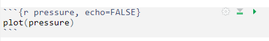

Overview
This course will introduce scientists and practitioners interested in applying statistical approaches in their daily routine using R as a working environment. Participants will be introduced into R and R Studio while learning how to perform common statistical analyses. After a short introduction on R and its principles, the focus will be on questions that could be addressed using common statistical analyses, both for descriptive statistics and for statistical inference.
0.1 Learning outcomes
Understand how to read, interpret and write scripts in R.
Learn statistical tools to address common questions in research activities.
An introduction to efficient, readable and reproducible analyses
Being comfortable with using R when performing both descriptive and inferential statistics.
(PART*) Get Started in R
1 Introduction to R and RStudio
R is the name of the programming language we will learn on this course.
RStudio is a convenient interface which we will be using throughout the course in order to learn how to organise data, produce accurate data analyses & data visualisations.
R is a programming language that you will write code in, and RStudio is an Integrated Development Environment (IDE) which makes working with R easier. Think of it as knowing English and using a plain text editor like NotePad to write a book versus using a word processor like Microsoft Word. You could do it, but it wouldn't look as good and it would be much harder without things like spell-checking and formatting. In a similar way, you can use R without R Studio but we wouldn't recommend it. The key thing to remember is that although you will do all of your work using RStudio for this course, you are actually using two pieces of software which means that from time-to-time, both of them may have separate updates.
R and RStudio can be downloaded for free onto your personal computers(see Appendices), but for convenience we will use a classroom space on RStudio Cloud.
RStudio Cloud is a cloud-based service where we can log into remotely hosted servers that host our data analysis projects.
The advantage of using RStudio Cloud is that all the extra packages and functions you need for this course will already be installed. You can log-in to your workspace from any computer as long as you have an internet connection and remember you username and password. I can also "visit" your projects and help out when you get stuck, if they are hosted on RStudio Cloud.
Eventually we will may also add extra tools like GitHub and RMarkdown for data reproducibility, literate and collaborative programming.
By the end of this course I hope you will have the tools to confidently analyze real data, make informative and beautiful data visuals, and be able to analyze lots of different types of data.
1.1 Using RStudio Cloud
All of our sessions will run on cloud-based software. All you have to do is make a free account, and join our Workspace.
Once you are signed up - you will see that there are two spaces:
Your workspace - for personal use (20hrs/month)
Our shared classroom - educational licence (no limit)
Make sure you are working in the classroom workspace - so that I can distribute project work and 'visit' your projects if needed.
RStudio Cloud works in exactly the same way as RStudio, but means you don't have to download any software. You can access the hosted cloud server and your projects through any browser connection (Chrome works best), from any computer.
Here is a good reference guide to RStudio Cloud
1.2 Getting to know RStudio
R Studio has a console that you can try out code in (appearing as the bottom left window), there is a script editor (top left), a window showing functions and objects you have created in the "Environment" tab (top right window in the figure), and a window that shows plots, files packages, and help documentation (bottom right).

(#fig:img-rstudio)RStudio interface
You will learn more about how to use the features included in R Studio throughout this course, however, I highly recommend watching RStudio Essentials 1 at some point.
The video lasts ~30 minutes and gives a tour of the main parts of R Studio.
1.2.1 Consoles vs. scripts
The script window is the place to enter and run code so that it is easily edited and saved for future use. Usually the Script Window is shown at the top left in RStudio. If this window is not shown, it will be visible if you open a previously saved R script, or if you create a new R Script. You create new R Script by clicking on File > New File > R Script in the RStudio menu bar.
To execute your code in the R script, you can either highlight the code and click on Run, or you can highlight the code and press CTRL + Enter on your keyboard.
The console: you can enter code directly in the Console Window and click Enter. The commands that you run will be shown in the History Window on the top right of RStudio. Though it is much more difficult to keep track of your work this way.
1.2.2 Environment
The Environment tab (top right) allows you to see what objects are in the workspace. If you create variables or data frames, you have a visual listing of everything in the current workspace. When you start a new project this should be completely empty.
1.2.3 Plots, files, packages, help
Plots - The Plots panel, shows all your plots. There are buttons for opening the plot in a separate window and exporting the plot as a pdf or jpeg (though you can also do this with code.)
Files - The files panel gives you access to the file directory on your hard drive.
Packages - Shows a list of all the R packages installed on your harddrive and indicates whether or not they are currently loaded. Packages that are loaded in the current session are checked while those that are installed but not yet loaded are unchecked. We will discuss packages more later.
Help - Help menu for R functions. You can either type the name of a function in the search window, or use the code to search for a function with the name

(#fig:labelled)RStudio interface labelled


1.3 Get Help!
There are a lot of sources of information about using R out there. Here are a few helpful places to get help when you have an issue, or just to learn more
The R help system itself - type
help()and put the name of the package or function you are querying inside the bracketsVignettes - type
browseVignettes()into the console and hit Enter, a list of available vignettes for all the packages we have will be displayedCheat Sheets - available at RStudio.com. Most common packages have an associate cheat sheet covering the basics of how to use them. Download/bookmark ones we will use commonly such as ggplot2, data transformation with dplyr, Data tidying with tidyr & Data import.
Google - I use Google constantly, because I continually forget how to do even basic tasks. If I want to remind myself how to round a number, I might type something like R round number - if I am using a particular package I should include that in the search term as well
Ask for help - If you are stuck, getting an error message, can't think what to do next, then ask someone. It could be me, it could be a classmate. When you do this it is very important that you show the code, include the error message. "This doesn't work" is not helpful. "Here is my code, this is the data I am using, I want it to do X, and here's the problem I get."
It may be daunting to send your code to someone for help.
It is natural and common to feel apprehensive, or to think that your code is really bad. I still feel the same! But we learn when we share our mistakes, and eventually you will find it funny when you look back on your early mistakes, or laugh about the mistakes you still occasionally make!
2 R basics
Go to RStudio Cloud and enter the Project labelled Day One - this will clone the project and provide you with your own project workspace.
Follow the instructions below to get used to the R command line, and how R works as a language.
2.1 Your first R command
In the RStudio pane, navigate to the console (bottom left) and type or copy the below it should appear at the >
Hit Enter on your keyboard.
- What answer did you get?
The first line shows the request you made to R, the next line is R's response
You didn't type the > symbol: that's just the R command prompt and isn't part of the actual command.
When a complete expression is entered at the prompt, it is evaluated and the result of the evaluated expression is returned. The result may be auto-printed.
Usually, with interactive work, we do not explicitly print objects with the print function; it is much easier to auto-print them by typing the name of the object and hitting return/enter. However, when writing scripts, functions, or more extended programs, there is sometimes a need to explicitly print objects.
When an R vector is printed, you will notice that an index for the vector is printed in square brackets [] on the side. For example, see this integer sequence
## [1] 1 2 3 4 5 6 7 8 9 10 11 12 13 14 15 16 17 18 19 20 21 22 23 24 25
## [26] 26 27 28 29 30The numbers in the square brackets are not part of the vector itself; they are merely part of the printed output.
Note that the : operator is used to create integer sequences
2.1.1 Operators
There are a few different types of operators to consider in R
2.1.1.1 Assignment Operator
| Operator | Description |
|---|---|
| <- | used to assign values to variables |
2.1.1.2 Arithmetic Operators
| Operator | Description |
|---|---|
| + | addition |
| - | subtraction |
| * | multiplication |
| / | division |
| ^ | exponentiation |
2.1.1.3 Relational Operators
| Operator | Description |
|---|---|
| < | less than |
| <= | less than or equal to |
| > | greater than |
| >= | greater than or equal to |
| == | exactly equal to |
| != | not equal to |
2.1.1.4 Logical Operators
| Operator | Description |
|---|---|
| ! | not |
| & | AND |
| ⎮ | OR |
2.1.1.5 Membership Operators
| Operator | Description |
|---|---|
| %in% | used to check if an element is in a vector or list |
2.1.2 Typos
Before we go on to talk about other types of calculations that we can do with R, there’s a few other things I want to point out. The first thing is that, while R is good software, it’s still software. It’s pretty stupid, and because it’s stupid it can’t handle typos. It takes it on faith that you meant to type exactly what you did type.
Suppose you forget to hit the shift key when trying to type +, and as a result your command ended up being 10 = 20 rather than 10 + 20. Try it for yourself and replicate this error message:
Error in 10 = 20 : invalid (do_set) left-hand side to assignment
What's going on: R tries to interpret 10 = 20 as a command, but it doesn't make sense, so it gives you an error message.
When a person sees this, they might realize it's a typo because the + and = keys are right next to each other on the keyboard. But R doesn't have that insight, so it just gets confused.
What's even trickier is that some typos won't create errors because they accidentally form valid R commands. For example, if I meant to type 10 + 20 but mistakenly pressed a neighboring key, I'd end up with 10 - 20. Now, R can't read your mind to know you wanted to add, not subtract, so something different happens:
## [1] -10In this case, R produces the right answer, but to the the wrong question.
2.1.3 More simple arithmetic
One of the best ways to get familiar with R is to experiment with it. The good news is that it's quite hard to mess things up, so don't stress too much. Just type whatever you like into the console and see what happens.
Now, if your console's last line looks like this:
> 10+
+ And there's a blinking cursor next to that plus sign, it means R is patiently waiting for you to complete your command. It believes you're still typing, so it hasn't tried to run anything yet. This plus sign is a bit different from the usual prompt (the > symbol). It's there to nudge you that R is ready to "add" what you're typing now to what you typed before. For example, type 20 and hit enter, and then R will complete the command like this:
> 10 +
+ 20
[1] 30Alternatively hit the escape key, and R will forget what you were trying to do and return to a blank line.
2.1.4 Try some simple maths
Raise a number to the power of another
Multiplying a number \(x\) by itself \(n\) times is called "raising \(x\) to the \(n\)-th power". Mathematically, this is written as \(x^n\). Some values of \(n\) have special names: in particular \(x^2\) is called \(x\)-squared, and \(x^3\) is called \(x\)-cubed. So, the 4th power of 5 is calculated like this:
\[5^4 = 5 \times 5 \times 5 \times 5 \]
2.1.5 Perform some combos
R follows the standard order of operations (BODMAS/BIDMAS), which means it first calculates within brackets, then deals with exponents, followed by division and multiplication, and finally addition and subtraction.
Let's look at two examples to see how the order of operations affects the results:
Similarly if we want to raise a number to a fraction, we need to surround the fraction with parentheses ()
The first one calculates 16 raised to the power of 1, then divided this answer by two. The second one raises 16 to the power of a half. A big difference in the output.
While the cursor is in the console, you can press the up arrow to see all your previous commands.
You can run them again, or edit them. Later on we will look at scripts, as an essential way to re-use, store and edit commands.
2.2 "TRUE or FALSE" data
Time to make a sidebar onto another kind of data. Many concepts in programming rely on the idea of a logical value. A logical value is an assertion about whether something is true or false. This is implemented in R in a pretty straightforward way. There are two logical values, namely TRUE and FALSE. Despite the simplicity, logical values are very useful things. Let's see how they work.
2.2.1 Assessing mathematical truths
Time to explore a different kind of data. In programming, many concepts rely on logical values. A logical value is a statement about whether something is true or false. In R, this is pretty straightforward. There are two logical values: TRUE and FALSE. Despite their simplicity, these logical values are incredibly useful. Let's dive into how they work.
In R, basic mathematics is solid, and there's no room for manipulation. When you ask R to calculate 2 + 2, it always provides the same answer,
## [1] 4up to this point, R has been performing calculations without explicitly asserting whether \(2 + 2 = 4\) is a true statement. If I want R to make an explicit judgment, I can use a command like this:
TRUE
What I've done here is use the equality operator, ==, to force R to make a "true or false" judgement.
This is a very different operator to the assignment operator
= you saw previously.
A common typo that people make when trying to write logical commands
in R (or other languages, since the “= versus
==” distinction is important in most programming languages)
is to accidentally type = when you really mean
==.
Okay, let's see what R thinks of 2 +2 ==5:
## [1] FALSENow, let's see what happens when I attempt to make R believe that two plus two equals five by using an assignment statement like 2 + 2 = 5 or 2 + 2 <- 5. Here's the outcome:
Error in 2 + 2 = 5 : target of assignment expands to non-language objectIndeed, R isn't too fond of this idea. It quickly realizes that 2 + 2 is not a variable (that's what the "non-language object" part is saying), and it refuses to let you "reassign" it. While R can be quite flexible and allows you to do some remarkable things to redefine parts of itself, there are fundamental truths it simply won't budge on. It won't tamper with the laws of addition, and it won't redefine the number 2.
That's probably for the best.
2.3 Storing outputs
When dealing with more complex questions, it's often helpful to store our answers and use them in later steps. Fortunately, this is quite easy to do in R. We can assign the results to a name with the assignment operator:
This literally means please assign the value of 1+2 to the name a. We use the assignment operator <- to make this assignment.
Note the shortcut key for <- is Alt + - (Windows) or Option + - (Mac)
By performing this action, you'll achieve two things:
You will notice in the top right-hand pane within the Environment tab that there is now an object labeled a with a value of 3.

(#fig:img-environment)object a is now visible withe a value of 3 in the Environment Pane
You can check what the variable a contains by typing it into your Console and pressing Enter.
Keep in mind that you won't see the result of your operations until you type the object into the R console and press Enter.
You can now call this object at any time during your R session and perform calculations with it.
What happens if we assign a value to a named object that already exists in our R environment??? for example
The value of a is now 10.
You should see that the previous assignment is lost, gone forever and has been replaced by the new value.
We can assign lots of things to objects, and use them in calculations to build more objects.
Remember: If you now change the value of b, the value of c does not change.
Objects are totally independent from each other once they are made.
Overwriting objects with new values means the old value is lost.
- What is the value of
c?
[1] 15
When c was created it was a product of a and b having values of 10 and 15 respectively.
If we re-ran the command c <- a + b after changing the value of b then we would get a value of 17.
Look at the environment tab again - you should see it's starting to fill up now!
RStudio will by default save the objects in its memory when you close a session.
These will then be there the next time you logon. It might seem nice to be able to close things down and pick up where you left off, but its actually quite dangerous. It’s messy, and can cause lots of problems when we work with scripts later, so don’t do this!
To stop RStudio from saving objects by default go to Tools > Project Options option and change “Save workspace to .RData on exit” to “No” or “Never”.
Instead we are going to learn how to use scripts to quickly re-run analyses we have been working on.
2.3.1 Choosing names
Use informative variable names. As a general rule, using meaningful names like
orangeandappleis preferred over arbitrary ones likevariable1andvariable2. Otherwise it's very hard to remember what the contents of different variables actually are.Use short variable names. Typing is a pain and no-one likes doing it. So we much prefer to use a name like
appleover a name likepink_lady_apple.Use one of the conventional naming styles for multi-word variable names. R only lets you use certain things as legal names. Legal names must start with a letter not a number, which can then be followed by a sequence of letters, numbers, ., or _. R does not like using spaces. Upper and lower case names are allowed, but R is case sensitive so
Appleandappleare different.My favourite naming convention is
snake_caseshort, lower case only, spaces between words are separated with a _. It's easy to read and easy to remember.

(#fig:unnamed-chunk-39)courtesy of Allison Horst
2.4 R objects
In R, there are five fundamental or "atomic" classes of objects:
Character: These represent text or character strings.
Numeric (num) or Double (dbl): These are used for real numbers (e.g., decimal numbers).
Integer: Used for whole numbers.
Complex: For complex numbers.
Logical: Represented as True or False, these are used for logical values.
The most basic type of R object is a vector. You can create empty vectors using the vector() function. The primary rule regarding vectors in R is that a vector can only contain objects of the same class.
However, as with any good rule, there's an exception, which is the "list." Lists are represented as vectors but can hold objects of different classes, which is why they're often used.
2.4.1 Numbers
In R, both "dbl" and "num" refer to numeric data types, but there is a subtle difference between them:
dbl ("double"): This refers to double-precision floating-point numbers, which are capable of storing real numbers with high precision. Double-precision numbers have more decimal places of accuracy and can represent a wider range of values without loss of precision. When you perform arithmetic operations, R typically returns results as "dbl" values by default.
num ("numeric"): "Num" is a more general term that includes not only double-precision floating-point numbers but also integer values. In R, integers are a subtype of numeric data. Numeric data can include both integers and double-precision floating-point numbers, depending on the specific data and how it is represented.
So, "dbl" specifically denotes double-precision floating-point numbers, while "num" encompasses a broader range of numeric data, including both integers and double-precision numbers. In most cases, you can use "num" to work with numeric data in a more general sense, while "dbl" focuses on the higher-precision representation of real numbers.
2.5 Attributes
R objects can come with attributes, which are essentially metadata for the object. These metadata are handy because they help describe the object. For instance, in a data frame, column names serve as attributes, clarifying the data contained in each column. Here are a few examples of R object attributes:
names()anddimnames()dimensions (e.g., for matrices and arrays)
dim()class()(e.g., integer, numeric)length()Other user-defined attributes or metadata
You can access the attributes of an object, if it has any, by using the attributes() function. If an R object doesn't have any attributes, the attributes() function will return NULL.
2.6 Vectors
We have been working with R objects containing a single element of data, but we will more commonly work with vectors. A vector is a sequence of elements, all of the same data type. These could be logical, numerical, character etc.
numeric_vector <- c(1,2,3)
character_vector <- c("fruits", "vegetables", "seeds")
logical_vector <- c(TRUE, TRUE, FALSE)
integer_vector <- 1:102.6.1 Coercion
In R, when different classes of objects are mixed together in a vector, coercion occurs to ensure that every element in the vector belongs to the same class. Coercion is the process of converting objects to a common class to make the combination reasonable. Let's see the effects of implicit coercion in the provided examples:
y <- c(2.3, "a") # Here, we're mixing a numeric value (1.7) with a character value ("a"). To make them compatible, R coerces both elements into character values. So, y becomes a character vector.
y <- c(TRUE, 2) # In this case, we're combining a logical value (TRUE) with a numeric value (2). R coerces the logical value into 1, so y becomes a numeric vector.
y <- c("a", TRUE) # We're mixing a character value ("a") with a logical value (TRUE). In this scenario, R coerces the logical value into a character value, resulting in y becoming a character vector.So, the outcome depends on how R can reasonably represent all the objects in the vector. It aims to create a vector of the most inclusive class to accommodate the mixed objects. Keep in mind that this coercion can lead to unexpected results, so it's essential to be aware of the implicit type conversion when mixing different data types in R.
Objects can also be explicitly coerced from one class to another using the as.* functions, if available.
Sometimes, R can’t figure out how to coerce an object and this can result in NAs being produced
2.7 Matrices
Matrices can be thought of as vectors with an added dimension attribute. This dimension attribute is a two-element integer vector specifying the number of rows and columns, which defines the shape and structure of the matrix.
Data frames are also two-dimensional but can store columns of different data types - matrices are simpler as they consist of elements of the same data type.
Matrices are constructed "columns-first" so entries start in the "upper left" and and run down columns.
## [,1] [,2] [,3]
## [1,] 1 3 5
## [2,] 2 4 6## $dim
## [1] 2 3We can create matrices in several ways:
Adding a
dim()to existing vectorsColumn/row-binding vectors with
cbind()andrbind()
## [,1] [,2] [,3]
## [1,] 1 3 5
## [2,] 2 4 6## a b c
## [1,] 1 3 5
## [2,] 2 4 6You will see how in this last operation column names were added to the matrix, we can add, change or remove column and rownames on a matrix with colnames() and rownames()
## a b c
## y 1 3 5
## z 2 4 62.8 Lists
Lists are a versatile and fundamental data type in R. They set themselves apart from regular vectors by allowing you to store elements of different classes within the same list. This flexibility is what makes lists so powerful for various data structures and data manipulation tasks.
You can create lists explicitly using the list() function, which can take an arbitrary number of arguments. Lists, when combined with functions like the "apply" family, enable you to perform complex and versatile data manipulations and analyses in R. Lists are often used to represent heterogeneous data structures, such as datasets where different columns can have different data types and structures.
## [[1]]
## [1] 1
##
## [[2]]
## [1] "apple"
##
## [[3]]
## [1] TRUEWe can also create empty lists of set lengths with the vector() function, this can be useful for preallocating memory for iterations - as we will see later
## [[1]]
## NULL
##
## [[2]]
## NULL
##
## [[3]]
## NULLLists can also have names
2.9 Dataframes
Data frames are essential for storing tabular data in R and find extensive use in various statistical modeling and data analysis applications. They offer a structured way to manage and work with data in R, and packages like dplyr, developed by Hadley Wickham, provide optimized functions for efficient data manipulation with data frames.
Here are some key characteristics and advantages of data frames:
Tabular Structure: Data frames are a type of list, where each element in the list represents a column. The number of rows in each column is the same, and this tabular structure makes them suitable for working with datasets.
Mixed Data Types: Unlike matrices, data frames can contain columns with different classes of objects. This flexibility allows you to handle real-world datasets that often include variables of different data types.
Column and Row Names: Data frames include column names, which describe the variables or predictors. Additionally, they have a special attribute called "row.names" that provides information about each row in the data frame.
Creation and Conversion: Data frames can be created in various ways, such as reading data from files using functions like read.table() and read.csv(). You can also create data frames explicitly with data.frame().
Working with Data: Data frames are especially useful when working with datasets that require data cleaning, transformation, or merging. They provide a high level of data organization, and many R packages are designed to work seamlessly with data frames.
dplyr: The
dplyrpackage is optimized for efficient data manipulation with data frames. It offers a set of functions to perform data operations quickly and intuitively.
Data frames are a fundamental structure for managing tabular data in R. They excel in handling datasets with mixed data types and are essential for various data analysis and modeling tasks.
2.9.1 Tibbles
“Tibbles” are a new modern data frame. It keeps many important features of the original data frame
A tibble never changes the input type.
A tibble can have columns that are lists.
A tibble can have non-standard variable names.
- can start with a number or contain spaces. -to use this refer to these in a backtick.
Tibbles only print the first 10 rows and all the columns that fit on a screen. - Each column displays its data type
2.10 Error/ Debugging
Things will go wrong eventually, they always do...
R is very pedantic, even the smallest typo can result in failure and typos are impossilbe to avoid. So we will make mistakes. One type of mistake we will make is an error. The code fails to run. The most common causes for an error are:
typos
missing commas
missing brackets
There's nothing wrong with making lots of errors. The trick is not to panic or get frustrated, but to read the error message and our script carefully and start to debug...
... and sometimes we need to walk away and come back later!
Try typing the command help() into the R console, it
should open a new tab on the bottom right.
Put a function or package into the brackets to get help with a specific topic

(#fig:unnamed-chunk-55)courtesy of Allison Horst
2.11 Functions
Functions are the tools of R. Each one helps us to do a different task.
Take for example the function that we use to round a number to a certain number of digits - this function is called round
Here's an example:
We start the command with the function name round. The name is followed by parentheses (). Within these we place the arguments for the function, each of which is separated by a comma.
The arguments:
x =2.4326782647 (the number we would like to round)digits =2 (the number of decimal places we would like to round to)
Arguments are the inputs we give to a function. These arguments are in the form name = value the name specifies the argument, and the value is what we are providing to define the input. That is the first argument x is the number we would like to round, it has a value of 2.4326782647. The second argument digits is how we would like the number to be rounded and we specify 2. There is no limit to how many arguments a function could have.
Copy and paste the following code into the console.
The help documentation for round()should appear in the bottom right help panel. In the usage section, we see that round()takes the following form:
In the arguments section, there are explanations for each of the arguments. xis the number or vector where we wish to round values. digits is the number of decimal places to be used. In the description we can see that if no value is supplied for digits it will default to 0 or whole number rounding.
Read the 'Details' section to find out what happens when rounding when the last digit is a 5.
Let's try an example and just change the required argument digits
Copy and paste the following code into the console.
## [1] 2Now we can change the additional arguments to produce a different set of numbers.
## [1] 2.43This time R has still rounded the number, but it has done so to a set number of 'decimal places'.
Always remember to use the help documentation to help you understand what arguments a function requires.
2.11.1 Storing the output of functions
What if we need the answer from a function in a later calculation. The answer is to use the assignment operator again <-.
In this example we assign values to two R objects that we can then call inside our R function as though we were putting numbers in directly.
Copy and paste the following code into the console.
number_of_digits <- 3
my_number <- 2.4326782647
rounded_number <- round(x = my_number,
digits = number_of_digits)What value is assigned to the R object rounded_number ?
[1] 2.433
2.11.2 More fun with functions
Copy and paste this:
Looks like we don't even have to give the names of arguments for a function to still work. This works because the function round expects us to give the number value first, and the argument for rounding digits second. But this assumes we know the expected ordering within a function, this might be the case for functions we use a lot. If you give arguments their proper names then you can actually introduce them in any order you want.
Try this:
But this gives a different answer
Remember naming arguments overrides the position defaults
How do we know the argument orders and defaults? Well we get to know how a lot of functions work through practice, but we can also use help() .
2.12 Packages
When you install R you will have access to a range of functions including options for data wrangling and statistical analysis. The functions that are included in the default installation are typically referred to as Base R and there is a useful cheat sheet that shows many Base R functions here
However, the power of R is that it is extendable and open source - anyone can create a new package that extends the functions of R.
An R package is a container for various things including functions and data. These make it easy to do very complicated protocols by using custom-built functions. Later we will see how we can write our own simple functions. Packages are a lot like new apps extending the functionality of what your phone can do.
On RStudio Cloud I have already installed several add-on packages, all we need to do is use a simple function library() to load these packages into our workspace. Once this is complete we will have access to all the custom functions they contain.
Copy and paste the following code into the console.
ggplot2- is one of the most popular packages to use in R. This "grammar of graphics" packages is dedicated to making data visualisations, and contains lots of dedicated functions for this.palmerpenguins- is a good example of a data-heavy package, it contains no functions, but instead datasets that we can use.
A common source of errors is to call a function that is part of a package but forgetting to load the package.
If R says something like “Error in”function-name”: could not find X” then most likely the function was misspelled or the package containing the function hasn’t been loaded.
2.12.1 Organising scripts
Scripts work best when they are well organised - and well documented. Simple tricks and consistent organisation can make your work easier to read and be reproduced by others.
You should bookmark the Tidyverse Style Guide, it is an opinionated way of organising your scripts and code so that it has a consistent style, that maximises readability. Later in the course we will use this as a benchmark for assessing your code writing.
Annotating your instructions provides yourself and others insights into why you are doing what you are doing. This is a vital aspect of a robust and reproducible workflow. And when you come back to a script, one week, one month or one year from now you will often wonder what a command was for. It is very, very useful to make notes for yourself, and its useful in case anyone else will ever read your script. Make these comments helpful as they are for humans to read.
We have already seen how to signal a comment with the # key. Everything in the line after a # is ignored by R and won't be treated as a command. You should also see that it is marked in a different colour in your script.
Put the following comment in your script on line 1.
We can also use # to produce Headers of different levels, if we follow these with commented lines of - or = as shown in the figure below.

(#fig:script outline)R script document outline. Push the button with five horizontal lines to reveal how R recognises headers and subheaders
2.12.2 Loading packages
To use the functions from a package in our script they must be loaded before we call on the functions or data they contain. So the most sensible place to put library calls for packages is at the very top of our script. So let's do that now,
Add the commandslibrary(ggplot2) and
library(palmerpenguins) to your script.
Think about how you would organise you script using the image above as a guide
Put a comment next to each package explaining what it is for “Hint use the help() function”.
Use the document outline button to help organise your script.
# I really love R
# _______________----
# 📦 PACKAGES ----
library(ggplot2) # create elegant data visualisations
library(palmerpenguins) # Palmer Archipelago Penguin Data
# ______________----R Studio will interpret Unicode to present images that you can include in your scripts. It’s not necessary, but a fun way to help organise your scripts.
2.12.3 Adding more code
Add the below code into your script, underneath the sections you already have
It is very similar to the code you ran earlier, but is preceded by plot_1 <-
2.12.4 Running your script
To run the commands from your script, we need to get it into the Console. You could select and copy/paste this into the Console. But there are a couple of faster shortcuts.
Hit the Run button in the top right of the script pane. Pressing this will run the line of code the cursor is sitting on.
Pressing Ctrl+Enter will do the same thing as hitting the Run button
If you want to run the whole script in one go then press Ctrl+A then either click Run or press Ctrl+Enter
Try it now.
You should notice that unlike when making previous data visuals, you do not immediately see your graph, this is because you assigned the output of your functions to an R object, instead of the default action where R would print the output. Check the "Environment" tab - you should be able to see plot_1 there.
- To see the new plot you have made you should type
plot_1into the R console. Or add it underneath the script and run it again!
2.12.5 Making an output
For our next trick we will make a script that outputs a file. Underneath the lines of code to generate the figure we will add a new function ggsave(). Then re-run your script. To find out more about this function (and the arguments it contains), type help(ggsave) into the console.
# OUTPUT TO FILE ----
ggsave(filename = "2022_10_01_5023Y_workshop_1_penguin_scatterplot.png",
plot = plot_1,
dpi = 300,
width = 6,
height = 6)
# _________________----Check the Files tab on RStudio Cloud, there should now be a new file in your workspace called "2022_10_01_5023Y_workshop_1_penguin_scatterplot.png".
Wow that is a mouthful! Why have we made such a long filename? Well it contains information that should help you know what it is for the future.
Date
Module code
Short description of the file contents
It is very important to have naming conventions for all files.
Everything after the . is file extension information
informing the computer how to process the contents of the file.
.png stands for “Portable Graphics Format”, and it means
the data is an uncompressed image format.
Everything before the . is for humans, it is a good idea
to make sure these have a naming convention.
Avoid periods, spaces or slashes, instead use YYYYMMDD and underscores
e.g. YYYYMMDD_short_image_description.fileextension
2.12.6 Saving your script
Our script now contains code and comments from our first workshop. We need to save it.
Alongside our data, our script is the most precious part of our analysis. We don't need to save anything else, any outputs etc. because our script can always be used to generate everything again. Note the colour of the script - the name changes colour when we have unsaved changes. Press the Save button or go to File > Save as. Give the File a sensible name like "YYYYMMDD_5023Y_workshop_1_simple_commands" and in the bottom right pane under Files you should now be able to see your saved script, it should be saved with a .R file extension indicating this is an R Script.
You could now safely quit R, and when you log on next time to this project, your script will be waiting for you.
# I really love R
# _______________----
# 📦 PACKAGES ----
library(ggplot2) # create elegant data visualisations
library(palmerpenguins) # Palmer Archipelago Penguin Data
# ________________----
# DATA VISUAL ----
plot_1 <- ggplot(data = penguins, # calls ggplot function, data is penguins
aes(x = bill_length_mm, # sets x axis as bill length
y = bill_depth_mm)) + # sets y axis value as bill depth
geom_point(aes(colour=species)) # geometric to plot
# ______________----
# OUTPUT TO FILE ----
ggsave(filename = "2022_10_01_5023Y_workshop_1_penguin_scatterplot.png",
plot = plot_1,
dpi = 300,
width = 6,
height = 6)
# _________________----2.13 Quitting
Make sure you have saved any changes to your R script - that's all you need to make sure you've done!
If you want me to take a look at your script let me know
If you spotted any mistakes or errors let me know
Close your RStudio Cloud Browser
Complete this week's short quiz!
2.14 Activity 1
2.14.1 Complete this Quiz
When you get the correct answer, the answer box will turn green. Sometimes this doesn't work on Internet Explorer or Edge so be sure to use Chrome or Firefox.
Question 1. What is the output from 5^4
Question 2. What answer will you get when you type 2+2 = 4 into the R console?
If we wanted R to make a judgement we must use == not = otherwise we will get an Error message
Question 3. What symbol do I use if I want to assign a value or output of a function to an R object
Question 4. What is the value of a if I ran the following commands?
Question 5. Which of these variable naming conventions is not written correctly?
Question 6. What should I type into the R console if I want help with the round() function?
Question 7. Which of these statements about function arguments is not true
Question 8. Evaluate this statement "An R Package can contain code functions, data, or both."
## R version 4.3.1 (2023-06-16)
## Platform: x86_64-pc-linux-gnu (64-bit)
## Running under: Ubuntu 20.04.6 LTS
##
## Matrix products: default
## BLAS: /usr/lib/x86_64-linux-gnu/atlas/libblas.so.3.10.3
## LAPACK: /usr/lib/x86_64-linux-gnu/atlas/liblapack.so.3.10.3; LAPACK version 3.9.0
##
## locale:
## [1] LC_CTYPE=C.UTF-8 LC_NUMERIC=C LC_TIME=C.UTF-8
## [4] LC_COLLATE=C.UTF-8 LC_MONETARY=C.UTF-8 LC_MESSAGES=C.UTF-8
## [7] LC_PAPER=C.UTF-8 LC_NAME=C LC_ADDRESS=C
## [10] LC_TELEPHONE=C LC_MEASUREMENT=C.UTF-8 LC_IDENTIFICATION=C
##
## time zone: UTC
## tzcode source: system (glibc)
##
## attached base packages:
## [1] stats graphics grDevices utils datasets methods base
##
## other attached packages:
## [1] palmerpenguins_0.1.1 kableExtra_1.3.4 xml2_1.3.5
## [4] rvest_1.0.3 faux_1.2.1 extrafont_0.19
## [7] knitr_1.43 webexercises_1.1.0 glossary_1.0.0
## [10] lubridate_1.9.2 forcats_1.0.0 stringr_1.5.0
## [13] dplyr_1.1.2 purrr_1.0.1 readr_2.1.4
## [16] tidyr_1.3.0 tibble_3.2.1 ggplot2_3.4.2
## [19] tidyverse_2.0.0
##
## loaded via a namespace (and not attached):
## [1] sass_0.4.6 utf8_1.2.3 generics_0.1.3 stringi_1.7.12
## [5] extrafontdb_1.0 hms_1.1.3 digest_0.6.33 magrittr_2.0.3
## [9] evaluate_0.21 grid_4.3.1 timechange_0.2.0 bookdown_0.34
## [13] fastmap_1.1.1 jsonlite_1.8.7 httr_1.4.6 fansi_1.0.4
## [17] viridisLite_0.4.2 scales_1.2.1 codetools_0.2-19 jquerylib_0.1.4
## [21] cli_3.6.1 rlang_1.1.1 munsell_0.5.0 withr_2.5.0
## [25] cachem_1.0.8 yaml_2.3.7 tools_4.3.1 tzdb_0.4.0
## [29] memoise_2.0.1 colorspace_2.1-0 webshot_0.5.5 vctrs_0.6.3
## [33] R6_2.5.1 lifecycle_1.0.3 fs_1.6.2 pkgconfig_2.0.3
## [37] pillar_1.9.0 bslib_0.5.0 gtable_0.3.3 glue_1.6.2
## [41] systemfonts_1.0.4 xfun_0.39 tidyselect_1.2.0 rstudioapi_0.15.0
## [45] htmltools_0.5.5 svglite_2.1.1 rmarkdown_2.23 Rttf2pt1_1.3.12
## [49] compiler_4.3.1 downlit_0.4.3(PART*) Exploring Data
3 Loading data
In this workshop we work through loading data. Once we have a curated and cleaned dataset we can work on generating insights from the data.
As a biologist you should be used to asking questions and gathering data. It is also important that you learn all aspects of the research process. This includes responsible data management (understanding data files & spreadsheet organisation, keeping data safe) and data analysis.
In this chapter we will look at the structure of data files, and how to read these with R. We will also continue to develop reproducible scripts. This means that we are writing scripts that are well organised and easy to read, and also making sure that our scripts are complete and capable of reproducing an analysis from start to finish.
Transparency and reproducibility are key values in scientific research, when you analyse data in a reproducible way it means that others can understand and check your work. It also means that the most important person can benefit from your work, YOU! When you return to an analysis after even a short break, you will be thanking your earlier self if you have worked in a clear and reproducible way, as you can pick up right where you left off.
3.1 Meet the Penguins
This data, taken from the palmerpenguins (Horst et al. (2022)) package was originally published by Gorman et al. (2014). In our course we will work with real data that has been shared by other researchers.
The palmer penguins data contains size measurements, clutch observations, and blood isotope ratios for three penguin species observed on three islands in the Palmer Archipelago, Antarctica over a study period of three years.

These data were collected from 2007 - 2009 by Dr. Kristen Gorman with the Palmer Station Long Term Ecological Research Program, part of the US Long Term Ecological Research Network. The data were imported directly from the Environmental Data Initiative (EDI) Data Portal, and are available for use by CC0 license (“No Rights Reserved”) in accordance with the Palmer Station Data Policy. We gratefully acknowledge Palmer Station LTER and the US LTER Network. Special thanks to Marty Downs (Director, LTER Network Office) for help regarding the data license & use. Here is our intrepid package co-author, Dr. Gorman, in action collecting some penguin data:

Here is a map of the study site

3.2 Activity 1: Organising our workspace
Before we can begin working with the data, we need to do some set-up.
Go to RStudio Cloud and open the
PenguinsR projectCreate the following folders using the + New Folder button in the Files tab
- data
- outputs
- scripts
R is case-sensitive so type everything EXACTLY as printed here
Having these separate subfolders within our project helps keep things tidy, means it's harder to lose things, and lets you easily tell R exactly where to go to retrieve data.
The next step of our workflow is to have a well organised project space. RStudio Cloud does a lot of the hard work for you, each new data project can be set up with its own Project space.
We will define a project as a series of linked questions that uses one (or sometimes several) datasets. For example a coursework assignment for a particular module would be its own project, a series of linked experiments or particular research project might be its own project.
A Project will contain several files, possibly organised into sub-folders containing data, R scripts and final outputs. You might want to keep any information (wider reading) you have gathered that is relevant to your project.

(#fig:unnamed-chunk-6)An example of a typical R project set-up
Within this project you will notice there is already one file .Rproj. This is an R project file, this is a very useful feature, it interacts with R to tell it you are working in a very specific place on the computer (in this case the cloud server we have dialed into). It means R will automatically treat the location of your project file as the 'working directory' and makes importing and exporting easier1.
It is very important to NEVER to move the .Rproj file, this may prevent your workspace from opening properly.
3.3 Activity 2: Access our data
Now that we have a project workspace, we are ready to import some data.
Use the link below to open a page in your browser with the data open
Right-click Save As to download in csv format to your computer (Make a note of where the file is being downloaded to e.g. Downloads)
Compare how the data looks in "raw" format to when you open the same data with Excel
At first glance the data might look quite strange and messy. It has been stored as a CSV or comma-separated values file. CSV files are plain text files that can store large amounts of data, and can readily be imported into a spreadsheet or storage database.
These files are the simplest form of database, no coloured cells, no formulae, no text formatting. Each row is a row of the data, each value of a row (previously separate columns) is separated by a comma.
This file format helps us maintain an ethos Keep Raw Data Raw -
In many cases, the captured or collected data may be unique and impossible to reproduce, such as measurements in a lab or field observations. For this reason, they should be protected from any possible loss. Every time a change is made to a raw data file it threatens the integrity of that information.
In practice, that means we only use our data file for data entry and storage. All the data manipulation, cleaning and analysis happens in R, using transparent and reproducible scripts.
We avoid saving files in the Excel format because they have a nasty habit of formatting or even losing data when the file gets large enough.
If you need to add data to a csv file, you can always open it in an Excel-like program and add more information, but remember to save it in the original csv format afterwards.

(#fig:unnamed-chunk-10)Top image: Penguins data viewed in Excel, Bottom image: Penguins data in native csv format
In raw format, each line of a CSV is separated by commas for different values. When you open this in a spreadsheet program like Excel it automatically converts those comma-separated values into tables and columns.
You are probably more used to working with Excel (.xls and .xlsx) file formats, but while these are widely supported, CSV files, as simple text formats are supported by ALL data interfaces. They are also not proprietary (e.g. the Excel format is owned by Microsoft), so by working with a .csv format your data is more open and accessible.
3.4 Activity 3: Upload our data
The data is now in your Downloads folder on your computer
We need to upload the data to our remote cloud-server (RStudio Cloud), select the upload files to server button in the Files tab
Put your file into the data folder - if you make a mistake select the tickbox for your file, go to the cogs button and choose the option Move.

(#fig:unnamed-chunk-12)Highlighted the buttons to upload files, and more options
3.5 Activity 4: Make a script
Let's now create a new R script file in which we will write instructions and store comments for manipulating data, developing tables and figures. Use the File > New Script menu item and select an R Script.
Add the following:
#___________________________----
# SET UP ----
## An analysis of the bill dimensions of male and female Adelie, Gentoo and Chinstrap penguins ----
### Data first published in Gorman, KB, TD Williams, and WR Fraser. 2014. “Ecological Sexual Dimorphism and Environmental Variability Within a Community of Antarctic Penguins (Genus Pygoscelis).” PLos One 9 (3): e90081. https://doi.org/10.1371/journal.pone.0090081. ----
#__________________________----Then load the following add-on package to the R script, just underneath these comments. Tidyverse isn't actually one package, but a bundle of many different packages that play well together - for example it includes ggplot2 which we used in the last session, so we don't have to call that separately
Add the following to your script:
# PACKAGES ----
library(tidyverse) # tidy data packages
library(janitor) # cleans variable names
library(lubridate) # make sure dates are processed properly
#__________________________----Save this file inside the scripts folder and call it 01_import_penguins_data.R
Click on the document outline button (top right of script pane). This will show you how the use of
#TITLES—-
Allows us to build a series of headers and subheaders, this is very useful when using longer scripts.
3.6 Activity 5: Read in data
Now we can read in the data. To do this we will use the function readr::read_csv() that allows us to read in .csv files. There are also functions that allow you to read in .xlsx files and other formats, however in this course we will only use .csv files.
First, we will create an object called
penguins_datathat contains the data in thepenguins_raw.csvfile.Add the following to your script, and check the document outline:
Note the differences between read.csv() and
read_csv. We covered this in differences between tibbles
and dataframes - here most obviously is a difference in column
names.
3.7 Filepaths
In the example above the read_csv() function requires you to provide a filepath (in "quotes"), in order to tell R where the file you wish to read is located in this example there are two components
"data/" - specifies the directory in which to look for the file
"penguins_raw.csv" - specifies the name and format of the file
3.7.0.1 Directories
A directory refers to a folder on a computer that has relationships to other folders. The term “directory” considers the relationship between that folder and the folders within and around it. Directories are hierarchical which means that they can exist within other folders as well as have folders exist within them.
No idea what directories or files are? You are not alone File not Found
A "parent" directory is any folder that contains a subdirectory. For example your downloads folder is a directory, it is the parent directory to any subdirectories or files contained within it.
3.7.0.2 Home directory
The home directory on a computer is a directory defined by your operating system. The home directory is the primary directory for your user account on your computer. Your files are by default stored in your home directory.
On Windows, the home directory is typically
C:\Users\your-username.On Mac and Linux, the home directory is typically
/home/your-username.
3.7.0.3 Working directory
The working directory refers to the directory on your computer that a tool assumes is the starting place for all filepaths
3.7.1 Absolute vs Relative filepaths
What has this got to do with working in R?
When you use any programming language, you have to specify filepaths in order for the program to find files to read-in or where to output files.
An Absolute file path is a path that contains the entire path to a file or directory starting from your Home directory and ending at the file or directory you wish to access e.g.
/home/your-username/project/data/penguins_raw.csv
The main drawbacks of using absolute file paths are:
If you share files, another user won’t have the same directory structure as you, so they will need to recreate the file paths
if you alter your directory structure, you’ll need to rewrite the paths
an absolute file path will likely be longer than a relative path, more of the backslashes will need to be edited, so there is more scope for error.
As different computers can have different path constructions, any scripts that use absolute filepaths are not very reproducible.
A Relative filepath is the path that is relative to the working directory location on your computer.
When you use RStudio Projects, wherever the .Rproj file is located is set to the working directory. This means that if the .Rproj file is located in your project folder then the relative path to your data is:
data/penguins_raw.csv
This filepath is shorter and it means you could share your project with someone else and the script would run without any editing.
For those of you using RStudio Cloud, remember you are working on a Linux OS cloud server, each of you will have a different absolute filepath - but the scripts for the project you are working on right now work because you are using relative filepaths
3.8 Activity 5: Check your script
#___________________________----
# SET UP ----
## An analysis of the bill dimensions of male and female Adelie, Gentoo and Chinstrap penguins ----
### Data first published in Gorman, KB, TD Williams, and WR Fraser. 2014. “Ecological Sexual Dimorphism and Environmental Variability Within a Community of Antarctic Penguins (Genus Pygoscelis).” PLos One 9 (3): e90081. https://doi.org/10.1371/journal.pone.0090081. ----
#__________________________----
# PACKAGES ----
library(tidyverse) # tidy data packages
library(janitor) # cleans variable names
library(lubridate) # make sure dates are processed properly
#__________________________----
# IMPORT DATA ----
penguins <- read_csv ("data/penguins_raw.csv")
head(penguins) # check the data has loaded, prints first 10 rows of dataframe
#__________________________----3.9 Activity 7: Test yourself
Question 1. In order to make your R project reproducible what filepath should you use?
Question 2. Which of these would be acceptable to include in a raw datafile?
Question 3. What should always be the first set of functions in our script? ?()
Question 4. When reading in data to R we should use
Question 5. What format is the penguins data in?
Each column is a unique variable and each row is a unique observation so this data is in a long (tidy) format
Question 6. The working directory for your projects is by default set to the location of?
Question 7. Using the filepath "data/penguins_raw.csv" is an example of
Question 8. What operator do I need to use if I wish to assign the output of the read_csv function to an R object (rather than just print the dataframe into the console)?
4 Data wrangling part one
It may surprise you to learn that scientists actually spend far more time cleaning and preparing their data than they spend actually analysing it. This means completing tasks such as cleaning up bad values, changing the structure of dataframes, reducing the data down to a subset of observations, and producing data summaries.
Many people seem to operate under the assumption that the only option for data cleaning is the painstaking and time-consuming cutting and pasting of data within a spreadsheet program like Excel. We have witnessed students and colleagues waste days, weeks, and even months manually transforming their data in Excel, cutting, copying, and pasting data. Fixing up your data by hand is not only a terrible use of your time, but it is error-prone and not reproducible. Additionally, in this age where we can easily collect massive datasets online, you will not be able to organise, clean, and prepare these by hand.
In short, you will not thrive as a scientist if you do not learn some key data wrangling skills. Although every dataset presents unique challenges, there are some systematic principles you should follow that will make your analyses easier, less error-prone, more efficient, and more reproducible.
In this chapter you will see how data science skills will allow you to efficiently get answers to nearly any question you might want to ask about your data. By learning how to properly make your computer do the hard and boring work for you, you can focus on the bigger issues.
4.1 Activity 1: Change column names
We are going to learn how to organise data using the tidy format2. This is because we are using the tidyverse packages Wickham (2023). This is an opinionated, but highly effective method for generating reproducible analyses with a wide-range of data manipulation tools. Tidy data is an easy format for computers to read. It is also the required data structure for our statistical tests that we will work with later.
Here 'tidy' refers to a specific structure that lets us manipulate and visualise data with ease. In a tidy dataset each variable is in one column and each row contains one observation. Each cell of the table/spreadsheet contains the values. One observation you might make about tidy data is it is quite long - it generates a lot of rows of data - you might remember then that tidy data can be referred to as long-format data (as opposed to wide data).

So we know our data is in R, and we know the columns and names have been imported. But we still don't know whether all of our values imported correctly, or whether it captured all the rows.
4.1.0.1 Add this to your script
When we run colnames() we get the identities of each column in our dataframe
Study name: an identifier for the year in which sets of observations were made
Region: the area in which the observation was recorded
Island: the specific island where the observation was recorded
Stage: Denotes reproductive stage of the penguin
Individual ID: the unique ID of the individual
Clutch completion: if the study nest observed with a full clutch e.g. 2 eggs
Date egg: the date at which the study nest observed with 1 egg
Culmen length: length of the dorsal ridge of the bird's bill (mm)
Culmen depth: depth of the dorsal ridge of the bird's bill (mm)
Flipper Length: length of bird's flipper (mm)
Body Mass: Bird's mass in (g)
Sex: Denotes the sex of the bird
Delta 15N : the ratio of stable Nitrogen isotopes 15N:14N from blood sample
Delta 13C: the ratio of stable Carbon isotopes 13C:12C from blood sample
4.1.0.2 Clean column names
Often we might want to change the names of our variables. They might be non-intuitive, or too long. Our data has a couple of issues:
Some of the names contain spaces
Some of the names have capitalised letters
Some of the names contain brackets
This dataframe does not like these so let's correct these quickly. R is case-sensitive and also doesn't like spaces or brackets in variable names
# CLEAN DATA ----
# clean all variable names to snake_case using the clean_names function from the janitor package
# note we are using assign <- to overwrite the old version of penguins with a version that has updated names
# this changes the data in our R workspace but NOT the original csv file
penguins <- janitor::clean_names(penguins) # clean the column names
colnames(penguins) # quickly check the new variable names## [1] "study_name" "sample_number" "species"
## [4] "region" "island" "stage"
## [7] "individual_id" "clutch_completion" "date_egg"
## [10] "culmen_length_mm" "culmen_depth_mm" "flipper_length_mm"
## [13] "body_mass_g" "sex" "delta_15_n_o_oo"
## [16] "delta_13_c_o_oo" "comments"4.1.0.3 Rename columns (manually)
The clean_names function quickly converts all variable names into snake case. The N and C blood isotope ratio names are still quite long though, so let's clean those with dplyr::rename() where "new_name" = "old_name".
4.2 Check data
4.2.0.1 glimpse: check data format
When we run glimpse() we get several lines of output. The number of observations "rows", the number of variables "columns". Check this against the csv file you have - they should be the same. In the next lines we see variable names and the type of data.
We can see a dataset with 345 rows (including the headers) and 17 variables It also provides information on the type of data in each column
<chr>- means character or text data<dbl>- means numerical data
4.2.0.2 Rename text values
Sometimes we may want to rename the values in our variables in order to make a shorthand that is easier to follow. This is changing the values in our columns, not the column names.
# use mutate and case_when for a statement that conditionally changes the names of the values in a variable
penguins <- penguins |>
mutate(species = case_when(species == "Adelie Penguin (Pygoscelis adeliae)" ~ "Adelie",
species == "Gentoo penguin (Pygoscelis papua)" ~ "Gentoo",
species == "Chinstrap penguin (Pygoscelis antarctica)" ~ "Chinstrap"))Have you checked that the above code block worked? Inspect your new tibble and check the variables have been renamed as you wanted.
4.3 dplyr verbs
In this section we will be introduced to some of the most commonly used data wrangling functions, these come from the dplyr package (part of the tidyverse). These are functions you are likely to become very familiar with.
| verb | action |
|---|---|
| select() | take a subset of columns |
| filter() | take a subset of rows |
| arrange() | reorder the rows |
| summarise() | reduce raw data to user defined summaries |
| group_by() | group the rows by a specified column |
| mutate() | create a new variable |
4.3.1 Select
If we wanted to create a dataset that only includes certain variables, we can use the select() function from the dplyr package.
For example I might wish to create a simplified dataset that only contains species, sex, flipper_length_mm and body_mass_g.
Run the below code to select only those columns
Alternatively you could tell R the columns you don't want e.g.
Note that select() does not change the original penguins tibble. It spits out the new tibble directly into your console.
If you don't save this new tibble, it won't be stored. If you want to keep it, then you must create a new object.
When you run this new code, you will not see anything in your console, but you will see a new object appear in your Environment pane.
4.3.2 Filter
Having previously used select() to select certain variables, we will now use filter() to select only certain rows or observations. For example only Adelie penguins.
We can do this with the equivalence operator ==
We can use several different operators to assess the way in which we should filter our data that work the same in tidyverse or base R.
| Operator | Name |
|---|---|
| A < B | less than |
| A <= B | less than or equal to |
| A > B | greater than |
| A >= B | greater than or equal to |
| A == B | equivalence |
| A != B | not equal |
| A %in% B | in |
If you wanted to select all the Penguin species except Adelies, you use 'not equals'.
This is the same as
You can include multiple expressions within filter() and it will pull out only those rows that evaluate to TRUE for all of your conditions.
For example the below code will pull out only those observations of Adelie penguins where flipper length was measured as greater than 190mm.
4.3.3 Arrange
The function arrange() sorts the rows in the table according to the columns supplied. For example
The data is now arranged in alphabetical order by sex. So all of the observations of female penguins are listed before males.
You can also reverse this with desc()
You can also sort by more than one column, what do you think the code below does?
4.3.4 Mutate
Sometimes we need to create a new variable that doesn't exist in our dataset. For example we might want to figure out what the flipper length is when factoring in body mass.
To create new variables we use the function mutate().
Note that as before, if you want to save your new column you must save it as an object. Here we are mutating a new column and attaching it to the new_penguins data oject.
4.4 Pipes

Pipes look like this: |> Pipes allow you to send the output from one function straight into another function. Specifically, they send the result of the function before |> to be the first argument of the function after |>. As usual, it's easier to show, rather than tell so let's look at an example.
# this example uses brackets to nest and order functions
arrange(.data = filter(.data = select(.data = penguins, species, sex, flipper_length_mm), sex == "MALE"), desc(flipper_length_mm))# this example uses sequential R objects to make the code more readable
object_1 <- select(.data = penguins, species, sex, flipper_length_mm)
object_2 <- filter(.data = object_1, sex == "MALE")
arrange(object_2, desc(flipper_length_mm))# this example is human readable without intermediate objects
penguins |>
select(species, sex, flipper_length_mm) |>
filter(sex == "MALE") |>
arrange(desc(flipper_length_mm))The reason that this function is called a pipe is because it 'pipes' the data through to the next function. When you wrote the code previously, the first argument of each function was the dataset you wanted to work on. When you use pipes it will automatically take the data from the previous line of code so you don't need to specify it again.
Take the penguins data AND THEN Select only the species, sex and flipper length columns AND THEN Filter to keep only those observations labelled as sex equals male AND THEN Arrange the data from HIGHEST to LOWEST flipper lengths.
From R version 4 onwards there is now a “native pipe”
|>
This doesn’t require the tidyverse magrittr package and
the “old pipe” %>% or any other packages to load and
use.
You may be familiar with the magrittr pipe or see it in other tutorials, and website usages. The native pipe works equivalntly in most situations but if you want to read about some of the operational differences, this site does a good job of explaining .
4.5 A few more handy functions
4.5.1 Check for duplication
It is very easy when inputting data to make mistakes, copy something in twice for example, or if someone did a lot of copy-pasting to assemble a spreadsheet (yikes!). We can check this pretty quickly
# check for duplicate rows in the data
penguins |>
duplicated() |> # produces a list of TRUE/FALSE statements for duplicated or not
sum() # sums all the TRUE statements[1] 0Great!
4.5.2 Summarise
We can also explore our data for very obvious typos by checking for implausibly small or large values, this is a simple use of the summarise function.
# use summarise to make calculations
penguins |>
summarise(min=min(body_mass_g, na.rm=TRUE),
max=max(body_mass_g, na.rm=TRUE))The minimum weight for our penguins is 2.7kg, and the max is 6.3kg - not outrageous. If the min had come out at 27g we might have been suspicious. We will use summarise again to calculate other metrics in the future.
our first data insight, the difference the smallest adult penguin in our dataset is nearly half the size of the largest penguin.
4.5.3 Group By
Many data analysis tasks can be approached using the “split-apply-combine” paradigm: split the data into groups, apply some analysis to each group, and then combine the results. dplyr makes this very easy with the group_by() function. In the summarise example above we were able to find the max-min body mass values for the penguins in our dataset. But what if we wanted to break that down by a grouping such as species of penguin. This is where group_by() comes in.
Now we know a little more about our data, the max weight of our Gentoo penguins is much larger than the other two species. In fact, the minimum weight of a Gentoo penguin is not far off the max weight of the other two species.
4.5.4 Distinct
We can also look for typos by asking R to produce all of the distinct values in a variable. This is more useful for categorical data, where we expect there to be only a few distinct categories
Here if someone had mistyped e.g. 'FMALE' it would be obvious. We could do the same thing (and probably should have before we changed the names) for species.
4.6 Summary
This provides a quick breakdown of the max and min for all numeric variables, as well as a list of how many missing observations there are for each one. As we can see there appear to be two missing observations for measurements in body mass, bill lengths, flipper lengths and several more for blood measures. We don't know for sure without inspecting our data further, but it is likely that the two birds are missing multiple measurements, and that several more were measured but didn't have their blood drawn.
We will leave the NA's alone for now, but it's useful to know how many we have.
We've now got a clean & tidy dataset, with a handful of first insights into the data.
4.7 Finished
That was a lot of work! But remember you don't have to remember all of these functions, remember this chapter when you do more data wrangling in the future. Also bookmark the RStudio Cheatsheets Page.
Finally, make sure you have saved the changes made to your script 💾 & make sure your workspace is set not to save objects from the environment between sessions.
We want our script to be our record of work and progress, and not to be confused by a cluttered R Environment.
4.8 Activity: Reorganise this script
Using the link below take the text and copy/paste into a new R script and save this as YYYY_MM_DD_workshop_4_jumbled_script.R
All of the correct lines of code, comments and document markers are present, but not in the correct order. Can you unscramble them to produce a sensible output and a clear document outline?
5 Data wrangling part two
5.1 Load your workspace
You should have a workspace ready to work with the Palmer penguins data. Load this workspace now.
Think about some basic checks before you start your work today.
5.1.1 Checklist
Are there objects already in your Environment pane? There shouldn't be, if there are use
rm(list=ls())Re-run your script from last time from line 1 to the last line
Check for any warning or error messages
Add the code from today's session to your script as we go
5.2 More summary tools
Very often we want to make calculations aobut groups of observations, such as the mean or median. We are often interested in comparing responses among groups. For example, we previously found the number of distinct penguins in our entire dataset.
Add these new lines of code to your script as you try them. Comment out # and add short descriptions of what you are achieving with them
Now consider when the groups are subsets of observations, as when we find out the number of penguins in each species and sex.
As we progress, not only are we learning how to use our data wrangling tools. We are also gaining insights into our data.
Question How many female Adelie penguins are in our dataset?
Question How many Gentoo penguins did not have their sex recorded?
We are using summarise and group_by a lot! They are very powerful functions:
group_byadds grouping information into a data object, so that subsequent calculations happen on a group-specific basis.summariseis a data aggregation function thart calculates summaries of one or more variables, and it will do this separately for any groups defined bygroup_by
5.2.1 summarise()
summarise() has a whole list of useful functions for producing descriptive statistics
| verb | action |
|---|---|
| mean(), median() | Center data |
| sd(), IQR() | Spread of data |
| min(), max(), quantile() | Range of data |
| first(), last(), nth() | Position |
| n(), n_distinct() | Count |
minandmaxto calculate minimum and maximum values of a numeric vectormeanandmedianto calculate averages of a numeric vectorsdandvarcalculate standard deviation and variance of a numeric vector
Using summarise we can calculate the mean flipper and bill lengths of our penguins:
penguins |>
summarise(
mean_flipper_length = mean(flipper_length_mm, na.rm=TRUE),
mean_culmen_length = mean(culmen_length_mm, na.rm=TRUE))
Note - we provide informative names for ourselves on the left side of
the =
When performing calculations in summarise it is important to set
na.rm = TRUE, this removes missing values from the
calculation
What happens when you try to produce calculations that include
NA? e.g NA + 4 or NA * 5
We can use several functions in summarise. Which means we can string several calculations together in a single step, and generate more insights into our data.
penguins |>
summarise(n=n(), # number of rows of data
num_penguins = n_distinct(individual_id), # number of unique individuals
mean_flipper_length = mean(flipper_length_mm, na.rm=TRUE), # mean flipper length
prop_female = sum(sex == "FEMALE", na.rm=TRUE) / n()) # proportion of observations that are coded as female- There are 190 unique IDs and 344 total observations so it would appear that there are roughly twice as many observations as unique individuals. The sex ratio is roughly even (48% female) and the average flipper length is 201 mm.
5.2.1.1 Summarize across columns
across has two arguments, .cols and .fns.
The
.colsargument lets you select the columns you wish to apply functions toThe
.fnsargument applies the required function to all of the selected columns.
# Across ----
# The mean of ALL numeric columns in the data, where(is.numeric == TRUE) hunts for numeric columns
penguins |>
summarise(across(.cols = where(is.numeric),
.fns = ~ mean(., na.rm=TRUE)))The above example calculates the means of any & all numeric variables in the dataset.
The below example is a slightly complicated way of running the n_distinct for summarise. The .cols() looks for any column that contains the word "penguin" and then runs the n_distinct()command on these
5.2.2 group_by revisited
The group_by function provides the ability to separate our summary functions according to any subgroups we wish to make. The real magic happens when we pair this with summarise and mutate.
In this example, by grouping on the individual penguin ids, then summarising by n - we can see how many times each penguin was monitored in the course of this study.
Remember the actions of group_by are “invisible”.
Subsequent functions are applied in a “grouped by” manner - but the
dataframe itself looks unchanged.
5.2.2.1 More than one grouping variable
What if we need to calculate by more than one variable at a time? No problem we can submit several arguments:
We can then calculate the mean flipper length of penguins in each of the six combinations
Now the first row of our summary table shows us the mean flipper length (in mm) for female Adelie penguins. There are eight rows in total, six unique combinations and two rows where the sex of the penguins was not recorded(NA)
5.2.2.2 using group_by with mutate
So far we have only used group_by with the summarise function, but this doesn't always have to be the case.
When mutate is used with group_by, the calculations occur by 'group'. Here's an example:
# Using mutate and group_by ----
centered_penguins <- penguins |>
group_by(sex, species) |>
mutate(flipper_centered = flipper_length_mm-mean(flipper_length_mm, na.rm=TRUE))
centered_penguins |>
select(flipper_centered)
# Each row now returns a value for EACH penguin of how much greater/lesser than the group average (sex and species) its flipper is. Here we are calculating a group centered mean, this new variable contains the difference between each observation and the mean of whichever group that observation is in.
5.2.2.3 remove group_by
On occasion we may need to remove the grouping information from a dataset. This is often required when we string pipes together, when we need to work using a grouping structure, then revert back to the whole dataset again
Look at our grouped dataframe, and we can see the information on groups is at the top of the data:
# A tibble: 344 x 10
# Groups: sex, species [8]
species island culmen_length_mm culmen_depth_mm flipper_length_~ body_mass_g
<chr> <chr> <dbl> <dbl> <dbl> <dbl>
1 Adelie Torge~ 39.1 18.7 181 3750
2 Adelie Torge~ 39.5 17.4 186 3800
3 Adelie Torge~ 40.3 18 195 3250# Run this command will remove the groups - but this is only saved if assigned BACK to an object
centered_penguins <- centered_penguins |>
ungroup()
centered_penguinsLook at this output - you can see the information on groups has now been removed from the data.
5.3 Working with character strings
Datasets often contain words, and we call these words "(character) strings".
Often these aren't quite how we want them to be, but we can manipulate these as much as we like. Functions in the package stringr, are fantastic. And the number of different types of manipulations are endless!
5.3.1 More stringr
penguins %>%
mutate(species=str_remove_all(species, "e"))
# remove every character "e" from selected variablesWe can also trim leading or trailing empty spaces with str_trim. These are often problematic and difficult to spot e.g.
We can easily imagine a scenario where data is manually input, and trailing or leading spaces are left in. These are difficult to spot by eye - but problematic because as far as R is concerned these are different values. We can use the function distinct to return the names of all the different levels it can find in this dataframe.
If we pipe the data throught the str_trim function to remove any gaps, then pipe this on to distinct again - by removing the whitespace, R now recognises just one level to this data.
A quick example of how to extract partial strings according to a pattern is to use str_detect. Combined with filter it is possible to subset a dataframe by searching for all the strings that match provided information, such as all the penguin IDs that start with "N1"
5.3.2 separate
Sometimes a string might contain two pieces of information in one. This does not confirm to our tidy data principles. But we can easily separate the information with separate() from the tidyr package.
First we produce some made-up data
| label |
|---|
| a-1 |
| a-2 |
| a-3 |
df %>%
separate(label, # name of variable
c("treatment", "replicate"), # new column names
sep="-") # the character to mark where the separation occurs| treatment | replicate |
|---|---|
| a | 1 |
| a | 2 |
| a | 3 |
We started with one variable called label and then split it into two variables, treatment and replicate, with the split made where - occurs.
The opposite of this function is unite()
5.4 Working with dates
Working with dates can be tricky, treating date as strictly numeric is problematic, it won't account for number of days in months or number of months in a year.
Additionally there's a lot of different ways to write the same date:
13-10-2019
10-13-2019
13-10-19
13th Oct 2019
2019-10-13
This variability makes it difficult to tell our software how to read the information, luckily we can use the functions in the lubridate package.
If you get a warning that some dates could not be parsed, then you might find the date has been inconsistently entered into the dataset.
Pay attention to warning and error messages
Depending on how we interpret the date ordering in a file, we can use ymd(), ydm(), mdy(), dmy()
- Question What is the appropriate function from the above to use on the
date_eggvariable?
Here we use the mutate function from dplyr to create a new variable called date_egg_proper based on the output of converting the characters in date_egg to date format. The original variable is left intact, if we had specified the "new" variable was also called date_egg then it would have overwritten the original variable.
Once we have established our date data, we are able to perform calculations. Such as the date range across which our data was collected.
5.4.0.1 Calculations with dates
How many times was each penguin measured, and across what total time period?
penguins |>
group_by(individual_id) |>
summarise(first_observation=min(date_egg_proper),
last_observation=max(date_egg_proper),
study_duration = last_observation-first_observation,
n=n())Cool we can also convert intervals such as days into weeks, months or years with dweeks(1), dmonths(1), dyears(1).
As with all cool functions, you should check out the RStudio cheat sheet for more information. Date type data is common in datasets, and learning to work with it is a useful skill.
5.5 Factors
In R, factors are a class of data that allow for ordered categories with a fixed set of acceptable values.
Typically, you would convert a column from character or numeric class to a factor if you want to set an intrinsic order to the values (“levels”) so they can be displayed non-alphabetically in plots and tables, or for use in linear model analyses (more on this later).
Another common use of factors is to standardise the legends of plots so they do not fluctuate if certain values are temporarily absent from the data.
penguins <- penguins |>
mutate(flipper_range = case_when(flipper_length_mm <= 190 ~ "small",
flipper_length_mm >190 & flipper_length_mm < 213 ~ "medium",
flipper_length_mm >= 213 ~ "large"))If we make a barplot, the order of the values on the x axis will typically be in alphabetical order for any character data

To convert a character or numeric column to class factor, you can use any function from the forcats package. They will convert to class factor and then also perform or allow certain ordering of the levels - for example using forcats::fct_relevel() lets you manually specify the level order.
The function as_factor() simply converts the class without any further capabilities.
The base R function factor() converts a column to factor and allows you to manually specify the order of the levels, as a character vector to its levels = argument.
Below we use mutate() and fct_relevel() to convert the column flipper_range from class character to class factor.
## [1] "large" "medium" "small"Now when we call a plot, we can see that the x axis categories match the intrinsic order we have specified with our factor levels.

Factors will also be important when we build linear models a bit
later. The reference or intercept for a categorical predictor variable
when it is read as a <chr> is set by R as the first
one when ordered alphabetically. This may not always be the most
appropriate choice, and by changing this to an ordered
<fct> we can manually set the intercept.
5.6 Finished
Make sure you have saved your script 💾 and given it the filename "01_import_penguins_data.R" in the "scripts" folder.
Does your workspace look like the below?

(#fig:unnamed-chunk-99)My neat project layout

(#fig:unnamed-chunk-100)My scripts and file subdirectory
5.7 Activity: Test yourself
Question 1. In order to subset a data by rows I should use the function
Question 2. In order to subset a data by columns I should use the function
Question 3. In order to make a new column I should use the function
Question 4. Which operator should I use to send the output from line of code into the next line?
Question 5. What will be the outcome of the following line of code?
Unless the output of a series of functions is "assigned" to an object using <- it will not be saved, the results will be immediately printed. This code would have to be modified to the below in order to create a new filtered object penguins_filtered
Question 5. What is the main point of a data "pipe"?
Question 6. The naming convention outputted by the function `janitor::clean_names() is
Question 7. Which package provides useful functions for manipulating character strings?
Question 8. Which package provides useful functions for manipulating dates?
Question 9. If we do not specify a character variable as a factor, then ordering will default to what?
(PART*) BONUS: Automated Exploratory Analysis
6 Packages for Automated Exploratory Data Analysis
In the realm of data science, the use of automated exploratory analysis is gaining prominence as a powerful approach. This methodology offers a way for data analysts and scientists to rapidly gain insights into their datasets, particularly when they have been working with tidyverse tools, without the need for laborious manual inspections of individual variables or the creation of numerous plots. The aim is to streamline and speed up the workflow, making data exploration more efficient and effective. To achieve this, data professionals turn to specific R packages such as skimr, ggally, and dataxray.
skimr: The skimr package is tailored to provide a concise and informative summary of a dataset's variables. It supplies a variety of functions for generating descriptive statistics, data type details, and visual representations. This empowers you to efficiently grasp the structure and characteristics of your data, aligning with the tidyverse principles. Skimr is particularly valuable for gaining an initial understanding of your dataset and for spotting potential issues or patterns.
ggally: Known as the "ggplot2 extension for exploring correlations," ggally is an R package that extends the capabilities of the well-known ggplot2 package. If you're already familiar with tidyverse, you'll appreciate ggally's seamless integration with tidy data principles. It is primarily used to create visualizations and plots for exploring relationships and correlations among variables. With ggally, you can readily produce scatterplots, density plots, and other types of graphs that shed light on the connections within your data.
dataxray: For data professionals who have been using tidyverse tools, the dataxray package is a natural extension of the workflow. This new R package provides quick statistical summaries in an interactive table inside of the Rstudio Viewer Pane.
Together, these R packages serve to streamline and automate the exploratory analysis process within the tidyverse framework. They make data exploration more efficient and effective, enabling data scientists and analysts to swiftly gain insights into their datasets, pinpoint potential problems, and lay the foundation for more in-depth analyses and modeling. Automated exploratory analysis, when seamlessly integrated with tidyverse tools, plays a pivotal role in the data analysis workflow, providing a deeper understanding of the data and guiding informed decisions about subsequent steps in analysis and modeling tasks.
6.1 Skimr for automated data quality checking
Skimr is my preferred R package for quickly assessing data quality, serving as my initial step in exploratory data analysis. Before proceeding with any other tasks, I rely on skimr to conduct a thorough data quality check.
| Name | penguins |
| Number of rows | 344 |
| Number of columns | 19 |
| _______________________ | |
| Column type frequency: | |
| character | 10 |
| Date | 1 |
| factor | 1 |
| numeric | 7 |
| ________________________ | |
| Group variables | None |
Variable type: character
| skim_variable | n_missing | complete_rate | min | max | empty | n_unique | whitespace |
|---|---|---|---|---|---|---|---|
| study_name | 0 | 1.00 | 7 | 7 | 0 | 3 | 0 |
| species | 0 | 1.00 | 33 | 41 | 0 | 3 | 0 |
| region | 0 | 1.00 | 6 | 6 | 0 | 1 | 0 |
| island | 0 | 1.00 | 5 | 9 | 0 | 3 | 0 |
| stage | 0 | 1.00 | 18 | 18 | 0 | 1 | 0 |
| individual_id | 0 | 1.00 | 4 | 6 | 0 | 190 | 0 |
| clutch_completion | 0 | 1.00 | 2 | 3 | 0 | 2 | 0 |
| date_egg | 0 | 1.00 | 10 | 10 | 0 | 50 | 0 |
| sex | 11 | 0.97 | 4 | 6 | 0 | 2 | 0 |
| comments | 290 | 0.16 | 18 | 68 | 0 | 10 | 0 |
Variable type: Date
| skim_variable | n_missing | complete_rate | min | max | median | n_unique |
|---|---|---|---|---|---|---|
| date_egg_proper | 0 | 1 | 2007-11-09 | 2009-12-01 | 2008-11-09 | 50 |
Variable type: factor
| skim_variable | n_missing | complete_rate | ordered | n_unique | top_counts |
|---|---|---|---|---|---|
| flipper_range | 2 | 0.99 | FALSE | 3 | med: 152, sma: 99, lar: 91 |
Variable type: numeric
| skim_variable | n_missing | complete_rate | mean | sd | p0 | p25 | p50 | p75 | p100 | hist |
|---|---|---|---|---|---|---|---|---|---|---|
| sample_number | 0 | 1.00 | 63.15 | 40.43 | 1.00 | 29.00 | 58.00 | 95.25 | 152.00 | ▇▇▆▅▃ |
| culmen_length_mm | 2 | 0.99 | 43.92 | 5.46 | 32.10 | 39.23 | 44.45 | 48.50 | 59.60 | ▃▇▇▆▁ |
| culmen_depth_mm | 2 | 0.99 | 17.15 | 1.97 | 13.10 | 15.60 | 17.30 | 18.70 | 21.50 | ▅▅▇▇▂ |
| flipper_length_mm | 2 | 0.99 | 200.92 | 14.06 | 172.00 | 190.00 | 197.00 | 213.00 | 231.00 | ▂▇▃▅▂ |
| body_mass_g | 2 | 0.99 | 4201.75 | 801.95 | 2700.00 | 3550.00 | 4050.00 | 4750.00 | 6300.00 | ▃▇▆▃▂ |
| delta_15_n_o_oo | 14 | 0.96 | 8.73 | 0.55 | 7.63 | 8.30 | 8.65 | 9.17 | 10.03 | ▃▇▆▅▂ |
| delta_13_c_o_oo | 13 | 0.96 | -25.69 | 0.79 | -27.02 | -26.32 | -25.83 | -25.06 | -23.79 | ▆▇▅▅▂ |
We can end up dedicating a significant amount of our time to tasks such as data comprehension, exploration, wrangling, and preparation for analysis.
However, we can significantly expedite this process. In every single data project I undertake, I rely on skimr, which is my go-to solution for achieving efficiency and speed.
6.1.1 How Skimr works
One of the best features of Skimr is its capability to generate a comprehensive Data Quality Report with just a single line of code. This automation encompasses:
Data Profiling
Compatibility with Numeric, Categorical, Text, Date, Nested List Columns, and even dplyr groups
In essence, this remarkable functionality translates to significant time savings for data scientists 🕒
Assessing data with skimr makes simple quality checks easy!
6.1.2 Reporting
The penguins dataset has a lot of information in it, 344 rows of data and 19 independent variables. It has multiple data types and frequent missing data. With skimr::skim() we get an overall data summary of th number of rows, columns, data types by column and any group variables.
6.1.2.1 Character summaries
Missing/completion rate, number of unique observations, and text features.
6.1.2.2 Factor summaries
If data is recognised as factorial we get missing/completion rate, whether the factor is ordered, numbr of unique levels and the number of observations for each factor
6.1.2.3 Date summaries
Missing/completion rates, min/max dates, and the number of unique dates.
6.1.2.4 Numeric summaries
Missing/completion rates and distributions.
6.2 GGally for exploratory analysis
GGally is another invaluable tool in a researcher's toolkit. It seamlessly extends the capabilities of the widely used ggplot2 package. With GGally, you can effortlessly create a variety of visualizations to explore and understand distributions and correlations among your variables. Its flexibility and ease of use make it a go-to choice for streamlining the process of creating insightful plots and charts for data analysis.
6.2.1 pairs

6.2.2 GGally
So far, we have only used the pairs function that comes together with the base installation of R. However, the ggplot2 and GGally packages provide an even more advanced pairs function, which is called ggpairs(). Let’s install and load the packages:
penguins |>
select(species, island, culmen_length_mm, culmen_depth_mm, flipper_length_mm, body_mass_g, sex) |>
ggpairs()


penguins |>
ggpairs(columns = 10:14, columnLabels = c("Bill length", "Bill depth", "Flipper length", "Body mass", "Sex"))
penguins |>
ggpairs(columns = 10:14, upper = list(continuous = "density", combo = "box_no_facet"),
lower = list(continuous = "points", combo = "dot_no_facet"))
penguins |>
ggpairs(columns = 10:14, upper = list(continuous = "density", combo = "box_no_facet"),
lower = list(continuous = "points", combo = "dot_no_facet"),
ggplot2::aes(colour = species))

6.3 dataxray
dataxray is a new R package that provides quick statistical summaries in an interactive table inside of the Rstudio Viewer Pane. To use this package we need to install from Github, which means we need the devtools package and devtools::install_github()
dataxray emphasises an interactive exploration of the exploratory summaries. This goes beyond what skimr can do by adding an interactive exploration element to feature summaries. So if you like interactivity, then try dataxray.
There are just two functions we require with this package
dataxray::make_xray()to convert the raw data to preformatted data for the reactable interactive tabledataxray::view_xray()to display the interactive exploratory table using the underlying reactable library.
Now you can explore each column to see:
Count and Percent Missing - How many NA values
Number of Distinct - How many unique observations
Categorical Data - Bar charts for frequency by category
Numeric Data - Distribution with histogram and quantiles
Expandable Groups - You can expand the groups to find out more information about the features
Search Features - Use regex to search the name. Great if you have a lot of features (columns)
## R version 4.3.1 (2023-06-16)
## Platform: x86_64-pc-linux-gnu (64-bit)
## Running under: Ubuntu 20.04.6 LTS
##
## Matrix products: default
## BLAS: /usr/lib/x86_64-linux-gnu/atlas/libblas.so.3.10.3
## LAPACK: /usr/lib/x86_64-linux-gnu/atlas/liblapack.so.3.10.3; LAPACK version 3.9.0
##
## locale:
## [1] LC_CTYPE=C.UTF-8 LC_NUMERIC=C LC_TIME=C.UTF-8
## [4] LC_COLLATE=C.UTF-8 LC_MONETARY=C.UTF-8 LC_MESSAGES=C.UTF-8
## [7] LC_PAPER=C.UTF-8 LC_NAME=C LC_ADDRESS=C
## [10] LC_TELEPHONE=C LC_MEASUREMENT=C.UTF-8 LC_IDENTIFICATION=C
##
## time zone: UTC
## tzcode source: system (glibc)
##
## attached base packages:
## [1] stats graphics grDevices utils datasets methods base
##
## other attached packages:
## [1] dataxray_0.1.0 GGally_2.1.2 kableExtra_1.3.4 here_1.0.1
## [5] janitor_2.2.0 knitr_1.43 webexercises_1.1.0 glossary_1.0.0
## [9] lubridate_1.9.2 forcats_1.0.0 stringr_1.5.0 dplyr_1.1.2
## [13] purrr_1.0.1 readr_2.1.4 tidyr_1.3.0 tibble_3.2.1
## [17] ggplot2_3.4.2 tidyverse_2.0.0
##
## loaded via a namespace (and not attached):
## [1] tidyselect_1.2.0 viridisLite_0.4.2 fastmap_1.1.1
## [4] lazyeval_0.2.2 reshape_0.8.9 promises_1.2.0.1
## [7] digest_0.6.33 rpart_4.1.19 mime_0.12
## [10] timechange_0.2.0 lifecycle_1.0.3 cluster_2.1.4
## [13] ellipsis_0.3.2 magrittr_2.0.3 compiler_4.3.1
## [16] rlang_1.1.1 Hmisc_5.1-1 sass_0.4.6
## [19] tools_4.3.1 utf8_1.2.3 yaml_2.3.7
## [22] data.table_1.14.8 htmlwidgets_1.6.2 plyr_1.8.8
## [25] xml2_1.3.5 RColorBrewer_1.1-3 withr_2.5.0
## [28] foreign_0.8-84 nnet_7.3-19 grid_4.3.1
## [31] fansi_1.0.4 xtable_1.8-4 colorspace_2.1-0
## [34] scales_1.2.1 cli_3.6.1 rmarkdown_2.23
## [37] generics_0.1.3 rstudioapi_0.15.0 httr_1.4.6
## [40] tzdb_0.4.0 cachem_1.0.8 rvest_1.0.3
## [43] base64enc_0.1-3 vctrs_0.6.3 webshot_0.5.5
## [46] jsonlite_1.8.7 bookdown_0.34 hms_1.1.3
## [49] Formula_1.2-5 htmlTable_2.4.1 systemfonts_1.0.4
## [52] plotly_4.10.2 jquerylib_0.1.4 glue_1.6.2
## [55] stringi_1.7.12 gtable_0.3.3 later_1.3.1
## [58] downlit_0.4.3 munsell_0.5.0 pillar_1.9.0
## [61] htmltools_0.5.5 reactable_0.4.4 R6_2.5.1
## [64] reactablefmtr_2.0.0 rprojroot_2.0.3 evaluate_0.21
## [67] shiny_1.7.4.1 backports_1.4.1 memoise_2.0.1
## [70] snakecase_0.11.0 httpuv_1.6.11 bslib_0.5.0
## [73] Rcpp_1.0.11 svglite_2.1.1 gridExtra_2.3
## [76] checkmate_2.2.0 xfun_0.39 fs_1.6.2
## [79] pkgconfig_2.0.3(PART*) Functional Programming
7 Writing Functions
Good simple intro: https://github.com/tomjemmett/nhs-r_conf_21-fp_workshop
https://bookdown.org/rdpeng/rprogdatascience/control-structures.html
7.1 Structuring a function
R makes it easy to create user defined functions by using function(). Here is how it works:
# this is an example function
my_function_name <- function(my_args) {
# document your function here
# what the function does
# function inputs and outputs
some_calculated_output <- (argument1 + argument2 )
return(some_calculated_output)
}Give your function an object name and assign the function to it, e.g.
my_function_name <- function().Within the parentheses you specify inputs and arguments just like how pre-written functions work, e.g.
function(my_args).Next, put all the code you want your function to execute inside curly brackets like this:
function(my_args) {code to run}Use
return()to specify what you want to your function to output once it is done running the code.
7.1.1 Activity: Understand the function
Here is a very simple function. Can you guess what it does?
## [1] 11What value did you get when running the function above?
Now try applying your function to this vector:
You should see it worked on each element inside the vector. This emphasises that R is a vector based language (it will by default apply functions on all elements in an object).
7.2 Function environments
When a function is evaluated, it creates it's own environment. All of the arguments that are passed to the function, along with any variables created in the function are stored in this new environment.
The function's environment's parent will be the global environment, so we can see all of the variables created in the global environment. Variables that are created in the function's environment aren't visible from the global environment though.
If we reassign a variable in a function it will take a copy of that variable rather than mutating the value in the global environment. If we want to update x in the global environment we need to use the <<- operator.
# x has a value of 1 in the global environment
x <- 1
fn <- function(y) {
# the value of x is copied from the global environment
# but any changes remain only within the function environment
x <- x * 2
z <- x + y
return(z)
}
fn(2)
x## [1] 4
## [1] 1create a function called fahr_to_kelvin that converts temperature values from degrees Fahrenheit to Kelvin.
temp_in_kelvin <- (temp_fahr - 32) * (5 / 9)) + 273.15
The return() function can return only a single object. If we want to return multiple values in R, we can use a list (or other objects) and return it.
A general rule of thumb. If you end up repeating a line of code more than three times in a script - you should write a function to do the work instead. And write clear comments on its use!
Why?
It reduces the numbers of lines of code in your script, it reduces the amount of repetition in the code, if you need to make changes you can change the function without having to hunt through all of your code.
A really good way to organise your functions is to organise them into a separate script to the rest of your analysis. Write functions in a separate script and use source(“scripts/functions.R”)
7.2.1 Argument defaults
This is an example of a very simple function that just prints the string "Hello World" whenever you type the function say_hello()
## [1] "Hello World"7.2.2 Activity: Understanding arguments
What happens when you try to put something in the brackets when using this function?
e.g. say_hello("Phil")Now lets try a similar function, but we include an argument:
## [1] "Good morning Phil"So that was an example where we included an argument for our function. But now it requires a value be provided in order to work.
7.2.2.1 Argument defaults
However, you are probably used to the idea that many functions have "default" values for arguments, and we can easily set these.
## [1] "Good morning you"There is now a default value supplied to the argument, but this should still be able to changed when running the function. Try it!
7.3 Wrapper functions
Wrapper functions in R are a powerful tool for simplifying and customizing the use of existing functions. These functions act as intermediaries between the user and the underlying function, allowing you to add additional functionality, handle errors, or make the function more user-friendly. They are especially useful when you want to streamline repetitive tasks, create more intuitive interfaces, or modify the behavior of built-in functions without altering their source code. In this brief introduction, we'll explore the concept of wrapper functions, their benefits, and how to create and use them effectively in R.
7.3.1 Default values
ou can create a wrapper function that calls an existing function with default argument values to simplify its usage. For instance, if you frequently use the mean function with a specific argument, you can create a wrapper like this:
Now, you can use my_mean(x) to calculate the mean while always ignoring NA values.
What happens when you try to use your new function my_mean and set na.rm = F?
If we want to be able to allow users to specify their own values for na.rm = T then we need to modify the wrapper function
With this modification, users can provide their own value for the na.rm argument when calling my_mean. For example:
my_mean(c(1, 2, NA, 4))# By default, NA values are removed
my_mean(c(1, 2, NA, 4), na.rm = FALSE) # NA values are not removed## [1] 2.333333
## [1] NAThis modification makes the na.rm argument in the my_mean function flexible and allows users to override the default behavior when needed.
7.3.2 Using "..."
You can allow the user to access the original arguments of mean() by using the ... (ellipsis) argument in your wrapper function.
In R the ellipse, ..., is used by functions for one of two things.
to capture an unknown number of arguments
or to pass arguments through to some underlying function, as in ?print().
The ... argument allows you to pass additional arguments directly to the underlying function. Here's how you can modify the my_mean function to maintain the flexibility of the mean() function's arguments:
Now we can pass arguments directly to mean, and we have a version that by default removes NA from our dataframe (but can be overidden if necessary)
## [1] 2.333333And we can pass any additional arguments found in mean to our new function e.g. trim
## [1] 2Not all functions are designed to accept arbitrary or unspecified additional arguments via …. In the case of the lm() function for example, it does not have a formal … argument that allows arbitrary additional arguments to be passed.
If a function doesn’t support …, attempting to pass extra arguments using … will result in an error, such as the “used in an incorrect context, no … to look in” error that you encountered.
7.4 Documenting functions
It is important to document your functions to:
Remind your future self what the function does
Show your future self and your colleagues how to use the function
Help anyone else looking at your code understand what you think the function does
A common way to add documentation in software is to add comments to your function that specify
What does this function do?
What are the arguments (inputs) to the function, and what are these supposed to be (e.g., what class are they? Character, numeric, logical?)
What does the function return, and what kind of object is it?
Like this:
# Function: fahr_to_kelvin_celsius
# Description: Converts a temperature in degrees Fahrenheit to degrees Celsius and Kelvin.
#
# Input:
# fahr: Numeric value representing temperature in degrees Fahrenheit.
#
# Output:
# A list containing two elements:
# - celsius: Numeric value representing temperature in degrees Celsius.
# - kelvin: Numeric value representing temperature in Kelvin.
#
# Example Output:
# If you call fahr_to_kelvin_celsius(32), the result would be:
# celsius: 0
# kelvin: 273.15
fahr_to_kelvin_celsius <- function(fahr) {
# Calculate the temperature in degrees Celsius
celsius <- ((fahr - 32) * (5 / 9))
# Calculate the temperature in Kelvin
kelvin <- celsius + + 273.15
# Create a list to store the results
temps <- list(celsius, kelvin)
names(temps) <- c("celsius", "kelvin")
# Return the list of temperatures
return(temps)
}
Formal documentation for R functions that you see when you access the
help in R is written in separate .Rd using a markup language similar to
LaTeX. You see the result of this documentation when you look at the
help file for a given function, e.g. ?read.csv. The
roxygen2 package allows R coders to write documentation
alongside the function code and then process it into the appropriate .Rd
files. You should consider switching this more formal method of writing
documentation when you start working on more complicated R projects. Or
if you aspire to write packages in R! R
packages 2nd Edition
7.4.1 Exercise
my_lm <- function(formula, data) {
model <- lm(formula, data = data)
summary_model <- summary(model)
cat("Coefficients:\n")
print(summary_model$coefficients)
par(mfrow = c(2, 2)) # Arrange plots in a 2x2 grid
plot(model, which = 1) # Residuals vs. Fitted
plot(model, which = 2) # Normal Q-Q plot
plot(model, which = 3) # Scale-Location plot
plot(model, which = 4) # Residuals vs. Leverage
# Return the fitted model
return(model)
}7.5 Checking functions
7.5.1 print
One simple and easy way to keep on top of your functions, and understand what they are doing is to use lots of print statements.
# This edited function will now remind the user what the input value was
fahr_to_kelvin_celsius <- function(fahr) {
# Calculate the temperature in degrees Celsius
celsius <- (fahr - 32) * (5 / 9)
# Calculate the temperature in Kelvin
kelvin <- celsius + 273.15
# Create a list to store the results
temps <- list(celsius = celsius, kelvin = kelvin)
# Return the list of temperatures along with a message
print(paste("The temperature in Fahrenheit was", fahr))
return(temps)
}7.5.2 testthat
Pure Functions: A pure function is a concept in programming that describes a function with the following characteristics:
It always produces the same output for the same input. It has no side effects, meaning it doesn't modify external state or variables. It relies only on its input parameters to generate output. In R, pure functions are essential for creating clean and predictable code. They are often used in functional programming to perform operations on data without causing unexpected side effects.
When our function is pure, we can run expectation tests using the testthat package:
7.5.3 debugging
For more complex functions, we may need to go digging! Here there are three basic commands:
debug()browser()undebug()
With debug(function_name) the next time you run function_name() an interactive session will open in Rstudio.
While you are in debug mode you can call the individual objects in your function, and run the commands line by line:

Once we are done with debugging it is important to turn the debug mode off - close the interactive page and run undebug(function_name) so that the debugging panel doesn't reopen the next time you launch your function.

7.6 Exercises
This function is designed to calculate the triangular numbers

Let's build it and check that it works:
testthat() to make sure this function works for multiple inputs
This test fails, can you work out why?
test_that("it works as expected", { expect_equal(fahr_to_kelvin_celsius(92), list(33, 306), tolerance = 1)
})8 Flow control
https://modern-rstats.eu/defining-your-own-functions.html#control-flow
https://bookdown.org/rdpeng/rprogdatascience/control-structures.html
Imagine you want a variable to be equal to a certain value if a condition is met. This is a typical problem that requires the if and else construct. For instance:
## [1] 10Another way to achieve this is by using the ifelse() function:
## [1] 10if and else might seem interchangeable with ifelse(), but they’re not. ifelse() is vectorized. Let’s try the following:
## [1] "no" "yes" "yes"Trying to attempt the same with if and else will result in an error as only the first element can be evaluated
Error in if (c(1, 2, 4) > c(3, 1, 0)) print("yes") else print("no") :
the condition has length > 1
The work around for this would to be use a loop, so that each element along the vector can be evaluated in turn. We will revisit loops shortly.
vector1 <- c(1, 2, 4)
vector2 <- c(3, 1, 0)
result <- character(length(vector1)) # Create an empty character vector to store the results
for (i in 1:length(vector1)) {
if (vector1[i] > vector2[i]) {
result[i] <- "yes"
} else {
result[i] <- "no"
}
}
print(result)## [1] "no" "yes" "yes"8.0.1 case_when
case_when is a powerful tidyverse function in R that serves as an extension of if_else, providing a flexible way to create conditional transformations on multiple values within a dataset. While if_else is primarily used for a single condition, case_when is designed to handle multiple conditions and allows you to assign specific values or perform operations based on these conditions.
Here's a simple introduction to case_when as an extension of if_else:
Imagine you have a dataset with a column called "temperature," and you want to create a new column called "weather" based on different temperature ranges. With if_else, you might write something like this:
temperature <- c(10, 25, 5, 30, 15)
ifelse(temperature < 10, "Cold",
ifelse(temperature >= 10 & temperature < 25, "Moderate", "Hot"))## [1] "Moderate" "Hot" "Cold" "Hot" "Moderate"case_when(
temperature < 10 ~ "Cold",
temperature >= 10 & temperature < 25 ~ "Moderate",
temperature >= 25 ~ "Hot"
)## [1] "Moderate" "Hot" "Cold" "Hot" "Moderate"8.1 Conditional functions
Let's make a function that reports p-values in APA format (with "p = [rounded value]" when p >= .001 and "p < .001" when p < .001).
You can add a default value to any argument. If that argument is skipped, then the function uses the default argument.
First we could make a function that rounds any value to three digits.
report_p <- function(p, digits = 3) {
roundp <- round(p, digits)
reported <- paste("p =", roundp)
return(reported)
}But we would like this to have a conditional response as well: so we need an if else statement.
report_p <- function(p, digits = 3) {
reported <- if(p < 0.001){
"p < 0.001"} else{
paste("p =", round(p, digits))}
return(reported)
}However we soon hit our first problem, this function works well when provided a single numeric value, but when applied to a vector or a dataframe we encounter an error:
Error in if (p < 0.001) { : the condition has length > 1In R, conditional statements are not vector operations. They deal only with a single value. If you pass in, for example, a vector, the if statement will only check the very first element and issue a warning. The solution to this is the ifelse() or the tidyverse equivalent if_else() function
https://stackoverflow.com/questions/50646133/dplyr-if-else-vs-base-r-ifelse
8.2 Warnings and errors
What happens when omit an argument for p, set the value to 1.5 or a character “a”?
Sometimes the function will not run, in the first example because we did not provide an argument default.
For p = 1.5 it probably shouldn't run (p = 1.5 makes no sense), but it does!
For p = "a" there is a warning but perhaps not a very intuitive one.
We can make our own custom/specific warnings, try this and run it with the arguments above again!
8.3 Activities
Exercise 1: Write a Simple Function We'll create a function that calculates the GC content of a DNA sequence, and the result melting temperature of the sequence and returns both in a list. GC content is the percentage of the DNA molecule's nitrogenous bases that are either guanine (G) or cytosine (C). This is a common metric used in molecular biology and genetics to analyze DNA sequences. Each GC base addes 4 degrees to melting temp while each AT base adds 2 degrees.
Hint
stringrand associated functions will be very helpful here
Exercise 2: Document the Function Add documentation to the factorial function using roxygen2-style comments. Include a title, description, arguments, and examples.
Exercise 3: Test the Function Create a test script that uses test_that to check if the function returns the correct GC percentage and melting temps
Exercise 4: Handle Errors You can optionally modify the gc_content function to handle errors such as when the input contains non-DNA characters, or warnings if the the length exceeds 30nt?
9 Simple iteration
We’ve seen how to write a function and how they can be used to create concise re-usable operations that can be applied multiple times in a script without having to copy and paste, but where functions really come into their own is when combined with iteration. Iteration is the process of running the same operation on a group of objects, further minimising code replication.
Functional programming in R requires a good understanding of the types of data structure available in R. So make sure you remember the distinctions between vectors, lists, matrices and dataframes.
In the section below we will start with simple functions that allow you to replicate arguments
9.1 rep()
The function rep() lets you repeat the first argument a set number of times.
## [1] 1 2 3 4 5 1 2 3 4 5 1 2 3 4 5 1 2 3 4 5 1 2 3 4 5
## [1] "Adelie" "Gentoo" "Chinstrap" "Adelie" "Gentoo" "Chinstrap"The default for the amount of repetition is times = it will print the entire vector start to finish THEN repeat.
If the second argument is a vector with the same number of elements as the first vector, then it will repeat to the specified values for each
## [1] "Adelie" "Adelie" "Gentoo" "Chinstrap" "Chinstrap" "Chinstrap"Or if you use the argument each then it will rep all of the first element first followed by the second etc.
## [1] "Adelie" "Adelie" "Adelie" "Gentoo" "Gentoo" "Gentoo"
## [7] "Chinstrap" "Chinstrap" "Chinstrap"What do you think will happen if you set both times to 3 and each to 2?
9.2 seq()
The function seq() is useful for generating a sequence of numbers with some pattern.
Use seq() to create a vector of the integers 0 to 10.
## [1] 1 2 3 4 5This is initially very similar to just making a vector with
## [1] 1 2 3 4 5But with seq we have extra functions. You can set the by argument to count by numbers other than 1 (the default). Use seq() to create a vector of the numbers 0 to 100 by 10s.
## [1] 0 10 20 30 40 50 60 70 80 90 100We also have the argument length.out, which is useful when you want to know how to many steps to divide something into
## [1] 0.000000 9.090909 18.181818 27.272727 36.363636 45.454545
## [7] 54.545455 63.636364 72.727273 81.818182 90.909091 100.0000009.3 replicate()
Replicate is our first example of a function whose purpose is to iterate other functions
For example the rnorm function generates numbers from a normal distribution.
Nesting this inside the replicate() function will repeat this command a specified number of times
## [,1] [,2] [,3]
## [1,] 1.16592053 0.5140128 0.10807777
## [2,] 0.39284707 0.2624521 -0.18835393
## [3,] 1.03595376 0.4665212 2.03492875
## [4,] -0.02451715 0.2637972 -0.38042257
## [5,] 1.62562205 -1.8899700 -0.04946246https://www.r-bloggers.com/2023/07/the-replicate-function-in-r/
10 Loops
Loops are one of the staples of all programming languages, not just R, and can be a powerful tool; though we will see later there are a suite of alternative to loops in R.
For loops make it possible to repeat a set of instructions i times. For example, try the following:
## [1] "hello"
## [1] "hello"
## [1] "hello"
## [1] "hello"
## [1] "hello"Or
## [1] 2
## [1] 3
## [1] 4This is a dynamic piece of code where an index 'i' is iteratively replaced by each value in the vector 1:5.
Let's break it down. Since the first value in our sequence (1:3) is 1, the loop begins by substituting 'i' with 1 and executing everything within the curly braces {1+1}. Loops conventionally use 'i' as the counter, which is short for iteration. However, you are free to use any variable name you prefer:
so the first loop is essentially:
i <- 1 + 1
print(i)
Once this first iteration is complete, it loops back to the beginning and replaces i with the next value in our 1:3 sequence (2 in this case):
i <- 2 + 1
print(i)
This process is then repeated until the loop reaches the final value in the sequence
for (i in 1:3) { # the SEQUENCE is defined (numbers 1 to 5) and loop is opened with "{"
print(i + 1) # The OPERATIONS (add 1 to each sequence number and print)
} # The loop is closed with "}"
10.1 Functions in for loops
Whilst above we have been using simple addition in the body of the loop, you can also combine loops with functions.
# Define a function to calculate the square of a number
square <- function(x) {
return(x * x)
}
# Use a for loop to calculate and print the squares of numbers from 1 to 5
for (num in 1:5) { # Here I have replace i with num
result <- square(num)
cat("The square of", num, "is", result, "\n")
}## The square of 1 is 1
## The square of 2 is 4
## The square of 3 is 9
## The square of 4 is 16
## The square of 5 is 2510.2 For loops in dataframes
Let's create a somewhat more intricate function. Initially, we generate a new tibble by creating four vectors, each consisting of 10 randomly generated numbers. These numbers are designed to be approximately centered around a mean of 0 with a standard deviation of 1. Afterward, we combine these vectors to form the final tibble.
set.seed(1234)
# a simple tibble
df <- tibble(
a = rnorm(10),
b = rnorm(10),
c = rnorm(10),
d = rnorm(10),
e = rnorm(10),
f = rnorm(10),
g = rnorm(10),
h = rnorm(10),
)
df| a | b | c | d | e | f | g | h |
|---|---|---|---|---|---|---|---|
| -1.2070657 | -0.4771927 | 0.1340882 | 1.1022975 | 1.4494963 | -1.8060313 | 0.6565885 | 0.0068928 |
| 0.2774292 | -0.9983864 | -0.4906859 | -0.4755931 | -1.0686427 | -0.5820759 | 2.5489911 | -0.4554687 |
| 1.0844412 | -0.7762539 | -0.4405479 | -0.7094400 | -0.8553646 | -1.1088896 | -0.0347604 | -0.3665239 |
| -2.3456977 | 0.0644588 | 0.4595894 | -0.5012581 | -0.2806230 | -1.0149620 | -0.6696336 | 0.6482866 |
| 0.4291247 | 0.9594941 | -0.6937202 | -1.6290935 | -0.9943401 | -0.1623095 | -0.0076048 | 2.0702709 |
| 0.5060559 | -0.1102855 | -1.4482049 | -1.1676193 | -0.9685143 | 0.5630558 | 1.7770844 | -0.1533984 |
| -0.5747400 | -0.5110095 | 0.5747557 | -2.1800396 | -1.1073182 | 1.6478175 | -1.1386077 | -1.3907009 |
| -0.5466319 | -0.9111954 | -1.0236557 | -1.3409932 | -1.2519859 | -0.7733534 | 1.3678272 | -0.7235818 |
| -0.5644520 | -0.8371717 | -0.0151383 | -0.2942939 | -0.5238281 | 1.6059096 | 1.3295648 | 0.2582618 |
| -0.8900378 | 2.4158352 | -0.9359486 | -0.4658975 | -0.4968500 | -1.1578085 | 0.3364728 | -0.3170591 |
Each vector is randomly generated so the actual averages will be slightly different, we can test that here:
## [1] -0.3831574
## [1] -0.1181707
## [1] -0.3879468
## [1] -0.7661931So the above code works, but it is repetitive, applying the same function again and again.
Below we have a simple for loop:
#1. Having a predefined empty vector to receive the values is good practice, we will see why a bit later
output <- vector("double", ncol(df)) # this will have four empty elements the same as the number of columns for the dataframe. The vector is set to receive numeric dataNow we run our loop:
for (i in 1:ncol(df)) { # 2. sequence - determines what to loop over
output[[i]] <- mean(df[[i]]) # 3. body - each time the loop runs it allocates a value to output,
}
output## [1] -0.38315741 -0.11817071 -0.38794682 -0.76619306 -0.60979706 -0.27886474
## [7] 0.61659223 -0.04230209Each time the mean is calculate for one column in df this is then stored as an element in the previously empty output vector.
for() loops are very useful for quickly iterating over a list, but because R prefers to store everything as a new object with each loop iteration, loops can become quite slow if they are complex, or running many processes and many iterations.
10.3 Speed
10.3.1 Initialise objects
Pre-allocating the output with the appropriate length before the loop avoids reallocation of memory inside the loop, which can be inefficient for large data. For example:
output2 <- NULL
microbenchmark::microbenchmark(
for (i in 1:ncol(df)){
output2 <- c(output2, mean(df[[i]])) # each new calculation is concatenated onto the end of the growing vector
}
)
output2 # note because we did not predefine our vector length it continues to grow! Depending on your own computer processing power you may get different results - but here
| Built inside loop | pre-initialised vector | |
|---|---|---|
| min | 2.38ms | 2.29ms |
| max | 19.19ms | 12.64ms |
| mean | 3.4ms | 2.55 ms |
| median | 2.71ms | 2.42ms |
10.3.2 simple datatypes
df_list <- as.list(df)
microbenchmark::microbenchmark( # check average processing time
for (i in length(df_list)) {
output[[i]] <- mean(df_list[[i]])
}
)Depending on your own computer processing power you may get different results - but here
| List | Tibble | |
|---|---|---|
| min | 1.92ms | 2.38ms |
| max | 12.6ms | 19.19ms |
| mean | 2.53ms | 2.55 ms |
| median | 2.41ms | 2.42ms |
10.3.3 Visualise speed
The microbenchmark package has some other useful features including the ability to run multiple functions for comparison simultaneously and with integration with ggplot2 we can plot these results
output_vector <- vector("double", ncol(df))
output_list <- vector(mode = "list", length = ncol(df))
new_output_vector <- NULL
new_output_vector2 <- NULL
mbm <- microbenchmark::microbenchmark(
df_input_vector_output = for (i in 1:ncol(df)) {
output_vector[[i]] <- mean(df[[i]])
},
list_input_vector_output = for (i in length(df_list)) {
output_vector[[i]] <- mean(df_list[[i]])
},
df_input_build_vector = for (i in 1:ncol(df)){
new_output_vector <- c(new_output_vector, mean(df[[i]])) # each new calculation is concatenated onto the end of the growing vector
},
list_input_build_vector = for (i in 1:length(df_list)){
new_output_vector2 <- c(new_output_vector2, mean(df[[i]])) # each new calculation is concatenated onto the end of the growing vector
}
)
mbmUnit: milliseconds
expr min lq mean median uq max neval
df_input_vector_output 2.295303 2.401428 2.617219 2.447673 2.556309 12.36447 100
list_input_vector_output 1.877293 1.946628 2.135324 1.997003 2.071233 12.31188 100
df_input_build_vector 2.351764 2.411968 2.604022 2.455673 2.531924 13.46052 100
list_input_build_vector 2.204953 2.297524 2.691931 2.351203 2.419803 12.77457 100

10.3.4 Do as little as possible inside a loop
R is an interpreted language every thing you write inside a loop runs multiple times. The best thing you can do is to be parsimonious while writing code inside a loop. There are a number of steps that you can do to speed up a loop a bit more.
Calculate results before the loop
Initialize objects before the loop
Iterate on as few numbers as possible
Write as few functions inside a loop as possible
The main tip is to Get out of loop as quickly as possible.
See also https://bookdown.org/csgillespie/efficientR/programming.html#top-5-tips-for-efficient-programming
10.4 Activity
11 Apply
We can recreate the output from our loops in the previous chapter with the apply function in R.
The apply functions can be an alternative to writing for loops. The general idea is to apply (or map) a function to each element of an object. For example, you can apply a function to each row or column of a matrix.
Each function takes at least two arguments: an object and another function. The function is passed as an argument.
Every apply function has the dots, ..., argument that is used to pass on arguments to the function that is given as an argument.
Using apply functions when possible, can lead to shorter, more succinct R code. In this section, we will cover the three main functions, apply(), lapply(), and sapply().
lapply(): Loop over a list and evaluate a function on each elementsapply(): Same as lapply but try to simplify the resultapply(): Apply a function over the margins of an array
It is (I think) important to not that the apply family is still looping - but the actual looping is done internally in C code for efficiency reasons. Apply functions are loops under the hood and they are meant for convenience not for speed.
11.1 lapply
The lapply() function does the following simple series of operations:
it loops over a list, vector or dataframe, iterating over each element in turn
it applies a function to each element of the list (a function that you specify)
it always returns a list (the l is for “list”).
> lapply
function (X, FUN, ...)
{
FUN <- match.fun(FUN)
if (!is.vector(X) || is.object(X))
X <- as.list(X)
.Internal(lapply(X, FUN))
}
<bytecode: 0x7f79498e5528>
<environment: namespace:base>
We can see the operation of an lapply() function here:
Notice that here we are passing the mean() function as an argument to the lapply() function. Functions in R can be used this way and can be passed back and forth as arguments just like any other object. When you pass a function to another function, you do not need to include the open and closed parentheses.
empty_list <- vector(mode = "list", length = length(df_list))
microbenchmark::microbenchmark(
forloop = for (i in length(df_list)) {
empty_list[[i]] <- mean(df_list[[i]])
},
apply = lapply(df_list, mean)
)Unit: microseconds
expr min lq mean median uq max neval
forloop 1908.053 1981.7625 2341.55928 2038.9475 2119.488 11949.11 100
apply 23.531 24.8655 29.73571 27.9205 30.050 119.41 100
As well as being slightly faster than the for() loop, arguably, lapply is also easier to read.
11.1.1 Run lapply with additional arguments
The first argument of lapply() gives the list object to be iterated over.
The second argument defines an anonymous function.
11.1.1.1 Functions with lapply
In this example we define the list to run a function over numbers, then write our function as normal. Defined like this it is what we call an anonymous function, it has no name and cannot be used outside of this lapply function.
# Create a list of numbers
numbers <- list(1, 2, 3, 4, 5)
# Use lapply to add 10 to each number in the list
result <- lapply(numbers, function(x){
return(x + 10)
})
# Print the result
print(result)## [[1]]
## [1] 11
##
## [[2]]
## [1] 12
##
## [[3]]
## [1] 13
##
## [[4]]
## [1] 14
##
## [[5]]
## [1] 1511.1.1.2 Using existing functions in lapply
In this example we write a named function. Notice how we don't have to use curly brackets or an anonymous function, instead, we just passed meanadd_valueas the second argument oflapply()`. I also supply any necessary arguments required by the function by specifying it afterwards.
# Create a list of numbers
numbers <- list(1, 2, 3, 4, 5)
# Define a custom function that adds a given value to each number
add_value <- function(x, value) {
return(x + value)
}
# Use lapply to add 10 to each number in the list
result <- lapply(numbers, add_value, value = 10)
# Print the result
print(result)## [[1]]
## [1] 11
##
## [[2]]
## [1] 12
##
## [[3]]
## [1] 13
##
## [[4]]
## [1] 14
##
## [[5]]
## [1] 1511.2 sapply
The sapply() function behaves similarly to lapply(); the only real difference is in the return value. sapply() will try to simplify the result of lapply() if possible. Essentially, sapply() calls lapply() on its input and then applies the following algorithm:
If the result is a list where every element is length 1, then a vector is returned
If the result is a list where every element is a vector of the same length (> 1), a matrix is returned.
If it can’t figure things out, a list is returned.
## a b c d e f
## -0.38315741 -0.11817071 -0.38794682 -0.76619306 -0.60979706 -0.27886474
## g h
## 0.61659223 -0.04230209Notice that here sapply() returns a vector as each element had length of 1.
11.3 apply
The apply() function is used to a evaluate a function (often an anonymous one) over an array. It is most often used to apply a function to the rows or columns of a matrix or dataframe, in fact this function cannot be used on a list. Using apply() is often not really faster than writing a loop, but it works in one line and is highly compact.
MARGIN = 1 means apply function over rows
MARGIN = 2 means apply function over columns
## [1] -0.017615796 -0.155554062 -0.400917401 -0.454979941 -0.003522308
## [6] -0.125228280 -0.584980350 -0.650446262 0.119856528 -0.188911702If the result is a list where every element is length 1, then a vector is returned
If the result is a list where every element is a vector of the same length (> 1), a matrix is returned.
11.3.1 summary of apply functions
| Function | Arguments | Objective | Input | Output |
|---|---|---|---|---|
| apply | apply(X, MARGIN, FUN) | Apply a function to the rows, columns or both | Dataframe or matrix | vector, list or matrix |
| lapply | lapply(X,FUN) | Apply a function to all the elements of the input | List, vector or dataframe | list |
| sapply | sapply(X,FUN) | Apply a function to all the elements of the input | List, vector or dataframe | vector or matrix |
11.4 Exercise
df
12 Purrr
The purrr::map() family of functions are the tidyverse equivalent of apply
The base equivalent to map() is lapply(). The only difference is that lapply() does not support the helpers that you’ll learn about below, so if you’re only using map() from purrr, you can skip the additional dependency and use lapply() directly.
The basic syntax is map(.x = SEQUENCE, .f = FUNCTION, OTHER ARGUMENTS). In a bit more detail:
.x= are the inputs upon which the .f function will be iteratively applied - e.g. a vector of jurisdiction names, columns in a data frame, or a list of data frames.f= is the function to apply to each element of the .x input - it could be a function like print() that already exists, or a custom function that you define. The function is often written after a tilde ~ (details below). A few more notes on syntax:If the function needs no further arguments specified, it can be written with no parentheses and no tilde (e.g.
.f = mean).You can use
.x(or simply.) within the.f = functionas a placeholder for the.xvalue of that iteration
The output of usingmap() is a list - a list is an object class like a vector but whose elements can be of different classes. So, a list produced by map() could contain many data frames, or many vectors, many single values, or even many lists! There are alternative versions of map() explained below that produce other types of outputs (e.g. map_dfr() to produce a data frame, map_chr() to produce character vectors, and map_dbl() to produce numeric vectors).
Basic map() will always return a list, other variants return different data types.Unlike apply, map will ONLY return one type of data, removing the potential for changing data types that occasionally happens when using apply.
12.2 more maps
map() always returns a list, which makes it the most general of the map family because you can put anything in a list. But it is inconvenient to return a list when a simpler data structure would do, so there are four more specific variants: map_lgl(), map_int(), map_dbl(), and map_chr(). Each returns an atomic vector of the specified type:
| Function | Data type returned |
|---|---|
map_lgl() |
returns a logical |
map_int() |
returns an integer vector |
map_dbl() |
returns a double vector |
map_chr() |
returns a character vector |
map_df() |
returns a data frame/tibble |
These specialized map functions are “type-safe” and will fail with incorrect return type.
This is safer than using functions like sapply() which tries to simplify results and could return a list, vector or matrix depending on input.
# map lgl always returns a logical vector
map_lgl(df_list, is.double)
# a b c d e f g h
# TRUE TRUE TRUE TRUE TRUE TRUE TRUE TRUE
# map_dbl always returns a double vector
map_dbl(df_list, mean)
# a b c d e f g h
# -0.38315741 -0.11817071 -0.38794682 -0.76619306 -0.60979706 -0.27886474 0.61659223 -0.04230209
# map_int always returns an integer vector
map_int(df_list, ~.x |> mean() |> round())
# a b c d e f g h
# 0 0 0 -1 -1 0 1 0
# map_int always returns an integer vector - note this comes with a deprecated coercion warning - use as.character()
map_chr(df_list, mean)
# a b c d e f g h
#"-0.383157" "-0.118171" "-0.387947" "-0.766193" "-0.609797" "-0.278865" "0.616592" "-0.042302"
# map_df always returns a dataframe
map_df(df_list, mean)
# a b c d e f g h
# <dbl> <dbl> <dbl> <dbl> <dbl> <dbl> <dbl> <dbl>
# 1 -0.383 -0.118 -0.388 -0.766 -0.610 -0.279 0.617 -0.0423purrr uses the convention that suffixes, like _dbl(), refer to the output. All map_*() functions can take any type of vector as input.
12.3 Anonymous functions
There are multiple ways of structuring a map() call
12.3.1 What's up with ~?
Instead of using map() with an exisiting function, we can use inline anonymous functions as demonstrated with apply()
## a b c d e f
## -0.38315741 -0.11817071 -0.38794682 -0.76619306 -0.60979706 -0.27886474
## g h
## 0.61659223 -0.04230209But this is quite verbose we can use ~ to support a shortcut
## a b c d e f
## -0.38315741 -0.11817071 -0.38794682 -0.76619306 -0.60979706 -0.27886474
## g h
## 0.61659223 -0.04230209It look a little quirky but you to refer to . for argument functions.
Reserve this syntax for short and simple functions. A good rule of thumb is that if your function spans lines or uses {}, it’s time to give it a name.
12.4 map with nested dataframes
nested_penguins <- penguins |>
nest(data = -species)
nested_heavy_penguins <- penguins |>
nest(data = -species) |>
mutate(new_data = map(data, ~ .x
|> filter(body_mass_g > 3000))
)
plots <- nested_heavy_penguins |>
mutate(scatterplots = map(new_data, ~
ggplot(data = .x, aes(x = body_mass_g, y = flipper_length_mm)) +
geom_point()
))Plots can now be called in a number of ways
gg objects are not the only type of objects that can be created using map() and mutate(). Another application of these two functions is fitting models to our data and storing the results in a new column. For example, we could use map() and mutate() to fit a linear regression model to the x and y columns and store the model output in a new column
To view all the plots together, we can use the patchwork::wrap_plots() function

12.5 map2
map2 is a versatile function in the purrr package for R that allows you to iterate over two input vectors or lists in parallel, applying a specified function to pairs of corresponding elements. It's particularly useful when you need to perform operations that depend on elements from two separate input sources simultaneously, offering a powerful way to combine and process data in a pairwise manner.
Here is a quick example building on our plot making function - where we are able to alter the colour of the plots according to a
pal <- c(
"Adelie" = "#FF8C00",
"Chinstrap" = "#A034F0",
"Gentoo" = "#159090")
plots <- nested_heavy_penguins |>
mutate(scatterplots = map2(.x = new_data, .y = pal, ~
ggplot(data = .x, aes(x = body_mass_g, y = flipper_length_mm, colour = .y)) +
geom_point() +
scale_colour_identity()
))
plots$scatterplots |>
wrap_plots(... = _, guides = "collect")
12.5.1 Running different summary functions on each nested dataframe
When working with nested data frames, map2 provides the capability to apply distinct functions to each nested data frame, making it a versatile tool for performing customized and specialized operations on grouped data. This flexibility is distinct from simple operations with group_by(), as it allows you to tailor your computations to the unique characteristics of each subgroup within your nested data structure.
summary_functions <- list(
Adelie <- function(data) {
summarise(data,
mean_bill_length = mean(bill_length_mm, na.rm = T),
mean_flipper_length = mean(flipper_length_mm, na.rm = T))
},
Chinstrap <- function(data) {
summarise(data,
max_bill_length = max(bill_length_mm, na.rm = T),
max_flipper_length = max(flipper_length_mm, na.rm = T))
},
Gentoo <- function(data) {
summarise(data,
min_bill_length = min(bill_length_mm, na.rm = T),
min_flipper_length = min(flipper_length_mm, na.rm = T))
}
)
# Apply the summary functions to each species using map2
result <- nested_penguins %>%
mutate(summaries = map2(data, summary_functions, ~ .y(.x)))
result$summaries## [[1]]
## # A tibble: 1 × 2
## mean_bill_length mean_flipper_length
## <dbl> <dbl>
## 1 38.8 190.
##
## [[2]]
## # A tibble: 1 × 2
## max_bill_length max_flipper_length
## <dbl> <int>
## 1 59.6 231
##
## [[3]]
## # A tibble: 1 × 2
## min_bill_length min_flipper_length
## <dbl> <int>
## 1 40.9 17812.6 Exercises
z_score() function, can you apply this using map to our df tibble?
13 Bonus: Simulation
library(ggplot2)
# Define a function to run the simulation for a given sample size and effect size
simulate_difference <- function(sample_size, effect_size) {
set.seed(123)
# Initialize a data frame to store the estimated differences
results <- data.frame(Simulated_Difference = numeric(100))
for (i in 1:100) { # Perform 100 simulations for the fixed sample size
# Generate data for two groups with a specified effect size
group1 <- rnorm(sample_size, mean = 0, sd = 1)
group2 <- rnorm(sample_size, mean = effect_size, sd = 1)
# Create a data frame for the two groups
data_df <- data.frame(Group = rep(c("Group1", "Group2"), each = sample_size),
Value = c(group1, group2))
# Fit a linear model to estimate the difference in means
lm_model <- lm(Value ~ Group, data = data_df)
# Extract the estimated difference from the model
estimated_difference <- coef(lm_model)[2]
results$Simulated_Difference[i] <- estimated_difference
}
# Return the data frame of estimated differences
return(results)
}
# Fixed sample size of 20
sample_size <- 30
# Set the effect size
effect_size <- .8 # Adjust as needed
# Run the simulation for the fixed sample size
simulation_results <- simulate_difference(sample_size, effect_size)
# Calculate the mean and 2.5th and 97.5th percentiles for the confidence interval
mean_difference <- mean(simulation_results$Simulated_Difference)
lower_percentile <- quantile(simulation_results$Simulated_Difference, 0.025)
upper_percentile <- quantile(simulation_results$Simulated_Difference, 0.975)
# Create a density histogram of the estimated differences with lines for percentiles
ggplot(simulation_results, aes(x = Simulated_Difference)) +
geom_histogram(binwidth = 0.05, fill = "lightblue", color = "black") +
geom_vline(aes(xintercept = mean_difference), color = "red", linetype = "dashed") +
geom_vline(aes(xintercept = lower_percentile), color = "blue") +
geom_vline(aes(xintercept = upper_percentile), color = "blue") +
labs(x = "Estimated Difference", y = "Density") +
ggtitle(paste("Density Histogram of Estimated Differences (Sample Size = 20)")) +
theme_minimal()
# Define a function to run the simulation for a given sample size and effect size
simulate_power <- function(sample_size, effect_size) {
set.seed(123)
# Initialize a counter for the number of significant t-tests
num_significant <- 0
for (i in 1:100) { # Perform 100 simulations for each sample size
# Generate data for two groups with a specified effect size
group1 <- rnorm(sample_size, mean = 0, sd = 1)
group2 <- rnorm(sample_size, mean = effect_size, sd = 1)
# Create a data frame for the two groups
data_df <- data.frame(Group = rep(c("Group1", "Group2"), each = sample_size),
Value = c(group1, group2))
# Fit a linear model to estimate the difference in means
lm_model <- lm(Value ~ Group, data = data_df)
# Extract the p value from the model
# Check if the null hypothesis is rejected (p-value < 0.05)
if ( broom::tidy(lm_model)[[2,5]] < 0.05) {
num_significant <- num_significant + 1
}
}
# Return the proportion of significant t-tests (power)
return(num_significant / 100)
}
# Specify a range of sample sizes to test
sample_sizes <- c(10, 20, 30, 40, 50, 60, 70, 80, 90, 100)
# Set the effect size
effect_size <- 1 # Adjust as needed
# Run the simulation for each sample size
simulation_results <- map_dbl(sample_sizes, simulate_power, effect_size)
# Plot the power as a function of sample size
plot(sample_sizes, simulation_results, type = "b", xlab = "Sample Size", ylab = "Power", main = "Power vs. Sample Size")
13.1 Further Reading:
Simulations: https://rstudio-education.github.io/hopr/
https://aosmith.rbind.io/2018/01/09/simulate-simulate-part1/#simulate-simulate-dance-to-the-music
https://aosmith.rbind.io/2019/07/22/automate-model-fitting-with-loops/
https://aosmith.rbind.io/2017/12/31/many-datasets/#list-all-files-to-read-in
## R version 4.3.1 (2023-06-16)
## Platform: x86_64-pc-linux-gnu (64-bit)
## Running under: Ubuntu 20.04.6 LTS
##
## Matrix products: default
## BLAS: /usr/lib/x86_64-linux-gnu/atlas/libblas.so.3.10.3
## LAPACK: /usr/lib/x86_64-linux-gnu/atlas/liblapack.so.3.10.3; LAPACK version 3.9.0
##
## locale:
## [1] LC_CTYPE=C.UTF-8 LC_NUMERIC=C LC_TIME=C.UTF-8
## [4] LC_COLLATE=C.UTF-8 LC_MONETARY=C.UTF-8 LC_MESSAGES=C.UTF-8
## [7] LC_PAPER=C.UTF-8 LC_NAME=C LC_ADDRESS=C
## [10] LC_TELEPHONE=C LC_MEASUREMENT=C.UTF-8 LC_IDENTIFICATION=C
##
## time zone: UTC
## tzcode source: system (glibc)
##
## attached base packages:
## [1] stats graphics grDevices utils datasets methods base
##
## other attached packages:
## [1] patchwork_1.1.2 palmerpenguins_0.1.1 microbenchmark_1.4.10
## [4] testthat_3.1.10 knitr_1.43 webexercises_1.1.0
## [7] glossary_1.0.0 lubridate_1.9.2 forcats_1.0.0
## [10] stringr_1.5.0 dplyr_1.1.2 purrr_1.0.1
## [13] readr_2.1.4 tidyr_1.3.0 tibble_3.2.1
## [16] ggplot2_3.4.2 tidyverse_2.0.0
##
## loaded via a namespace (and not attached):
## [1] sass_0.4.6 utf8_1.2.3 generics_0.1.3 xml2_1.3.5
## [5] stringi_1.7.12 hms_1.1.3 digest_0.6.33 magrittr_2.0.3
## [9] evaluate_0.21 grid_4.3.1 timechange_0.2.0 bookdown_0.34
## [13] fastmap_1.1.1 jsonlite_1.8.7 backports_1.4.1 brio_1.1.3
## [17] fansi_1.0.4 scales_1.2.1 codetools_0.2-19 jquerylib_0.1.4
## [21] cli_3.6.1 rlang_1.1.1 munsell_0.5.0 withr_2.5.0
## [25] cachem_1.0.8 yaml_2.3.7 tools_4.3.1 tzdb_0.4.0
## [29] memoise_2.0.1 colorspace_2.1-0 broom_1.0.5 vctrs_0.6.3
## [33] R6_2.5.1 lifecycle_1.0.3 fs_1.6.2 pkgconfig_2.0.3
## [37] pillar_1.9.0 bslib_0.5.0 gtable_0.3.3 glue_1.6.2
## [41] highr_0.10 xfun_0.39 tidyselect_1.2.0 rstudioapi_0.15.0
## [45] farver_2.1.1 htmltools_0.5.5 labeling_0.4.2 rmarkdown_2.23
## [49] compiler_4.3.1 downlit_0.4.3(PART*) Getting the most out of tidyverse
14 Reading files with readr
14.1 Cleaning column names
Reading a CSV file often requires some data cleaning. For example, let's say I want to import data and convert all column names to snake_case.
Most of us would probably read the .CSV file first, then start data cleaning - for example with the janitor::clean_names() function.
library(tidyverse)
library(janitor)
#load data
penguins <- read_csv ("data/penguins_raw.csv")
penguins |> read_csv()
janitor::clean_names(penguins) In my previous example, I used the clean_names() function from the "janitor" package to convert the column names to lowercase. You can achieve the same result by using the make_clean_names() function within the read_csv function, specifying it in the name_repair argument.
By default the janitor::make_clean_names function has a default argument of snake_case but within the function there is also a case argument where other common naming conventions can be used.
14.2 Selecting columns
In addition to cleaning your column names, you can also directly select columns while using the "read_csv" function by utilizing the "col_select" argument. This can be extremely useful when working with large files, selecting only the columns you need can be memory-efficient.
14.3 Reading multiple files
dir.create(c("data/many_files"))
peng_samples <- map(1:25, ~ slice_sample(penguins, n = 20))
iwalk(peng_samples, ~ write_csv(., paste0("data/many_files/", .y, ".csv")))14.3.1 Create a vector of file paths
[1] "data/many_files/1.csv" "data/many_files/10.csv" "data/many_files/11.csv" "data/many_files/12.csv"
[5] "data/many_files/13.csv" "data/many_files/14.csv" "data/many_files/15.csv" "data/many_files/16.csv"
[9] "data/many_files/17.csv" "data/many_files/18.csv" "data/many_files/19.csv" "data/many_files/2.csv"
[13] "data/many_files/20.csv" "data/many_files/21.csv" "data/many_files/22.csv" "data/many_files/23.csv"
[17] "data/many_files/24.csv" "data/many_files/25.csv" "data/many_files/3.csv" "data/many_files/4.csv"
[21] "data/many_files/5.csv" "data/many_files/6.csv" "data/many_files/7.csv" "data/many_files/8.csv"
[25] "data/many_files/9.csv"The function "list.files" has several arguments. Here's an explanation of some key arguments:
"path": This argument allows you to specify the directory where your files are located. It's essential to ensure the path is set correctly. You should be working within an R-Studio project or have defined your working directory to avoid issues.
"pattern": You provide a regular expression in this argument to filter the files you want to list. In your example, you mentioned that you are looking for files containing the string "csv." This helps narrow down the selection to specific file types or patterns.
"full.names": Setting this argument to
TRUEindicates that you want to store the full paths of the files, not just their names. This is important for ensuring you can correctly access and read these files later. If "full.names" is not set toTRUE, you may encounter difficulties when attempting to read the files because the file paths would be incomplete.
14.3.2 Read multiple files
Now that we have obtained the file paths, we can proceed to load the files into R. The preferred method in the tidyverse is to use the map_dfr function from the purrr package. This function iterates through all the file paths and combines the data frames into a single, unified data frame. In the following code, .x represents the file name or path. To read and output the actual content of the CSV files (not just the filenames), you should include .x (the path) within a readr function. While this example deals with CSV files, this approach works similarly for other rectangular file formats.
14.3.3 Selecting files
stringr::str_detect()
[1] "data/many_files/12.csv" "data/many_files/13.csv" "data/many_files/14.csv"
[4] "data/many_files/2.csv" "data/many_files/20.csv" "data/many_files/21.csv"
[7] "data/many_files/22.csv" "data/many_files/23.csv" "data/many_files/24.csv"
[10] "data/many_files/25.csv" "data/many_files/3.csv" "data/many_files/4.csv"[1] "data/many_files/12.csv" "data/many_files/14.csv" "data/many_files/2.csv"
[4] "data/many_files/22.csv" "data/many_files/24.csv" "data/many_files/4.csv"
15 Working across columns
In this section we will go through the following functions:
last_col()starts_with()ends_with()contains()matches()num_range()where()
15.1 Select the last column
## Rows: 344
## Columns: 1
## $ flipper_range <fct> small, small, medium, NA, medium, small, small, medium, …You can also select n-to-the-last with last_col()
## Rows: 344
## Columns: 1
## $ delta_13_c_o_oo <dbl> NA, -24.69454, -25.33302, NA, -25.32426, -25.29805, -2…Indexing starts at 0, so 1 indicates n-1.
15.2 Selecting columns based on string
Rows: 344
Columns: 5
$ study_name <chr> "PAL0708", "PAL0708", "PAL0708", "PAL0708", "PAL0708", "PAL0708", "PAL0708", "PAL0708"…
$ sample_number <dbl> 1, 2, 3, 4, 5, 6, 7, 8, 9, 10, 11, 12, 13, 14, 15, 16, 17, 18, 19, 20, 21, 22, 23, 24,…
$ species <chr> "Adelie Penguin (Pygoscelis adeliae)", "Adelie Penguin (Pygoscelis adeliae)", "Adelie …
$ stage <chr> "Adult, 1 Egg Stage", "Adult, 1 Egg Stage", "Adult, 1 Egg Stage", "Adult, 1 Egg Stage"…
$ sex <chr> "MALE", "FEMALE", "FEMALE", NA, "FEMALE", "MALE", "FEMALE", "MALE", NA, NA, NA, NA, "F…
starts_with and ends_with works with any character, but also with a vector of characters
Rows: 344
Columns: 9
$ study_name <chr> "PAL0708", "PAL0708", "PAL0708", "PAL0708", "PAL0708", "PAL0708", "PAL0708", "PAL0…
$ sample_number <dbl> 1, 2, 3, 4, 5, 6, 7, 8, 9, 10, 11, 12, 13, 14, 15, 16, 17, 18, 19, 20, 21, 22, 23,…
$ species <chr> "Adelie Penguin (Pygoscelis adeliae)", "Adelie Penguin (Pygoscelis adeliae)", "Ade…
$ stage <chr> "Adult, 1 Egg Stage", "Adult, 1 Egg Stage", "Adult, 1 Egg Stage", "Adult, 1 Egg St…
$ sex <chr> "MALE", "FEMALE", "FEMALE", NA, "FEMALE", "MALE", "FEMALE", "MALE", NA, NA, NA, NA…
$ clutch_completion <chr> "Yes", "Yes", "Yes", "Yes", "Yes", "Yes", "No", "No", "Yes", "Yes", "Yes", "Yes", …
$ culmen_length_mm <dbl> 39.1, 39.5, 40.3, NA, 36.7, 39.3, 38.9, 39.2, 34.1, 42.0, 37.8, 37.8, 41.1, 38.6, …
$ culmen_depth_mm <dbl> 18.7, 17.4, 18.0, NA, 19.3, 20.6, 17.8, 19.6, 18.1, 20.2, 17.1, 17.3, 17.6, 21.2, …
$ comments <chr> "Not enough blood for isotopes.", NA, NA, "Adult not sampled.", NA, NA, "Nest neve…15.2.1 Contains
We can also use the contains() function to search for columns that contain a specific string, it searches for an exact match to your string (no regular expressions) but is case-insensitive
Rows: 344
Columns: 2
$ culmen_length_mm <dbl> 39.1, 39.5, 40.3, NA, 36.7, 39.3, 38.9, 39.2, 34.1, 42.0, 37.8, 37.8, 41.1, 38.6, …
$ flipper_length_mm <dbl> 181, 186, 195, NA, 193, 190, 181, 195, 193, 190, 186, 180, 182, 191, 198, 185, 195…15.2.2 Regular expressions
https://help.relativity.com/RelativityOne/Content/Relativity/Regular_expressions/Searching_with_regular_expressions.htm#:~:text=For%20example%2C%20%E2%80%9C%5Cd%E2%80%9D,that%20follow%20a%20specific%20pattern.
Rows: 344
Columns: 2
$ delta_15_n_o_oo <dbl> NA, 8.94956, 8.36821, NA, 8.76651, 8.66496, 9.18718, 9.46060, NA, 9.13362, 8.63243, …
$ delta_13_c_o_oo <dbl> NA, -24.69454, -25.33302, NA, -25.32426, -25.29805, -25.21799, -24.89958, NA, -25.09…
15.3 Selecting by column type
The where function is used when you want to select variables of a specific data type in a dataset. For example, you can use it to select character variables.
Rows: 344
Columns: 10
$ study_name <chr> "PAL0708", "PAL0708", "PAL0708", "PAL0708", "PAL0708", "PAL0708", "PAL0708", "PAL0…
$ species <chr> "Adelie Penguin (Pygoscelis adeliae)", "Adelie Penguin (Pygoscelis adeliae)", "Ade…
$ region <chr> "Anvers", "Anvers", "Anvers", "Anvers", "Anvers", "Anvers", "Anvers", "Anvers", "A…
$ island <chr> "Torgersen", "Torgersen", "Torgersen", "Torgersen", "Torgersen", "Torgersen", "Tor…
$ stage <chr> "Adult, 1 Egg Stage", "Adult, 1 Egg Stage", "Adult, 1 Egg Stage", "Adult, 1 Egg St…
$ individual_id <chr> "N1A1", "N1A2", "N2A1", "N2A2", "N3A1", "N3A2", "N4A1", "N4A2", "N5A1", "N5A2", "N…
$ clutch_completion <chr> "Yes", "Yes", "Yes", "Yes", "Yes", "Yes", "No", "No", "Yes", "Yes", "Yes", "Yes", …
$ date_egg <chr> "11/11/2007", "11/11/2007", "16/11/2007", "16/11/2007", "16/11/2007", "16/11/2007"…
$ sex <chr> "MALE", "FEMALE", "FEMALE", NA, "FEMALE", "MALE", "FEMALE", "MALE", NA, NA, NA, NA…
$ comments <chr> "Not enough blood for isotopes.", NA, NA, "Adult not sampled.", NA, NA, "Nest neve…Other "predicate functions" include
is.double
is.numeric
is.logical
is.factor
is.integer
15.4 Combos
Using standard logical operators such as | and & we can string toether different combinations of selection criteria
Rows: 344
Columns: 8
$ sample_number <dbl> 1, 2, 3, 4, 5, 6, 7, 8, 9, 10, 11, 12, 13, 14, 15, 16, 17, 18, 19, 20, 21, 22, 23,…
$ culmen_length_mm <dbl> 39.1, 39.5, 40.3, NA, 36.7, 39.3, 38.9, 39.2, 34.1, 42.0, 37.8, 37.8, 41.1, 38.6, …
$ culmen_depth_mm <dbl> 18.7, 17.4, 18.0, NA, 19.3, 20.6, 17.8, 19.6, 18.1, 20.2, 17.1, 17.3, 17.6, 21.2, …
$ flipper_length_mm <dbl> 181, 186, 195, NA, 193, 190, 181, 195, 193, 190, 186, 180, 182, 191, 198, 185, 195…
$ body_mass_g <dbl> 3750, 3800, 3250, NA, 3450, 3650, 3625, 4675, 3475, 4250, 3300, 3700, 3200, 3800, …
$ delta_15_n_o_oo <dbl> NA, 8.94956, 8.36821, NA, 8.76651, 8.66496, 9.18718, 9.46060, NA, 9.13362, 8.63243…
$ delta_13_c_o_oo <dbl> NA, -24.69454, -25.33302, NA, -25.32426, -25.29805, -25.21799, -24.89958, NA, -25.…
$ species <chr> "Adelie Penguin (Pygoscelis adeliae)", "Adelie Penguin (Pygoscelis adeliae)", "Ade…
16 Modifying variables
16.1 count
16.2 extract
This approach reaches its limits quite quickly - note here it has left an ugly ) on the end of the second column. There are also issues when we lack a clear separator to distinguish the columns we want to create. For these use cases we have extract.
Now suppose you want to separate the common names and latin names of the species variable by regex:
penguins <- penguins |>
extract(species,
into = c("species", "full_latin_name"),
regex = "(\\w+) .* \\(([^)]+)\\)"
)
penguins |> colnames()## [1] "study_name" "sample_number" "species"
## [4] "full_latin_name" "region" "island"
## [7] "stage" "individual_id" "clutch_completion"
## [10] "date_egg" "culmen_length_mm" "culmen_depth_mm"
## [13] "flipper_length_mm" "body_mass_g" "sex"
## [16] "delta_15_n_o_oo" "delta_13_c_o_oo" "comments"
## [19] "date_egg_proper" "flipper_range"The first group captures at least 1 letter (\w+).
The column is then followed by a space, and all characters in between are followed by another space: .*
The last group contains anything found inside brackets
()
17 Factors
17.1 Anonymising factors
Sometimes you want to make your data completely anonymous so that other people can’t see sensitive information. Or because you wish to blind you own analyses.
forcats::fct_anon
17.2 lump factors
17.3 ordering factors
penguins |>
mutate(species = fct_relevel(species, "Adelie", "Chinstrap", "Gentoo")) |>
ggplot(aes(x = species))+
geom_bar()+
coord_flip()
With the function fct_infreq we can change the order according to how frequently each level occurs
penguins |>
mutate(species = fct_infreq(species)) |>
ggplot(aes(x = species))+
geom_bar()+
coord_flip()
penguins |>
mutate(species = fct_rev(as_factor(species))) |>
ggplot(aes(x = species))+
geom_bar()+
coord_flip()
fct_reorder allows us to order the levels based on another continuous variable
penguins |>
mutate(species = as_factor(species) |>
fct_reorder(body_mass_g,
.fun = median)) |>
# by default the levels are ordered by the median values of the continuous variable
# mean, min and max can all be included here
ggplot(aes(x = species,
y = body_mass_g,
colour = species))+
geom_boxplot(width = .2,
outlier.shape = NA)+
geom_jitter(width = .2,
alpha = .4)
18 Applying functions across columns
18.1 calculate summary statistics across columns
penguins |>
group_by(species) |>
summarise(
mean_body_mass = mean(body_mass_g, na.rm = T),
mean_flipper_length = mean(flipper_length_mm, na.rm = T)
)penguins |>
group_by(species) |>
summarise(
across(
.cols = where(is.numeric),
.fns = ~mean(.x, na.rm = T),
.names = "mean_{.col}")
)| species | mean_sample_number | mean_culmen_length_mm | mean_culmen_depth_mm | mean_flipper_length_mm | mean_body_mass_g | mean_delta_15_n_o_oo | mean_delta_13_c_o_oo |
|---|---|---|---|---|---|---|---|
| Adelie Penguin (Pygoscelis adeliae) | 76.5 | 38.79139 | 18.34636 | 189.9536 | 3700.662 | 8.859733 | -25.80419 |
| Chinstrap penguin (Pygoscelis antarctica) | 34.5 | 48.83382 | 18.42059 | 195.8235 | 3733.088 | 9.356155 | -24.54654 |
| Gentoo penguin (Pygoscelis papua) | 62.5 | 47.50488 | 14.98211 | 217.1870 | 5076.016 | 8.245338 | -26.18530 |
18.2 Change variable types across columns
penguins |>
mutate(
across(.cols = c("species", "island", "region"),
.fns = as_factor)
) |>
select(where(is.factor)) |>
glimpse()## Rows: 344
## Columns: 4
## $ species <fct> Adelie Penguin (Pygoscelis adeliae), Adelie Penguin (Pyg…
## $ region <fct> Anvers, Anvers, Anvers, Anvers, Anvers, Anvers, Anvers, …
## $ island <fct> Torgersen, Torgersen, Torgersen, Torgersen, Torgersen, T…
## $ flipper_range <fct> small, small, medium, NA, medium, small, small, medium, …Rows: 344
Columns: 3
$ species <fct> Adelie, Adelie, Adelie, Adelie, Adelie, Adelie, Adelie, Adelie, Adelie, Adel…
$ region <fct> Anvers, Anvers, Anvers, Anvers, Anvers, Anvers, Anvers, Anvers, Anvers, Anve…
$ island <fct> Torgersen, Torgersen, Torgersen, Torgersen, Torgersen, Torgersen, Torgersen,…18.3 Correct typos
x <- c("Adelie", "adelie", "pinstrap", "Chinstrap")
y <- c("adelie", "Adelie", "Chinstrap","Chinstrap")
typo_df <- tibble(x,y)typo_df |>
mutate(across(
.cols = everything(),
.fns = ~ case_when(
str_detect(., "adelie") ~ str_replace(., "adelie", "Adelie"),
str_detect(., "pinstrap") ~ str_replace(., "pinstrap", "Chinstrap"),
TRUE ~ .
)
))| x | y |
|---|---|
| Adelie | Adelie |
| Adelie | Adelie |
| Chinstrap | Chinstrap |
| Chinstrap | Chinstrap |
19 Working with rows
19.1 Filtering rows based on conditions across multiple columns
19.2 filter rows based on missing values
At first the outcome above can seem counter-intuitive, but can be
explained by the ! operator. The if_all is evaluating
whether all columns meet the condition of NOT containing NA.
You can try different combinations of if_all, if_any and the NOT operator
19.3 slicing
| study_name | sample_number | species | region | island | stage | individual_id | clutch_completion | date_egg | culmen_length_mm | culmen_depth_mm | flipper_length_mm | body_mass_g | sex | delta_15_n_o_oo | delta_13_c_o_oo | comments | date_egg_proper | flipper_range |
|---|---|---|---|---|---|---|---|---|---|---|---|---|---|---|---|---|---|---|
| PAL0708 | 18 | Gentoo penguin (Pygoscelis papua) | Anvers | Biscoe | Adult, 1 Egg Stage | N39A2 | Yes | 27/11/2007 | 49.2 | 15.2 | 221 | 6300 | MALE | 8.27376 | -25.00169 | NA | 2007-11-27 | large |
| PAL0708 | 34 | Gentoo penguin (Pygoscelis papua) | Anvers | Biscoe | Adult, 1 Egg Stage | N56A2 | Yes | 03/12/2007 | 59.6 | 17.0 | 230 | 6050 | MALE | 7.76843 | -25.68210 | NA | 2007-12-03 | large |
| PAL0809 | 78 | Gentoo penguin (Pygoscelis papua) | Anvers | Biscoe | Adult, 1 Egg Stage | N58A2 | Yes | 06/11/2008 | 51.1 | 16.3 | 220 | 6000 | MALE | 8.40327 | -26.76821 | NA | 2008-11-06 | large |
| PAL0910 | 118 | Gentoo penguin (Pygoscelis papua) | Anvers | Biscoe | Adult, 1 Egg Stage | N36A2 | Yes | 01/12/2009 | 48.8 | 16.2 | 222 | 6000 | MALE | 8.33825 | -25.88547 | NA | 2009-12-01 | large |
| PAL0809 | 80 | Gentoo penguin (Pygoscelis papua) | Anvers | Biscoe | Adult, 1 Egg Stage | N60A2 | Yes | 09/11/2008 | 45.2 | 16.4 | 223 | 5950 | MALE | 8.19749 | -26.65931 | NA | 2008-11-09 | large |
| PAL0910 | 112 | Gentoo penguin (Pygoscelis papua) | Anvers | Biscoe | Adult, 1 Egg Stage | N32A2 | Yes | 20/11/2009 | 49.8 | 15.9 | 229 | 5950 | MALE | 8.29226 | -26.21019 | NA | 2009-11-20 | large |
| PAL0708 | 14 | Gentoo penguin (Pygoscelis papua) | Anvers | Biscoe | Adult, 1 Egg Stage | N37A2 | Yes | 29/11/2007 | 48.4 | 14.6 | 213 | 5850 | MALE | 7.82080 | -25.48025 | NA | 2007-11-29 | large |
| PAL0708 | 16 | Gentoo penguin (Pygoscelis papua) | Anvers | Biscoe | Adult, 1 Egg Stage | N38A2 | Yes | 03/12/2007 | 49.3 | 15.7 | 217 | 5850 | MALE | 8.07137 | -25.52473 | NA | 2007-12-03 | large |
| PAL0910 | 116 | Gentoo penguin (Pygoscelis papua) | Anvers | Biscoe | Adult, 1 Egg Stage | N35A2 | Yes | 25/11/2009 | 55.1 | 16.0 | 230 | 5850 | MALE | 8.08354 | -26.18161 | NA | 2009-11-25 | large |
| PAL0809 | 68 | Gentoo penguin (Pygoscelis papua) | Anvers | Biscoe | Adult, 1 Egg Stage | N51A2 | Yes | 09/11/2008 | 49.5 | 16.2 | 229 | 5800 | MALE | 8.49854 | -26.74809 | NA | 2008-11-09 | large |
penguins |>
arrange(desc(body_mass_g)) |>
rownames_to_column(var = "row_number") |>
slice(c(1,123,307))| row_number | study_name | sample_number | species | region | island | stage | individual_id | clutch_completion | date_egg | culmen_length_mm | culmen_depth_mm | flipper_length_mm | body_mass_g | sex | delta_15_n_o_oo | delta_13_c_o_oo | comments | date_egg_proper | flipper_range |
|---|---|---|---|---|---|---|---|---|---|---|---|---|---|---|---|---|---|---|---|
| 1 | PAL0708 | 18 | Gentoo penguin (Pygoscelis papua) | Anvers | Biscoe | Adult, 1 Egg Stage | N39A2 | Yes | 27/11/2007 | 49.2 | 15.2 | 221 | 6300 | MALE | 8.27376 | -25.00169 | NA | 2007-11-27 | large |
| 123 | PAL0809 | 59 | Gentoo penguin (Pygoscelis papua) | Anvers | Biscoe | Adult, 1 Egg Stage | N17A1 | Yes | 06/11/2008 | 43.2 | 14.5 | 208 | 4450 | FEMALE | 8.48367 | -26.86485 | NA | 2008-11-06 | medium |
| 307 | PAL0708 | 17 | Chinstrap penguin (Pygoscelis antarctica) | Anvers | Dream | Adult, 1 Egg Stage | N71A1 | No | 30/11/2007 | 50.3 | 20.0 | 197 | 3300 | MALE | 10.02019 | -24.54704 | Nest never observed with full clutch. | 2007-11-30 | medium |
penguins |>
arrange(desc(body_mass_g)) |>
rownames_to_column(var = "row_number") |>
slice(c(-1:-340))| row_number | study_name | sample_number | species | region | island | stage | individual_id | clutch_completion | date_egg | culmen_length_mm | culmen_depth_mm | flipper_length_mm | body_mass_g | sex | delta_15_n_o_oo | delta_13_c_o_oo | comments | date_egg_proper | flipper_range |
|---|---|---|---|---|---|---|---|---|---|---|---|---|---|---|---|---|---|---|---|
| 341 | PAL0809 | 65 | Adelie Penguin (Pygoscelis adeliae) | Anvers | Biscoe | Adult, 1 Egg Stage | N29A1 | Yes | 13/11/2008 | 36.4 | 17.1 | 184 | 2850 | FEMALE | 8.62623 | -26.11650 | NA | 2008-11-13 | small |
| 342 | PAL0809 | 39 | Chinstrap penguin (Pygoscelis antarctica) | Anvers | Dream | Adult, 1 Egg Stage | N72A1 | No | 24/11/2008 | 46.9 | 16.6 | 192 | 2700 | FEMALE | 9.80589 | -24.73735 | Nest never observed with full clutch. | 2008-11-24 | medium |
| 343 | PAL0708 | 4 | Adelie Penguin (Pygoscelis adeliae) | Anvers | Torgersen | Adult, 1 Egg Stage | N2A2 | Yes | 16/11/2007 | NA | NA | NA | NA | NA | NA | NA | Adult not sampled. | 2007-11-16 | NA |
| 344 | PAL0910 | 120 | Gentoo penguin (Pygoscelis papua) | Anvers | Biscoe | Adult, 1 Egg Stage | N38A2 | No | 01/12/2009 | NA | NA | NA | NA | NA | NA | NA | Adult not sampled. Nest never observed with full clutch. | 2009-12-01 | NA |
Helper functions include slice_head(), slice_tail(), slice_max(), slice_min() and slice_sample()
We can use these functions to more quickly and easily filter our data under some situations
penguins |>
slice_max(order_by = body_mass_g,
n = 20) |> # we can also use prop e.g. prop =.1 to slice the top 10%
select(species, body_mass_g)| species | body_mass_g |
|---|---|
| Gentoo penguin (Pygoscelis papua) | 6300 |
| Gentoo penguin (Pygoscelis papua) | 6050 |
| Gentoo penguin (Pygoscelis papua) | 6000 |
| Gentoo penguin (Pygoscelis papua) | 6000 |
| Gentoo penguin (Pygoscelis papua) | 5950 |
| Gentoo penguin (Pygoscelis papua) | 5950 |
| Gentoo penguin (Pygoscelis papua) | 5850 |
| Gentoo penguin (Pygoscelis papua) | 5850 |
| Gentoo penguin (Pygoscelis papua) | 5850 |
| Gentoo penguin (Pygoscelis papua) | 5800 |
| Gentoo penguin (Pygoscelis papua) | 5800 |
| Gentoo penguin (Pygoscelis papua) | 5750 |
| Gentoo penguin (Pygoscelis papua) | 5700 |
| Gentoo penguin (Pygoscelis papua) | 5700 |
| Gentoo penguin (Pygoscelis papua) | 5700 |
| Gentoo penguin (Pygoscelis papua) | 5700 |
| Gentoo penguin (Pygoscelis papua) | 5700 |
| Gentoo penguin (Pygoscelis papua) | 5650 |
| Gentoo penguin (Pygoscelis papua) | 5650 |
| Gentoo penguin (Pygoscelis papua) | 5650 |
19.4 groupwise slicing
penguins |>
group_by(species) |>
slice_max(order_by = body_mass_g,
n = 3) |>
select(species, body_mass_g) |>
ungroup()| species | body_mass_g |
|---|---|
| Adelie Penguin (Pygoscelis adeliae) | 4775 |
| Adelie Penguin (Pygoscelis adeliae) | 4725 |
| Adelie Penguin (Pygoscelis adeliae) | 4700 |
| Chinstrap penguin (Pygoscelis antarctica) | 4800 |
| Chinstrap penguin (Pygoscelis antarctica) | 4550 |
| Chinstrap penguin (Pygoscelis antarctica) | 4500 |
| Gentoo penguin (Pygoscelis papua) | 6300 |
| Gentoo penguin (Pygoscelis papua) | 6050 |
| Gentoo penguin (Pygoscelis papua) | 6000 |
| Gentoo penguin (Pygoscelis papua) | 6000 |
19.5 bootstrapping with slice
set.seed(342)
bootstraps <- map(1:100, ~slice_sample(penguins, prop = .1, replace = TRUE))
bootstraps %>%
map_dbl(~ mean(.$body_mass_g, na.rm = TRUE)) |>
tibble(x = _ ) |>
ggplot(aes(x = x)) +
geom_histogram(fill = "grey80", color = "black")+
geom_vline(data = penguins,
aes(xintercept = mean(body_mass_g, na.rm = T)),
linewidth = 2, colour = "red", linetype ="dashed")
20 Group work
The R4DS book demonstrates how functions can be used to run multiple models simultaneously. This technique is valuable for extracting meaningful insights from your data. A well-known example of this approach involves the Gapminder dataset. We will cover a brief version here:
To find out how well culmen length can predict culmen depth we build a linear regression model.
Once we have created the model, we can retrieve the results parameters and test statistics
with the summary function:
summary(model)
##
## Call:
## lm(formula = culmen_depth_mm ~ culmen_length_mm, data = penguins)
##
## Residuals:
## Min 1Q Median 3Q Max
## -4.1381 -1.4263 0.0164 1.3841 4.5255
##
## Coefficients:
## Estimate Std. Error t value Pr(>|t|)
## (Intercept) 20.88547 0.84388 24.749 < 2e-16 ***
## culmen_length_mm -0.08502 0.01907 -4.459 1.12e-05 ***
## ---
## Signif. codes: 0 '***' 0.001 '**' 0.01 '*' 0.05 '.' 0.1 ' ' 1
##
## Residual standard error: 1.922 on 340 degrees of freedom
## (2 observations deleted due to missingness)
## Multiple R-squared: 0.05525, Adjusted R-squared: 0.05247
## F-statistic: 19.88 on 1 and 340 DF, p-value: 1.12e-05Now we know that there are important covariates to consider - and the most appropriate method from an analysis perspective would be to include these as covariates within a single model
Call:
lm(formula = culmen_depth_mm ~ culmen_length_mm * species, data = penguins)
Residuals:
Min 1Q Median 3Q Max
-2.6574 -0.6675 -0.0524 0.5383 3.5032
Coefficients:
Estimate Std. Error t value Pr(>|t|)
(Intercept) 11.40912 1.13812 10.025 < 2e-16 ***
culmen_length_mm 0.17883 0.02927 6.110 2.76e-09 ***
speciesChinstrap -3.83998 2.05398 -1.870 0.062419 .
speciesGentoo -6.15812 1.75451 -3.510 0.000509 ***
culmen_length_mm:speciesChinstrap 0.04338 0.04558 0.952 0.341895
culmen_length_mm:speciesGentoo 0.02601 0.04054 0.642 0.521590
---
Signif. codes: 0 ‘***’ 0.001 ‘**’ 0.01 ‘*’ 0.05 ‘.’ 0.1 ‘ ’ 1
Residual standard error: 0.9548 on 336 degrees of freedom
(2 observations deleted due to missingness)
Multiple R-squared: 0.7697, Adjusted R-squared: 0.7662
F-statistic: 224.5 on 5 and 336 DF, p-value: < 2.2e-16
However, there may be occasions where we wish to apply simple models to each subpopulation in turn:
penguins |>
group_by(species) |>
nest() |>
mutate(model = map(data, ~ lm(culmen_depth_mm ~ culmen_length_mm, data = .))) |>
mutate(tidy = map(model, broom::tidy)) |>
unnest(tidy)A tibble:6 × 8
Groups:species [3]
Adelie <tibble> <S3: lm> (Intercept) 11.4091245 1.33893250
Adelie <tibble> <S3: lm> culmen_length_mm 0.1788343 0.03443569
Gentoo <tibble> <S3: lm> (Intercept) 5.2510084 1.05480901
Gentoo <tibble> <S3: lm> culmen_length_mm 0.2048443 0.02215802
Chinstrap <tibble> <S3: lm> (Intercept) 7.5691401 1.55052928
Chinstrap <tibble> <S3: lm> culmen_length_mm 0.2222117 0.03167825
6 rows | 1-6 of 8 columns
21 Pivot
21.1 pivot wider
Un-tidy data violates one of these three principles in one way or another:
• Each variable forms a column • Each observation forms a row • Each type of observation unit is a table
wk1 <- c(1,2,4,5)
wk2 <- c(3,4,1,0)
wk3 <- c(0,0,2,0)
penguin_id <- c("N15A1" , "N15A2" , "N18A1", "N71A2")
peng_obs <- tibble(penguin_id, wk1,wk2,wk3)This data is untidy because a value that measures the same underlying attribute (number of observations) is split across three columns. Here wk1,wk2 and wk3 represent the underlying variable of observations split across three weeks.
We can use pivot to create a tidy representation of the data
| penguin_id | week | observations |
|---|---|---|
| N15A1 | wk1 | 1 |
| N15A1 | wk2 | 3 |
| N15A1 | wk3 | 0 |
| N15A2 | wk1 | 2 |
| N15A2 | wk2 | 4 |
| N15A2 | wk3 | 0 |
| N18A1 | wk1 | 4 |
| N18A1 | wk2 | 1 |
| N18A1 | wk3 | 2 |
| N71A2 | wk1 | 5 |
| N71A2 | wk2 | 0 |
| N71A2 | wk3 | 0 |
We can tidy this dataframe further by removing the "wk" prefix:
peng_obs |>
pivot_longer(
cols = "wk1":"wk3",
names_to = "week",
names_prefix = "wk",
values_to = "observations"
)| penguin_id | week | observations |
|---|---|---|
| N15A1 | 1 | 1 |
| N15A1 | 2 | 3 |
| N15A1 | 3 | 0 |
| N15A2 | 1 | 2 |
| N15A2 | 2 | 4 |
| N15A2 | 3 | 0 |
| N18A1 | 1 | 4 |
| N18A1 | 2 | 1 |
| N18A1 | 3 | 2 |
| N71A2 | 1 | 5 |
| N71A2 | 2 | 0 |
| N71A2 | 3 | 0 |
Note that the week column is still being treated as a character
string. using names_transform we can fix this
peng_obs |>
pivot_longer(
cols = "wk1":"wk3",
names_to = "week",
names_prefix = "wk",
names_transform = as.integer,
values_to = "observations"
)| penguin_id | week | observations |
|---|---|---|
| N15A1 | 1 | 1 |
| N15A1 | 2 | 3 |
| N15A1 | 3 | 0 |
| N15A2 | 1 | 2 |
| N15A2 | 2 | 4 |
| N15A2 | 3 | 0 |
| N18A1 | 1 | 4 |
| N18A1 | 2 | 1 |
| N18A1 | 3 | 2 |
| N71A2 | 1 | 5 |
| N71A2 | 2 | 0 |
| N71A2 | 3 | 0 |
21.2 pivot longer
Suppose you would like to make a data frame wider because you would like to present the results in a human-readable table. To do this, you can use pivot_wider and provide arguments for its main parameters:
id_cols: These columns are the identifiers for the observations. These column names remain unchanged in the data frame. Their values form the rows of the transformed data frame. By default, all columns except those specified in names_from and values_from become id_cols.
names_from: These columns will be transformed into a wider format. Their values will be converted to columns. If you specify more than one column for names_from, the newly created column names will be a combination of the column values.
values_from: The values of these columns will be used for the columns created with names_from.
21.3 pivot wider for summary tables
| species | island | mean |
|---|---|---|
| Adelie Penguin (Pygoscelis adeliae) | Biscoe | 3709.659 |
| Adelie Penguin (Pygoscelis adeliae) | Dream | 3688.393 |
| Adelie Penguin (Pygoscelis adeliae) | Torgersen | 3706.373 |
| Chinstrap penguin (Pygoscelis antarctica) | Dream | 3733.088 |
| Gentoo penguin (Pygoscelis papua) | Biscoe | 5076.016 |
penguins |>
group_by(species, island) |>
summarise(mean = mean(body_mass_g, na.rm = T)) |>
pivot_wider(names_from = c(species, island),
values_from = mean,
names_prefix = "mean_")| mean_Adelie Penguin (Pygoscelis adeliae)_Biscoe | mean_Adelie Penguin (Pygoscelis adeliae)_Dream | mean_Adelie Penguin (Pygoscelis adeliae)_Torgersen | mean_Chinstrap penguin (Pygoscelis antarctica)_Dream | mean_Gentoo penguin (Pygoscelis papua)_Biscoe |
|---|---|---|---|---|
| 3709.659 | 3688.393 | 3706.373 | 3733.088 | 5076.016 |
22 Writing Functions in Tidyverse
The goal here is to understand how to use tidy evaluation to write functions that incorporate {tidyverse} functions e.g. (mutate, select, filter) etc.
Below is an example of some code to select a variable:
Put that exact working code into a function
test_function <- function(select_var){
penguins |>
select(select_var)
}
test_function(select_var = species)Error: object 'species' not found
This error occurs becaus of tidy evaluation
Tidy evaluation: A framework for controlling how expressions and variables in your code are evaluated by tidyverse functions.
-
Allows programmers to select variables based on their position, name, or type
-
Useful for passing variable names as inputs to functions that use tidyverse packages like dplyr and ggplot2
-
{dplyr} verbs rely on tidy evaluation to resolve programming commands
22.1 Data masking
Data masking is a handy feature of tidyverse that makes it easier to program with dataframes. It allows you to reference columns wihout using $, whereas almost all base R functions use unmasked programming.
However, this makes it harder to create functions
Data masking is used by arrange(), count(), filter(), group_by(), mutate(), and summarise(). To check which type of tidy evaluation a function uses, check the help file.
test_filter_species <- function(filter_var) {
penguins %>%
filter(species == filter_var)
}
test_filter_species("Adelie") %>%
glimpse()## Rows: 0
## Columns: 19
## $ study_name <chr>
## $ sample_number <dbl>
## $ species <chr>
## $ region <chr>
## $ island <chr>
## $ stage <chr>
## $ individual_id <chr>
## $ clutch_completion <chr>
## $ date_egg <chr>
## $ culmen_length_mm <dbl>
## $ culmen_depth_mm <dbl>
## $ flipper_length_mm <dbl>
## $ body_mass_g <dbl>
## $ sex <chr>
## $ delta_15_n_o_oo <dbl>
## $ delta_13_c_o_oo <dbl>
## $ comments <chr>
## $ date_egg_proper <date>
## $ flipper_range <fct>By passing quoted arguments to the function, you can use it directly in the expression, and the function will evaluate it as if it were part of the data frame.
test_filter_general <- function(filter_condition) {
penguins %>%
filter(filter_condition)
}
test_filter_general("flipper_length_mm > 180") %>%
glimpse()Error in `filter()`:
ℹ In argument: `filter_condition`.
Caused by error:
! `..1` must be a logical vector, not the string "fliper_length_mm > 180".
Backtrace:
1. test_filter_general("flipper_length_mm > 180") %>% glimpse()
12. dplyr:::dplyr_internal_error(...)
However, we can avoid this by embracing the curly operators {{.}} this allows the data-masked argument to have its evaluation delayed until after the data frame columns are defined. With the {{ operator you can tunnel data-variables (i.e. columns from the data frames) through arg-variables (function arguments).
test_filter_general <- function(filter_condition) {
penguins %>%
filter({{filter_condition}})
}
test_filter_general(flipper_length_mm > 180) %>%
glimpse()## Rows: 329
## Columns: 19
## $ study_name <chr> "PAL0708", "PAL0708", "PAL0708", "PAL0708", "PAL0708…
## $ sample_number <dbl> 1, 2, 3, 5, 6, 7, 8, 9, 10, 11, 13, 14, 15, 16, 17, …
## $ species <chr> "Adelie Penguin (Pygoscelis adeliae)", "Adelie Pengu…
## $ region <chr> "Anvers", "Anvers", "Anvers", "Anvers", "Anvers", "A…
## $ island <chr> "Torgersen", "Torgersen", "Torgersen", "Torgersen", …
## $ stage <chr> "Adult, 1 Egg Stage", "Adult, 1 Egg Stage", "Adult, …
## $ individual_id <chr> "N1A1", "N1A2", "N2A1", "N3A1", "N3A2", "N4A1", "N4A…
## $ clutch_completion <chr> "Yes", "Yes", "Yes", "Yes", "Yes", "No", "No", "Yes"…
## $ date_egg <chr> "11/11/2007", "11/11/2007", "16/11/2007", "16/11/200…
## $ culmen_length_mm <dbl> 39.1, 39.5, 40.3, 36.7, 39.3, 38.9, 39.2, 34.1, 42.0…
## $ culmen_depth_mm <dbl> 18.7, 17.4, 18.0, 19.3, 20.6, 17.8, 19.6, 18.1, 20.2…
## $ flipper_length_mm <dbl> 181, 186, 195, 193, 190, 181, 195, 193, 190, 186, 18…
## $ body_mass_g <dbl> 3750, 3800, 3250, 3450, 3650, 3625, 4675, 3475, 4250…
## $ sex <chr> "MALE", "FEMALE", "FEMALE", "FEMALE", "MALE", "FEMAL…
## $ delta_15_n_o_oo <dbl> NA, 8.94956, 8.36821, 8.76651, 8.66496, 9.18718, 9.4…
## $ delta_13_c_o_oo <dbl> NA, -24.69454, -25.33302, -25.32426, -25.29805, -25.…
## $ comments <chr> "Not enough blood for isotopes.", NA, NA, NA, NA, "N…
## $ date_egg_proper <date> 2007-11-11, 2007-11-11, 2007-11-16, 2007-11-16, 200…
## $ flipper_range <fct> small, small, medium, medium, small, small, medium, …Let's try another data-masked function
summary_table <- function(df, var){
df |>
summarise(mean = mean({{var}}, na.rm = T),
sd = sd({{var}}, na.rm = T))
}
summary_table(penguins, body_mass_g)| mean | sd |
|---|---|
| 4201.754 | 801.9545 |
22.1.1 Alternative to {{}}
The {{.}} is a shortcut for !!enquo(.) Where rlang::enquo() captures and quote an argument or an expression. The result of enquo() is a quosure, which is a combination of the quoted expression and its associated environment.
!! This is the unquote operator. It's used to unquote or unsplice the contents of a quosure. In other words, it takes the quoted expression out of the quosure and evaluates it. We can see how this would work for one of our previous examples:
test_filter_general <- function(filter_condition) {
filter_quo <- enquo(filter_condition)
penguins %>%
filter(!!filter_quo)
}
test_filter_general(flipper_length_mm > 180) %>%
glimpse()## Rows: 329
## Columns: 19
## $ study_name <chr> "PAL0708", "PAL0708", "PAL0708", "PAL0708", "PAL0708…
## $ sample_number <dbl> 1, 2, 3, 5, 6, 7, 8, 9, 10, 11, 13, 14, 15, 16, 17, …
## $ species <chr> "Adelie Penguin (Pygoscelis adeliae)", "Adelie Pengu…
## $ region <chr> "Anvers", "Anvers", "Anvers", "Anvers", "Anvers", "A…
## $ island <chr> "Torgersen", "Torgersen", "Torgersen", "Torgersen", …
## $ stage <chr> "Adult, 1 Egg Stage", "Adult, 1 Egg Stage", "Adult, …
## $ individual_id <chr> "N1A1", "N1A2", "N2A1", "N3A1", "N3A2", "N4A1", "N4A…
## $ clutch_completion <chr> "Yes", "Yes", "Yes", "Yes", "Yes", "No", "No", "Yes"…
## $ date_egg <chr> "11/11/2007", "11/11/2007", "16/11/2007", "16/11/200…
## $ culmen_length_mm <dbl> 39.1, 39.5, 40.3, 36.7, 39.3, 38.9, 39.2, 34.1, 42.0…
## $ culmen_depth_mm <dbl> 18.7, 17.4, 18.0, 19.3, 20.6, 17.8, 19.6, 18.1, 20.2…
## $ flipper_length_mm <dbl> 181, 186, 195, 193, 190, 181, 195, 193, 190, 186, 18…
## $ body_mass_g <dbl> 3750, 3800, 3250, 3450, 3650, 3625, 4675, 3475, 4250…
## $ sex <chr> "MALE", "FEMALE", "FEMALE", "FEMALE", "MALE", "FEMAL…
## $ delta_15_n_o_oo <dbl> NA, 8.94956, 8.36821, 8.76651, 8.66496, 9.18718, 9.4…
## $ delta_13_c_o_oo <dbl> NA, -24.69454, -25.33302, -25.32426, -25.29805, -25.…
## $ comments <chr> "Not enough blood for isotopes.", NA, NA, NA, NA, "N…
## $ date_egg_proper <date> 2007-11-11, 2007-11-11, 2007-11-16, 2007-11-16, 200…
## $ flipper_range <fct> small, small, medium, medium, small, small, medium, …22.2 tidy-select
When using functions that use tidy-select, we put variable names in quotes and use th all_of and any_of functions.
my_select_function <- function(select_variable){
penguins |>
dplyr::select(select_variable)
}
my_select_function(species) |>
glimpse()Error: object 'species' not found
my_select_function <- function(select_variable){
penguins |>
dplyr::select(select_variable)
}
my_select_function("species") |>
glimpse()Warning: Using an external vector in selections was deprecated in tidyselect 1.1.0.
Please use `all_of()` or `any_of()` instead.
# Was:
data %>% select(select_variable)
# Now:
data %>% select(all_of(select_variable))
any_of(): selecting any of the listed variablesall_of(): for strict selection. If any of the variables in the character vector is missing, an error is thrownCan also use
!all_of()to select all variables not found in the character vector supplied to all_of()
my_select_function <- function(select_variable){
penguins |>
dplyr::select(dplyr::all_of(select_variable))
}
my_select_function(select_variable = c("species", "sex")) |>
glimpse()## Rows: 344
## Columns: 2
## $ species <chr> "Adelie Penguin (Pygoscelis adeliae)", "Adelie Penguin (Pygosc…
## $ sex <chr> "MALE", "FEMALE", "FEMALE", NA, "FEMALE", "MALE", "FEMALE", "M…22.3 Practice
Write a function that uses filter to take any two of the penguin species then selects one numeric variable e.g. body_mass_g and compares them with a violin plot (geom_violin())

In the example below I have used enquo to enable conversion to character strings, this means all of the function arguments can be provided without "quotes".
22.4 Practice
Can you write your own custom function in tidyverse?
## R version 4.3.1 (2023-06-16)
## Platform: x86_64-pc-linux-gnu (64-bit)
## Running under: Ubuntu 20.04.6 LTS
##
## Matrix products: default
## BLAS: /usr/lib/x86_64-linux-gnu/atlas/libblas.so.3.10.3
## LAPACK: /usr/lib/x86_64-linux-gnu/atlas/liblapack.so.3.10.3; LAPACK version 3.9.0
##
## locale:
## [1] LC_CTYPE=C.UTF-8 LC_NUMERIC=C LC_TIME=C.UTF-8
## [4] LC_COLLATE=C.UTF-8 LC_MONETARY=C.UTF-8 LC_MESSAGES=C.UTF-8
## [7] LC_PAPER=C.UTF-8 LC_NAME=C LC_ADDRESS=C
## [10] LC_TELEPHONE=C LC_MEASUREMENT=C.UTF-8 LC_IDENTIFICATION=C
##
## time zone: UTC
## tzcode source: system (glibc)
##
## attached base packages:
## [1] stats graphics grDevices utils datasets methods base
##
## other attached packages:
## [1] janitor_2.2.0 knitr_1.43 webexercises_1.1.0 glossary_1.0.0
## [5] lubridate_1.9.2 forcats_1.0.0 stringr_1.5.0 dplyr_1.1.2
## [9] purrr_1.0.1 readr_2.1.4 tidyr_1.3.0 tibble_3.2.1
## [13] ggplot2_3.4.2 tidyverse_2.0.0
##
## loaded via a namespace (and not attached):
## [1] sass_0.4.6 utf8_1.2.3 generics_0.1.3 xml2_1.3.5
## [5] stringi_1.7.12 hms_1.1.3 digest_0.6.33 magrittr_2.0.3
## [9] evaluate_0.21 grid_4.3.1 timechange_0.2.0 bookdown_0.34
## [13] fastmap_1.1.1 jsonlite_1.8.7 fansi_1.0.4 scales_1.2.1
## [17] jquerylib_0.1.4 cli_3.6.1 rlang_1.1.1 munsell_0.5.0
## [21] withr_2.5.0 cachem_1.0.8 yaml_2.3.7 tools_4.3.1
## [25] tzdb_0.4.0 memoise_2.0.1 colorspace_2.1-0 vctrs_0.6.3
## [29] R6_2.5.1 lifecycle_1.0.3 snakecase_0.11.0 fs_1.6.2
## [33] pkgconfig_2.0.3 pillar_1.9.0 bslib_0.5.0 gtable_0.3.3
## [37] glue_1.6.2 xfun_0.39 tidyselect_1.2.0 rstudioapi_0.15.0
## [41] htmltools_0.5.5 rmarkdown_2.23 compiler_4.3.1 downlit_0.4.3(PART*) Data Presentation
23 Data visualisation with ggplot2
23.1 Intro to grammar
The ggplot2 package is widely used and valued for its simple, consistent approach to making data visuals.
The 'grammar of graphics' relates to the different components of a plot that function like different parts of linguistic grammar. For example, all plots require axes, so the x and y axes form one part of the ‘language’ of a plot. Similarly, all plots have data represented between the axes, often as points, lines or bars. The visual way that the data is represented forms another component of the grammar of graphics. Furthermore, the colour, shape or size of points and lines can be used to encode additional information in the plot. This information is usually clarified in a key, or legend, which can also be considered part of this ‘grammar’.
The philosophy of ggplot is much better explained by the package author, Hadley Wickham (Wickham et al. (2023)). For now, we just need to be aware that ggplots are constructed by specifying the different components that we want to display, based on underlying information in a data frame.

(#fig:ambitious-figure)An example of what we can produce in ggplot
23.1.0.1 Before we start
You should have a workspace ready to work with the Palmer penguins data. Load this workspace now.
Think about some basic checks before you start your work today.
23.1.0.2 Checklist
Today we are going to make a NEW R script in the same project space as we have previously been working. This is part of organising our workspace so that our analysis workflow is well documented and easy to follow
Open a new R script - we are moving on from data wrangling to data visualisation
Save this file in the scripts folder and call it
02_visualisation_penguins.RAdd the following to your script and run it:
# LOAD R OBJECTS AND FUNCTIONS ----
source("scripts/01_import_penguins_data.R")
# import tidied penguins data and functions
#__________________________----- You should find your Environment fills up with objects from script 1
The source() function is a very handy way of allowing
you to have different scripts for different parts of your R project, but
allow access to objects built elsewhere. In this way we are building our
analysis in stages.
The above command will ONLY work if you remembered to save and name your script exactly as above AND put that script inside a subfolder called scripts.
Does your project look like the one below?
(#fig:unnamed-chunk-7)My neat project layout
(#fig:unnamed-chunk-8)If you have sucessfully saved 02_visualisation_penguins.R it should be visible here too
23.1.0.3 What if source isn't working?
If source isn't working, or you can't figure out your project set-up you can complete this worksheet if you put the following commands at the top of your script instead of source("scripts/01_import_penguins_data.R")
#___________________________----
# SET UP ----
## An analysis of the bill dimensions of male and female Adelie, Gentoo and Chinstrap penguins ----
### Data first published in Gorman, KB, TD Williams, and WR Fraser. 2014. “Ecological Sexual Dimorphism and Environmental Variability Within a Community of Antarctic Penguins (Genus Pygoscelis).” PLos One 9 (3): e90081. https://doi.org/10.1371/journal.pone.0090081. ----
#__________________________----
# PACKAGES ----
library(tidyverse) # tidy data packages
library(janitor) # cleans variable names
library(lubridate) # make sure dates are processed properly
#__________________________----
# IMPORT DATA ----
penguins <- read_csv ("data/penguins_raw.csv")
penguins <- janitor::clean_names(penguins) # clean variable names
#__________________________----23.2 Building a plot
To start building the plot We are going to use the penguin data we have been working with previously. First we must specify the data frame that contains the relevant data for our plot. We can do this in two ways:
- Here we are ‘sending the penguins data set into the ggplot function’:
- Here we are specifying the dataframe within the
ggplot()function
The output is identical

Running this command will produce an empty grey panel. This is because we need to specify how different columns of the data frame should be represented in the plot.
23.2.1 Aesthetics - aes()
We can call in different columns of data from any dataset based on their column names. Column names are given as ‘aesthetic’ elements to the ggplot function, and are wrapped in the aes() function.
Because we want a scatter plot, each point will have an x and a y coordinate. We want the x axis to represent flipper length ( x = flipper_length_mm ), and the y axis to represent the body mass ( y = body_mass_g ).
We give these specifications separated by a comma. Quotes are not required when giving variables within aes().
Those interested in why quotes aren’t required can read about non-standard evaluation.

So far we have the grid lines for our x and y axis. ggplot() knows the variables required for the plot, and thus the scale, but has no information about how to display the data points.
23.3 Geometric representations - geom()
Given we want a scatter plot, we need to specify that the geometric representation of the data will be in point form, using geom_point(). There are many geometric object types.

(#fig:img-objects-enviro)geom shapes
Here we are adding a layer (hence the + sign) of points to the plot. We can think of this as similar to e.g. Adobe Photoshop which uses layers of images that can be reordered and modified individually. Because we add to plots layer by layer the order of your geoms may be important for your final aesthetic design.
For ggplot, each layer will be added over the plot according to its position in the code. Below I first show the full breakdown of the components in a layer. Each layer requires information on
- data
- aesthetics
- geometric type
- any summary of the data
- position
## Add a geom ----
penguins |>
ggplot(aes(x=flipper_length_mm,
y = body_mass_g))+
layer( # layer inherits data and aesthetic arguments from previous
geom="point", # draw point objects
stat="identity", # each individual data point gets a geom (no summaries)
position=position_identity()) # data points are not moved in any way e.g. we could specify jitter or dodge if we want to avoid busy overlapping dataThis is quite a complicate way to write new layers - and it is more usual to see a simpler more compact approach
penguins |>
ggplot(aes(x=flipper_length_mm,
y = body_mass_g))+
geom_point() # geom_point function will always draw points, and unless specified otherwise the arguments for position and stat are both "identity".
Now we have the scatter plot! Each row (except for two rows of missing data) in the penguins data set now has an x coordinate, a y coordinate, and a designated geometric representation (point).
From this we can see that smaller penguins tend to have smaller flipper lengths.
23.3.1 |> and +
ggplot2, an early component of the tidyverse package, was written before the pipe was introduced. The + sign in ggplot2 functions in a similar way to the pipe in other functions in the tidyverse: by allowing code to be written from left to right.
23.3.2 Colour
The colors of lines and points can be set directly using colour="red", replacing “red” with a color name. The colors of filled objects, like bars, can be set using fill="red".

However the current plot could be more informative if colour was used to convey information about the species of each penguin.
In order to achieve this we need to use aes() again, and make the colour conditional upon a variable.
Here, the aes() function containing the relevant column name, is given within the geom_point() function.
A common mistake is to get confused about when to use (or not use)
aes()
If specifying a fixed aesthetic e.g. red for everything it DOES NOT
go inside aes() instead specify e.g. colour = “red” or
shape =21.
If you wish to modify an aethetic according to a variable in your
data THEN it DOES go inside aes()
e.g. aes(colour = species)

You may (or may not) have noticed that the grammar of ggplot (and tidyverse in general) accepts British/Americanization for spelling!!!
With data visualisations we can start to gain insights into our data very quickly, we can see that the Gentoo penguins tend to be both larger and have longer flippers
Add carriage returns (new lines) after each |> or + symbols.
In most cases, R is blind to white space and new lines, so this is simply to make our code more readable, and allow us to add readable comments.
23.3.3 More layers
We can see the relationship between body size and flipper length. But what if we want to model this relationship with a trend line? We can add another ‘layer’ to this plot, using a different geometric representation of the data. In this case a trend line, which is in fact a summary of the data rather than a representation of each point.
The geom_smooth() function draws a trend line through the data. The default behaviour is to draw a local regression line (curve) through the points, however these can be hard to interpret. We want to add a straight line based on a linear model (‘lm’) of the relationship between x and y.
This is our first encounter with linear models in this course, but we will learn a lot more about them later on.
## Add a second geom ----
penguins |>
ggplot(aes(x=flipper_length_mm,
y = body_mass_g))+
geom_point(aes(colour=species))+
geom_smooth(method="lm", #add another layer of data representation.
se=FALSE,
aes(colour=species)) # note layers inherit information from the top ggplot() function but not previous layers - if we want separate lines per species we need to either specify this again *or* move the color aesthetic to the top layer. 
In the example above we may notice that we are assigning colour to the same variable (species) in both geometric layers. This means we have the option to simplify our code. Aesthetics set in the "top layer" of ggplot() are inherited by all subsequent layers.
penguins |>
ggplot(aes(x=flipper_length_mm,
y = body_mass_g,
colour=species))+ ### now colour is set here it will be inherited by ALL layers
geom_point()+
geom_smooth(method="lm", #add another layer of data representation.
se=FALSE)
Note - that the trend line is blocking out certain points, because it is the ‘top layer’ of the plot. The geom layers that appear early in the command are drawn first, and can be obscured by the geom layers that come after them.
What happens if you switch the order of the geom_point() and geom_smooth() functions above? What do you notice about the trend line?
23.3.4 Co-ordinate space
ggplot will automatically pick the scale for each axis, and the type of coordinate space. Most plots are in Cartesian (linear X vs linear Y) coordinate space.
For this plot, let’s say we want the x and y origin to be set at 0. To do this we can add in xlim() and ylim() functions, which define the limits of the axes:
## Set axis limits ----
penguins |>
ggplot(aes(x=flipper_length_mm,
y = body_mass_g,
colour=species))+
geom_point()+
geom_smooth(method="lm",
se=FALSE)+
xlim(0,240) + ylim(0,7000)
Further, we can control the coordinate space using coord() functions. Say we want to flip the x and y axes, we add coord_flip():
penguins |>
ggplot(aes(x=flipper_length_mm,
y = body_mass_g,
colour=species))+
geom_point()+
geom_smooth(method="lm",
se=FALSE)+
xlim(0,240) + ylim(0,7000)+
coord_flip()
23.4 Labels
By default, the axis labels will be the column names we gave as aesthetics aes(). We can change the axis labels using the xlab() and ylab() functions. Given that column names are often short and can be cryptic, this functionality is particularly important for effectively communicating results.
## Custom labels ----
penguins |>
ggplot(aes(x=flipper_length_mm,
y = body_mass_g,
colour=species))+
geom_point()+
geom_smooth(method="lm",
se=FALSE)+
labs(x = "Flipper length (mm)",
y = "Body mass (g)")
23.4.0.1 Titles and subtitles
## Add titles ----
penguins |>
ggplot(aes(x=flipper_length_mm,
y = body_mass_g,
colour=species))+
geom_point()+
geom_smooth(method="lm",
se=FALSE)+
labs(x = "Flipper length (mm)",
y = "Body mass (g)",
title= "Penguin Size, Palmer Station LTER",
subtitle= "Flipper length and body mass for three penguin species")
23.5 Themes
Finally, the overall appearance of the plot can be modified using theme() functions. The default theme has a grey background.
You may prefer theme_classic(), a theme_minimal() or even theme_void(). Try them out.
## Custom themes ----
penguins |>
ggplot(aes(x=flipper_length_mm,
y = body_mass_g,
colour=species))+
geom_point()+
geom_smooth(method="lm",
se=FALSE)+
labs(x = "Flipper length (mm)",
y = "Body mass (g)",
title= "Penguin Size, Palmer Station LTER",
subtitle= "Flipper length and body mass for three penguin species")+
theme_void()
There is a lot more customisation available through the theme() function. We will look at making our own custom themes in later lessons
You can also try installing and running an even wider range of pre-built themes if you install the R package ggthemes.
First you will need to run the
install.packages("ggthemes") command. Remember this is one
of the few times a command should NOT be written in your script but
typed directly into the console. That’s because it’s rude to send
someone a script that will install packages on their computer - think of
library() as a polite request instead!
To access the range of themes available type
help(ggthemes) then follow the documentation to find out
what you can do.
23.6 More geom shapes
23.6.1 Jitter
The geom_jitter() command adds some random scatter to the points which can reduce over-plotting. Compare these two plots:

## geom point
ggplot(data = penguins, aes(x = species, y = culmen_length_mm)) +
geom_point(aes(color = species),
alpha = 0.7,
show.legend = FALSE)
## More geoms ----
ggplot(data = penguins, aes(x = species, y = culmen_length_mm)) +
geom_jitter(aes(color = species),
width = 0.1, # specifies the width, change this to change the range of scatter
alpha = 0.7, # specifies the amount of transparency in the points
show.legend = FALSE) # don't leave a legend in a plot, if it doesn't add value23.6.2 Boxplots
Box plots, or ‘box & whisker plots’ are another essential tool for data analysis. Box plots summarize the distribution of a set of values by displaying the minimum and maximum values, the median (i.e. middle-ranked value), and the range of the middle 50% of values (inter-quartile range). The whisker line extending above and below the IQR box define Q3 + (1.5 x IQR), and Q1 - (1.5 x IQR) respectively. You can watch a short video to learn more about box plots here.

To create a box plot from our data we use (no prizes here) geom_boxplot()
ggplot(data = penguins, aes(x = species, y = culmen_length_mm)) +
geom_boxplot(aes(fill = species),
alpha = 0.7,
width = 0.5, # change width of boxplot
show.legend = FALSE)
Note that when specifying colour variables using aes()
some geometric shapes support an internal colour “fill” and an external
colour “colour”. Try changing the aes fill for colour in the code above,
and note what happens.
The points indicate outlier values [i.e., those greater than Q3 + (1.5 x IQR)].
We can overlay a boxplot on the scatter plot for the entire dataset, to fully communicate both the raw and summary data. Here we reduce the width of the jitter points slightly.
ggplot(data = penguins, aes(x = species, y = culmen_length_mm)) +
geom_boxplot(aes(fill = species), # note fill is "inside" colour and colour is "edges" - try it for yourself
alpha = 0.2, # fainter boxes so the points "pop"
width = 0.5, # change width of boxplot
outlier.shape=NA)+
geom_jitter(aes(colour = species),
width=0.2)+
theme(legend.position = "none")
In the above example I switched from using show.legend=FALSE inside the geom layer to using theme(legend.position=“none”). Why? This is an example of reducing redundant code. I would have to specify show.legend=FALSE for every geom layer in my plot, but the theme function applies to every layer. Save code, save time, reduce errors!
23.6.3 Density and histogram
Compare the following two sets of code:
penguins |>
ggplot(aes(x=culmen_length_mm, fill=species),
position = "identity")+
geom_histogram(bins=50)
At first you might struggle to see/understand the difference between these two charts. The shapes should be roughly the same.
penguins |>
ggplot(aes(x=culmen_length_mm, fill=species))+
geom_histogram(bins=50,
aes(y=..density..),
position = "identity")
The first block of code produced a frequency histogram, each bar represents the actual number of observations made within each 'bin', the second block of code shows the 'relative density' within each bin. In a density histogram the area under the curve for each sub-group will sum to 1. This allows us to compare distributions and shapes between sub-groups of different sizes. For example there are far fewer Adelie penguins in our dataset, but in a density histogram they occupy the same area of the graph as the other two species.
23.7 More Colours
There are two main differences when it comes to colors in ggplot2. Both arguments, color and fill, can be specified as single color or
assigned to variables.
As you have already seen in this tutorial, variables that are inside the aesthetics are encoded by variables and those that are outside are properties that are unrelated to the variables.
penguins |>
ggplot(aes(x=culmen_length_mm))+
geom_histogram(bins=50,
aes(y=..density..,
fill=species),
position = "identity",
colour="black")
23.7.0.1 Choosing and using colour palettes
You can specify what colours you want to assign to variables in a number of different ways.
In ggplot2, colors that are assigned to variables are modified via the scale_color_* and the scale_fill_* functions. In order to use color with your data, most importantly you need to know if you are dealing with a categorical or continuous variable. The color palette should be chosen depending on type of the variable:
sequential or diverging color palettes being used for continuous variables
qualitative color palettes for (unordered) categorical variables:

You can pick your own sets of colours and assign them to a categorical variable. The number of specified colours has to match the number of categories. You can use a wide number of preset colour names or you can use hexadecimals.
## Custom colours ----
penguin_colours <- c("darkolivegreen4", "darkorchid3", "goldenrod1")
penguins |>
ggplot(aes(x=flipper_length_mm,
y = body_mass_g))+
geom_point(aes(colour=species))+
scale_color_manual(values=penguin_colours)+
theme_minimal()
You can also use a range of inbuilt colour palettes:
penguins |>
ggplot(aes(x=flipper_length_mm,
y = body_mass_g))+
geom_point(aes(colour=species))+
scale_color_brewer(palette="Set1")+
theme_minimal()
You can explore all schemes available with the command
RColorBrewer::display.brewer.all()
There are also many, many extensions that provide additional colour palettes. Some of my favourite packages include ggsci and wesanderson

23.8 Accessibility
23.8.0.1 Colour blindness
It's very easy to get carried away with colour palettes, but you should remember at all times that your figures must be accessible. One way to check how accessible your figures are is to use a colour blindness checker colorBlindness
## Check accessibility ----
library(colorBlindness)
colorBlindness::cvdPlot() # will automatically run on the last plot you made
23.8.0.2 Guides to visual accessibility
Using colours to tell categories apart can be useful, but as we can see in the example above, you should choose carefully. Other aesthetics which you can access in your geoms include shape, and size - you can combine these in complimentary ways to enhance the accessibility of your plots. Here is a hierarchy of "interpretability" for different types of data


23.9 Multiple plots
23.9.0.1 Facets
Adding combinations of different aesthetics allows you to layer more information onto a 2D plot, sometimes though things will just become too busy. At the point where it becomes difficult to see the trends or differences in your plot then we want to break up a single plot into sub-plots; this is called ‘faceting’. Facets are commonly used when there is too much data to display clearly in a single plot. We will revisit faceting below, however for now, let’s try to facet the plot according to sex.
To do this we use the tilde symbol ‘~’ to indicate the column name that will form each facet.
## Facetting ----
penguins |>
drop_na(sex) |>
ggplot(aes(x=flipper_length_mm,
y = body_mass_g,
colour=species))+
geom_point()+
geom_smooth(method="lm",
se=FALSE)+
facet_wrap(~sex)
23.9.0.2 Patchwork
There are many times you might want to combine separate figures into multi-panel plots. Probably the easiest way to do this is with the patchwork package (Pedersen (2022)).
## Patchwork ----
library(patchwork)
p1 <- penguins |>
ggplot(aes(x=flipper_length_mm,
y = culmen_length_mm))+
geom_point(aes(colour=species))+
scale_color_manual(values=penguin_colours)+
theme_minimal()
p2 <- penguins |>
ggplot(aes(x=culmen_depth_mm,
y = culmen_length_mm))+
geom_point(aes(colour=species))+
scale_color_manual(values=penguin_colours)+
theme_minimal()
p3 <- penguins |>
group_by(sex,species) |>
summarise(n=n()) |>
drop_na(sex) |>
ggplot(aes(x=species, y=n)) +
geom_col(aes(fill=sex),
width=0.8,
position=position_dodge(width=0.9),
alpha=0.6)+
scale_fill_manual(values=c("darkorange1", "azure4"))+
theme_classic()
(p1+p2)/p3+
plot_layout(guides = "collect") 
23.10 Activity: Replicate this figure
How close can you get to replicating the figure below?
Make a NEW script for this assignment - replicate_figure.R
Make sure to use the tips and links at the end of this chapter, when you are done save the file

pal <- c(
"Adelie" = "#FF8C00",
"Chinstrap" = "#A034F0",
"Gentoo" = "#159090")
penguins |>
ggplot(aes(x = species,
y = body_mass_g,
fill = species,
colour = species))+
geom_violin(alpha = 0.2)+
geom_boxplot(width = 0.2,
alpha = 0.6)+
scale_fill_manual(values = pal)+
scale_colour_manual(values = pal)+
theme_classic()+
theme(legend.position = "none")+
labs(
x = "",
y = "Body mass (g)",
title = "Body mass of brush-tailed penguins",
subtitle = "Box and violin plot of body mass by species")23.11 Saving
One of the easiest ways to save a figure you have made is with the ggsave() function. By default it will save the last plot you made on the screen.
You should specify the output path to your figures folder, then provide a file name. Here I have decided to call my plot plot (imaginative!) and I want to save it as a .PNG image file. I can also specify the resolution (dpi 300 is good enough for most computer screens).
If you got this far and still have time why not try one of the following:
-
Making another type of figure using the penguins dataset, use the further reading below to use for inspiration.
-
Use any of your own data
23.11.0.1 Quitting
Make sure you have saved your script! Remember to Download your image file from RStudio Cloud onto YOUR computer.
run SessionInfo() at the end of your script to gather
the packages and versions you have been using. This is very useful for
when you cite R versions and
packages when writing reports later.
23.12 Finished
- Make sure you have saved your scripts 💾 in the "scripts" folder.
23.12.0.1 What we learned
You have learned
The anatomy of ggplots
How to add geoms on different layers
How to use colour, colour palettes, facets, labels and themes
Putting together multiple figures
How to save and export images
23.13 Further Reading, Guides and tips on data visualisation
Fundamentals of Data Visualization: this book tells you everything you need to know about presenting your figures for accessbility and clarity
Beautiful Plotting in R: an incredibly handy ggplot guide for how to build and improve your figures
The ggplot2 book: the original Hadley Wickham book on ggplot2
24 Extensions for ggplot2
https://exts.ggplot2.tidyverse.org/
- gghighlight
- ggforce
24.1 ggdist
24.1.1 Rainclouds
library(ggdist)
penguins |>
ggplot(aes(x = species,
y = culmen_length_mm,
fill = species)) +
ggdist::stat_halfeye(
point_colour = NA,
.width = 0,
# shift raincloud up
justification = -.2)+
geom_boxplot(# remove outlier dots
outlier.shape = NA,
# shrink width of box
alpha = .4,
# fade box
width = .1)+
ggdist::stat_dots(aes(colour = species),
# put dots underneath
side = "left",
# move position down
justification = 1.1,
# size of dots
dotsize = .2,
# adjust bins (grouping) of dots
binwidth = .4)+
scale_fill_manual(values = pal) +
scale_colour_manual(values = pal)+
guides(fill = "none")+
coord_flip() # rotate figure
24.1.2 Interval stats
penguins |>
drop_na(sex) |>
ggplot(aes(x = species,
y = culmen_length_mm))+
ggdist::stat_interval(.width = c(.5, .66, .95))+
ggdist::stat_halfeye(aes(fill = sex),
.width = 0,
shape = 21,
colour = "white",
slab_alpha = .4,
size = .5,
position = position_nudge(x = .05))+
scale_color_viridis_d(option = "mako", direction = -1, end = .9)
24.2 Density
library(ggdensity)
penguins |>
ggplot(aes(x = culmen_length_mm,
y = culmen_depth_mm,
colour = species)) +
geom_point(alpha = .2) +
ggdensity::geom_hdr_lines()+
scale_colour_manual(values = pal)
24.3 ggridges
library(ggridges)
penguins |>
ggplot(aes(x = culmen_length_mm,
y = species,
fill = species)) +
geom_density_ridges() + # use hjust and vjust to position text
scale_fill_manual(values = pal) +
scale_colour_manual(values = pal)+
theme(legend.position = "none")
24.4 Bump charts
library(ggbump)
penguin_summary <- penguins |>
mutate(date_egg = dmy(date_egg)) |>
filter(clutch_completion == "Yes") |>
mutate(year = year(date_egg)) |>
group_by(species, year) |>
summarise(n = n())
penguin_summary |>
ggplot(aes(x = year,
y = n,
colour = species))+
geom_point(size = 7)+
geom_bump()+
geom_text(data = penguin_summary |> filter(year == max(year)),
aes(x = year + 0.1,
label = species,
hjust = 0),
size = 5)+
scale_x_continuous(limits = c(2007, 2009.5),
breaks = (2007:2009))+
labs(y = "Total number of complete clutches")+
scale_fill_manual(values = pal) +
scale_colour_manual(values = pal)+
theme(legend.position = "none")
24.5 Dumbell charts
library(ggalt)
summary_counts <- penguins |>
group_by(sex, species) |>
summarise(mean = mean(body_mass_g, na.rm = T)) |>
pivot_wider(names_from = sex, values_from = mean)
ggplot(summary_counts,
aes(y=species, x=FEMALE, xend=MALE)) +
geom_dumbbell(size=3, color="#e3e2e1",
colour_x = "#5b8124", colour_xend = "#bad744") +
geom_text( x=summary_counts[[3,2]], y=3, aes(label="Female"),
color="#9fb059", size=3, vjust=-2, fontface="bold")+
geom_text(x=summary_counts[[3,3]], y=3, aes(label="Male"),
color="#bad744", size=3, vjust=-2, fontface="bold")+
labs(x = "Body mass (g)",
y = "")
24.6 Facets
The ggh4x package adds some awesome features for easy facet work including facet_nested():
library(ggh4x)
penguins |>
mutate(Nester = ifelse(species=="Gentoo", "Crustaceans", "Fish & Krill")) |>
ggplot(aes(x = culmen_length_mm,
y = culmen_depth_mm,
colour = species))+
geom_point()+
facet_nested(~ Nester + species)+
scale_colour_manual(values = pal)+
theme(legend.position = "none")
24.7 Highlighting
library(gghighlight)
penguins |>
ggplot(aes(body_mass_g,
fill = species),
position = "identity")+
geom_histogram()+
gghighlight()+
scale_fill_manual(values = pal)+
facet_wrap(~ species)
library(ggbeeswarm)
library(gghighlight)
penguins |>
ggplot(aes(x = species,
y = body_mass_g,
fill = species))+
geom_beeswarm(shape = 21,
colour = "white")+
scale_fill_manual(values = pal)+
gghighlight(body_mass_g > 4000)
24.8 Text
24.8.1 ggforce
penguins |>
ggplot(
aes(x = culmen_length_mm,
y= body_mass_g,
colour = species)) +
geom_point(aes(fill = species), shape = 21, colour = "white") +
geom_smooth(method = "lm", se = FALSE,linetype = "dashed", alpha = .4)+
ggforce::geom_mark_ellipse(aes(
label = species,
filter = species == 'Adelie'),
con.colour = "#526A83",
con.cap = 0,
con.arrow = arrow(ends = "last",
length = unit(0.5, "cm")),
show.legend = FALSE) +
gghighlight(species == "Adelie")+
scale_colour_manual(values = pal)+
scale_fill_manual(values = pal)
24.8.2 textpaths
library(geomtextpath)
penguins |>
ggplot(aes(x = culmen_length_mm,
colour = species,
label = species))+
geom_textdensity( hjust = 0.35, vjust = .1)+ # use hjust and vjust to position text
theme(legend.position = "none")
24.8.3 ggtext
https://rfortherestofus.com/2020/05/color-titles-ggtext#:~:text=Adding%20color%20to%20titles%20using,HTML%2C%20not%20as%20raw%20text.
library(ggtext)
penguins |>
mutate(species = fct_relevel(species, "Chinstrap", "Gentoo", "Adelie")) |>
group_by(species) |>
summarise(n=n()) |>
ggplot(aes(x = species,
y = n,
fill = species))+
geom_col()+
geom_label(aes(label = n),
fill = "white",
nudge_y = 1,
colour = "black",
fontface = "bold")+
labs(x = "",
y = "Count",
title = paste(
'There are almost half the observations on <br> <span style = "color:#A034F0">Chinstrap</span> penguins, as there are <br> on <span style = "color:#FF8C00">Adelie</span> and <span style ="color:#159090">Gentoo</span>penguins'
))+
scale_fill_manual(
# when reordering levels - be careful about keeping colours consistent
values = c("#FF8C00", "#159090", "#A034F0"))+
coord_flip()+
scale_y_continuous(limits = c(0, 200))+
theme(legend.position = "none",
axis.text.y = element_text(
color = c("#FF8C00", "#159090", "#A034F0")),
plot.title = element_markdown())
24.9 Layouts and compositions
Patchwork, text and images!!!!
library(patchwork)
library(png)
library(ggpubr)
penguin_pic <- png::readPNG("images/lter_penguins.png")
penguin_fig <- ggplot() +
background_image(penguin_pic)text <- tibble(
x = 0, y = 0, label = 'Simpsons Paradox is a statistical phenomenon where an association between two variables in a population emerges, disappears or reverses when the population is divided into subpopulations such as <span style = "color:#FF8C00">Adelie</span>, <span style ="color:#159090">Gentoo</span>, and <span style = "color:#A034F0">Chinstrap</span> penguin species'
)
pt <- ggplot(text, aes(x = x, y = y)) +
ggtext::geom_textbox(
aes(label = label), # Map the 'label' column from the 'text' data to the text labels
box.color = NA, # Make the text box border color transparent
width = unit(10, "lines"), # Set the width of the text boxes to 15 lines
color = "grey40", # Set the text color to a light gray
size = 3, # Set the text size to 4 (adjust as needed)
lineheight = 1.4 # Set the line height for text within the boxes
) +
# Customize the plot coordinate system
coord_cartesian(expand = FALSE, clip = "off") +
# Apply a theme with a blank (void) background
theme_void()
pt
layout <- "
AACCC
AACCC
BBDDD
BBDDD
"
p1 <- ggplot(penguins, aes(x= culmen_length_mm,
y= culmen_depth_mm)) +
geom_point()+
geom_smooth(method="lm",
se=FALSE)+
theme(legend.position="none")+
labs(x="Bill length (mm)",
y="Bill depth (mm)")
p2 <- ggplot(penguins, aes(x= culmen_length_mm,
y= culmen_depth_mm,
colour=species)) +
geom_point()+
geom_smooth(method="lm",
se=FALSE)+
scale_colour_manual(values=pal)+
theme(legend.position="none")+
labs(x="Bill length (mm)",
y="Bill depth (mm)")
p1 + p2 +
pt + penguin_fig +
plot_layout(design = layout)
24.10 Scales
24.11 Activity: Create a Publication-Style Multi-Panel Figure
Objective: Design and create a multi-panel data visualization figure in the style of a research publication. This exercise will challenge your skills in data visualization, data manipulation, and creating complex figures.
Steps:
Choose a Dataset: Select a dataset that is suitable for creating a multi-panel figure. It could be related to a scientific research topic, public data (e.g., from government sources or data repositories), or any other dataset that interests you.
Data Preprocessing: Use dplyr and tidyr to preprocess the data. You may need to aggregate, filter, or reshape the data to fit the structure you want for your figure.
Design the Figure: Decide on the structure of your multi-panel figure. You could create subplots or facets to represent different aspects of the data. For example, you might have multiple box plots, scatter plots, or other visualizations arranged in a grid.
Create the Plot: Use ggplot2 to create the individual panels or subplots. Customize the appearance of each panel, including labels, colors, and titles.
Combine the Panels: Use the patchwork package or another method to arrange the individual panels into a single figure. This may involve adjusting the layout, labeling, and legends to make the figure coherent.
Add Annotations: Add relevant annotations to the figure, such as titles, subtitles, captions, and any necessary notes to explain the data or results.
Customize the Theme: Apply a custom theme to the entire figure. You can modify fonts, colors, grid lines, and other elements to match the style of a publication.
Tips:
Plan your figure carefully, considering what story or message you want to convey. Experiment with different geoms, scales, and themes to achieve the desired visual effect. Use effective data visualization principles, such as avoiding misleading scales, providing clear labels and legends, and ensuring that the figure is accessible to a wide audience.
25 Custom ggplot themes
Custom ggplot themes
It is often the case that we start to default to a particular 'style' for our figures, or you may be making several similar figures within a research paper. Creating custom functions can extend to making our own custom ggplot themes. You have probably already used theme variants such as theme_bw(), theme_void(), theme_minimal() - these are incredibly useful, but you might find you still wish to make consistent changes.
Here is a plot we can make with the dros_weight tibble:
With the addition of a title and theme_classic() we can improve the style quickly
But I still want to make some more changes, rather than do this work for one figure, and potentially have to repeat this several times for subsequent figures, I can decide to make a new function instead. See here for a full breakdown of the arguments for the theme() function.
Note when using a pre-set theme, and then modifying it further, it is important to get the order of syntax correct e.g
theme_classic + theme() # is correct
theme() + theme_classic() # will not work as intended
# custom theme sets defaults for font and size, but these can be changed without changing the function
theme_custom <- function(base_size=12, base_family="serif"){
theme_classic(base_size = base_size,
base_family = base_family,
) %+replace%
# update theme minimal
theme(
# specify default settings for plot titles - use rel to set titles relative to base size
plot.title=element_text(size=rel(1.5),
face="bold",
family=base_family),
#specify defaults for axis titles
axis.title=element_text(
size=rel(1),
family=base_family),
# specify position for y axis title
axis.title.y=element_text(margin = margin(r = 10, l= 10)),
# specify position for x axis title
axis.title.x = element_text(margin = margin( t = 10, b = 10)),
# set major y grid lines
panel.grid.major.y = element_line(colour="gray", size=0.5),
# add axis lines
axis.line=element_line(),
# Adding a 0.5cm margin around the plot
plot.margin = unit(c(0.2, 0.5, 0.5, 0.5), units = , "cm"),
# Setting the font for the legend text
legend.text = element_text(face = "italic"),
# Removing the legend title
legend.title = element_blank(),
# Setting the position for the legend - 0 is left/bottom, 1 is top/right
legend.position = c(0.9, 0.8)
)
}With this function set, I can now use it for as many figures as I wish. To use it in the future I should probably save it in a unique script, with a clear title and comments for future use.
I could then easily use source("custom_theme_function.R") to make this available to any scripts I was using.
26 Making tables with gt
In this chapter, we will accomplish two main objectives:
Acquire fundamental principles for creating improved tables.
Apply these principles using the
gtpackage. Naturally, to put these ideas into practice, we'll utilize the fantastic penguins dataset frompalmerpenguinssince I have a preference for penguins.
For these tutorials we will use the gt package and helpers provided by gtExtras.
Let's use this dataset to tally the penguins. These counts will provide us with a straightforward dataset to use for practicing table construction.
penguin_counts <- penguins |>
drop_na(sex) |>
janitor::clean_names() |>
mutate(year = as.character(year)) |>
group_by(species, island, sex, year) |>
summarise(n = n(), .groups = "drop")
penguin_counts| species | island | sex | year | n |
|---|---|---|---|---|
| Adelie | Biscoe | female | 2007 | 5 |
| Adelie | Biscoe | female | 2008 | 9 |
| Adelie | Biscoe | female | 2009 | 8 |
| Adelie | Biscoe | male | 2007 | 5 |
| Adelie | Biscoe | male | 2008 | 9 |
| Adelie | Biscoe | male | 2009 | 8 |
| Adelie | Dream | female | 2007 | 9 |
| Adelie | Dream | female | 2008 | 8 |
| Adelie | Dream | female | 2009 | 10 |
| Adelie | Dream | male | 2007 | 10 |
| Adelie | Dream | male | 2008 | 8 |
| Adelie | Dream | male | 2009 | 10 |
| Adelie | Torgersen | female | 2007 | 8 |
| Adelie | Torgersen | female | 2008 | 8 |
| Adelie | Torgersen | female | 2009 | 8 |
| Adelie | Torgersen | male | 2007 | 7 |
| Adelie | Torgersen | male | 2008 | 8 |
| Adelie | Torgersen | male | 2009 | 8 |
| Chinstrap | Dream | female | 2007 | 13 |
| Chinstrap | Dream | female | 2008 | 9 |
| Chinstrap | Dream | female | 2009 | 12 |
| Chinstrap | Dream | male | 2007 | 13 |
| Chinstrap | Dream | male | 2008 | 9 |
| Chinstrap | Dream | male | 2009 | 12 |
| Gentoo | Biscoe | female | 2007 | 16 |
| Gentoo | Biscoe | female | 2008 | 22 |
| Gentoo | Biscoe | female | 2009 | 20 |
| Gentoo | Biscoe | male | 2007 | 17 |
| Gentoo | Biscoe | male | 2008 | 23 |
| Gentoo | Biscoe | male | 2009 | 21 |
In a real table, the data might be restructured for better readability. While there's nothing inherently wrong with the long (i.e., containing many rows) data format, this format is excellent for data analysis. However, in a table intended for human readers, rather than machines, you'd likely opt for a wider format.
penguin_counts_wider <- penguin_counts |>
pivot_wider(
names_from = c(species, sex),
values_from = n
) |>
# Make missing numbers (NAs) into zero
mutate(across(.cols = -(1:2), ~replace_na(., replace = 0))) |>
arrange(island, year)
penguin_counts_wider| island | year | Adelie_female | Adelie_male | Chinstrap_female | Chinstrap_male | Gentoo_female | Gentoo_male |
|---|---|---|---|---|---|---|---|
| Biscoe | 2007 | 5 | 5 | 0 | 0 | 16 | 17 |
| Biscoe | 2008 | 9 | 9 | 0 | 0 | 22 | 23 |
| Biscoe | 2009 | 8 | 8 | 0 | 0 | 20 | 21 |
| Dream | 2007 | 9 | 10 | 13 | 13 | 0 | 0 |
| Dream | 2008 | 8 | 8 | 9 | 9 | 0 | 0 |
| Dream | 2009 | 10 | 10 | 12 | 12 | 0 | 0 |
| Torgersen | 2007 | 8 | 7 | 0 | 0 | 0 | 0 |
| Torgersen | 2008 | 8 | 8 | 0 | 0 | 0 | 0 |
| Torgersen | 2009 | 8 | 8 | 0 | 0 | 0 | 0 |
Here are six guidelines that will guide us as we make tables:
Avoid gridlines
Use better column names
Align columns
Use groups instead of repetitive columns
Remove missing numbers
Add summaries
26.0.1 Avoid vertical lines
Vertical lines can make our data look cramped. Fortunately, it appears that gt adheres to this principle by default. Hence, all we need to do is supply our dataset, penguin_counts_wider, to the gt() function.
| island | year | Adelie_female | Adelie_male | Chinstrap_female | Chinstrap_male | Gentoo_female | Gentoo_male |
|---|---|---|---|---|---|---|---|
| Biscoe | 2007 | 5 | 5 | 0 | 0 | 16 | 17 |
| Biscoe | 2008 | 9 | 9 | 0 | 0 | 22 | 23 |
| Biscoe | 2009 | 8 | 8 | 0 | 0 | 20 | 21 |
| Dream | 2007 | 9 | 10 | 13 | 13 | 0 | 0 |
| Dream | 2008 | 8 | 8 | 9 | 9 | 0 | 0 |
| Dream | 2009 | 10 | 10 | 12 | 12 | 0 | 0 |
| Torgersen | 2007 | 8 | 7 | 0 | 0 | 0 | 0 |
| Torgersen | 2008 | 8 | 8 | 0 | 0 | 0 | 0 |
| Torgersen | 2009 | 8 | 8 | 0 | 0 | 0 | 0 |
26.0.2 Use better column names and make them stand out
To modify the column names, you can employ the "layer" named cols_layer(). Similar to how {ggplot2} operates with layers, {gt} follows a similar approach. To make any adjustments to the table, you simply transfer it from one layer to the next, which can be done conveniently through piping. With this understanding, we can label the columns just as we did previously.
penguin_counts_wider |>
gt() |>
cols_label(
island = 'Island',
year = 'Year',
Adelie_female = 'Adelie (female)',
Adelie_male = 'Adelie (male)',
Chinstrap_female = 'Chinstrap (female)',
Chinstrap_male = 'Chinstrap (male)',
Gentoo_female = 'Gentoo (female)',
Gentoo_male = 'Gentoo (male)',
)| Island | Year | Adelie (female) | Adelie (male) | Chinstrap (female) | Chinstrap (male) | Gentoo (female) | Gentoo (male) |
|---|---|---|---|---|---|---|---|
| Biscoe | 2007 | 5 | 5 | 0 | 0 | 16 | 17 |
| Biscoe | 2008 | 9 | 9 | 0 | 0 | 22 | 23 |
| Biscoe | 2009 | 8 | 8 | 0 | 0 | 20 | 21 |
| Dream | 2007 | 9 | 10 | 13 | 13 | 0 | 0 |
| Dream | 2008 | 8 | 8 | 9 | 9 | 0 | 0 |
| Dream | 2009 | 10 | 10 | 12 | 12 | 0 | 0 |
| Torgersen | 2007 | 8 | 7 | 0 | 0 | 0 | 0 |
| Torgersen | 2008 | 8 | 8 | 0 | 0 | 0 | 0 |
| Torgersen | 2009 | 8 | 8 | 0 | 0 | 0 | 0 |
However, labeling the columns in this manner may not be the most effective approach. Let's explore an alternative method. First, we can create what are known as "spanners," which are merged columns. These can be generated using tab_spanner() layers, with one layer dedicated to each spanner.
penguin_counts_wider |>
gt() |>
cols_label(
island = 'Island',
year = 'Year',
Adelie_female = 'Adelie (female)',
Adelie_male = 'Adelie (male)',
Chinstrap_female = 'Chinstrap (female)',
Chinstrap_male = 'Chinstrap (male)',
Gentoo_female = 'Gentoo (female)',
Gentoo_male = 'Gentoo (male)',
) |>
# md() function applies markdown styling - we can make text bold
tab_spanner(
label = md('**Adelie**'),
columns = 3:4
) |>
tab_spanner(
label = md('**Chinstrap**'),
columns = c('Chinstrap_female', 'Chinstrap_male')
) |>
tab_spanner(
label = md('**Gentoo**'),
columns = contains('Gentoo')
)| Island | Year | Adelie | Chinstrap | Gentoo | |||
|---|---|---|---|---|---|---|---|
| Adelie (female) | Adelie (male) | Chinstrap (female) | Chinstrap (male) | Gentoo (female) | Gentoo (male) | ||
| Biscoe | 2007 | 5 | 5 | 0 | 0 | 16 | 17 |
| Biscoe | 2008 | 9 | 9 | 0 | 0 | 22 | 23 |
| Biscoe | 2009 | 8 | 8 | 0 | 0 | 20 | 21 |
| Dream | 2007 | 9 | 10 | 13 | 13 | 0 | 0 |
| Dream | 2008 | 8 | 8 | 9 | 9 | 0 | 0 |
| Dream | 2009 | 10 | 10 | 12 | 12 | 0 | 0 |
| Torgersen | 2007 | 8 | 7 | 0 | 0 | 0 | 0 |
| Torgersen | 2008 | 8 | 8 | 0 | 0 | 0 | 0 |
| Torgersen | 2009 | 8 | 8 | 0 | 0 | 0 | 0 |
As you can see, tab_spanner() always requires two arguments label and columns. For the columns argument I have shown you three ways to get the job done:
Vector of column numbers
Vector of column names
tidyselect helpers
First, we no longer need the species labels in the actual column names, as the spanners already provide that information. To update the column names, we can employ a handy trick that will save us from tedious typing.
Begin by creating a named vector that establishes a connection between the original column names, which include species labels, and the desired column names that exclude those labels. For example:
desired_colnames <- colnames(penguin_counts_wider) |>
str_remove("(Adelie|Gentoo|Chinstrap)_") |>
str_to_title()
names(desired_colnames) <- names(penguin_counts_wider)With this named vector in place, proceed to rename the columns using it in the .list argument in cols_label()
penguin_counts_wider |>
gt() |>
cols_label(.list = desired_colnames) |>
# md() function applies markdown styling - we can make text bold
tab_spanner(
label = md('**Adelie**'),
columns = 3:4
) |>
tab_spanner(
label = md('**Chinstrap**'),
columns = c('Chinstrap_female', 'Chinstrap_male')
) |>
tab_spanner(
label = md('**Gentoo**'),
columns = contains('Gentoo')
)| Island | Year | Adelie | Chinstrap | Gentoo | |||
|---|---|---|---|---|---|---|---|
| Female | Male | Female | Male | Female | Male | ||
| Biscoe | 2007 | 5 | 5 | 0 | 0 | 16 | 17 |
| Biscoe | 2008 | 9 | 9 | 0 | 0 | 22 | 23 |
| Biscoe | 2009 | 8 | 8 | 0 | 0 | 20 | 21 |
| Dream | 2007 | 9 | 10 | 13 | 13 | 0 | 0 |
| Dream | 2008 | 8 | 8 | 9 | 9 | 0 | 0 |
| Dream | 2009 | 10 | 10 | 12 | 12 | 0 | 0 |
| Torgersen | 2007 | 8 | 7 | 0 | 0 | 0 | 0 |
| Torgersen | 2008 | 8 | 8 | 0 | 0 | 0 | 0 |
| Torgersen | 2009 | 8 | 8 | 0 | 0 | 0 | 0 |
Finally we should add a title to our table. We can do this with tab_header()
penguin_counts_wider |>
gt() |>
cols_label(.list = desired_colnames) |>
# md() function applies markdown styling - we can make text bold
tab_spanner(
label = md('**Adelie**'),
columns = 3:4
) |>
tab_spanner(
label = md('**Chinstrap**'),
columns = c('Chinstrap_female', 'Chinstrap_male')
) |>
tab_spanner(
label = md('**Gentoo**'),
columns = contains('Gentoo')
) |>
tab_header(
title = 'Penguins of the Palmer Archipelago',
subtitle = 'Data is courtesy of the `palmerpenguins` R package by Allison Horst'
) | Penguins of the Palmer Archipelago | |||||||
| Data is courtesy of the `palmerpenguins` R package by Allison Horst | |||||||
| Island | Year | Adelie | Chinstrap | Gentoo | |||
|---|---|---|---|---|---|---|---|
| Female | Male | Female | Male | Female | Male | ||
| Biscoe | 2007 | 5 | 5 | 0 | 0 | 16 | 17 |
| Biscoe | 2008 | 9 | 9 | 0 | 0 | 22 | 23 |
| Biscoe | 2009 | 8 | 8 | 0 | 0 | 20 | 21 |
| Dream | 2007 | 9 | 10 | 13 | 13 | 0 | 0 |
| Dream | 2008 | 8 | 8 | 9 | 9 | 0 | 0 |
| Dream | 2009 | 10 | 10 | 12 | 12 | 0 | 0 |
| Torgersen | 2007 | 8 | 7 | 0 | 0 | 0 | 0 |
| Torgersen | 2008 | 8 | 8 | 0 | 0 | 0 | 0 |
| Torgersen | 2009 | 8 | 8 | 0 | 0 | 0 | 0 |
We could if we wanted wrap this into a simple function - as the headers and titles will not change across this tutorial:
labels_and_title <- function(gt_tbl){
gt_tbl |>
tab_spanner(
label = md('**Adelie**'),
columns = 3:4
) |>
tab_spanner(
label = md('**Chinstrap**'),
columns = c('Chinstrap_female', 'Chinstrap_male')
) |>
tab_spanner(
label = md('**Gentoo**'),
columns = contains('Gentoo')
) |>
tab_header(
title = 'Penguins of the Palmer Archipelago',
subtitle = 'Data is courtesy of the `palmerpenguins` R package by Allison Horst'
)
}
# This produces the same output
penguin_counts_wider |>
gt() |>
cols_label(.list = desired_colnames) |>
labels_and_title() | Penguins of the Palmer Archipelago | |||||||
| Data is courtesy of the `palmerpenguins` R package by Allison Horst | |||||||
| Island | Year | Adelie | Chinstrap | Gentoo | |||
|---|---|---|---|---|---|---|---|
| Female | Male | Female | Male | Female | Male | ||
| Biscoe | 2007 | 5 | 5 | 0 | 0 | 16 | 17 |
| Biscoe | 2008 | 9 | 9 | 0 | 0 | 22 | 23 |
| Biscoe | 2009 | 8 | 8 | 0 | 0 | 20 | 21 |
| Dream | 2007 | 9 | 10 | 13 | 13 | 0 | 0 |
| Dream | 2008 | 8 | 8 | 9 | 9 | 0 | 0 |
| Dream | 2009 | 10 | 10 | 12 | 12 | 0 | 0 |
| Torgersen | 2007 | 8 | 7 | 0 | 0 | 0 | 0 |
| Torgersen | 2008 | 8 | 8 | 0 | 0 | 0 | 0 |
| Torgersen | 2009 | 8 | 8 | 0 | 0 | 0 | 0 |
26.0.3 Alignment
the gt() function aligns the columns differently based on the data types present in the corresponding data frame or tibble. This is because different data types are typically formatted and aligned differently to improve the visual representation of the table. Here's why these default alignments make sense:
Numbers to the Right: Numeric values, such as counts, are usually aligned to the right because this aligns the decimal points and makes it easier to compare and perform calculations with numbers. It also allows for neat alignment of digits, which is particularly important when working with large datasets.
Text to the Left: Text data, like character vectors, is aligned to the left by default. This is because text doesn't have decimal points or numeric values to compare, and left-aligning text provides a clean and uniform appearance. It makes the start of the text easily scannable and helps maintain readability, even for lengthy text entries.
Center Alignment for Factors: Factors (categorical data) are aligned to the center by default. This is a compromise between left and right alignment. While the factor's entries are characters, they represent categories and are often used for grouping or sorting. Center alignment ensures that the category labels are visually centered in the available space, making it easier to identify the category while maintaining a visually appealing table.
These default alignments are well-established conventions in table formatting and help readers quickly interpret and work with tabular data. They follow a balance between readability, aesthetics, and the nature of the data being presented.
Island is currently coded as a factor, we could recoded this in our data, or we can use the cols_align() layer:
penguin_counts_wider |>
gt() |>
cols_label(.list = desired_colnames) |>
labels_and_title() |>
cols_align(align = 'right', columns = 'year') |>
cols_align(
align = 'left',
columns = where(is.factor)
)| Penguins of the Palmer Archipelago | |||||||
| Data is courtesy of the `palmerpenguins` R package by Allison Horst | |||||||
| Island | Year | Adelie | Chinstrap | Gentoo | |||
|---|---|---|---|---|---|---|---|
| Female | Male | Female | Male | Female | Male | ||
| Biscoe | 2007 | 5 | 5 | 0 | 0 | 16 | 17 |
| Biscoe | 2008 | 9 | 9 | 0 | 0 | 22 | 23 |
| Biscoe | 2009 | 8 | 8 | 0 | 0 | 20 | 21 |
| Dream | 2007 | 9 | 10 | 13 | 13 | 0 | 0 |
| Dream | 2008 | 8 | 8 | 9 | 9 | 0 | 0 |
| Dream | 2009 | 10 | 10 | 12 | 12 | 0 | 0 |
| Torgersen | 2007 | 8 | 7 | 0 | 0 | 0 | 0 |
| Torgersen | 2008 | 8 | 8 | 0 | 0 | 0 | 0 |
| Torgersen | 2009 | 8 | 8 | 0 | 0 | 0 | 0 |
26.0.4 Avoid repetitive information
Removing repetitive columns and using additional rows to group data can indeed enhance the readability of a table. In the context of the gt package, achieving this is straightforward. Here's how you can do it:
penguin_counts_wider |>
mutate(
island = as.character(island),
year = as.numeric(year)
) |>
gt(groupname_col = 'island', rowname_col = 'year') |>
cols_label(.list = desired_colnames) |>
labels_and_title() | Penguins of the Palmer Archipelago | ||||||
| Data is courtesy of the `palmerpenguins` R package by Allison Horst | ||||||
| Adelie | Chinstrap | Gentoo | ||||
|---|---|---|---|---|---|---|
| Female | Male | Female | Male | Female | Male | |
| Biscoe | ||||||
| 2007 | 5 | 5 | 0 | 0 | 16 | 17 |
| 2008 | 9 | 9 | 0 | 0 | 22 | 23 |
| 2009 | 8 | 8 | 0 | 0 | 20 | 21 |
| Dream | ||||||
| 2007 | 9 | 10 | 13 | 13 | 0 | 0 |
| 2008 | 8 | 8 | 9 | 9 | 0 | 0 |
| 2009 | 10 | 10 | 12 | 12 | 0 | 0 |
| Torgersen | ||||||
| 2007 | 8 | 7 | 0 | 0 | 0 | 0 |
| 2008 | 8 | 8 | 0 | 0 | 0 | 0 |
| 2009 | 8 | 8 | 0 | 0 | 0 | 0 |
But an island label could be nice. The easiest way to add that to the group names is via string manipulation before gt() is called.
penguin_counts_wider |>
mutate(
island = as.character(island),
year = as.numeric(year),
island = paste0('Island: ', island)
) |>
gt(groupname_col = 'island', rowname_col = 'year') |>
cols_label(.list = desired_colnames) |>
labels_and_title() | Penguins of the Palmer Archipelago | ||||||
| Data is courtesy of the `palmerpenguins` R package by Allison Horst | ||||||
| Adelie | Chinstrap | Gentoo | ||||
|---|---|---|---|---|---|---|
| Female | Male | Female | Male | Female | Male | |
| Island: Biscoe | ||||||
| 2007 | 5 | 5 | 0 | 0 | 16 | 17 |
| 2008 | 9 | 9 | 0 | 0 | 22 | 23 |
| 2009 | 8 | 8 | 0 | 0 | 20 | 21 |
| Island: Dream | ||||||
| 2007 | 9 | 10 | 13 | 13 | 0 | 0 |
| 2008 | 8 | 8 | 9 | 9 | 0 | 0 |
| 2009 | 10 | 10 | 12 | 12 | 0 | 0 |
| Island: Torgersen | ||||||
| 2007 | 8 | 7 | 0 | 0 | 0 | 0 |
| 2008 | 8 | 8 | 0 | 0 | 0 | 0 |
| 2009 | 8 | 8 | 0 | 0 | 0 | 0 |
26.0.5 Remove missing numbers
If we want to remove zeroes from our table, we could use dplyr functions
penguin_counts_wider |>
mutate(
island = as.character(island),
year = as.numeric(year),
island = paste0('Island: ', island)
) |>
mutate(across(.cols = where(is.integer), .fns = ~ifelse(.x <= 0, "-", as.character(.) ))) |>
gt(groupname_col = 'island', rowname_col = 'year') |>
cols_label(.list = desired_colnames) |>
labels_and_title() | Penguins of the Palmer Archipelago | ||||||
| Data is courtesy of the `palmerpenguins` R package by Allison Horst | ||||||
| Adelie | Chinstrap | Gentoo | ||||
|---|---|---|---|---|---|---|
| Female | Male | Female | Male | Female | Male | |
| Island: Biscoe | ||||||
| 2007 | 5 | 5 | - | - | 16 | 17 |
| 2008 | 9 | 9 | - | - | 22 | 23 |
| 2009 | 8 | 8 | - | - | 20 | 21 |
| Island: Dream | ||||||
| 2007 | 9 | 10 | 13 | 13 | - | - |
| 2008 | 8 | 8 | 9 | 9 | - | - |
| 2009 | 10 | 10 | 12 | 12 | - | - |
| Island: Torgersen | ||||||
| 2007 | 8 | 7 | - | - | - | - |
| 2008 | 8 | 8 | - | - | - | - |
| 2009 | 8 | 8 | - | - | - | - |
Or we can accomplish the same thing by adding a sub_zero() layer
penguin_counts_wider |>
mutate(
island = as.character(island),
year = as.numeric(year),
island = paste0('Island: ', island)
) |>
gt(groupname_col = 'island', rowname_col = 'year') |>
cols_label(.list = desired_colnames) |>
labels_and_title() |>
sub_zero(zero_text = '-')| Penguins of the Palmer Archipelago | ||||||
| Data is courtesy of the `palmerpenguins` R package by Allison Horst | ||||||
| Adelie | Chinstrap | Gentoo | ||||
|---|---|---|---|---|---|---|
| Female | Male | Female | Male | Female | Male | |
| Island: Biscoe | ||||||
| 2007 | 5 | 5 | - | - | 16 | 17 |
| 2008 | 9 | 9 | - | - | 22 | 23 |
| 2009 | 8 | 8 | - | - | 20 | 21 |
| Island: Dream | ||||||
| 2007 | 9 | 10 | 13 | 13 | - | - |
| 2008 | 8 | 8 | 9 | 9 | - | - |
| 2009 | 10 | 10 | 12 | 12 | - | - |
| Island: Torgersen | ||||||
| 2007 | 8 | 7 | - | - | - | - |
| 2008 | 8 | 8 | - | - | - | - |
| 2009 | 8 | 8 | - | - | - | - |
26.0.6 Add summaries
If we think it is necessary we could even add some summaries to the tables with summary_rows()
penguin_counts_wider |>
mutate(
island = as.character(island),
year = as.numeric(year),
island = paste0('Island: ', island)
) |>
gt(groupname_col = 'island', rowname_col = 'year') |>
cols_label(.list = desired_colnames) |>
labels_and_title() |>
sub_zero(zero_text = '-')|>
summary_rows(
groups = everything(),
fns = list(
"Mean" = ~mean(., na.rm = T),
"Total" = ~sum(., na.rm = T)
),
formatter = fmt_number,
decimals = 0
)| Penguins of the Palmer Archipelago | ||||||
| Data is courtesy of the `palmerpenguins` R package by Allison Horst | ||||||
| Adelie | Chinstrap | Gentoo | ||||
|---|---|---|---|---|---|---|
| Female | Male | Female | Male | Female | Male | |
| Island: Biscoe | ||||||
| 2007 | 5 | 5 | - | - | 16 | 17 |
| 2008 | 9 | 9 | - | - | 22 | 23 |
| 2009 | 8 | 8 | - | - | 20 | 21 |
| Mean | 7 | 7 | 0 | 0 | 19 | 20 |
| Total | 22 | 22 | 0 | 0 | 58 | 61 |
| Island: Dream | ||||||
| 2007 | 9 | 10 | 13 | 13 | - | - |
| 2008 | 8 | 8 | 9 | 9 | - | - |
| 2009 | 10 | 10 | 12 | 12 | - | - |
| Mean | 9 | 9 | 11 | 11 | 0 | 0 |
| Total | 27 | 28 | 34 | 34 | 0 | 0 |
| Island: Torgersen | ||||||
| 2007 | 8 | 7 | - | - | - | - |
| 2008 | 8 | 8 | - | - | - | - |
| 2009 | 8 | 8 | - | - | - | - |
| Mean | 8 | 8 | 0 | 0 | 0 | 0 |
| Total | 24 | 23 | 0 | 0 | 0 | 0 |
26.0.7 Stylise
With the additional information incorporated into the table, it has grown in length, which may not be ideal. To address this, we can make the table more concise by decreasing the row heights.
To achieve this, we can adjust the so-called data_row.padding to 2 pixels. You can accomplish this using the tab_options() function, which is a central layer for styling the table. Similarly, there are padding options available for summary_row and row_group. While we're at it, it's a good idea to enhance the table's appearance by applying a predefined theme using opt_stylize().
penguin_counts_wider |>
mutate(
island = as.character(island),
year = as.numeric(year),
island = paste0('Island: ', island)
) |>
gt(groupname_col = 'island', rowname_col = 'year') |>
cols_label(.list = desired_colnames) |>
labels_and_title() |>
sub_zero(zero_text = '-')|>
summary_rows(
groups = everything(),
fns = list(
"Mean" = ~mean(., na.rm = T),
"Total" = ~sum(., na.rm = T)
),
formatter = fmt_number,
decimals = 0
) |>
tab_options(
data_row.padding = px(2),
summary_row.padding = px(3), # A bit more padding for summaries
row_group.padding = px(4) # And even more for our groups
) |>
opt_stylize(style = 6, color = 'gray')| Penguins of the Palmer Archipelago | ||||||
| Data is courtesy of the `palmerpenguins` R package by Allison Horst | ||||||
| Adelie | Chinstrap | Gentoo | ||||
|---|---|---|---|---|---|---|
| Female | Male | Female | Male | Female | Male | |
| Island: Biscoe | ||||||
| 2007 | 5 | 5 | - | - | 16 | 17 |
| 2008 | 9 | 9 | - | - | 22 | 23 |
| 2009 | 8 | 8 | - | - | 20 | 21 |
| Mean | 7 | 7 | 0 | 0 | 19 | 20 |
| Total | 22 | 22 | 0 | 0 | 58 | 61 |
| Island: Dream | ||||||
| 2007 | 9 | 10 | 13 | 13 | - | - |
| 2008 | 8 | 8 | 9 | 9 | - | - |
| 2009 | 10 | 10 | 12 | 12 | - | - |
| Mean | 9 | 9 | 11 | 11 | 0 | 0 |
| Total | 27 | 28 | 34 | 34 | 0 | 0 |
| Island: Torgersen | ||||||
| 2007 | 8 | 7 | - | - | - | - |
| 2008 | 8 | 8 | - | - | - | - |
| 2009 | 8 | 8 | - | - | - | - |
| Mean | 8 | 8 | 0 | 0 | 0 | 0 |
| Total | 24 | 23 | 0 | 0 | 0 | 0 |
To address the inconsistency in how zeroes are displayed in summary rows, we'll handle missing values more effectively. Instead of replacing all NAs with zeros, we'll let them remain as NAs and use sub_missing() to replace them with a hyphen '-'. In the summary_rows() function, we can then specify missing_text = "-"
Try and implement this, then check below the code fold for the answer
| Penguins of the Palmer Archipelago | ||||||
| Data is courtesy of the `palmerpenguins` R package by Allison Horst | ||||||
| Adelie | Chinstrap | Gentoo | ||||
|---|---|---|---|---|---|---|
| Female | Male | Female | Male | Female | Male | |
| Island: Biscoe | ||||||
| 2007 | 5 | 5 | - | - | 16 | 17 |
| 2008 | 9 | 9 | - | - | 22 | 23 |
| 2009 | 8 | 8 | - | - | 20 | 21 |
| Mean | 7 | 7 | - | - | 19 | 20 |
| Total | 22 | 22 | - | - | 58 | 61 |
| Island: Dream | ||||||
| 2007 | 9 | 10 | 13 | 13 | - | - |
| 2008 | 8 | 8 | 9 | 9 | - | - |
| 2009 | 10 | 10 | 12 | 12 | - | - |
| Mean | 9 | 9 | 11 | 11 | - | - |
| Total | 27 | 28 | 34 | 34 | - | - |
| Island: Torgersen | ||||||
| 2007 | 8 | 7 | - | - | - | - |
| 2008 | 8 | 8 | - | - | - | - |
| 2009 | 8 | 8 | - | - | - | - |
| Mean | 8 | 8 | - | - | - | - |
| Total | 24 | 23 | - | - | - | - |
26.0.8 Use appropriate colour
So far, our table hasn’t used any color. We’ll add some now to highlight outlier values.
penguin_counts_wider |>
mutate(
island = as.character(island),
year = as.numeric(year),
island = paste0('Island: ', island)
) |>
# mutate integers
mutate(across(.cols = where(is.integer), .fns = ~ifelse(.x <= 0, NA, . ))) |>
gt(groupname_col = 'island', rowname_col = 'year') |>
cols_label(.list = desired_colnames) |>
labels_and_title() |>
#change function
sub_missing(missing_text = '-')|>
summary_rows(
groups = everything(),
fns = list(
"Mean" = ~mean(., na.rm = T),
"Total" = ~sum(.)
),
formatter = fmt_number,
decimals = 0,
# new option here
missing_text = "-"
) |>
tab_options(
data_row.padding = px(2),
summary_row.padding = px(3),
row_group.padding = px(4)
) |>
tab_style(style = cell_text(color = "orange",
weight = "bold"),
locations = cells_body(
columns = 3,
rows = which(penguin_counts_wider[,3] == max(penguin_counts_wider[,3])))
) | Penguins of the Palmer Archipelago | ||||||
| Data is courtesy of the `palmerpenguins` R package by Allison Horst | ||||||
| Adelie | Chinstrap | Gentoo | ||||
|---|---|---|---|---|---|---|
| Female | Male | Female | Male | Female | Male | |
| Island: Biscoe | ||||||
| 2007 | 5 | 5 | - | - | 16 | 17 |
| 2008 | 9 | 9 | - | - | 22 | 23 |
| 2009 | 8 | 8 | - | - | 20 | 21 |
| Mean | 7 | 7 | - | - | 19 | 20 |
| Total | 22 | 22 | - | - | 58 | 61 |
| Island: Dream | ||||||
| 2007 | 9 | 10 | 13 | 13 | - | - |
| 2008 | 8 | 8 | 9 | 9 | - | - |
| 2009 | 10 | 10 | 12 | 12 | - | - |
| Mean | 9 | 9 | 11 | 11 | - | - |
| Total | 27 | 28 | 34 | 34 | - | - |
| Island: Torgersen | ||||||
| 2007 | 8 | 7 | - | - | - | - |
| 2008 | 8 | 8 | - | - | - | - |
| 2009 | 8 | 8 | - | - | - | - |
| Mean | 8 | 8 | - | - | - | - |
| Total | 24 | 23 | - | - | - | - |
penguin_counts_wider |>
mutate(
island = as.character(island),
year = as.numeric(year),
island = paste0('Island: ', island)
) |>
# mutate integers
mutate(across(.cols = where(is.integer), .fns = ~ifelse(.x <= 0, NA, . ))) |>
gt(groupname_col = 'island', rowname_col = 'year') |>
cols_label(.list = desired_colnames) |>
labels_and_title() |>
#change function
sub_missing(missing_text = '-')|>
summary_rows(
groups = everything(),
fns = list(
"Mean" = ~mean(., na.rm = T),
"Total" = ~sum(.)
),
formatter = fmt_number,
decimals = 0,
# new option here
missing_text = "-"
) |>
tab_options(
data_row.padding = px(2),
summary_row.padding = px(3),
row_group.padding = px(4)
) |>
tab_style(style = cell_text(color = "orange",
weight = "bold"),
locations = cells_body(
columns = 3,
rows = which(penguin_counts_wider[,3] == max(penguin_counts_wider[,3])))
) | Penguins of the Palmer Archipelago | ||||||
| Data is courtesy of the `palmerpenguins` R package by Allison Horst | ||||||
| Adelie | Chinstrap | Gentoo | ||||
|---|---|---|---|---|---|---|
| Female | Male | Female | Male | Female | Male | |
| Island: Biscoe | ||||||
| 2007 | 5 | 5 | - | - | 16 | 17 |
| 2008 | 9 | 9 | - | - | 22 | 23 |
| 2009 | 8 | 8 | - | - | 20 | 21 |
| Mean | 7 | 7 | - | - | 19 | 20 |
| Total | 22 | 22 | - | - | 58 | 61 |
| Island: Dream | ||||||
| 2007 | 9 | 10 | 13 | 13 | - | - |
| 2008 | 8 | 8 | 9 | 9 | - | - |
| 2009 | 10 | 10 | 12 | 12 | - | - |
| Mean | 9 | 9 | 11 | 11 | - | - |
| Total | 27 | 28 | 34 | 34 | - | - |
| Island: Torgersen | ||||||
| 2007 | 8 | 7 | - | - | - | - |
| 2008 | 8 | 8 | - | - | - | - |
| 2009 | 8 | 8 | - | - | - | - |
| Mean | 8 | 8 | - | - | - | - |
| Total | 24 | 23 | - | - | - | - |
If we repeat this code for each column, we generate the result shown below
| Penguins of the Palmer Archipelago | ||||||
| Data is courtesy of the `palmerpenguins` R package by Allison Horst | ||||||
| Adelie | Chinstrap | Gentoo | ||||
|---|---|---|---|---|---|---|
| Female | Male | Female | Male | Female | Male | |
| Island: Biscoe | ||||||
| 2007 | 5 | 5 | - | - | 16 | 17 |
| 2008 | 9 | 9 | - | - | 22 | 23 |
| 2009 | 8 | 8 | - | - | 20 | 21 |
| Mean | 7 | 7 | - | - | 19 | 20 |
| Total | 22 | 22 | - | - | 58 | 61 |
| Island: Dream | ||||||
| 2007 | 9 | 10 | 13 | 13 | - | - |
| 2008 | 8 | 8 | 9 | 9 | - | - |
| 2009 | 10 | 10 | 12 | 12 | - | - |
| Mean | 9 | 9 | 11 | 11 | - | - |
| Total | 27 | 28 | 34 | 34 | - | - |
| Island: Torgersen | ||||||
| 2007 | 8 | 7 | - | - | - | - |
| 2008 | 8 | 8 | - | - | - | - |
| 2009 | 8 | 8 | - | - | - | - |
| Mean | 8 | 8 | - | - | - | - |
| Total | 24 | 23 | - | - | - | - |
26.0.9 Data visualisations
In this chapter, we’re going to learn how to add fancy elements like plots, icon and images to gt tables.
Many such elements can be added relatively easily with gtExtras. For example, here’s a summary table of our data set.
| penguins | ||||||
| 344 rows x 8 cols | ||||||
| Column | Plot Overview | Missing | Mean | Median | SD | |
|---|---|---|---|---|---|---|
speciesAdelie, Gentoo and Chinstrap |
0.0% | — | — | — | ||
islandBiscoe, Dream and Torgersen |
0.0% | — | — | — | ||
| bill_length_mm | 0.6% | 43.9 | 44.5 | 5.5 | ||
| bill_depth_mm | 0.6% | 17.2 | 17.3 | 2.0 | ||
| flipper_length_mm | 0.6% | 200.9 | 197.0 | 14.1 | ||
| body_mass_g | 0.6% | 4,201.8 | 4,050.0 | 802.0 | ||
sexmale and female |
3.2% | — | — | — | ||
| year | 0.0% | 2,008.0 | 2,008.0 | 0.8 | ||
26.0.10 Add sparklines
It is quite hard to figure out that each depicted country increased its life expectancy in each year. Sure, you may have an idea that this is the case. But to be sure for real, you will have to compare each cell of each row.
Why don’t we make that a little bit easier? Let us add small line charts. This kind of chart is known as a sparkline. It’s main advantage is that it can make patterns really obvious. We can see it easily in the table below, but unfortunately it lacks the detail of values per year
penguins |>
group_by(species,year) |>
summarize(mean = mean(body_mass_g, na.rm = T), .groups = "drop") |>
group_by(species) |>
summarise(`Mean body mass over time` = list(mean)) |>
gt() |>
gt_plt_sparkline(`Mean body mass over time`)| species | Mean body mass over time |
|---|---|
| Adelie | |
| Chinstrap | |
| Gentoo |
To create such a table we first need a tibble that has a column "Mean body mass over time" that contains the values from 2007-2009.
Then take the original data set penguins and filter it such that it contains the same data but in a tidy format, we can the join the datasets to create one new gt table
penguin_mass_wide <- penguins |>
group_by(species,year) |>
summarize(mean = mean(body_mass_g, na.rm = T), .groups = "drop") |>
pivot_wider(names_from = year,
values_from = mean)
penguin_mass_total <- penguins |>
group_by(species,year) |>
summarize(mean = mean(body_mass_g, na.rm = T), .groups = "drop") |>
group_by(species) |>
summarise(`Mean body mass over time` = list(mean))
left_join(penguin_mass_wide, penguin_mass_total) |>
gt() |>
fmt_number(suffixing = "Kg") |>
gt_plt_sparkline(`Mean body mass over time`)| species | 2007 | 2008 | 2009 | Mean body mass over time |
|---|---|---|---|---|
| Adelie | 3.70Kg | 3.74Kg | 3.66Kg | |
| Chinstrap | 3.69Kg | 3.80Kg | 3.73Kg | |
| Gentoo | 5.07Kg | 5.02Kg | 5.14Kg |
26.0.11 Add any plot
So far we have used colours and sparklines to add to our tables. But you can actually add any ggplot you want to your table. For example, we could look at our penguins from the last chapter again. Here’s a table about their weight and its distribution (visualized with a violin plot.)
filtered_penguins <- palmerpenguins::penguins |>
filter(!is.na(sex))
penguin_weights <- filtered_penguins |>
group_by(species) |>
summarise(
Min = min(body_mass_g),
Mean = mean(body_mass_g) |> round(digits = 2),
Max = max(body_mass_g)
) |>
mutate(species = as.character(species)) |>
rename(Species = species)
penguin_weights |>
gt() |>
tab_spanner(
label = 'Penguin\'s Weight',
columns = -Species
) | Species | Penguin's Weight | ||
|---|---|---|---|
| Min | Mean | Max | |
| Adelie | 2850 | 3706.16 | 4775 |
| Chinstrap | 2700 | 3733.09 | 4800 |
| Gentoo | 3950 | 5092.44 | 6300 |
To create this table, let us begin with the basics. Let’s compute the numeric values first.
| Species | Penguin's Weight | |||
|---|---|---|---|---|
| Min | Mean | Max | Distribution | |
| Adelie | 2850 | 3706.16 | 4775 | ![]() |
| Chinstrap | 2700 | 3733.09 | 4800 | ![]() |
| Gentoo | 3950 | 5092.44 | 6300 | ![]() |
Next, let us write a function plot_violin_species(my_species) that depends on a penguin species and creates one violin plot.
plot_density_species <- function(my_species) {
full_range <- filtered_penguins |>
pull(body_mass_g) |>
range()
filtered_penguins |>
filter(species == my_species) |>
ggplot(aes(x = body_mass_g, y = species)) +
geom_violin(fill = 'dodgerblue4') +
theme_minimal() +
scale_y_discrete(breaks = NULL) +
scale_x_continuous(breaks = NULL) +
labs(x = element_blank(), y = element_blank()) +
coord_cartesian(xlim = full_range)
}
plot_density_species('Adelie')
Notice that I have set the coordinate system of the plot to the full range of the data (regardless of the species). This part is important. Without this trick, the three plots would not share a common x-axis.
Ok, so now we have a function that creates the desired plots. Time to apply it to our table. For this to work, we need an additional column that we can target. So we use mutate() to add a new column, then text_transform() to turn this column into images, and finally .fn argument can be supplied with our function iterated over each species with map().
penguin_weights |>
mutate(Distribution = Species) |>
gt() |>
tab_spanner(
label = 'Penguin\'s Weight',
columns = -Species
) |>
text_transform(
locations = cells_body(columns = 'Distribution'),
fn = function(column) {
map(column, plot_density_species) |>
ggplot_image(height = px(50), aspect_ratio = 3)
}
) | Species | Penguin's Weight | |||
|---|---|---|---|---|
| Min | Mean | Max | Distribution | |
| Adelie | 2850 | 3706.16 | 4775 | |
| Chinstrap | 2700 | 3733.09 | 4800 | |
| Gentoo | 3950 | 5092.44 | 6300 | |
26.1 Conclusion
Many of the tweaks we made to our table are quite subtle. Changes like removing excess gridlines, bolding header text, right-aligning numeric values, and adjusting the level of precision can often go unnoticed, but if you skip them, your table will be far less effective. Our final product isn’t flashy, but it does communicate clearly.
We used the gt package to make our high-quality table, and as we’ve repeatedly seen, this package has good defaults built in. Often, you don’t need to change much in your code to make effective tables. But no matter which package you use, it’s essential to treat tables as worthy of just as much thought as other kinds of data visualization.
Later you’ll learn how to create reports using R Markdown, which can integrate your tables directly into the final document.
26.2 Reading
Consult the following resources to learn about table design principles and how to make high-quality tables with the gt package:
“Ten Guidelines for Better Tables” by Jon Schwabish (Journal of Benefit-Cost Analysis, 2020), https://doi.org/10.1017/bca.2020.11
“10+ Guidelines for Better Tables in R” by Tom Mock (2020), https://themockup.blog/posts/2020-09-04-10-table-rules-in-r/
“Creating beautiful tables in R with {gt}” by Albert Rapp (2022), https://gt.albert-rapp.de/
## R version 4.3.1 (2023-06-16)
## Platform: x86_64-pc-linux-gnu (64-bit)
## Running under: Ubuntu 20.04.6 LTS
##
## Matrix products: default
## BLAS: /usr/lib/x86_64-linux-gnu/atlas/libblas.so.3.10.3
## LAPACK: /usr/lib/x86_64-linux-gnu/atlas/liblapack.so.3.10.3; LAPACK version 3.9.0
##
## locale:
## [1] LC_CTYPE=C.UTF-8 LC_NUMERIC=C LC_TIME=C.UTF-8
## [4] LC_COLLATE=C.UTF-8 LC_MONETARY=C.UTF-8 LC_MESSAGES=C.UTF-8
## [7] LC_PAPER=C.UTF-8 LC_NAME=C LC_ADDRESS=C
## [10] LC_TELEPHONE=C LC_MEASUREMENT=C.UTF-8 LC_IDENTIFICATION=C
##
## time zone: UTC
## tzcode source: system (glibc)
##
## attached base packages:
## [1] stats graphics grDevices utils datasets methods base
##
## other attached packages:
## [1] palmerpenguins_0.1.1 gtExtras_0.5.0 gt_0.10.0
## [4] ggbeeswarm_0.7.2 gghighlight_0.4.0 ggh4x_0.2.6
## [7] ggpubr_0.6.0 png_0.1-8 ggdensity_1.0.0
## [10] ggdist_3.3.0 ggbump_0.1.0 ggtext_0.1.2
## [13] ggalt_0.4.0 ggridges_0.5.4 geomtextpath_0.1.1
## [16] colorBlindness_0.1.9 patchwork_1.1.2 janitor_2.2.0
## [19] knitr_1.43 webexercises_1.1.0 glossary_1.0.0
## [22] lubridate_1.9.2 forcats_1.0.0 stringr_1.5.0
## [25] dplyr_1.1.2 purrr_1.0.1 readr_2.1.4
## [28] tidyr_1.3.0 tibble_3.2.1 ggplot2_3.4.2
## [31] tidyverse_2.0.0
##
## loaded via a namespace (and not attached):
## [1] rematch2_2.1.2 rlang_1.1.1 magrittr_2.0.3
## [4] snakecase_0.11.0 compiler_4.3.1 systemfonts_1.0.4
## [7] vctrs_0.6.3 maps_3.4.1 pkgconfig_2.0.3
## [10] fastmap_1.1.1 backports_1.4.1 labeling_0.4.2
## [13] fontawesome_0.5.1 utf8_1.2.3 rmarkdown_2.23
## [16] markdown_1.7 tzdb_0.4.0 ragg_1.2.5
## [19] xfun_0.39 cachem_1.0.8 ash_1.0-15
## [22] jsonlite_1.8.7 highr_0.10 broom_1.0.5
## [25] R6_2.5.1 bslib_0.5.0 stringi_1.7.12
## [28] RColorBrewer_1.1-3 car_3.1-2 extrafontdb_1.0
## [31] jquerylib_0.1.4 Rcpp_1.0.11 bookdown_0.34
## [34] base64enc_0.1-3 extrafont_0.19 timechange_0.2.0
## [37] tidyselect_1.2.0 rstudioapi_0.15.0 abind_1.4-5
## [40] yaml_2.3.7 codetools_0.2-19 withr_2.5.0
## [43] evaluate_0.21 gridGraphics_0.5-1 xml2_1.3.5
## [46] pillar_1.9.0 carData_3.0-5 KernSmooth_2.23-21
## [49] distributional_0.3.2 generics_0.1.3 paletteer_1.5.0
## [52] hms_1.1.3 commonmark_1.9.0 munsell_0.5.0
## [55] scales_1.2.1 glue_1.6.2 tools_4.3.1
## [58] ggsignif_0.6.4 fs_1.6.2 cowplot_1.1.1
## [61] grid_4.3.1 Rttf2pt1_1.3.12 colorspace_2.1-0
## [64] beeswarm_0.4.0 vipor_0.4.5 cli_3.6.1
## [67] textshaping_0.3.6 proj4_1.0-13 fansi_1.0.4
## [70] svglite_2.1.1 downlit_0.4.3 gtable_0.3.3
## [73] rstatix_0.7.2 sass_0.4.6 digest_0.6.33
## [76] farver_2.1.1 memoise_2.0.1 htmltools_0.5.5
## [79] lifecycle_1.0.3 gridtext_0.1.5 MASS_7.3-60(PART*) Introduction to Shiny
27 Getting to work with Shiny
https://ourcodingclub.github.io/tutorials/shiny/
https://psyteachr.github.io/shiny-tutorials/
https://debruine.github.io/shinyintro/first-app.html
Add change layouts: https://shiny.posit.co/r/articles/build/layout-guide/
https://albert-rapp.de/posts/15_use_js_with_shiny/15_use_js_with_shiny.html
https://albert-rapp.de/posts/06_shiny_app_learnings/06_shiny_app_learnings
Shinyjs: https://deanattali.com/shinyjs/example
Shiny modules - https://rviews.rstudio.com/2021/10/20/a-beginner-s-guide-to-shiny-modules/
At its core, Shiny is essentially an R package, similar to dplyr or ggplot2. However, Shiny is unique in that it allows you to build web applications using the R language, instead of relying on traditional web development technologies like JavaScript or HTML5. This R-based approach makes Shiny an efficient choice for creating web applications tailored for data presentation and analysis.
To illustrate, let's take a look at an example of a basic Shiny app that we will recreate in today's tutorial
27.1 IMAGE
Shiny apps are useful for several purposes:
Interactive Data Visualization for Presentations and Websites: Shiny apps allow you to create interactive data visualizations, which can enhance your presentations, reports, or websites. Users can explore data, change parameters, and see real-time updates, making the information more engaging and informative.
Sharing Results with Collaborators: Shiny apps are valuable for sharing data and analysis results with collaborators, team members, or clients. By creating interactive dashboards or tools, you can make it easier for others to interact with and understand the data, even if they don't have expertise in R or data analysis.
Communicating Science in an Accessible Way: Shiny apps can be a powerful tool for scientists, researchers, and educators to communicate complex scientific concepts or research findings to a broader audience. They provide an accessible and user-friendly interface to explore and understand data-driven insights.
Bridging the Gap Between R Users and Non-R Users: Shiny acts as a bridge between R users and individuals who may not be familiar with R programming. With Shiny, you can create applications that allow non-R users to interact with and benefit from R's data analysis capabilities without needing to write R code themselves.
27.2 Using the Demo App
New project… Under the File menu, choose New Project.... You will see a popup window like the one below. Choose New Directory.
27.2.1 Run the app
Click on Run App in the top right corner of the source pane. The app will open up in a new window. Play with the slider and watch the histogram change.
27.2.2 Modify the Demo App
Now we’re going to make a series of changes to the demo app until it’s all your own.
You can close the app by closing the window or browser tab it’s running in, or leave it running while you edit the code. If you have multiple screens, it’s useful to have the app open on one screen and the code on another.
28 Layout
29 Make our own App
Now that you've seen a basic Shiny app in actin, let's return to the beginning and create our own app.R file. A basic app.R consists of five key parts:
Package Loading: At the top of the script, load any necessary R packages for your app to function. shiny is a requirement, but you can add others like dplyr or ggplot2 as needed. If any packages are missing, you'll encounter an error, so ensure that you have them installed.
# Load the required packages
library(shiny) # Essential for running any Shiny app
library(tidyverse) # Contains readr, dplyr and ggplot2
library(palmerpenguins) # The source of your dataData Loading: Next, load any data necessary for your app. This typically involves reading datasets into R objects. Ensure that you have the data file or source available in the specified format.
UI Object: Create an object called ui that defines the app's user interface. This specifies how the app will appear in the web browser. The fluidPage() function creates a responsive layout that adjusts to the browser window's size. All of your UI code will go inside the curly braces.
Server Object: Create another object called server, which contains the app's logic. Here, you specify how your app computes and creates plots, tables, maps, or any other content based on the user's input. All of the app's logic code will be placed inside the server function.
# Define the server logic
server <- function(input, output) {
# Your server logic will be defined here
}App Execution: Finally, include a command at the end of app.R to run your app. This informs Shiny that the user interface is defined by the ui object, and the server logic (data, plots, tables, etc.) is defined by the server object.
To create your own Shiny app, you should remove any example code generated automatically when you created app.R and replace it with the structure provided above. Check that your final app.R script resembles the following:
By following these steps, you'll have the basic structure of a Shiny app in place, ready for you to add your UI elements and server logic to create an interactive web application.
30 Inputs
Now that you have the basic structure of your Shiny app, you can start adding input and output elements to make it interactive. This example app includes four input widgets: a selectInput for genotype, another selectInput for histogram color, a sliderInput for the number of bins, and a textInput for arbitrary text. These widgets provide information on how to display a histogram and its accompanying table. In the example app, all these widgets are placed in the sidebarPanel. Here's how you can incorporate these widgets into your app:
# Packages ----
library(shiny) # Essential for running any Shiny app
library(tidyverse)
library(palmerpenguins) # The source of your data
# Load the data
penguins <- as_tibble(penguins)
# ui.R ----
ui <- fluidPage(
sidebarLayout(
sidebarPanel(
demo_sp <- selectInput(inputId = "species", # Give the input a name "genotype"
label = "1. Select species", # Give the input a label to be displayed in the app
choices = c("Adelie" = "Adelie", "Chinstrap" = "Chinstrap", "Gentoo" = "Gentoo"), selected = "Adelie"), # Create the choices that can be selected. e.g. Display "Adelie" and link to value "Adelie"
demo_select <- selectInput(inputId = "colour",
label = "2. Select histogram colour",
choices = c("blue","green","red","purple","grey"), selected = "grey"),
demo_slide <- sliderInput(inputId = "bin",
label = "3. Select number of histogram bins",
min=1, max=25, value= c(10)),
demo_text <- textAreaInput(inputId = "text",
label = "4. Enter some text to be displayed",
rows = 5,
placeholder = "Enter some information here")
),
mainPanel(
# Output elements go here
)
)
)
# server.R ----
server <- function(input, output) {
# Your server logic will be defined here
}
# Run the app ----
shinyApp(ui = ui, server = server)In the code above, we've added the input widgets in the sidebarPanel section of your ui object. These widgets allow users to select a genotype, choose a histogram color, set the number of bins for the histogram, and add arbitrary text.
Let's take a moment to understand the selectInput() function and how it's configured:
inputId = "species": This is the unique identifier for this input element. It's crucial for later referencing this input within your app script.
label = "1. Select species": This is the label you want to display above the input in your app. It provides clarity to users by describing the purpose of the input.
choices = c("Adelie" = "Adelie", "Chinstrap" = "Chinstrap", ...): Here, you define a list of choices that will be presented in the dropdown menu. Each choice has two parts: the display label (on the left) and the corresponding value that the app will collect and use in its output (on the right).
selected = "grey": This specifies the default value selected in the dropdown menu when the app is first loaded. In this example, 'grey' will be preselected.
Now that you've grasped how selectInput() works, let's use it to customize your Shiny app further."
The above explanation clarifies the purpose and settings of the selectInput() function, and you can use this understanding to configure other input elements in your Shiny app. Below is a summary of the different Input functions available for Shiny
30.1 textInput
30.2 textAreaInput
##selectInput
##checkboxGroupInput
##checkboxInput
##radioButtons
##dateInput
##dateRangeInput
##fileInput
Next, you'll need to implement the server logic and output elements in the server.R section. The server logic will define how these inputs affect the display of your histogram and table, but that would require additional code specific to your application's requirements.
Remember that Shiny allows you to create reactive expressions and functions that respond to changes in input values. You can use these reactive expressions to generate the histogram and associated table based on user input.
As you proceed, you can add more details to your server.R to handle these inputs and create the corresponding outputs.
30.3 Exercise
Create an interface that gets people to enter their name, date of birth and select what type of cake they want from a selection OF -
Chocolate
Sponge
Red Velvet
Cheesecake
31 Outputs
# Packages ----
library(shiny) # Essential for running any Shiny app
library(tidyverse)
library(palmerpenguins) # The source of your data
# Load the data
penguins <- as_tibble(penguins)
# ui.R ----
ui <- fluidPage(
sidebarLayout(
sidebarPanel(
demo_sp <- selectInput(inputId = "species", # Give the input a name "genotype"
label = "1. Select species", # Give the input a label to be displayed in the app
choices = c("Adelie" = "Adelie", "Chinstrap" = "Chinstrap", "Gentoo" = "Gentoo"), selected = "Adelie"), # Create the choices that can be selected. e.g. Display "Adelie" and link to value "Adelie"
demo_select <- selectInput(inputId = "colour",
label = "2. Select histogram colour",
choices = c("blue","green","red","purple","grey"), selected = "grey"),
demo_slide <- sliderInput(inputId = "bin",
label = "3. Select number of histogram bins",
min=1, max=25, value= c(10)),
demo_text <- textAreaInput(inputId = "text",
label = "4. Enter some text to be displayed",
rows = 5,
placeholder = "Enter some information here")
),
mainPanel(
# Output elements go here
textOutput("demo_text"),
plotOutput("demo_plot", width = "500px", height="300px"),
DT::dataTableOutput("demo_table",
width = "50%",
height = "auto")
)
)
)
# server.R ----
server <- function(input, output) {
# Your server logic will be defined here
output$demo_text <- renderText({
paste("Figure 1.", input$species, input$text)
})
output$demo_plot <- renderPlot({
penguins_filtered <- penguins |>
filter(species == input$species)
ggplot(penguins_filtered, aes(x = flipper_length_mm)) +
geom_histogram(fill = input$colour, show.legend = FALSE, bins = input$bin) +
labs(fill = "Color") +
theme_minimal()
})
output$demo_table <- DT::renderDataTable({
penguins |>
filter(species == input$species) |>
summarise(flipper_length_mm = quantile(flipper_length_mm, c(0.25, 0.5, 0.75), na.rm = T), quantile = c(0.25, 0.5, 0.75))
})
}
# Run the app ----
shinyApp(ui = ui, server = server)31.1 Text
31.2 Plots
31.3 Images
31.4 Tables
31.5 Layouts, themes, HTML
Exercise: Customize the app's appearance by adding a custom color scheme, a title with a different font, and adjusting the size of the plot.
p("p creates a paragraph of text."),
p("A new p() command starts a new paragraph. Supply a style attribute to change the format of the entire paragraph.", style = "font-family: 'times'; font-si16pt"),
strong("strong() makes bold text."),
em("em() creates italicized (i.e, emphasized) text."),
br(),
code("code displays your text similar to computer code"),
div("div creates segments of text with a similar style. This division of text is all blue because I passed the argument 'style = color:blue' to div", style = "color:blue"),
br(),
p("span does the same thing as div, but it works with",
span("groups of words", style = "color:blue"),
"that appear inside a paragraph."),
# Packages ----
library(shiny) # Essential for running any Shiny app
library(tidyverse)
library(palmerpenguins) # The source of your data
# Load the data
penguins <- as_tibble(penguins)
# ui.R ----
ui <- fluidPage(
sidebarLayout(
sidebarPanel(
demo_sp <- selectInput(inputId = "species", # Give the input a name "genotype"
label = "1. Select species", # Give the input a label to be displayed in the app
choices = c("Adelie" = "Adelie", "Chinstrap" = "Chinstrap", "Gentoo" = "Gentoo"), selected = "Adelie"), # Create the choices that can be selected. e.g. Display "Adelie" and link to value "Adelie"
demo_select <- selectInput(inputId = "colour",
label = "2. Select histogram colour",
choices = c("blue","green","red","purple","grey"), selected = "grey"),
demo_slide <- sliderInput(inputId = "bin",
label = "3. Select number of histogram bins",
min=1, max=25, value= c(10)),
demo_text <- textAreaInput(inputId = "text",
label = "4. Enter some text to be displayed",
rows = 5,
placeholder = "Enter some information here")
),
mainPanel(
# Output elements go here
tags$ul(
tags$strong(textOutput("demo_sp")),
textOutput("demo_text")),
plotOutput("demo_plot", width = "500px", height="300px"),
DT::dataTableOutput("demo_table",
width = "50%",
height = "auto")
)
)
)
# server.R ----
server <- function(input, output) {
output$demo_sp <- renderText({
paste("Figure 1.", input$species)
})
output$demo_text <- renderText({
(input$text)
})
output$demo_plot <- renderPlot({
penguins_filtered <- penguins |>
filter(species == input$species)
ggplot(penguins_filtered, aes(x = flipper_length_mm)) +
geom_histogram(fill = input$colour, show.legend = FALSE, bins = input$bin) +
labs(fill = "Color") +
theme_minimal()
})
output$demo_table <- DT::renderDataTable({
penguins |>
filter(species == input$species) |>
summarise(flipper_length_mm = quantile(flipper_length_mm, c(0.25, 0.5, 0.75), na.rm = T), quantile = c(0.25, 0.5, 0.75))
})
}
# Run the app ----
shinyApp(ui = ui, server = server)32 Reactive
Error in filter(., species == input$species) :
ℹ In argument: `species == input$species`.
Caused by error in `input$species`:
! Can't access reactive value 'species' outside of reactive consumer.
ℹ Do you need to wrap inside reactive() or observe()?
# Packages ----
library(shiny) # Essential for running any Shiny app
library(tidyverse)
library(palmerpenguins) # The source of your data
# Load the data
penguins <- as_tibble(penguins)
# ui.R ----
ui <- fluidPage(
sidebarLayout(
sidebarPanel(
demo_sp <- selectInput(inputId = "species", # Give the input a name "genotype"
label = "1. Select species", # Give the input a label to be displayed in the app
choices = c("Adelie" = "Adelie", "Chinstrap" = "Chinstrap", "Gentoo" = "Gentoo"), selected = "Adelie"), # Create the choices that can be selected. e.g. Display "Adelie" and link to value "Adelie"
demo_select <- selectInput(inputId = "colour",
label = "2. Select histogram colour",
choices = c("blue","green","red","purple","grey"), selected = "grey"),
demo_slide <- sliderInput(inputId = "bin",
label = "3. Select number of histogram bins",
min=1, max=25, value= c(10)),
demo_text <- textAreaInput(inputId = "text",
label = "4. Enter some text to be displayed",
rows = 5,
placeholder = "Enter some information here")
),
mainPanel(
# Output elements go here
tags$ul(
tags$strong(textOutput("demo_sp")),
textOutput("demo_text")),
plotOutput("demo_plot", width = "500px", height="300px"),
DT::dataTableOutput("demo_table",
width = "50%",
height = "auto")
)
)
)
# server.R ----
server <- function(input, output) {
penguins_filtered <- penguins |>
filter(species == input$species)
output$demo_sp <- renderText({
paste("Figure 1.", input$species)
})
output$demo_text <- renderText({
(input$text)
})
output$demo_plot <- renderPlot({
ggplot(penguins_filtered, aes(x = flipper_length_mm)) +
geom_histogram(fill = input$colour, show.legend = FALSE, bins = input$bin) +
labs(fill = "Color") +
theme_minimal()
})
output$demo_table <- DT::renderDataTable({
penguins_filtered |>
summarise(flipper_length_mm = quantile(flipper_length_mm, c(0.25, 0.5, 0.75), na.rm = T), quantile = c(0.25, 0.5, 0.75))
})
}
# Run the app ----
shinyApp(ui = ui, server = server)# Packages ----
library(shiny) # Essential for running any Shiny app
library(tidyverse)
library(palmerpenguins) # The source of your data
# Load the data
penguins <- as_tibble(penguins)
# ui.R ----
ui <- fluidPage(
sidebarLayout(
sidebarPanel(
demo_sp <- selectInput(inputId = "species", # Give the input a name "genotype"
label = "1. Select species", # Give the input a label to be displayed in the app
choices = c("Adelie" = "Adelie", "Chinstrap" = "Chinstrap", "Gentoo" = "Gentoo"), selected = "Adelie"), # Create the choices that can be selected. e.g. Display "Adelie" and link to value "Adelie"
demo_select <- selectInput(inputId = "colour",
label = "2. Select histogram colour",
choices = c("blue","green","red","purple","grey"), selected = "grey"),
demo_slide <- sliderInput(inputId = "bin",
label = "3. Select number of histogram bins",
min=1, max=25, value= c(10)),
demo_text <- textAreaInput(inputId = "text",
label = "4. Enter some text to be displayed",
rows = 5,
placeholder = "Enter some information here")
),
mainPanel(
# Output elements go here
tags$ul(
tags$strong(textOutput("demo_sp")),
textOutput("demo_text")),
plotOutput("demo_plot", width = "500px", height="300px"),
DT::dataTableOutput("demo_table",
width = "50%",
height = "auto")
)
)
)
# server.R ----
server <- function(input, output) {
penguins_filtered <- reactive({
penguins |>
filter(species == input$species)
})
output$demo_sp <- renderText({
paste("Figure 1.", input$species)
})
output$demo_text <- renderText({
(input$text)
})
output$demo_plot <- renderPlot({
ggplot(penguins_filtered(), aes(x = flipper_length_mm)) +
geom_histogram(fill = input$colour, show.legend = FALSE, bins = input$bin) +
labs(fill = "Color") +
theme_minimal()
})
output$demo_table <- DT::renderDataTable({
penguins_filtered() |>
summarise(flipper_length_mm = quantile(flipper_length_mm, c(0.25, 0.5, 0.75), na.rm = T), quantile = c(0.25, 0.5, 0.75))
})
}
# Run the app ----
shinyApp(ui = ui, server = server)My most common error is trying to use data or title as an object instead of as a function. Notice how the first argument to ggplot is no longer data, but data() and you set the value of data with data(newdata), not data <- newdata. For now, just remember this as a quirk of shiny.
32.1 Observable
What if you only want to update things when an update button is clicked, and not whenever the user changes an option?
observeEvent(). This function runs the code whenever the value of the first argument changes. If there are reactive values inside the function, they won't trigger the code to run when they change.
# Packages ----
library(shiny) # Essential for running any Shiny app
library(tidyverse)
library(palmerpenguins) # The source of your data
# Load the data
penguins <- as_tibble(penguins)
# ui.R ----
ui <- fluidPage(
sidebarLayout(
sidebarPanel(
demo_sp <- selectInput(inputId = "species", # Give the input a name "genotype"
label = "1. Select species", # Give the input a label to be displayed in the app
choices = c("Adelie" = "Adelie", "Chinstrap" = "Chinstrap", "Gentoo" = "Gentoo"), selected = "Adelie"), # Create the choices that can be selected. e.g. Display "Adelie" and link to value "Adelie"
demo_select <- selectInput(inputId = "colour",
label = "2. Select histogram colour",
choices = c("blue","green","red","purple","grey"), selected = "grey"),
demo_slide <- sliderInput(inputId = "bin",
label = "3. Select number of histogram bins",
min=1, max=25, value= c(10)),
demo_text <- textAreaInput(inputId = "text",
label = "4. Enter some text to be displayed",
rows = 5,
placeholder = "Enter some information here"),
demo_button <- actionButton("update", "Plot")
),
mainPanel(
# Output elements go here
tags$ul(
tags$strong(textOutput("demo_sp")),
textOutput("demo_text")),
plotOutput("demo_plot", width = "500px", height="300px"),
DT::dataTableOutput("demo_table",
width = "50%",
height = "auto")
)
)
)
# server.R ----
server <- function(input, output) {
observeEvent(input$update, {
penguins_filtered <- penguins |>
filter(species == input$species)
bins <- input$bin
colour <- input$colour
output$demo_sp <- renderText({
paste("Figure 1.", input$species)
})
output$demo_text <- renderText({
(input$text)
})
output$demo_plot <- renderPlot({
ggplot(penguins_filtered, aes(x = flipper_length_mm)) +
geom_histogram(fill = colour, show.legend = FALSE, bins = bins) +
labs(fill = "Color") +
theme_minimal()
})
output$demo_table <- DT::renderDataTable({
penguins_filtered |>
summarise(flipper_length_mm = quantile(flipper_length_mm, c(0.25, 0.5, 0.75), na.rm = T), quantile = c(0.25, 0.5, 0.75))
})
})
}
# Run the app ----
shinyApp(ui = ui, server = server)Which things are now updated by the plot button?
33 Customising
33.1 Shiny Dashboard
# Packages ----
library(shiny) # Essential for running any Shiny app
library(tidyverse)
library(palmerpenguins) # The source of your data
library(bslib)
# Load the data
penguins <- as_tibble(penguins)
# Calculate column means for the value boxes
means <- penguins |>
group_by(species) |>
summarise(mean = round(mean(flipper_length_mm, na.rm = T), 2))
# Turn on thematic for theme-matched plots
thematic::thematic_shiny(font = "auto")
theme_set(theme_bw(base_size = 16))
# ui.R ----
ui <- page_sidebar(
title = "Penguins flipper dashboard",
sidebar = sidebar(
demo_sp <- selectInput(inputId = "species", # Give the input a name "genotype"
label = "1. Select species", # Give the input a label to be displayed in the app
choices = c("Adelie" = "Adelie", "Chinstrap" = "Chinstrap", "Gentoo" = "Gentoo"), selected = "Adelie"), # Create the choices that can be selected. e.g. Display "Adelie" and link to value "Adelie"
demo_select <- selectInput(inputId = "colour",
label = "2. Select histogram colour",
choices = c("blue","green","red","purple","grey"), selected = "grey"),
demo_slide <- sliderInput(inputId = "bin",
label = "3. Select number of histogram bins",
min=1, max=25, value= c(10)),
demo_text <- textAreaInput(inputId = "text",
label = "4. Enter some text to be displayed",
rows = 5,
placeholder = "Enter some information here"),
demo_button <- actionButton("update", "Plot")
)
,
layout_columns(
fill = FALSE,
value_box(
title = "Adelie Flipper Length",
value = scales::unit_format(unit = "mm")(means[[1,2]]),
showcase = bsicons::bs_icon("align-bottom"),
theme_color = "grey"
),
value_box(
title = "Chinstrap Flipper",
value = scales::unit_format(unit = "mm")(means[[2,2]]),
showcase = bsicons::bs_icon("align-center"),
theme_color = "grey"
),
value_box(
title = "Gentoo Flipper Length",
value = scales::unit_format(unit = "mm")(means[[3,2]]),
showcase = bsicons::bs_icon("align-top"),
theme_color = "grey"
)
),
tags$ul(
tags$strong(textOutput("demo_sp")),
textOutput("demo_text")),
# Output elements go here
layout_columns(
card(
full_screen = TRUE,
card_header("Plot"),
plotOutput("demo_plot")
),
card(
full_screen = TRUE,
card_header("Table"),
DT::dataTableOutput("demo_table",
width = "100%",
height = "auto")
)
)
)
# server.R ----
server <- function(input, output) {
observeEvent(input$update, {
penguins_filtered <- penguins |>
filter(species == input$species)
bins <- input$bin
colour <- input$colour
output$demo_sp <- renderText({
paste("Figure 1.", input$species)
})
output$demo_text <- renderText({
(input$text)
})
output$demo_plot <- renderPlot({
ggplot(penguins_filtered, aes(x = flipper_length_mm)) +
geom_histogram(fill = colour, show.legend = FALSE, bins = bins) +
labs(fill = "Color") +
theme_minimal(base_size = 16)
})
output$demo_table <- DT::renderDataTable({
penguins_filtered |>
summarise(flipper_length_mm = quantile(flipper_length_mm, c(0.25, 0.5, 0.75), na.rm = T), quantile = c(0.25, 0.5, 0.75))
})
})
}
# Run the app ----
shinyApp(ui = ui, server = server)33.1.1 Width
Try changing width to see how it changes
https://shiny.posit.co/blog/posts/bslib-dashboards/#layout-tooling
https://mastering-shiny.org/action-dynamic.html
https://www.jumpingrivers.com/blog/r-shiny-customising-shinydashboard/#:~:text=The%20main%20way%20of%20including,css%20by%20convention.
34 Download?
(PART*) Literate Programming and Reproducibility
36 RMarkdown

R Markdown is a widely-used tool for creating automated, reproducible, and share-worthy outputs, such as reports. It can generate static or interactive outputs, in Word, pdf, html, Powerpoint slides, and many other formats.
An R Markdown script combines R code and text such that the script actually becomes your output document. You can create an entire formatted document, including narrative text (can be dynamic to change based on your data), tables, figures, bullets/numbers, bibliographies, etc.
Documents produced with Rmarkdown, allow analyses to be included easily - and make the link between raw data, analysis & and a published report completely reproducible.
With Rmarkdown we can make reproducible html, word, pdf, powerpoints or websites and dashboards3
How it works
To create an R Markdown document in RStudio, go to File > New File > R Markdown. Choose a title, author, and date, as well as your default output format (HTML, PDF, or Word). These values can be changed later. Click OK, and RStudio will create an R Markdown document with some placeholder content.

Delete this content and replace it with your own. As an example, let’s create a report about penguins using data from the palmerpenguins package. I’ve separated the data by year, and we’ll use just the 2007 data. Add the following content to add to your R Markdown document:
---
title: "Penguins Report"
author: "Phil"
date: "2024-01-12"
output: word_document
---
``{r setup, include = FALSE}
knitr::opts_chunk$set(include = TRUE,
echo = FALSE,
message = FALSE,
warning = FALSE)
``
``{r}
library(tidyverse)
``
``{r}
penguins_raw <- read_csv("https://raw.githubusercontent.com/UEABIO/data-sci-v1/main/book/files/penguins_raw.csv")
``
# Introduction
We are writing a report about the **Palmer Penguins**. These penguins are *really* amazing. There are three species:
- Adelie
- Gentoo
- Chinstrap
## Bill Length
We can make a histogram to see the distribution of bill lengths.
``{r}
penguins_raw |>
ggplot(aes(x = bill_length_mm)) +
geom_histogram() +
theme_minimal()
``
``{r}
average_bill_length <- penguins_raw |>
summarize(avg_bill_length = mean(bill_length_mm,
na.rm = TRUE)) |>
pull(avg_bill_length)
``
The chart shows the distribution of bill lengths. The average bill length is `r average_bill_length` millimeters.This document contains several sections, each of which we will discuss below. First, though, let’s skip to the finish line by doing what’s called knitting our document. The Knit button at the top of RStudio converts the R Markdown document into whatever format we selected.
To make your Rmd publish - hit the knit button at the top of the doc

We’ve set the output format to be HTML (see the output_format: html). Some features are not immediately visible in R Markdown that do appear in the rendered document, including the histogram. This is because the R Markdown document doesn’t directly include this plot. Rather, it includes the code needed to produce the plot when knitted.
It may seem convoluted to constantly knit R Markdown documents to Word, but this workflow allows us to update our reports at any point with new code or data. This ability is known as reproducibility, and it is central to the value of R Markdown.
Background to Rmarkdown
Markdown is a “language” that allows you to write a document using plain text, that can be converted to html and other formats. It is not specific to R. Files written in Markdown have a ‘.md’ extension.
R Markdown: is a variation on markdown that is specific to R - it allows you to write a document using markdown to produce text and to embed R code and display their outputs. R Markdown files have ‘.Rmd’ extension.
rmarkdown - the package: This is used by R to render the .Rmd file into the desired output. It’s focus is converting the markdown (text) syntax, so we also need…
knitr: This R package Xie (2023) will read the code chunks, execute it, and ‘knit’ it back into the document. This is how tables and graphs are included alongside the text.
Pandoc: Finally, pandoc actually convert the output into word/pdf/powerpoint etc. It is a software separate from R but is installed automatically with RStudio.
Most of this process happens in the background (you do not need to know all these steps!) and it involves feeding the .Rmd file to knitr, which executes the R code chunks and creates a new .md (Markdown) file which includes the R code and its rendered output.
The .md file is then processed by pandoc to create the finished product: a Microsoft Word document, HTML file, Powerpoint document, pdf, etc.

Rmarkdown parts
As you can see, there are three basic components to any Rmd file:
YAML
Markdown text
R code chunks.

YAML Metadata
The YAML section is the very beginning of an R Markdown document. The name YAML comes from the recursive acronym YAML ain’t markup language, whose meaning isn’t important for our purposes. Three dashes indicate its beginning and end, and the text inside of it contains metadata about the R Markdown document. Here is my YAML:
As you can see, it provides the title, author, date, and output format. All elements of the YAML are given in key: value syntax, where each key is a label for a piece of metadata (for example, the title) followed by a value in quotes.
In the example above, because we clicked that our default output would be an html file, we can see that the YAML says output: html_document. However we can also change this to say powerpoint_presentation or word_document or even pdf_document.
Can you edit the YAML in the Rmarkdown file in the markdown folder to have your name as author, today’s date and the title of the file should be called “Penguins of the Palmer Archipelago, Antarctica”.
Code chunks
R Markdown documents have a different structure from the R script files you might be familiar with (those with the .R extension). R script files treat all content as code unless you comment out a line by putting a pound sign (#) in front of it. In the following code, the first line is a comment while the second line is code.
In R Markdown, the situation is reversed. Everything after the YAML is treated as text unless we specify otherwise by creating what are known as code chunks. Each chunk is opened with a line that starts with three back-ticks, and curly brackets that contain parameters for the chunk { }. The chunk ends with three more back-ticks.
R Markdown treats anything in the code chunk as R code when we knit. For example, this code chunk will produce a histogram in the final Word document.
Some notes about the contents of the curly brackets { }:
They start with ‘r’ to indicate that the language name within this chunk is R. It is possible to include other programming language chunks here such as SQL, Python or Bash.
After the r you can optionally write a chunk “name” – these are not necessary but can help you organise your work. Note that if you name your chunks, you should ALWAYS use unique names or else R will complain when you try to render.
After the language name and optional chunk name put a comma, then you
can include other options too, written as tag=value, such
as:
-
eval = FALSE to not run the R code
-
echo = FALSE to not print the chunk’s R source code in the output document
-
warning = FALSE to not print warnings produced by the R code
-
message = FALSE to not print any messages produced by the R code
-
include = either TRUE/FALSE whether to include chunk outputs (e.g. plots) in the document
-
out.width = and out.height = - size of ouput e.g. out.width = “75%”
-
fig.align = “center” adjust how a figure is aligned across the page
-
fig.show=‘hold’ if your chunk prints multiple figures and you want them printed next to each other (pair with out.width = c(“33%”, “67%”).
A special code chunk at the top of each R Markdown document, known as the setup code chunk, gives instructions for what should happen when knitting a document.
In cases where you’re using R Markdown to generate a report for a non-R user, you likely want to hide the code, messages, and warnings but show the output (which would include any visualizations you generate). To do this, create a setup code chunk that looks like this:
The include = FALSE option on the first line applies to the setup code chunk itself. It tells R Markdown to not include the output of the setup code chunk when knitting. The options within knitr::opts_chunk$set() apply to all future code chunks. However, you can also override these global code chunk options on individual chunks. If I wanted my document to show both the plot itself and the code used to make it, I could set echo = TRUE for that code chunk only:
Text
This is the narrative of your document, including the titles and headings. It is written in the “markdown” language, which is used across many different software.
Below are the core ways to write this text. See more extensive documentation available on R Markdown “cheatsheets” at the RStudio website4.
New lines
Uniquely in R Markdown, to initiate a new line, enter *two spaces** at the end of the previous line and then Enter/Return.
Text emphasis
Surround your normal text with these characters to change how it appears in the output.
Underscores (_text_) or single asterisk (*text*) to italicise
Double asterisks (**text**) for bold text
Back-ticks (` text `) to display text as code
The actual appearance of the font can be set by using specific templates (specified in the YAML metadata).
Titles and headings
A hash symbol in a text portion of a R Markdown script creates a heading. This is different than in a chunk of R code in the script, in which a hash symbol is a mechanism to comment/annotate/de-activate, as in a normal R script.
Different heading levels are established with different numbers of hash symbols at the start of a new line. One hash symbol is a title or primary heading. Two hash symbols are a second-level heading. Third- and fourth-level headings can be made with successively more hash symbols.
# First-level heading / Title
## Second level heading
### Third-level heading
Bullets and numbering
Use asterisks (*) to created a bullets list. Finish the previous sentence, enter two spaces, Enter/Return twice, and then start your bullets. Include a space between the asterisk and your bullet text. After each bullet enter two spaces and then Enter/Return. Sub-bullets work the same way but are indented. Numbers work the same way but instead of an asterisk, write 1), 2), etc. Below is how your R Markdown script text might look.
Here are my bullets (there are two spaces after this colon):
* Bullet 1 (followed by two spaces and Enter/Return)
* Bullet 2 (followed by two spaces and Enter/Return)
* Sub-bullet 1 (followed by two spaces and Enter/Return)
* Sub-bullet 2 (followed by two spaces and Enter/Return) In-text code
You can also include minimal R code within back-ticks. Within the back-ticks, begin the code with “r” and a space, so RStudio knows to evaluate the code as R code. See the example below.
This book was printed on `r Sys.Date()`
When typed in-line within a section of what would otherwise be Markdown text, it knows to produce an r output instead:
This book was printed on 2023-11-02
Running code
You can run the code in an R Markdown document in two ways. The first way is by knitting the entire document. The second way is to run code chunks manually (also known as interactively) by hitting the little green play button at the top-right of a code chunk. The down arrow next to the green play button will run all code until that point.

The one downside to running code interactively is that you can sometimes make mistakes that cause your R Markdown document to fail to knit. That is because, in order to knit, an R Markdown document must contain all the code it uses. If you are working interactively and, say, load data from a separate file, you will be unable to knit your document. When working in R Markdown, always keep all code within a single document.
The code must also always appear in the right order.
Useful tips
The working directory for .rmd files is a little different to working with scripts.
With a .Rmd file, the working directory is wherever the Rmd file itself is saved.
For example if you have your .Rmd file in a subfolder
~/markdownfiles/markdown.Rmd the code for read_csv(“data/data.csv”)
within the markdown will look for a .csv file in a
subfolder called data inside the ‘markdown’ folder and not the
root project folder where the .RProj file lives.
So we have two options when using .Rmd files
-
Don’t put the .Rmd file in a subfolder and make sure it lives in the same directory as your .RProj file - that way relative filepaths are the same between R scripts and Rmarkdown files
-
Use the
herepackage to describe file locations - more later
Exercises: Setting code chunks
Question 1. The global option for this document is set to show the R code used to render chunks
knitr::opts_chunk$set(echo = TRUE)
Question 2. Options set in individual code chunks override the global options
In the second chunk we see echo = FALSE and this has prevented the code from being printed, we only see the rendered output
Question 3. If we wanted to see the R code, but not its output we need to select what combo of code chunk options?
For a relatively simple report, you may elect to organize your R Markdown script such that it is “self-contained” and does not involve any external scripts.
Set up your Rmd file to 'read' the penguins data file.
Everything you need to run the R markdown is imported or created within the Rmd file, including all the code chunks and package loading. This “self-contained” approach is appropriate when you do not need to do much data processing (e.g. it brings in a clean or semi-clean data file) and the rendering of the R Markdown will not take too long.
In this scenario, one logical organization of the R Markdown script might be:
Set global knitr options
Load packages
Import data
Process data
Produce outputs (tables, plots, etc.)
Save outputs, if applicable (.csv, .png, etc.)
Heuristic file paths with here()
The package here Müller (2020) and its function here() (here::here()), make it easy to tell R where to find and to save your files - in essence, it builds file paths. It becomes especially useful for dealing with the alternate filepaths generated by .Rmd files, but can be used for exporting/importing any scripts, functions or data.
This is how here() works within an R project:
When the
herepackage is first loaded within the R project, it places a small file called “.here” in the root folder of your R project as a “benchmark” or “anchor”In your scripts, to reference a file in the R project’s sub-folders, you use the function
here()to build the file path in relation to that anchorTo build the file path, write the names of folders beyond the root, within quotes, separated by commas, finally ending with the file name and file extension as shown below
here()file paths can be used for both importing and exporting
So when you use here() wrapped inside other functions for importing/exporting (like read_csv() or ggsave()) if you include here() you can still use the RProject location as the root directory when 'knitting' Rmarkdown files, even if your markdown is tidied away into a separate sub-folder.
This means your previous relative filepaths should be replaced with:
```{r, include=FALSE}
# GLOBAL KNITR OPTIONS ----
knitr::opts_chunk$set(echo = TRUE)
# ____________________----
# PACKAGES ----
library(tidyverse)
library(here)
``````{r, include=FALSE}
# READ DATA ----
penguins <- read_csv(here("data", "penguins_raw.csv"))
head(penguins)
```Try replacing your previous code with the examples above then re-knitting your .Rmd file.
You might want start using the here() from now on to
read in and export data from scripts. Make sure you are consistent in
whether you use here() heuristic file paths or relative
file paths across all .R and .Rmd files in a project -
otherwise you might encounter errors.
Activity: Can you change the global options of your Rmd file so that it doesn't display any code, warnings or messages?
Once you have made your edits to the chunk options try hitting 'knit' again.
ggplot
Size options for figures
fig.widthandfig.heightenable to set width and height of R produced figures. The default value is set to 7 (inches). When I play with these options, I prefer using only one of them (fig.width).fig.aspsets the height-to-width ratio of the figure. It’s easier in my mind to play with this ratio than to give a width and a height separately. The default value of fig.asp is NULL but I often set it to(0.8), which often corresponds to the expected result.
Size options of figures produced by R have consequences on relative sizes of elements in this figures. For a ggplot2 figure, these elements will remain to the size defined in the used theme, whatever the chosen size of the figure. Therefore a huge size can lead to a very small text and vice versa.
The base font size is 11 pts by default. You can change it with the
base_size argument in the theme you’re using.
penguin_colours <- c("darkolivegreen4", "darkorchid3", "goldenrod1")
plot <- penguins %>%
ggplot(aes(x=flipper_length_mm,
y = body_mass_g))+
geom_point(aes(colour=species))+
scale_color_manual(values=penguin_colours)+
theme_minimal(base_size = 11)

To find the result you like, you’ll need to combine sizes set in your theme and set in the chunk options. With my customised theme, the default size (7) looks good to me.

When texts axis are longer or when figures is overloaded, you can choose bigger size (8 or 9) to relatively reduce the figure elements. it’s worth noting that for the text sizes, you can also modify the base size in your theme to obtain similar figures.
```{r fig.asp = 0.8, fig.width = 7}
plot + theme(base_size = 14)
# figure width stays the same, but modify the text size in ggplot
```
Size of final figure in document
With the previous examples, you could see the relative size of the elements within th figures was changed - but the area occupied by the figures remained the same. In order to change this I need out.width or out.height
Figures made with R in a R Markdown document are exported (by default in png format) and then inserted into the final rendered document. Options out.width and out.height enable us to choose the size of the figure in the final document.
It is rare I need to re-scale height-to-width ratio after the figures were produced with R and this ratio is kept if you modify only one option therefore I only use out.width. i like to use percentage to define the size of output figures. For example hre with a size set to 50%
```{r fig.asp = 0.8, fig.width = 7, out.width = "50%"}
plot
# The final rendered size of the image changes according to out.width
```
Changing default values of chunk options
You can also change default values of chunk options by writing this at the beginning of your R Markdown document.
```{r setup, include=FALSE}
knitr::opts_chunk$set(
fig.width = 6,
fig.asp = 0.8,
out.width = "80%"
)
```These values will be applied for all chunks unless you specify other value in a chunk locally. You can set values often used (which differ from the default one) and avoid repeating them for each chunk.
Static images
You can include images in your R Markdown:
Tables
Markdown tables
| Syntax | Description |
| ----------- | ----------- |
| Header | Title |
| Paragraph | Text |
Which will render as this
| Syntax | Description |
|---|---|
| Header | Title |
| Paragraph | Text |
gt()
The gt Iannone et al. (2023) package is all about making it simple to produce nice-looking display tables. It has a lot of customisation options.
penguins |>
group_by(species) |>
summarise(`Body Mass (g)`= mean(body_mass_g, na.rm = T),
`Flipper Length (mm)`= mean(flipper_length_mm, na.rm = T)) |>
gt::gt()| species | Body Mass (g) | Flipper Length (mm) |
|---|---|---|
| Adelie Penguin (Pygoscelis adeliae) | 3700.662 | 189.9536 |
| Chinstrap penguin (Pygoscelis antarctica) | 3733.088 | 195.8235 |
| Gentoo penguin (Pygoscelis papua) | 5076.016 | 217.1870 |
You won’t be able to see these tables unless you try re-knitting your .Rmd file.
Source files
One variation of the “self-contained” approach is to have R Markdown code chunks “source” (run) other R scripts.
This can make your R Markdown script less cluttered, more simple, and easier to organize. It can also help if you want to display final figures at the beginning of the report.
In this approach, the final R Markdown script simply combines pre-processed outputs into a document. We already used the source() function to feed R objects from one script to another, now we can do the same thing to our report.
The advantage is all the data cleaning and organising happens "elsewhere" and we don't need to repeat our code. If you make any changes in your analysis scripts, these will be reflected by changes in your report the next time you compile (knit) it.
source("scripts/your-script.R")
Don’t try using here() unless ALL of your script
dependencies ALSO use this. When knitting an Rmd file it treats the
absolute file path as relative to the .Rmd file (even when running
scripts written outside of the document).
This is why it’s usually simpler to save your .Rmd file in the same place as your .RProj file
Activity: Connecting scripts and reports
Create a new Rmarkdown file.
Create a new .R file
Save this (without changes) to the same folder as your
.Rprojfile and call itlinked_report_penguins.Rmd.
We will now source pre-written scripts for data loading and wrangling in your R project, just use the source command to read in this script - then you can call objects made externally - in this case a penguin plot - put the code block in and hit knit.
Activity: Test yourself
Make any summary figure you want from the penguins data with
ggplotMake a summary table with
summariseand make it beautiful withkableExtraorgt()Write a few sentences explaining what you are presenting
Knit the report to html
Use chunk options to optimise your figure layout and text and make it so that raw code and rendered outputs are visible. An example of literate programming
Hygiene tips
I recommend having three chunks at the top of any document
Global chunk options
All packages
Reading data
Common knit issues
Any of these issues will cause the Rmd document to fail to knit in its entirety. A failed knit is usually an easy fix, but needs you to READ the error message, and do a little detective work.
Not the right order
plot(my_table)
my_table <- table(mtcars$cyl)Forgotten trails
: Missing “,”, or “(”, “}”, or “’”
Path not taken
The Rmd document is in a different location the .Rproj file causing issues with relative filepaths
Spolling
Incorrectly labelled chunk options
Incorrectly evaluated R code
Visual editor
RStudio comes with a pretty nifty Visual Markdown Editor which includes:
Spellcheck
Easy table & equation insertion
Easy citations and reference list building
You can switch between modes with a button push, try it out!
Quarto
The visual editor was a precursor to a new type of publishing tool - Quarto. this tool takes what R Markdown has done for R and extends it to other languages, including Python, Julia, and Observable JS. As I write this book, Quarto is gaining traction. Luckily, the concepts you’ve learned in this chapter apply to Quarto as well. Quarto documents have a YAML section, code chunks, and Markdown text. You can export Quarto documents to HTML, PDF, and Word. However, R Markdown and Quarto documents have some syntactic differences.
Further Reading, Guides and tips
Xie (2015) Dynamic documents with Rmarkdown
The fully comprehensive guide
37 Github
37.1 Let's Git it started
Git is a version control system. Originally built to help groups of developers work collaboratively on big software projects. It helps us manage our RStudio projects - with tracked changes.
Git and GitHub are a big part of the data science community. We can use GitHub in a number of ways
To source code and repurpose analyses built by others for our own uses
Manage our analysis projects so that all parts of it:
🔢 Data
✍ ️Scripts
📊 Figures
📝 Reports
Are version controlled and open access
Version control lets you recover from any mistakes & your analysis is backed up externally
When you come to publish any reports - your analysis is accessible to others
Build up your own library of projects to show what you can do in Data Science
If you work alone, git is great to track changes and recover previous version of your files. You can also use a remote repository to have a back up and share your work.
If you work as a team you can take advantage of all the above and also use version control as a tool to collaborate and organize the various versions of the same file present in the multiple computers you and they use.
37.2 What is version control?
Let’s imagine that we have a git repository. When you create a new file as part of the repository (or repo), that file is untracked. This means that git will ignore the file and any change you make to it until you add it to the repo. At that point the file is staged and ready to get into the repository. To do that you do a commit and save that version of the file to the repo. This workflow modify --> add --> commit will repeat every time you want to save a version of the file. It's a good idea to commit every time you end a task or objective in your project.

add and commit are also git commands.RStudio provides a basic GUI for git, which we are going to use in this workshop. But you can also use the Terminal to talk to git on the command line
to add a file to the staging area.
git add
git commit -m “A descriptive message to commit the files on the staging area.”
37.3 Remote repositories
What we explained before is the local workflow. This is when the repo lives in your computer and that’s it. But you can also connect the local repository with a remote repository. For this workshop we are going to use GitHub to host remote repositories, but there are other options you can explore, such as GitLab.
Let’s imagine we have a local repository, we made some commits and we want to send those changes to the remote repository (we’ll how to create the remote repository later). For that we push the commits to the remote repository and the two repos are “up to date”.
If a team-mate changes a file and pushes the changes it to the remote repository, your local repo will be “outdated”. To download those new commits from the remote repository you pull the commits.

And if you want to try the command line:
to upload commits to the remote repository.
git push
to download commits from the remote repository to the local repo.
git pull
37.4 Git introductions
Before you create your first repository you need to make sure that git and RStudio are friends and that git knows you. That means you have:
Installed Git on your machine (not needed if using Posit Cloud)
Created a Github Account - go to github.com
You can check that RStudio “sees” git by going to Tools –> Global Options –> Git/SVN. There you should find the path in your computer to the git installation.
You can now introduce yourself to Github with the usethis package
Substituting with your name and the email associated with your GitHub account, or you can also do this on the command line:
git config –global user.name ‘Jane Doe’
git config –global user.email ’jane@example.com
You will also need a Personal Access Token (PAT), Github has started using these in lieu of passwords.
Create a PAT with
This will likely open a new window allowing you to create a token. Do now close this window, as you will need to copy the token to your clipboard. Then run this other command:
This will ask you for your access token. Go to the previous window, copy the token, paste it on your console and press enter.
Finally, to check that everything’s ok with this command.
Irritatingly the PAT seems to be forgotten on linux systems very quickly, which is what Posit Cloud is hosted on:
A simple solution to this problem is to ask git to store information in the cache for just a teeny tiny little bit longer. Instead of having the cache expire after the default 900 seconds, maybe set it to expire after 10 million seconds. That way, you’ll only have to refresh the cache using gitcreds::gitcreds_set() once every four months instead of four times an hour. Implementing this solution requires only one line of code at the terminal:
git config --global credential.helper 'cache --timeout=10000000'
Thanks to https://blog.djnavarro.net/posts/2021-08-08_git-credential-helpers/ for this bit of information!
37.5 Create a new repository
There are many ways to start a new repository, the easiest is Github first
37.5.1 1. Create an online repository.
Go to github.com and log in.
On the top right corner, click on the “+” bottom and then “New repository”
Then:
Repository template: No template.
Repository name: myrepo or whatever you wish to name your new project.
Description: Any short description of the project. Write this for humans.
Public.
Initialize this repository with: nothing (we can set up everything from R).
Before going back to RStudio, copy the url for the repository.
37.5.2 2.
File > New Project > Version Control > Git. In the “repository URL” paste the URL of your new GitHub repository
Choose the folder where you want to create the project.
Choose “Open in new session”.
And Click on “Create Project”.
The new folder in your computer will be a git repository, linked to a remote GitHub repository and an RStudio Project at the same time. This workflow also makes sure that all the configuration between the local and remote repos are done correctly.
It also adds a .gitignore file that includes a list of files that we don’t need to track (i.e. .Rhistory).
The .gitignore file can be a good place to store your PAT file. Make a plain text file and write in your token code, save it as anything you like e.g. token.txt. Add the name of this to your .gitignore file and it will save locally but never be pushed to your repo. Watch the Git pane in Rstudio to check it is not being tracked.
37.5.3 Local changes
Create a new .Rmd file
Save the file
Add it to the staging area by selecting the file in the Git pane
Select commit and write a descriptive message in the commit message pane
At this point you should be able to see all the files in the staging area, and by selecting each one, the line by line differences in any changes you have made since your last commit

Now Push - push your commits to the remote repository. You won't see any changes on Github until you push those commits.
37.6 Remote changes
Let's head back to GitHub now. If you refresh the page, now you’ll see the files you committed just now. Let’s click on “Commits” to see the history of the repository. From this view, you can explore the repository at the “state” of each commit and look at the file differences.
Now, we can try to make changes here at github.com
37.6.1 Create a README
On the main page, click on the green bottom that says “Add a README”.
Add something to the file. READMEs usually are written in Markdown and contain information about the repo.
At the end of the page add a message on the first line and click on “Commit new file”.
Come back to the main page to see the README.
The new file and the changes you do on GitHub are only on the remote repository until you make a pull from the local repo. If you make changes on the local repo while it not up to date, you may encounter merge conflicts, which lead to headaches. This happens when the version of a file on the local repo is not compatible with its version on the remote repo. In those cases, git cannot decide which version is the right one and you have to do it yourself.
To avoid this problem (most of the time), you should do a pull everytime you load up a project before doing anything else. Most of the time the message will be "Already up to-date", but this is a good habit.
Now we should head to the GitPane in RStudio and select the blue "Pull" button. The README should appear in your files.
37.7 Collaborating on a repo
When collaborating on a project you can find yourself in one of two scenarios
You have write permission of the repo you are working on.
You don’t have write permission on the repo.
The first situation is the most common when working together with an team on a long term project. You can clone the repo following the these same instructions and use the same workflow as before. When you try to push your changes to the remote repository, GitHub will check if you have the rights to modify the repo. The only difference between this and working on your own is that you need to communicate well so that two people are not working on the same thing. Otherwise this will lead to merge conflicts.
The second situation is common when contributing to strangers' projects, such as fixing bugs in open source packages. In this case, you need to first fork the repository, which creates a remote repository linked to your GitHub account to which you will have complete access. Now you work in this fork using the normal workflow: modify, add, commit and push. But for your changes to integrate into the original repository, you need to create a pull request (or PR). This will let the owner of the original repo that you made some changes that you think should be merged. The owner can then accept, reject or ask for modifications. Once they accept your Pull Request, your modifications will be safe in the original repository.
37.7.1 Working with an external collaborator
1. Go to github.com and log in (you need your own account - for sign up with your uea.ac.uk e-mail)
2. In the Search bar, look for repo Philip-Leftwich/5023Y-Happy-Git
3. Click on the repo name, and look at the existing repo structure
4. FORK the repo
37.7.2 What the hell is a fork?

A fork is when you generate a personal copy of another user's repository.
5. Press Clone/download and copy the URL, then create a new project in RStudio Cloud selecting the New project from Git repository option - make sure you are in the 5023Y Workspace

6. Open the some_cool_animals.Rmd document, and the accompanying html
7. Add your name to the top of the document
8. BUT WAIT. We have forgotten to add YOUR favourite animal and facts! Make a new tab in the markdown file add an image and some information
9. Once you’ve added your updates, knit the Rmd document to update the html
10. Stage, Commit & Push all files (glossary)
Staged - pick those files which you intend to bind to a commit
Commit - write a short descriptive message, binds changes to a single commit
Push - "Pushes" your changes from the local repo to the remote repo on GitHub, (push)
11. On GitHub, refresh and see that files are updated. Cool! Now you’ve used something someone else has created, customized it, and saved your updated version.
37.7.3 Make a pull request
1. Go to your repo in GitHub, you will see that you made the last commit and a message about being ahead of my project:
2. Click on “Open pull request”.
3. And click on “Create pull request”.
4. We are almost there. Complete the pull request with a title and a message and then finish the pull request.
The owner/s of the repo will receive an email. They can review the pull request, comment on it and eventually accept the contribution. When that happen the changes you made will appear in their repo.
37.8 See changes
The first and most immediate benefit of using GitHub with your RStudio Project is seeing the changes you have made since your last commit.
The RStudio Git pane lists every file that’s been added, modified or deleted. The icon describes the change:
You've changed a file

You've added a new file Git hasn't seen before

You've deleted a file

You can get more details on the changes that have been made to each file by right-clicking and selecting diff

This opens a new window highlighting the differences between your current file and the previous commit.

The background colours tells you whether the text has been added (green) or removed (red). (If you’re colourblind you can use the line numbers in the two columns at the far left as a guide).
37.9 A couple of general tips:
-
Pull at the start of every session this retrieves the master repo from GitHub - which you update at the end of every session. This helps prevent conflicts
-
Commit/push in small, meaningful increments and do this often. You can make multiple commits in a session - and always push at the end of the session
-
In this way your GitHub Repo becomes the master copy of your project.
37.10 Beautify your profile
https://dev.to/ruppysuppy/beautify-your-github-profile-like-a-pro-5093
37.11 Glossary-GitHub
| Terms | Description |
|---|---|
| clone | A clone is a copy of a repository that lives on your computer instead of on a website's server somewhere, or the act of making that copy. When you make a clone, you can edit the files in your preferred editor and use Git to keep track of your changes without having to be online. The repository you cloned is still connected to the remote version so that you can push your local changes to the remote to keep them synced when you're online. |
| commit | A commit, or revision, is an individual change to a file (or set of files). When you make a commit to save your work, Git creates a unique ID that allows you to keep record of the specific changes committed along with who made them and when. Commits usually contain a commit message which is a brief description of what changes were made. |
| commit message | Short, descriptive text that accompanies a commit and communicates the change the commit is introducing. |
| fork | A fork is a personal copy of another user's repository that lives on your account. Forks allow you to freely make changes to a project without affecting the original upstream repository. You can also open a pull request in the upstream repository and keep your fork synced with the latest changes since both repositories are still connected. |
| Git | Git is an open source program for tracking changes in text files. It was written by the author of the Linux operating system, and is the core technology that GitHub, the social and user interface, is built on top of. |
| GitHub Classroom | GitHub Classroom automates repository creation and access control, making it easy to distribute starter code and collect assignments on GitHub |
| Markdown | Markdown is an incredibly simple semantic file format, not too dissimilar from .doc, .rtf and .txt. Markdown makes it easy for even those without a web-publishing background to write prose (including with links, lists, bullets, etc.) and have it displayed like a website. |
| pull | Pull refers to when you are fetching in changes and merging them. For instance, if someone has edited the remote file you're both working on, you'll want to pull in those changes to your local copy so that it's up to date |
| push | To push means to send your committed changes to a remote repository on GitHub.com. For instance, if you change something locally, you can push those changes so that others may access them. |
| README | A text file containing information about the files in a repository that is typically the first file a visitor to your repository will see. A README file, along with a repository license, contribution guidelines, and a code of conduct, helps you share expectations and manage contributions to your project. |
| repository | A repository (repo) is the most basic element of GitHub. They're easiest to imagine as a project's folder. A repository contains all of the project files (including documentation), and stores each file's revision history. Repositories can have multiple collaborators and can be either public or private. |
| RMarkdown | Rmarkdown is a package and filetype that are deeply embedded with RStudio to allow the integration of Markdown and output chunks of programming code (such as R) to publish a variety of different file types |
| personal access token | A token that is used in place of a password when performing Git operations over HTTPS. Also called a PAT. |
Reading
(PART*) BONUS: Working with big data
38 Reading in data
39 write to sql
40 querying sql
41 Iteration
We’ve seen how to write a function and how they can be used to create concise re-usable operations that can be applied multiple times in a script without having to copy and paste, but where functions really come into their own is when combined with iteration. Iteration is the process of running the same operation on a group of objects, further minimising code replication.
41.1 Data structures
Functional programming in R requires a good understanding of the types of data structure available in R. Here we have a quick introduction
| Data type | Definition |
|---|---|
| Vector | Contains multiple elements of the same type of data logical, integer, double, character |
| Lists | Can contain elements of any type, each element can be a single value, a vector or even an entire dataframe |
| Matrix | A collection of elements of the same data type logical, integer, double, character arranged into rows and columns |
| Dataframe | A collection of vectors, each vector is a column, each row contains one set of values from each column. Data stored in a dataframe can be of any type of data |
| tibble | as dataframe, displays data types for each column alongside data |
41.1.3 Matrix
## [1] TRUE
## [,1] [,2]
## [1,] NA NA
## [2,] NA NA41.2 Simple iteration functions
41.2.1 rep()
The function rep() lets you repeat the first argument a set number of times.
## [1] 1 2 3 4 5 1 2 3 4 5 1 2 3 4 5 1 2 3 4 5 1 2 3 4 5
## [1] "Adelie" "Gentoo" "Chinstrap" "Adelie" "Gentoo" "Chinstrap"The default for the amount of repetition is times = it will print the entire vector start to finish THEN repeat.
If the second argument is a vector with the same number of elements as the first vector, then it will repeat to the specified values for each
## [1] "Adelie" "Adelie" "Gentoo" "Chinstrap" "Chinstrap" "Chinstrap"Or if you use the argument each then it will rep all of the first element first followed by the second etc.
## [1] "Adelie" "Adelie" "Adelie" "Gentoo" "Gentoo" "Gentoo"
## [7] "Chinstrap" "Chinstrap" "Chinstrap"What do you think will happen if you set both times to 3 and each to 2?
41.2.2 seq()
The function seq() is useful for generating a sequence of numbers with some pattern.
Use seq() to create a vector of the integers 0 to 10.
## [1] 1 2 3 4 5This is initially very similar to just making a vector with
## [1] 1 2 3 4 5But with seq we have extra functions. You can set the by argument to count by numbers other than 1 (the default). Use seq() to create a vector of the numbers 0 to 100 by 10s.
## [1] 0 10 20 30 40 50 60 70 80 90 100We also have the argument length.out, which is useful when you want to know how to many steps to divide something into
## [1] 0.000000 9.090909 18.181818 27.272727 36.363636 45.454545
## [7] 54.545455 63.636364 72.727273 81.818182 90.909091 100.00000041.2.3 replicate()
Replicate is our first example of a function whose purpose is to iterate other functions
For example the rnorm function generates numbers from a normal distribution.
Nesting this inside the replicate() function will repeat this command a specified number of times
## [,1] [,2] [,3]
## [1,] 1.2431513 2.18451380 2.2123819
## [2,] 1.5756564 0.25297244 1.1631301
## [3,] 0.8755848 1.01707686 0.5347344
## [4,] 2.4954751 -0.01397108 -0.1592592
## [5,] -0.4872208 1.32018052 0.7511214Here we will introduce two approaches to iterative operations - using for loops and using the package purrr.
for loops iterate code across a series of inputs, but are less common in R than in other programming languages. Nevertheless, we introduce them here as a learning tool and reference
The
purrrpackage is the tidyverse approach to iterative operations - it works by “mapping” a function across many inputs (values, columns, datasets, etc.)
41.3 For Loops
For loops are an essential part of many programming languages, but they are often less utilised in R because of our ability to apply functions to all elements of a vector. However, I will include them here for completeness.
A for loop has three core parts:
The sequence of items to iterate through
The operations to conduct per item in the sequence
The container for the results (optional)
The basic syntax is: for (item in sequence) {do operations using item}. Note the parentheses and the curly brackets. The results could be printed to console, or stored in a container R object.
for(i in list){
# PERFORM SOME ACTION
}A simple for loop example is below. For every number in the vector add 2. There is no container object here, the results of the function are printed directly into the console.
for (num in c(1,2,3,4,5)) { # the SEQUENCE is defined (numbers 1 to 5) and loop is opened with "{"
print(num + 2) # The OPERATIONS (add two to each sequence number and print)
} # The loop is closed with "}" ## [1] 3
## [1] 4
## [1] 5
## [1] 6
## [1] 7[1] 3
[1] 4
[1] 5
[1] 6
[1] 7So let's make a slightly more complicated function - first we are making a new tibble, first we have four vectors - made of 10 numbers each randomly generated to be roughly close to a 0 mean with a s.d. of 1. Then we combine them to make a tibble
set.seed(1234)
# a simple tibble
df <- tibble(
a = rnorm(10),
b = rnorm(10),
c = rnorm(10),
d = rnorm(10)
)
df| a | b | c | d |
|---|---|---|---|
| -1.2070657 | -0.4771927 | 0.1340882 | 1.1022975 |
| 0.2774292 | -0.9983864 | -0.4906859 | -0.4755931 |
| 1.0844412 | -0.7762539 | -0.4405479 | -0.7094400 |
| -2.3456977 | 0.0644588 | 0.4595894 | -0.5012581 |
| 0.4291247 | 0.9594941 | -0.6937202 | -1.6290935 |
| 0.5060559 | -0.1102855 | -1.4482049 | -1.1676193 |
| -0.5747400 | -0.5110095 | 0.5747557 | -2.1800396 |
| -0.5466319 | -0.9111954 | -1.0236557 | -1.3409932 |
| -0.5644520 | -0.8371717 | -0.0151383 | -0.2942939 |
| -0.8900378 | 2.4158352 | -0.9359486 | -0.4658975 |
Each vector is randomly generated so the actual averages will be slightly different, we can test that here:
## [1] -0.3831574
## [1] -0.1181707
## [1] -0.3879468
## [1] -0.7661931So the above code works, but it is repetitive, applying the same function again and again.
Below we have a simple for loop
output <- vector("double", ncol(df)) # 1. output having a predefined empty vector of the right size works best, here we choose to make the vector "double" specifying that it is empty and ready to receive number values, ncol(df) means that the vector will be as long as the number of columns in our tibble
output## [1] 0 0 0 0Now we run our loop:
for (i in seq_along(df)) { # 2. sequence - determines what to loop over - here we are looping along df, rather than down the length of each vector
output[[i]] <- mean(df[[i]]) # 3. body - each time the loop runs it allocates a value to output,
}
output## [1] -0.3831574 -0.1181707 -0.3879468 -0.7661931Each time the mean is calculate for one column in df this is then stored as an element in the previously empty output vector.
for() loops are very useful for quickly iterating over a list, but because R prefers to store everything as a new object with each loop iteration, loops can become quite slow if they are complex, or running many processes and many iterations. As an alternative the apply family of functions from base R and purrr::map from tidyverse more broadly can be used as an alternative to loops.
41.3.1 Activity 1: Loop exercise
We have made a function that converts values with a normal distribution into their z scores:
Assuming that each column in the dataframe df comes from a different population. How would you use a loop to apply this function to each column independently?
Hint copy your df to a new object z_df with z_df <- df as a destination tibble for your new z scores.
41.4 apply
We can perform exactly the same action with apply - the apply functions in R allow iteration without the use of loop constructs. They can be used for an input list or matrix.
MARGIN = 1 means apply function over rows
MARGIN = 2 means apply function over columns
## a b c d
## [1,] 0.3319492 0.15265375 0.7821670 1.0000000
## [2,] 0.7647291 0.00000000 0.4733256 0.5192783
## [3,] 1.0000000 0.06506096 0.4981101 0.4480343
## [4,] 0.0000000 0.31129943 0.9430704 0.5114592
## [5,] 0.8089534 0.57344857 0.3729606 0.1678518
## [6,] 0.8313814 0.26011813 0.0000000 0.3084450
## [7,] 0.5162933 0.14274906 1.0000000 0.0000000
## [8,] 0.5244878 0.02553760 0.2098653 0.2556247
## [9,] 0.5192926 0.04721860 0.7084006 0.5745131
## [10,] 0.4243735 1.00000000 0.2532211 0.5222322| Function | Arguments | Objective | Input | Output |
|---|---|---|---|---|
| apply | apply(X, MARGIN, FUN) | Apply a function to the rows, columns or both | Dataframe or matrix | vector, list or matrix |
| lapply | lapply(X,FUN) | Apply a function to all the elements of the input | List, vector or dataframe | list |
| sapply | sapply(X,FUN) | Apply a function to all the elements of the input | List, vector or dataframe | vector or matrix |
41.5 map
map is the tidyverse equivalent of apply it work well with %>% and there are a few extended functions to it works better with tibbles and dataframes
The basic syntax is map(.x = SEQUENCE, .f = FUNCTION, OTHER ARGUMENTS). In a bit more detail:
.x= are the inputs upon which the .f function will be iteratively applied - e.g. a vector of jurisdiction names, columns in a data frame, or a list of data frames.f= is the function to apply to each element of the .x input - it could be a function like print() that already exists, or a custom function that you define. The function is often written after a tilde ~ (details below). A few more notes on syntax:If the function needs no further arguments specified, it can be written with no parentheses and no tilde (e.g.
.f = mean). To provide arguments that will be the same value for each iteration, provide them withinmap()but outside the.f = argument, such as thena.rm = Tinmap(.x = my_list, .f = mean, na.rm=T).You can use
.x(or simply.) within the.f = functionas a placeholder for the.xvalue of that iterationUse tilde syntax (
~) to have greater control over the function - write the function as normal with parentheses, such as:map(.x = my_list, .f = ~mean(., na.rm = T)). Use this syntax particularly if the value of an argument will change each iteration, or if it is the value.xitself.
The output of usingmap() is a list - a list is an object class like a vector but whose elements can be of different classes. So, a list produced by map() could contain many data frames, or many vectors, many single values, or even many lists! There are alternative versions of map() explained below that produce other types of outputs (e.g. map_dfr() to produce a data frame, map_chr() to produce character vectors, and map_dbl() to produce numeric vectors).
Basic map() will always return a list, othr variants return different data types.Unlike apply map will ONLY return one type of data, removing the potential for changing data types that occasionally happens when using apply.
| Function | Data type returned |
|---|---|
map_lgl() |
returns a logical |
map_int() |
returns an integer vector |
map_dbl() |
returns a double vector |
map_chr() |
returns a character vector |
map_df() |
returns a data frame |
Thre different ways of applyig syntax the map function
| a | b | c | d |
|---|---|---|---|
| 0.3319492 | 0.1526538 | 0.7821670 | 1.0000000 |
| 0.7647291 | 0.0000000 | 0.4733256 | 0.5192783 |
| 1.0000000 | 0.0650610 | 0.4981101 | 0.4480343 |
| 0.0000000 | 0.3112994 | 0.9430704 | 0.5114592 |
| 0.8089534 | 0.5734486 | 0.3729606 | 0.1678518 |
| 0.8313814 | 0.2601181 | 0.0000000 | 0.3084450 |
| 0.5162933 | 0.1427491 | 1.0000000 | 0.0000000 |
| 0.5244878 | 0.0255376 | 0.2098653 | 0.2556247 |
| 0.5192926 | 0.0472186 | 0.7084006 | 0.5745131 |
| 0.4243735 | 1.0000000 | 0.2532211 | 0.5222322 |
| a | b | c | d |
|---|---|---|---|
| 0.3319492 | 0.1526538 | 0.7821670 | 1.0000000 |
| 0.7647291 | 0.0000000 | 0.4733256 | 0.5192783 |
| 1.0000000 | 0.0650610 | 0.4981101 | 0.4480343 |
| 0.0000000 | 0.3112994 | 0.9430704 | 0.5114592 |
| 0.8089534 | 0.5734486 | 0.3729606 | 0.1678518 |
| 0.8313814 | 0.2601181 | 0.0000000 | 0.3084450 |
| 0.5162933 | 0.1427491 | 1.0000000 | 0.0000000 |
| 0.5244878 | 0.0255376 | 0.2098653 | 0.2556247 |
| 0.5192926 | 0.0472186 | 0.7084006 | 0.5745131 |
| 0.4243735 | 1.0000000 | 0.2532211 | 0.5222322 |
| a | b | c | d |
|---|---|---|---|
| 0.3319492 | 0.1526538 | 0.7821670 | 1.0000000 |
| 0.7647291 | 0.0000000 | 0.4733256 | 0.5192783 |
| 1.0000000 | 0.0650610 | 0.4981101 | 0.4480343 |
| 0.0000000 | 0.3112994 | 0.9430704 | 0.5114592 |
| 0.8089534 | 0.5734486 | 0.3729606 | 0.1678518 |
| 0.8313814 | 0.2601181 | 0.0000000 | 0.3084450 |
| 0.5162933 | 0.1427491 | 1.0000000 | 0.0000000 |
| 0.5244878 | 0.0255376 | 0.2098653 | 0.2556247 |
| 0.5192926 | 0.0472186 | 0.7084006 | 0.5745131 |
| 0.4243735 | 1.0000000 | 0.2532211 | 0.5222322 |
41.6 Anonymous functions
In the previous chapter we were introduced to anonymous functions, if we do not plan to use a function outside of this particular iteration example, we might choose just to write it in directly
| a | b | c | d |
|---|---|---|---|
| 0.3319492 | 0.1526538 | 0.7821670 | 1.0000000 |
| 0.7647291 | 0.0000000 | 0.4733256 | 0.5192783 |
| 1.0000000 | 0.0650610 | 0.4981101 | 0.4480343 |
| 0.0000000 | 0.3112994 | 0.9430704 | 0.5114592 |
| 0.8089534 | 0.5734486 | 0.3729606 | 0.1678518 |
| 0.8313814 | 0.2601181 | 0.0000000 | 0.3084450 |
| 0.5162933 | 0.1427491 | 1.0000000 | 0.0000000 |
| 0.5244878 | 0.0255376 | 0.2098653 | 0.2556247 |
| 0.5192926 | 0.0472186 | 0.7084006 | 0.5745131 |
| 0.4243735 | 1.0000000 | 0.2532211 | 0.5222322 |
41.6.1 Exercise for For Loops
This part of the exercise is a real world example of using simple for() loops to create graphs. This data comes from the Living Planet Index, which holds data on various vertebrate species collected from 1974 to 2014.
First we should import the data:
Let's take a look at using functions and loops to help us build figures.
# Pick 4 species and make scatterplots with a simple regression model fits that show how the population has varied through time
# Careful with the spelling of the names, it needs to match the names of the species in the LPI.UK dataframe
house_sparrow <- filter(LPI_UK, Common.Name == "House sparrow")
great_tit <- filter(LPI_UK, Common.Name == "Great tit")
corn_bunting <- filter(LPI_UK, Common.Name == "Corn bunting")
meadow_pipit <- filter(LPI_UK, Common.Name == "Meadow pipit")So now we have four separate R objects holding data from four bird species, our standard approach might then be to make four figures looking at abundance over time.
house_sparrow_scatter <- ggplot(house_sparrow, aes (x = year, y = abundance)) +
geom_point(size = 2, colour = "#00868B") +
geom_smooth(method = lm, colour = "#00868B", fill = "#00868B") +
theme_classic() +
labs(y = "Abundance\n", x = "", title = "House sparrow")
great_tit_scatter <- ggplot(great_tit, aes (x = year, y = abundance)) +
geom_point(size = 2, colour = "#00868B") +
geom_smooth(method = lm, colour = "#00868B", fill = "#00868B") +
theme_classic() +
labs(y = "Abundance\n", x = "", title = "Great tit")
corn_bunting_scatter <- ggplot(corn_bunting, aes (x = year, y = abundance)) +
geom_point(size = 2, colour = "#00868B") +
geom_smooth(method = lm, colour = "#00868B", fill = "#00868B") +
theme_classic() +
labs(y = "Abundance\n", x = "", title = "Corn bunting")
meadow_pipit_scatter <- ggplot(meadow_pipit, aes (x = year, y = abundance)) +
geom_point(size = 2, colour = "#00868B") +
geom_smooth(method = lm, colour = "#00868B", fill = "#00868B") +
theme_classic() +
labs(y = "Abundance\n", x = "", title = "Meadow pipit")If we want to look at all four plots at once we can use the layout functions from the package patchwork.
# put at the top of your script
library(patchwork)
layout <- "AABB
CCDD"
house_sparrow_scatter+
great_tit_scatter+
corn_bunting_scatter+
meadow_pipit_scatter+
plot_layout(design=layout)
This is ok, but arguably still requires a lot of code repetition. We have used the same lines of code four times to recreate four plots that are functionally the same. If we want to make any changes to the look of our plots we have to make four separate edits & mistakes can easily creep in.
If we want to apply a loop, then the easiest thing is to first make our objects into an R list:
Then loop down the length of our list:
my_plots <- list(length(Sp_list))
for (i in 1:length(Sp_list)) {
# For every item along the length of Sp_list we want R to perform the following functions
data <- as.data.frame(Sp_list[i])
# Create a dataframe for each species
sp.name <- unique(data$Common.Name)
# Create an object that holds the species name, so that we can title each graph
plot <- ggplot(data, aes (x = year, y = abundance)) +
# Make the plots and add our customised theme
geom_point(size = 2, colour = "#00868B") +
geom_smooth(method = lm, colour = "#00868B", fill = "#00868B") +
theme_classic() +
labs(y = "Abundance\n", x = "", title = sp.name)
# makes a list of all the plots generates
my_plots[[i]] <- plot
}So now we have a new object my_plots which is a list containing the four plots. This loop allowed us to code the details of our figures once, then iterate across four different groups.

What if you want to write a loop to save all four plots at once - can you modify the script to do this?
41.7 Automating analyses with map
41.7.1 Writing a dataframe into multiple csv files
I’ll also use purrr::map() to take the character values from the Class column itself for assigning names to the list. map() transforms an input by applying a function to each element of the input, and then returns a vector the same length as the input. In this immediate example, the input is the list_of_dfs and we apply the function dplyr::pull() to extract the Class variable from each data frame. We then repeat this approach to convert Class into character type with as.character() and take out a single value with unique():
[1] "Actinopterygii" "Amphibia" "Aves" "Cephalaspidomorphi"
[5] "Cetacea" "Chondrichthyes" "Elasmobranchii" "Holocephali"
[9] "Mammalia" "Myxini" "Perciformes" "Reptilia"
[13] "Sarcopterygii" "Testudinidae" "updated by Nancy - Feb/02"
Exporting the list of data frames into multiple CSV files will take a few more lines of code, but is relatively straightforward. There are three main steps:
Define a function that tells R what the names for each CSV file should be, which I’ve called output_csv() below. The data argument will take in a data frame whilst the names argument will take in a character string that will form part of the file name for the individual CSV file.
Create a named list where the names match the arguments of the function you’ve just defined (data and names), and should contain the objects that you would like to pass through to the function for the respective arguments. In this case, list_of_dfs will provide the three data frames, and names(list_of_dfs) will provide the names of those three data frames. This is necessary for running pmap(), which in my view is basically a super-powered version of map() that lets you iterate over multiple inputs simultaneously.
map()will then iterate through the two sets of inputs through output_csv() (the inputs are used as arguments), which then writes the three CSV files with the file names you want. For the “writing” function, you could either use write_csv() from readr (part of tidyverse) or fwrite() from data.table, depending on your workflow / style.
41.7.2 Reading multiple csv files into one object
The method for reading CSV files into a directory is slightly different, as you’ll need to find a way to identify or create a character vector of names of all the files that you want to load into R. To do this, we’ll use list.files(), which produces a character vector of the names of files or directories in the named directory:
[1] "class-Actinopterygii.csv" "class-Amphibia.csv" "class-Aves.csv" "class-Cephalaspidomorphi.csv"
[5] "class-Cetacea.csv" "class-Chondrichthyes.csv" "class-Elasmobranchii.csv" "class-Holocephali.csv"
[9] "class-Mammalia.csv" "class-Myxini.csv" "class-Perciformes.csv" "class-Reptilia.csv"
[13] "class-Sarcopterygii.csv" "class-Testudinidae.csv"
The code below takes that list of files, pipes it to a map_df() function that runs read_csv on each file, then outputs everything to a 'nested' dataframe.
data <- files %>%
map(~read_csv(.)) %>% # read in all the files individually, using
# the function read_csv() from the readr package
reduce(rbind) # reduce with rbind into one dataframe
data41.7.3 Plotting with map
# map the plots to a dataframe
nested_plots <- LPI_UK %>%
filter(Common.Name == "House sparrow" |
Common.Name == "Great tit" |
Common.Name == "Corn bunting" |
Common.Name == "Meadow pipit" ) %>%
group_by(Common.Name) %>%
nest() %>%
mutate(plots = map(data, ~ ggplot(., aes (x = year, y = abundance)) +
geom_point(size = 2, colour = "#00868B") +
geom_smooth(method = lm, colour = "#00868B", fill = "#00868B") +
labs(y = "Abundance\n", x = "")))
# print the plots
print(nested_plots$plots)


## [[1]]
##
## [[2]]
##
## [[3]]
##
## [[4]]41.8 Activity 4: Test yourself
Question 1. Predict the output of the following when executed in R:
Question 2. Predict the output of the following when executed in R:
Question 3. Write a function that adds two numbers and divides the results by 2.
Question 4. Recode values of a datase. For example, if you have a survey of age data, you may want to convert any crazy values (like anything below 0 or above 100) to NA. Write a function called recode.integer() with 3 arguments: x, lb, and ub. We’ll assume that x is a numeric vector. The function should look at the values of x, convert any values below lb and above ub to NA, and then return the resulting vector. Here is the function in action:
Some hints: there are multiple ways to solve this.
41.9 Activity 5
If you are hungry for more map() then check out this blogpost
41.10 Summary
Making functions and iterations are advanced R skills, and can often seem daunting. I do not expect you to HAVE to implement these for this course, but I do want to give you an insight into some core programming skills that you might be interested in and want to develop.
Below are some links you may find useful
## R version 4.3.1 (2023-06-16)
## Platform: x86_64-pc-linux-gnu (64-bit)
## Running under: Ubuntu 20.04.6 LTS
##
## Matrix products: default
## BLAS: /usr/lib/x86_64-linux-gnu/atlas/libblas.so.3.10.3
## LAPACK: /usr/lib/x86_64-linux-gnu/atlas/liblapack.so.3.10.3; LAPACK version 3.9.0
##
## locale:
## [1] LC_CTYPE=C.UTF-8 LC_NUMERIC=C LC_TIME=C.UTF-8
## [4] LC_COLLATE=C.UTF-8 LC_MONETARY=C.UTF-8 LC_MESSAGES=C.UTF-8
## [7] LC_PAPER=C.UTF-8 LC_NAME=C LC_ADDRESS=C
## [10] LC_TELEPHONE=C LC_MEASUREMENT=C.UTF-8 LC_IDENTIFICATION=C
##
## time zone: UTC
## tzcode source: system (glibc)
##
## attached base packages:
## [1] stats graphics grDevices utils datasets methods base
##
## other attached packages:
## [1] here_1.0.1 patchwork_1.1.2 kableExtra_1.3.4 xml2_1.3.5
## [5] rvest_1.0.3 faux_1.2.1 extrafont_0.19 knitr_1.43
## [9] webexercises_1.1.0 glossary_1.0.0 lubridate_1.9.2 forcats_1.0.0
## [13] stringr_1.5.0 dplyr_1.1.2 purrr_1.0.1 readr_2.1.4
## [17] tidyr_1.3.0 tibble_3.2.1 ggplot2_3.4.2 tidyverse_2.0.0
##
## loaded via a namespace (and not attached):
## [1] gtable_0.3.3 xfun_0.39 bslib_0.5.0 tzdb_0.4.0
## [5] vctrs_0.6.3 tools_4.3.1 generics_0.1.3 fansi_1.0.4
## [9] pkgconfig_2.0.3 webshot_0.5.5 lifecycle_1.0.3 compiler_4.3.1
## [13] munsell_0.5.0 htmltools_0.5.5 sass_0.4.6 yaml_2.3.7
## [17] Rttf2pt1_1.3.12 pillar_1.9.0 jquerylib_0.1.4 extrafontdb_1.0
## [21] cachem_1.0.8 tidyselect_1.2.0 digest_0.6.33 stringi_1.7.12
## [25] bookdown_0.34 rprojroot_2.0.3 fastmap_1.1.1 grid_4.3.1
## [29] colorspace_2.1-0 cli_3.6.1 magrittr_2.0.3 utf8_1.2.3
## [33] withr_2.5.0 scales_1.2.1 timechange_0.2.0 rmarkdown_2.23
## [37] httr_1.4.6 hms_1.1.3 memoise_2.0.1 evaluate_0.21
## [41] viridisLite_0.4.2 rlang_1.1.1 downlit_0.4.3 glue_1.6.2
## [45] svglite_2.1.1 rstudioapi_0.15.0 jsonlite_1.8.7 R6_2.5.1
## [49] systemfonts_1.0.4 fs_1.6.242 Starting up R
One way or another, regardless of what operating system you're using and regardless of whether you're using RStudio, or the default GUI, or even the command line, it's time to open R and get started. When you do that, the first thing you'll see (assuming that you're looking at the R console, that is) is a whole lot of text that doesn't make much sense. It should look something like this:
R version 3.0.2 (2013-09-25) -- "Frisbee Sailing"
Copyright (C) 2013 The R Foundation for Statistical Computing
Platform: x86_64-apple-darwin10.8.0 (64-bit)
R is free software and comes with ABSOLUTELY NO WARRANTY.
You are welcome to redistribute it under certain conditions.
Type 'license()' or 'licence()' for distribution details.
Natural language support but running in an English locale
R is a collaborative project with many contributors.
Type 'contributors()' for more information and
'citation()' on how to cite R or R packages in publications.
Type 'demo()' for some demos, 'help()' for on-line help, or
'help.start()' for an HTML browser interface to help.
Type 'q()' to quit R.
> Most of this text is pretty uninteresting, and when doing real data analysis you'll never really pay much attention to it. The important part of it is this...
>... which has a flashing cursor next to it. That's the command prompt. When you see this, it means that R is waiting patiently for you to do something!
42.1 Typing commands at the R console
One of the easiest things you can do with R is use it as a simple calculator, so it's a good place to start. For instance, try typing 10 + 20, and hitting enter.5 When you do this, you've entered a command, and R will "execute" that command. What you see on screen now will be this:
Not a lot of surprises in this extract. But there's a few things worth talking about, even with such a simple example. Firstly, it's important that you understand how to read the extract. In this example, what I typed was the 10 + 20 part. I didn't type the > symbol: that's just the R command prompt and isn't part of the actual command. And neither did I type the [1] 30 part. That's what R printed out in response to my command.
Secondly, it's important to understand how the output is formatted. Obviously, the correct answer to the sum 10 + 20 is 30, and not surprisingly R has printed that out as part of its response. But it's also printed out this [1] part, which probably doesn't make a lot of sense to you right now. You're going to see that a lot. I'll talk about what this means in a bit more detail later on, but for now you can think of [1] 30 as if R were saying "the answer to the 1st question you asked is 30". That's not quite the truth, but it's close enough for now. And in any case it's not really very interesting at the moment: we only asked R to calculate one thing, so obviously there's only one answer printed on the screen. Later on this will change, and the [1] part will start to make a bit more sense. For now, I just don't want you to get confused or concerned by it.
42.1.1 An important digression about formatting
Now that I've taught you these rules I'm going to change them pretty much immediately. That is because I want you to be able to copy code from the book directly into R if if you want to test things or conduct your own analyses. However, if you copy this kind of code (that shows the command prompt and the results) directly into R you will get an error
So instead, I'm going to provide code in a slightly different format so that it looks like this...
## [1] 30There are two main differences.
- In your console, you type after the >, but from now I I won’t show the command prompt in the book.
- In the book, output is commented out with ##, in your console it appears directly after your code.
These two differences mean that if you’re working with an electronic version of the book, you can easily copy code out of the book and into the console.
So for example if you copied the two lines of code from the book you'd get this
## [1] 3042.1.2 Be very careful to avoid typos
Before we go on to talk about other types of calculations that we can do with R, there's a few other things I want to point out. The first thing is that, while R is good software, it's still software. It's pretty stupid, and because it's stupid it can't handle typos. It takes it on faith that you meant to type exactly what you did type. For example, suppose that you forgot to hit the shift key when trying to type +, and as a result your command ended up being 10 = 20 rather than 10 + 20. Here's what happens:
## Error in 10 = 20: invalid (do_set) left-hand side to assignmentWhat's happened here is that R has attempted to interpret 10 = 20 as a command, and spits out an error message because the command doesn't make any sense to it. When a human looks at this, and then looks down at his or her keyboard and sees that + and = are on the same key, it's pretty obvious that the command was a typo. But R doesn't know this, so it gets upset. And, if you look at it from its perspective, this makes sense. All that R "knows" is that 10 is a legitimate number, 20 is a legitimate number, and = is a legitimate part of the language too. In other words, from its perspective this really does look like the user meant to type 10 = 20, since all the individual parts of that statement are legitimate and it's too stupid to realise that this is probably a typo. Therefore, R takes it on faith that this is exactly what you meant... it only "discovers" that the command is nonsense when it tries to follow your instructions, typo and all. And then it whinges, and spits out an error.
Even more subtle is the fact that some typos won't produce errors at all, because they happen to correspond to "well-formed" R commands. For instance, suppose that not only did I forget to hit the shift key when trying to type 10 + 20, I also managed to press the key next to one I meant do. The resulting typo would produce the command 10 - 20. Clearly, R has no way of knowing that you meant to add 20 to 10, not subtract 20 from 10, so what happens this time is this:
## [1] -10In this case, R produces the right answer, but to the the wrong question.
To some extent, I'm stating the obvious here, but it's important. The people who wrote R are smart. You, the user, are smart. But R itself is dumb. And because it's dumb, it has to be mindlessly obedient. It does exactly what you ask it to do. There is no equivalent to "autocorrect" in R, and for good reason. When doing advanced stuff -- and even the simplest of statistics is pretty advanced in a lot of ways -- it's dangerous to let a mindless automaton like R try to overrule the human user. But because of this, it's your responsibility to be careful. Always make sure you type exactly what you mean. When dealing with computers, it's not enough to type "approximately" the right thing. In general, you absolutely must be precise in what you say to R ... like all machines it is too stupid to be anything other than absurdly literal in its interpretation.
42.1.3 R is (a bit) flexible with spacing
Of course, now that I've been so uptight about the importance of always being precise, I should point out that there are some exceptions. Or, more accurately, there are some situations in which R does show a bit more flexibility than my previous description suggests. The first thing R is smart enough to do is ignore redundant spacing. What I mean by this is that, when I typed 10 + 20 before, I could equally have done this
## [1] 30or this
## [1] 30and I would get exactly the same answer. However, that doesn't mean that you can insert spaces in any old place. When we looked at the startup documentation in Section @ref(startingR) it suggested that you could type citation() to get some information about how to cite R. If I do so...
## To cite R in publications use:
##
## R Core Team (2023). _R: A Language and Environment for Statistical
## Computing_. R Foundation for Statistical Computing, Vienna, Austria.
## <https://www.R-project.org/>.
##
## A BibTeX entry for LaTeX users is
##
## @Manual{,
## title = {R: A Language and Environment for Statistical Computing},
## author = {{R Core Team}},
## organization = {R Foundation for Statistical Computing},
## address = {Vienna, Austria},
## year = {2023},
## url = {https://www.R-project.org/},
## }
##
## We have invested a lot of time and effort in creating R, please cite it
## when using it for data analysis. See also 'citation("pkgname")' for
## citing R packages.... it tells me to cite the R manual (R2013?). Let's see what happens when I try changing the spacing. If I insert spaces in between the word and the parentheses, or inside the parentheses themselves, then all is well. That is, either of these two commands
will produce exactly the same response. However, what I can't do is insert spaces in the middle of the word. If I try to do this, R gets upset:
## Error: <text>:1:7: unexpected symbol
## 1: citat ion
## ^Throughout this book I'll vary the way I use spacing a little bit, just to give you a feel for the different ways in which spacing can be used. I'll try not to do it too much though, since it's generally considered to be good practice to be consistent in how you format your commands.
42.1.4 R can sometimes tell that you're not finished yet (but not often)
One more thing I should point out. If you hit enter in a situation where it's "obvious" to R that you haven't actually finished typing the command, R is just smart enough to keep waiting. For example, if you type 10 + and then press enter, even R is smart enough to realise that you probably wanted to type in another number. So here's what happens (for illustrative purposes I'm breaking my own code formatting rules in this section):
> 10+
+ and there's a blinking cursor next to the plus sign. What this means is that R is still waiting for you to finish. It "thinks" you're still typing your command, so it hasn't tried to execute it yet. In other words, this plus sign is actually another command prompt. It's different from the usual one (i.e., the > symbol) to remind you that R is going to "add" whatever you type now to what you typed last time. For example, if I then go on to type 3 and hit enter, what I get is this:
> 10 +
+ 20
[1] 30And as far as R is concerned, this is exactly the same as if you had typed 10 + 20. Similarly, consider the citation() command that we talked about in the previous section. Suppose you hit enter after typing citation(. Once again, R is smart enough to realise that there must be more coming -- since you need to add the ) character -- so it waits. I can even hit enter several times and it will keep waiting:
> citation(
+
+
+ )I'll make use of this a lot in this book. A lot of the commands that we'll have to type are pretty long, and they're visually a bit easier to read if I break it up over several lines. If you start doing this yourself, you'll eventually get yourself in trouble (it happens to us all). Maybe you start typing a command, and then you realise you've screwed up. For example,
> citblation(
+
+ You'd probably prefer R not to try running this command, right? If you want to get out of this situation, just hit the 'escape' key.6 R will return you to the normal command prompt (i.e. >) without attempting to execute the botched command.
That being said, it's not often the case that R is smart enough to tell that there's more coming.
For instance, in the same way that I can't add a space in the middle of a word, I can't hit enter in the middle of a word either. If I hit enter after typing citat I get an error, because R thinks I'm interested in an "object" called citat and can't find it:
> citat
Error: object 'citat' not foundWhat about if I typed citation and hit enter? In this case we get something very odd, something that we definitely don't want, at least at this stage. Here's what happens:
citation
## function (package = "base", lib.loc = NULL, auto = NULL)
## {
## dir <- system.file(package = package, lib.loc = lib.loc)
## if (dir == "")
## stop(gettextf("package '%s' not found", package), domain = NA)
BLAH BLAH BLAHwhere the BLAH BLAH BLAH goes on for rather a long time, and you don't know enough R yet to understand what all this gibberish actually means (of course, it doesn't actually say BLAH BLAH BLAH - it says some other things we don't understand or need to know that I've edited for length) This incomprehensible output can be quite intimidating to novice users, and unfortunately it's very easy to forget to type the parentheses; so almost certainly you'll do this by accident. Do not panic when this happens. Simply ignore the gibberish. As you become more experienced this gibberish will start to make sense, and you'll find it quite handy to print this stuff out.7 But for now just try to remember to add the parentheses when typing your commands.
42.2 Doing simple calculations with R
Okay, now that we've discussed some of the tedious details associated with typing R commands, let's get back to learning how to use the most powerful piece of statistical software in the world as a $2 calculator. So far, all we know how to do is addition. Clearly, a calculator that only did addition would be a bit stupid, so I should tell you about how to perform other simple calculations using R. But first, some more terminology. Addition is an example of an "operation" that you can perform (specifically, an arithmetic operation), and the operator that performs it is +. To people with a programming or mathematics background, this terminology probably feels pretty natural, but to other people it might feel like I'm trying to make something very simple (addition) sound more complicated than it is (by calling it an arithmetic operation). To some extent, that's true: if addition was the only operation that we were interested in, it'd be a bit silly to introduce all this extra terminology. However, as we go along, we'll start using more and more different kinds of operations, so it's probably a good idea to get the language straight now, while we're still talking about very familiar concepts like addition!
42.2.1 Adding, subtracting, multiplying and dividing
So, now that we have the terminology, let's learn how to perform some arithmetic operations in R. To that end, Table @ref(tab:arithmetic1) lists the operators that correspond to the basic arithmetic we learned in primary school: addition, subtraction, multiplication and division.
| operation | operator | example input | example output |
|---|---|---|---|
| addition | + |
10 + 2 | 12 |
| subtraction | - |
9 - 3 | 6 |
| multiplication | * |
5 * 5 | 25 |
| division | / |
10 / 3 | 3 |
| power | ^ |
5 ^ 2 | 25 |
As you can see, R uses fairly standard symbols to denote each of the different operations you might want to perform: addition is done using the + operator, subtraction is performed by the - operator, and so on. So if I wanted to find out what 57 times 61 is (and who wouldn't?), I can use R instead of a calculator, like so:
## [1] 3477So that's handy.
42.2.2 Taking powers
The first four operations listed in Table @ref(tab:arithmetic1) are things we all learned in primary school, but they aren't the only arithmetic operations built into R. There are three other arithmetic operations that I should probably mention: taking powers, doing integer division, and calculating a modulus. Of the three, the only one that is of any real importance for the purposes of this book is taking powers, so I'll discuss that one here: the other two are discussed in Chapter @ref(datahandling).
For those of you who can still remember your high school maths, this should be familiar. But for some people high school maths was a long time ago, and others of us didn't listen very hard in high school. It's not complicated. As I'm sure everyone will probably remember the moment they read this, the act of multiplying a number \(x\) by itself \(n\) times is called "raising \(x\) to the \(n\)-th power". Mathematically, this is written as \(x^n\). Some values of \(n\) have special names: in particular \(x^2\) is called \(x\)-squared, and \(x^3\) is called \(x\)-cubed. So, the 4th power of 5 is calculated like this: \[ 5^4 = 5 \times 5 \times 5 \times 5 \]
One way that we could calculate \(5^4\) in R would be to type in the complete multiplication as it is shown in the equation above. That is, we could do this
## [1] 625but it does seem a bit tedious. It would be very annoying indeed if you wanted to calculate \(5^{15}\), since the command would end up being quite long. Therefore, to make our lives easier, we use the power operator instead. When we do that, our command to calculate \(5^4\) goes like this:
## [1] 625Much easier.
42.2.3 Doing calculations in the right order
Okay. At this point, you know how to take one of the most powerful pieces of statistical software in the world, and use it as a $2 calculator. And as a bonus, you've learned a few very basic programming concepts. That's not nothing (you could argue that you've just saved yourself $2) but on the other hand, it's not very much either. In order to use R more effectively, we need to introduce more programming concepts.
In most situations where you would want to use a calculator, you might want to do multiple calculations. R lets you do this, just by typing in longer commands. 8 In fact, we've already seen an example of this earlier, when I typed in 5 * 5 * 5 * 5. However, let's try a slightly different example:
## [1] 9Clearly, this isn't a problem for R either. However, it's worth stopping for a second, and thinking about what R just did. Clearly, since it gave us an answer of 9 it must have multiplied 2 * 4 (to get an interim answer of 8) and then added 1 to that. But, suppose it had decided to just go from left to right: if R had decided instead to add 1+2 (to get an interim answer of 3) and then multiplied by 4, it would have come up with an answer of 12.
To answer this, you need to know the order of operations that R uses. If you remember back to your high school maths classes, it's actually the same order that you got taught when you were at school: the "BEDMAS" order.9 That is, first calculate things inside Brackets (), then calculate Exponents ^, then Division / and Multiplication *, then Addition + and Subtraction -. So, to continue the example above, if we want to force R to calculate the 1+2 part before the multiplication, all we would have to do is enclose it in brackets:
## [1] 12This is a fairly useful thing to be able to do. The only other thing I should point out about order of operations is what to expect when you have two operations that have the same priority: that is, how does R resolve ties? For instance, multiplication and division are actually the same priority, but what should we expect when we give R a problem like 4 / 2 * 3 to solve? If it evaluates the multiplication first and then the division, it would calculate a value of two-thirds. But if it evaluates the division first it calculates a value of 6. The answer, in this case, is that R goes from left to right, so in this case the division step would come first:
## [1] 6All of the above being said, it's helpful to remember that brackets always come first. So, if you're ever unsure about what order R will do things in, an easy solution is to enclose the thing you want it to do first in brackets. There's nothing stopping you from typing (4 / 2) * 3. By enclosing the division in brackets we make it clear which thing is supposed to happen first. In this instance you wouldn't have needed to, since R would have done the division first anyway, but when you're first starting out it's better to make sure R does what you want!
42.3 Storing a number as a variable
One of the most important things to be able to do in R (or any programming language, for that matter) is to store information in variables. Variables in R aren't exactly the same thing as the variables we talked about in the last chapter on research methods, but they are similar. At a conceptual level you can think of a variable as label for a certain piece of information, or even several different pieces of information. When doing statistical analysis in R all of your data (the variables you measured in your study) will be stored as variables in R, but as well see later in the book you'll find that you end up creating variables for other things too. However, before we delve into all the messy details of data sets and statistical analysis, let's look at the very basics for how we create variables and work with them.
42.3.1 Variable assignment using <- and ->
Since we've been working with numbers so far, let's start by creating variables to store our numbers. And since most people like concrete examples, let's invent one. Suppose I'm trying to calculate how much money I'm going to make from this book. There's several different numbers I might want to store. Firstly, I need to figure out how many copies I'll sell. This isn't exactly Harry Potter, so let's assume I'm only going to sell one copy per student in my class. That's 350 sales, so let's create a variable called sales. What I want to do is assign a value to my variable sales, and that value should be 350. We do this by using the assignment operator, which is <-. Here's how we do it:
When you hit enter, R doesn't print out any output.10 It just gives you another command prompt. However, behind the scenes R has created a variable called sales and given it a value of 350. You can check that this has happened by asking R to print the variable on screen. And the simplest way to do that is to type the name of the variable and hit enter11.
## [1] 350So that's nice to know. Anytime you can't remember what R has got stored in a particular variable, you can just type the name of the variable and hit enter.
Okay, so now we know how to assign variables. Actually, there's a bit more you should know. Firstly, one of the curious features of R is that there are several different ways of making assignments. In addition to the <- operator, we can also use -> and =, and it's pretty important to understand the differences between them.12 Let's start by considering ->, since that's the easy one (we'll discuss the use of = in Section @ref(functionarguments). As you might expect from just looking at the symbol, it's almost identical to <-. It's just that the arrow (i.e., the assignment) goes from left to right. So if I wanted to define my sales variable using ->, I would write it like this:
This has the same effect: and it still means that I'm only going to sell 350 copies. Sigh. Apart from this superficial difference, <- and -> are identical. In fact, as far as R is concerned, they're actually the same operator, just in a "left form" and a "right form".13
42.3.2 Doing calculations using variables
Okay, let's get back to my original story. In my quest to become rich, I've written this textbook. To figure out how good a strategy is, I've started creating some variables in R. In addition to defining a sales variable that counts the number of copies I'm going to sell, I can also create a variable called royalty, indicating how much money I get per copy. Let's say that my royalties are about $7 per book:
The nice thing about variables (in fact, the whole point of having variables) is that we can do anything with a variable that we ought to be able to do with the information that it stores. That is, since R allows me to multiply 350 by 7
## [1] 2450it also allows me to multiply sales by royalty
## [1] 2450As far as R is concerned, the sales * royalty command is the same as the 350 * 7 command. Not surprisingly, I can assign the output of this calculation to a new variable, which I'll call revenue. And when we do this, the new variable revenue gets the value 2450. So let's do that, and then get R to print out the value of revenue so that we can verify that it's done what we asked:
## [1] 2450That's fairly straightforward. A slightly more subtle thing we can do is reassign the value of my variable, based on its current value. For instance, suppose that one of my students (no doubt under the influence of psychotropic drugs) loves the book so much that he or she donates me an extra $550. The simplest way to capture this is by a command like this:
## [1] 3000In this calculation, R has taken the old value of revenue (i.e., 2450) and added 550 to that value, producing a value of 3000. This new value is assigned to the revenue variable, overwriting its previous value. In any case, we now know that I'm expecting to make $3000 off this. Pretty sweet, I thinks to myself. Or at least, that's what I thinks until I do a few more calculation and work out what the implied hourly wage I'm making off this looks like.
42.3.3 Rules and conventions for naming variables
In the examples that we've seen so far, my variable names (sales and revenue) have just been English-language words written using lowercase letters. However, R allows a lot more flexibility when it comes to naming your variables, as the following list of rules14 illustrates:
- Variable names can only use the upper case alphabetic characters
A-Zas well as the lower case charactersa-z. You can also include numeric characters0-9in the variable name, as well as the period.or underscore_character. In other words, you can useSaL.e_sas a variable name (though I can't think why you would want to), but you can't useSales?. - Variable names cannot include spaces: therefore
my salesis not a valid name, butmy.salesis. - Variable names are case sensitive: that is,
Salesandsalesare different variable names. - Variable names must start with a letter or a period. You can't use something like
_salesor1salesas a variable name. You can use.salesas a variable name if you want, but it's not usually a good idea. By convention, variables starting with a.are used for special purposes, so you should avoid doing so. - Variable names cannot be one of the reserved keywords. These are special names that R needs to keep "safe" from us mere users, so you can't use them as the names of variables. The keywords are:
if,else,repeat,while,function,for,in,next,break,TRUE,FALSE,NULL,Inf,NaN,NA,NA_integer_,NA_real_,NA_complex_, and finally,NA_character_. Don't feel especially obliged to memorise these: if you make a mistake and try to use one of the keywords as a variable name, R will complain about it like the whiny little automaton it is.
In addition to those rules that R enforces, there are some informal conventions that people tend to follow when naming variables. One of them you've already seen: i.e., don't use variables that start with a period. But there are several others. You aren't obliged to follow these conventions, and there are many situations in which it's advisable to ignore them, but it's generally a good idea to follow them when you can:
- Use informative variable names. As a general rule, using meaningful names like
salesandrevenueis preferred over arbitrary ones likevariable1andvariable2. Otherwise it's very hard to remember what the contents of different variables are, and it becomes hard to understand what your commands actually do. - Use short variable names. Typing is a pain and no-one likes doing it. So we much prefer to use a name like
salesover a name likesales.for.this.book.that.you.are.reading. Obviously there's a bit of a tension between using informative names (which tend to be long) and using short names (which tend to be meaningless), so use a bit of common sense when trading off these two conventions. - Use one of the conventional naming styles for multi-word variable names. Suppose I want to name a variable that stores "my new salary". Obviously I can't include spaces in the variable name, so how should I do this? There are three different conventions that you sometimes see R users employing. Firstly, you can separate the words using periods, which would give you
my.new.salaryas the variable name. Alternatively, you could separate words using underscores, as inmy_new_salary. Finally, you could use capital letters at the beginning of each word (except the first one), which gives youmyNewSalaryas the variable name. I don't think there's any strong reason to prefer one over the other,15 but it's important to be consistent.
42.4 Using functions to do calculations
The symbols +, -, * and so on are examples of operators. As we've seen, you can do quite a lot of calculations just by using these operators. However, in order to do more advanced calculations (and later on, to do actual statistics), you're going to need to start using functions.16 I'll talk in more detail about functions and how they work in Section @ref(functions), but for now let's just dive in and use a few. To get started, suppose I wanted to take the square root of 225. The square root, in case your high school maths is a bit rusty, is just the opposite of squaring a number. So, for instance, since "5 squared is 25" I can say that "5 is the square root of 25". The usual notation for this is
\[ \sqrt{25} = 5 \]
though sometimes you'll also see it written like this \(25^{0.5} = 5.\) This second way of writing it is kind of useful to "remind" you of the mathematical fact that "square root of \(x\)" is actually the same as "raising \(x\) to the power of 0.5". Personally, I've never found this to be terribly meaningful psychologically, though I have to admit it's quite convenient mathematically. Anyway, it's not important. What is important is that you remember what a square root is, since we're going to need it later on.
To calculate the square root of 25, I can do it in my head pretty easily, since I memorised my multiplication tables when I was a kid. It gets harder when the numbers get bigger, and pretty much impossible if they're not whole numbers. This is where something like R comes in very handy. Let's say I wanted to calculate \(\sqrt{225}\), the square root of 225. There's two ways I could do this using R. Firstly, since the square root of 255 is the same thing as raising 225 to the power of 0.5, I could use the power operator ^, just like we did earlier:
## [1] 15However, there's a second way that we can do this, since R also provides a square root function, sqrt(). To calculate the square root of 255 using this function, what I do is insert the number 225 in the parentheses. That is, the command I type is this:
## [1] 15and as you might expect from our previous discussion, the spaces in between the parentheses are purely cosmetic. I could have typed sqrt(225) or sqrt( 225 ) and gotten the same result. When we use a function to do something, we generally refer to this as calling the function, and the values that we type into the function (there can be more than one) are referred to as the arguments of that function.
Obviously, the sqrt() function doesn't really give us any new functionality, since we already knew how to do square root calculations by using the power operator ^, though I do think it looks nicer when we use sqrt(). However, there are lots of other functions in R: in fact, almost everything of interest that I'll talk about in this book is an R function of some kind. For example, one function that we will need to use in this book is the absolute value function. Compared to the square root function, it's extremely simple: it just converts negative numbers to positive numbers, and leaves positive numbers alone. Mathematically, the absolute value of \(x\) is written \(|x|\) or sometimes \(\mbox{abs}(x)\). Calculating absolute values in R is pretty easy, since R provides the abs() function that you can use for this purpose. When you feed it a positive number...
## [1] 21the absolute value function does nothing to it at all. But when you feed it a negative number, it spits out the positive version of the same number, like this:
## [1] 13In all honesty, there's nothing that the absolute value function does that you couldn't do just by looking at the number and erasing the minus sign if there is one. However, there's a few places later in the book where we have to use absolute values, so I thought it might be a good idea to explain the meaning of the term early on.
Before moving on, it's worth noting that -- in the same way that R allows us to put multiple operations together into a longer command, like 1 + 2*4 for instance -- it also lets us put functions together and even combine functions with operators if we so desire. For example, the following is a perfectly legitimate command:
## [1] 3When R executes this command, starts out by calculating the value of abs(-8), which produces an intermediate value of 8. Having done so, the command simplifies to sqrt( 1 + 8 ). To solve the square root17 it first needs to add 1 + 8 to get 9, at which point it evaluates sqrt(9), and so it finally outputs a value of 3.
42.4.1 Function arguments, their names and their defaults
There's two more fairly important things that you need to understand about how functions work in R, and that's the use of "named" arguments, and default values" for arguments. Not surprisingly, that's not to say that this is the last we'll hear about how functions work, but they are the last things we desperately need to discuss in order to get you started. To understand what these two concepts are all about, I'll introduce another function. The round() function can be used to round some value to the nearest whole number. For example, I could type this:
## [1] 3Pretty straightforward, really. However, suppose I only wanted to round it to two decimal places: that is, I want to get 3.14 as the output. The round() function supports this, by allowing you to input a second argument to the function that specifies the number of decimal places that you want to round the number to. In other words, I could do this:
## [1] 3.14What's happening here is that I've specified two arguments: the first argument is the number that needs to be rounded (i.e., 3.1415), the second argument is the number of decimal places that it should be rounded to (i.e., 2), and the two arguments are separated by a comma. In this simple example, it's quite easy to remember which one argument comes first and which one comes second, but for more complicated functions this is not easy. Fortunately, most R functions make use of argument names. For the round() function, for example the number that needs to be rounded is specified using the x argument, and the number of decimal points that you want it rounded to is specified using the digits argument. Because we have these names available to us, we can specify the arguments to the function by name. We do so like this:
## [1] 3.14Notice that this is kind of similar in spirit to variable assignment (Section @ref(assign)), except that I used = here, rather than <-. In both cases we're specifying specific values to be associated with a label. However, there are some differences between what I was doing earlier on when creating variables, and what I'm doing here when specifying arguments, and so as a consequence it's important that you use = in this context.
As you can see, specifying the arguments by name involves a lot more typing, but it's also a lot easier to read. Because of this, the commands in this book will usually specify arguments by name,18 since that makes it clearer to you what I'm doing. However, one important thing to note is that when specifying the arguments using their names, it doesn't matter what order you type them in. But if you don't use the argument names, then you have to input the arguments in the correct order. In other words, these three commands all produce the same output...
## [1] 3.14
## [1] 3.14
## [1] 3.14but this one does not...
## [1] 2How do you find out what the correct order is? There's a few different ways, but the easiest one is to look at the help documentation for the function (see Section @ref(help). However, if you're ever unsure, it's probably best to actually type in the argument name.
Okay, so that's the first thing I said you'd need to know: argument names. The second thing you need to know about is default values. Notice that the first time I called the round() function I didn't actually specify the digits argument at all, and yet R somehow knew that this meant it should round to the nearest whole number. How did that happen? The answer is that the digits argument has a default value of 0, meaning that if you decide not to specify a value for digits then R will act as if you had typed digits = 0. This is quite handy: the vast majority of the time when you want to round a number you want to round it to the nearest whole number, and it would be pretty annoying to have to specify the digits argument every single time. On the other hand, sometimes you actually do want to round to something other than the nearest whole number, and it would be even more annoying if R didn't allow this! Thus, by having digits = 0 as the default value, we get the best of both worlds.
42.5 Letting RStudio help you with your commands
Time for a bit of a digression. At this stage you know how to type in basic commands, including how to use R functions. And it's probably beginning to dawn on you that there are a lot of R functions, all of which have their own arguments. You're probably also worried that you're going to have to remember all of them! Thankfully, it's not that bad. In fact, very few data analysts bother to try to remember all the commands. What they really do is use tricks to make their lives easier. The first (and arguably most important one) is to use the internet. If you don't know how a particular R function works, Google it. Second, you can look up the R help documentation. I'll talk more about these two tricks in Section @ref(help). But right now I want to call your attention to a couple of simple tricks that RStudio makes available to you.
42.5.1 Autocomplete using "tab"
The first thing I want to call your attention to is the autocomplete ability in RStudio.19
Let's stick to our example above and assume that what you want to do is to round a number. This time around, start typing the name of the function that you want, and then hit the "tab" key. RStudio will then display a little window like the one shown in Figure @ref(fig:RStudiotab). In this figure, I've typed the letters ro at the command line, and then hit tab. The window has two panels. On the left, there's a list of variables and functions that start with the letters that I've typed shown in black text, and some grey text that tells you where that variable/function is stored. Ignore the grey text for now: it won't make much sense to you until we've talked about packages in Section @ref(packageinstall). In Figure @ref(fig:RStudiotab) you can see that there's quite a few things that start with the letters ro: there's something called rock, something called round, something called round.Date and so on. The one we want is round, but if you're typing this yourself you'll notice that when you hit the tab key the window pops up with the top entry (i.e., rock) highlighted. You can use the up and down arrow keys to select the one that you want. Or, if none of the options look right to you, you can hit the escape key ("esc") or the left arrow key to make the window go away.
In our case, the thing we want is the round option, so we'll select that. When you do this, you'll see that the panel on the right changes. Previously, it had been telling us something about the rock data set (i.e., "Measurements on 48 rock samples...") that is distributed as part of R. But when we select round, it displays information about the round() function, exactly as it is shown in Figure @ref(fig:RStudiotab). This display is really handy. The very first thing it says is round(x, digits = 0): what this is telling you is that the round() function has two arguments. The first argument is called x, and it doesn't have a default value. The second argument is digits, and it has a default value of 0. In a lot of situations, that's all the information you need. But RStudio goes a bit further, and provides some additional information about the function underneath. Sometimes that additional information is very helpful, sometimes it's not: RStudio pulls that text from the R help documentation, and my experience is that the helpfulness of that documentation varies wildly. Anyway, if you've decided that round() is the function that you want to use, you can hit the right arrow or the enter key, and RStudio will finish typing the rest of the function name for you.
The RStudio autocomplete tool works slightly differently if you've already got the name of the function typed and you're now trying to type the arguments. For instance, suppose I've typed round( into the console, and then I hit tab. RStudio is smart enough to recognise that I already know the name of the function that I want, because I've already typed it! Instead, it figures that what I'm interested in is the arguments to that function. So that's what pops up in the little window. You can see this in Figure @ref(fig:RStudiotab2). Again, the window has two panels, and you can interact with this window in exactly the same way that you did with the window shown in Figure @ref(fig:RStudiotab). On the left hand panel, you can see a list of the argument names. On the right hand side, it displays some information about what the selected argument does.
42.5.2 Browsing your command history
One thing that R does automatically is keep track of your "command history". That is, it remembers all the commands that you've previously typed. You can access this history in a few different ways. The simplest way is to use the up and down arrow keys. If you hit the up key, the R console will show you the most recent command that you've typed. Hit it again, and it will show you the command before that. If you want the text on the screen to go away, hit escape20 Using the up and down keys can be really handy if you've typed a long command that had one typo in it. Rather than having to type it all again from scratch, you can use the up key to bring up the command and fix it.
The second way to get access to your command history is to look at the history panel in RStudio. On the upper right hand side of the RStudio window you'll see a tab labelled "History". Click on that, and you'll see a list of all your recent commands displayed in that panel: it should look something like Figure @ref(fig:RStudiohistory). If you double click on one of the commands, it will be copied to the R console. (You can achieve the same result by selecting the command you want with the mouse and then clicking the "To Console" button).21
42.6 Storing many numbers as a vector
At this point we've covered functions in enough detail to get us safely through the next couple of chapters (with one small exception: see Section @ref(generics), so let's return to our discussion of variables. When I introduced variables in Section @ref(assign) I showed you how we can use variables to store a single number. In this section, we'll extend this idea and look at how to store multiple numbers within the one variable. In R, the name for a variable that can store multiple values is a vector. So let's create one.
42.6.1 Creating a vector
Let's stick to my silly "get rich quick by textbook writing" example. Suppose the textbook company (if I actually had one, that is) sends me sales data on a monthly basis. Since my class start in late February, we might expect most of the sales to occur towards the start of the year. Let's suppose that I have 100 sales in February, 200 sales in March and 50 sales in April, and no other sales for the rest of the year. What I would like to do is have a variable -- let's call it sales.by.month -- that stores all this sales data. The first number stored should be 0 since I had no sales in January, the second should be 100, and so on. The simplest way to do this in R is to use the combine function, c(). To do so, all we have to do is type all the numbers you want to store in a comma separated list, like this:22
## [1] 0 100 200 50 0 0 0 0 0 0 0 0To use the correct terminology here, we have a single variable here called sales.by.month: this variable is a vector that consists of 12 elements.
42.6.2 A handy digression
Now that we've learned how to put information into a vector, the next thing to understand is how to pull that information back out again. However, before I do so it's worth taking a slight detour. If you've been following along, typing all the commands into R yourself, it's possible that the output that you saw when we printed out the sales.by.month vector was slightly different to what I showed above. This would have happened if the window (or the RStudio panel) that contains the R console is really, really narrow. If that were the case, you might have seen output that looks something like this:
## [1] 0 100 200 50
## [5] 0 0 0 0
## [9] 0 0 0 0Because there wasn't much room on the screen, R has printed out the results over three lines. But that's not the important thing to notice. The important point is that the first line has a [1] in front of it, whereas the second line starts with [5] and the third with [9]. It's pretty clear what's happening here. For the first row, R has printed out the 1st element through to the 4th element, so it starts that row with a [1]. For the second row, R has printed out the 5th element of the vector through to the 8th one, and so it begins that row with a [5] so that you can tell where it's up to at a glance. It might seem a bit odd to you that R does this, but in some ways it's a kindness, especially when dealing with larger data sets!
42.6.3 Getting information out of vectors
To get back to the main story, let's consider the problem of how to get information out of a vector. At this point, you might have a sneaking suspicion that the answer has something to do with the [1] and [9] things that R has been printing out. And of course you are correct. Suppose I want to pull out the February sales data only. February is the second month of the year, so let's try this:
## [1] 100Yep, that's the February sales all right. But there's a subtle detail to be aware of here: notice that R outputs [1] 100, not [2] 100. This is because R is being extremely literal. When we typed in sales.by.month[2], we asked R to find exactly one thing, and that one thing happens to be the second element of our sales.by.month vector. So, when it outputs [1] 100 what R is saying is that the first number that we just asked for is 100. This behaviour makes more sense when you realise that we can use this trick to create new variables. For example, I could create a february.sales variable like this:
## [1] 100Obviously, the new variable february.sales should only have one element and so when I print it out this new variable, the R output begins with a [1] because 100 is the value of the first (and only) element of february.sales. The fact that this also happens to be the value of the second element of sales.by.month is irrelevant. We'll pick this topic up again shortly (Section @ref(indexing)).
42.6.4 Altering the elements of a vector
Sometimes you'll want to change the values stored in a vector. Imagine my surprise when the publisher rings me up to tell me that the sales data for May are wrong. There were actually an additional 25 books sold in May, but there was an error or something so they hadn't told me about it. How can I fix my sales.by.month variable? One possibility would be to assign the whole vector again from the beginning, using c(). But that's a lot of typing. Also, it's a little wasteful: why should R have to redefine the sales figures for all 12 months, when only the 5th one is wrong? Fortunately, we can tell R to change only the 5th element, using this trick:
## [1] 0 100 200 50 25 0 0 0 0 0 0 0Another way to edit variables is to use the edit() or fix() functions. I won't discuss them in detail right now, but you can check them out on your own.
42.6.5 Useful things to know about vectors
Before moving on, I want to mention a couple of other things about vectors. Firstly, you often find yourself wanting to know how many elements there are in a vector (usually because you've forgotten). You can use the length() function to do this. It's quite straightforward:
## [1] 12Secondly, you often want to alter all of the elements of a vector at once. For instance, suppose I wanted to figure out how much money I made in each month. Since I'm earning an exciting $7 per book (no seriously, that's actually pretty close to what authors get on the very expensive textbooks that you're expected to purchase), what I want to do is multiply each element in the sales.by.month vector by 7. R makes this pretty easy, as the following example shows:
## [1] 0 700 1400 350 175 0 0 0 0 0 0 0In other words, when you multiply a vector by a single number, all elements in the vector get multiplied. The same is true for addition, subtraction, division and taking powers. So that's neat. On the other hand, suppose I wanted to know how much money I was making per day, rather than per month. Since not every month has the same number of days, I need to do something slightly different. Firstly, I'll create two new vectors:
Obviously, the profit variable is the same one we created earlier, and the days.per.month variable is pretty straightforward. What I want to do is divide every element of profit by the corresponding element of days.per.month. Again, R makes this pretty easy:
## [1] 0.000000 25.000000 45.161290 11.666667 5.645161 0.000000 0.000000
## [8] 0.000000 0.000000 0.000000 0.000000 0.000000I still don't like all those zeros, but that's not what matters here. Notice that the second element of the output is 25, because R has divided the second element of profit (i.e. 700) by the second element of days.per.month (i.e. 28). Similarly, the third element of the output is equal to 1400 divided by 31, and so on. We'll talk more about calculations involving vectors later on (and in particular a thing called the "recycling rule"; Section @ref(recycling)), but that's enough detail for now.
42.7 Storing text data
A lot of the time your data will be numeric in nature, but not always. Sometimes your data really needs to be described using text, not using numbers. To address this, we need to consider the situation where our variables store text. To create a variable that stores the word "hello", we can type this:
## [1] "hello"When interpreting this, it's important to recognise that the quote marks here aren't part of the string itself. They're just something that we use to make sure that R knows to treat the characters that they enclose as a piece of text data, known as a character string. In other words, R treats "hello" as a string containing the word "hello"; but if I had typed hello instead, R would go looking for a variable by that name! You can also use 'hello' to specify a character string.
Okay, so that's how we store the text. Next, it's important to recognise that when we do this, R stores the entire word "hello" as a single element: our greeting variable is not a vector of five different letters. Rather, it has only the one element, and that element corresponds to the entire character string "hello". To illustrate this, if I actually ask R to find the first element of greeting, it prints the whole string:
## [1] "hello"Of course, there's no reason why I can't create a vector of character strings. For instance, if we were to continue with the example of my attempts to look at the monthly sales data for my book, one variable I might want would include the names of all 12 months.23 To do so, I could type in a command like this
months <- c("January", "February", "March", "April", "May", "June",
"July", "August", "September", "October", "November",
"December")This is a character vector containing 12 elements, each of which is the name of a month. So if I wanted R to tell me the name of the fourth month, all I would do is this:
## [1] "April"42.7.1 Working with text
Working with text data is somewhat more complicated than working with numeric data, and I discuss some of the basic ideas in Section @ref(textprocessing), but for purposes of the current chapter we only need this bare bones sketch. The only other thing I want to do before moving on is show you an example of a function that can be applied to text data. So far, most of the functions that we have seen (i.e., sqrt(), abs() and round()) only make sense when applied to numeric data (e.g., you can't calculate the square root of "hello"), and we've seen one function that can be applied to pretty much any variable or vector (i.e., length()). So it might be nice to see an example of a function that can be applied to text.
The function I'm going to introduce you to is called nchar(), and what it does is count the number of individual characters that make up a string. Recall earlier that when we tried to calculate the length() of our greeting variable it returned a value of 1: the greeting variable contains only the one string, which happens to be "hello". But what if I want to know how many letters there are in the word? Sure, I could count them, but that's boring, and more to the point it's a terrible strategy if what I wanted to know was the number of letters in War and Peace. That's where the nchar() function is helpful:
## [1] 5That makes sense, since there are in fact 5 letters in the string "hello". Better yet, you can apply nchar() to whole vectors. So, for instance, if I want R to tell me how many letters there are in the names of each of the 12 months, I can do this:
## [1] 7 8 5 5 3 4 4 6 9 7 8 8So that's nice to know. The nchar() function can do a bit more than this, and there's a lot of other functions that you can do to extract more information from text or do all sorts of fancy things. However, the goal here is not to teach any of that! The goal right now is just to see an example of a function that actually does work when applied to text.
42.8 Storing "true or false" data
Time to move onto a third kind of data. A key concept in that a lot of R relies on is the idea of a logical value. A logical value is an assertion about whether something is true or false. This is implemented in R in a pretty straightforward way. There are two logical values, namely TRUE and FALSE. Despite the simplicity, a logical values are very useful things. Let's see how they work.
42.8.1 Assessing mathematical truths
In George Orwell's classic book 1984, one of the slogans used by the totalitarian Party was "two plus two equals five", the idea being that the political domination of human freedom becomes complete when it is possible to subvert even the most basic of truths. It's a terrifying thought, especially when the protagonist Winston Smith finally breaks down under torture and agrees to the proposition. "Man is infinitely malleable", the book says. I'm pretty sure that this isn't true of humans24 but it's definitely not true of R. R is not infinitely malleable. It has rather firm opinions on the topic of what is and isn't true, at least as regards basic mathematics. If I ask it to calculate 2 + 2, it always gives the same answer, and it's not bloody 5:
## [1] 4Of course, so far R is just doing the calculations. I haven't asked it to explicitly assert that \(2+2 = 4\) is a true statement. If I want R to make an explicit judgement, I can use a command like this:
## [1] TRUEWhat I've done here is use the equality operator, ==, to force R to make a "true or false" judgement.25 Okay, let's see what R thinks of the Party slogan:
## [1] FALSEBooyah! Freedom and ponies for all! Or something like that. Anyway, it's worth having a look at what happens if I try to force R to believe that two plus two is five by making an assignment statement like 2 + 2 = 5 or 2 + 2 <- 5. When I do this, here's what happens:
## Error in 2 + 2 = 5: target of assignment expands to non-language objectR doesn't like this very much. It recognises that 2 + 2 is not a variable (that's what the "non-language object" part is saying), and it won't let you try to "reassign" it. While R is pretty flexible, and actually does let you do some quite remarkable things to redefine parts of R itself, there are just some basic, primitive truths that it refuses to give up. It won't change the laws of addition, and it won't change the definition of the number 2.
That's probably for the best.
42.8.2 Logical operations
So now we've seen logical operations at work, but so far we've only seen the simplest possible example. You probably won't be surprised to discover that we can combine logical operations with other operations and functions in a more complicated way, like this:
## [1] TRUEor this
## [1] TRUENot only that, but as Table @ref(tab:logicals) illustrates, there are several other logical operators that you can use, corresponding to some basic mathematical concepts.
| operation | operator | example input | answer |
|---|---|---|---|
| less than | < | 2 < 3 | TRUE |
| less than or equal to | <= | 2 <= 2 | TRUE |
| greater than | > | 2 > 3 | FALSE |
| greater than or equal to | >= | 2 >= 2 | TRUE |
| equal to | == | 2 == 3 | FALSE |
| not equal to | != | 2 != 3 | TRUE |
Hopefully these are all pretty self-explanatory: for example, the less than operator < checks to see if the number on the left is less than the number on the right. If it's less, then R returns an answer of TRUE:
## [1] TRUEbut if the two numbers are equal, or if the one on the right is larger, then R returns an answer of FALSE, as the following two examples illustrate:
## [1] FALSE
## [1] FALSEIn contrast, the less than or equal to operator <= will do exactly what it says. It returns a value of TRUE if the number of the left hand side is less than or equal to the number on the right hand side. So if we repeat the previous two examples using <=, here's what we get:
## [1] TRUE
## [1] FALSEAnd at this point I hope it's pretty obvious what the greater than operator > and the greater than or equal to operator >= do! Next on the list of logical operators is the not equal to operator != which -- as with all the others -- does what it says it does. It returns a value of TRUE when things on either side are not identical to each other. Therefore, since \(2+2\) isn't equal to \(5\), we get:
## [1] TRUEWe're not quite done yet. There are three more logical operations that are worth knowing about, listed in Table @ref(tab:logicals2).
| operation | operator | example input | answer |
|---|---|---|---|
| not | ! | !(1==1) | FALSE |
| or | | | (1==1) | (2==3) | TRUE |
| and | & | (1==1) & (2==3) | FALSE |
These are the not operator !, the and operator &, and the or operator |. Like the other logical operators, their behaviour is more or less exactly what you'd expect given their names. For instance, if I ask you to assess the claim that "either \(2+2 = 4\) or \(2+2 = 5\)" you'd say that it's true. Since it's an "either-or" statement, all we need is for one of the two parts to be true. That's what the | operator does:
## [1] TRUEOn the other hand, if I ask you to assess the claim that "both \(2+2 = 4\) and \(2+2 = 5\)" you'd say that it's false. Since this is an and statement we need both parts to be true. And that's what the & operator does:
## [1] FALSEFinally, there's the not operator, which is simple but annoying to describe in English. If I ask you to assess my claim that "it is not true that \(2+2 = 5\)" then you would say that my claim is true; because my claim is that "\(2+2 = 5\) is false". And I'm right. If we write this as an R command we get this:
## [1] TRUEIn other words, since 2+2 == 5 is a FALSE statement, it must be the case that !(2+2 == 5) is a TRUE one. Essentially, what we've really done is claim that "not false" is the same thing as "true". Obviously, this isn't really quite right in real life. But R lives in a much more black or white world: for R everything is either true or false. No shades of gray are allowed. We can actually see this much more explicitly, like this:
## [1] TRUEOf course, in our \(2+2 = 5\) example, we didn't really need to use "not" ! and "equals to" == as two separate operators. We could have just used the "not equals to" operator != like this:
## [1] TRUEBut there are many situations where you really do need to use the ! operator. We'll see some later on.26
42.8.3 Storing and using logical data
Up to this point, I've introduced numeric data (in Sections @ref(assign) and @ref(vectors)) and character data (in Section @ref(text)). So you might not be surprised to discover that these TRUE and FALSE values that R has been producing are actually a third kind of data, called logical data. That is, when I asked R if 2 + 2 == 5 and it said [1] FALSE in reply, it was actually producing information that we can store in variables. For instance, I could create a variable called is.the.Party.correct, which would store R's opinion:
## [1] FALSEAlternatively, you can assign the value directly, by typing TRUE or FALSE in your command. Like this:
## [1] FALSEBetter yet, because it's kind of tedious to type TRUE or FALSE over and over again, R provides you with a shortcut: you can use T and F instead (but it's case sensitive: t and f won't work).27 So this works:
## [1] FALSEbut this doesn't:
## Error in eval(expr, envir, enclos): object 'f' not found42.8.4 Vectors of logicals
The next thing to mention is that you can store vectors of logical values in exactly the same way that you can store vectors of numbers (Section @ref(vectors)) and vectors of text data (Section @ref(text)). Again, we can define them directly via the c() function, like this:
## [1] TRUE TRUE FALSEor you can produce a vector of logicals by applying a logical operator to a vector. This might not make a lot of sense to you, so let's unpack it slowly. First, let's suppose we have a vector of numbers (i.e., a "non-logical vector"). For instance, we could use the sales.by.month vector that we were using in Section @ref(vectors). Suppose I wanted R to tell me, for each month of the year, whether I actually sold a book in that month. I can do that by typing this:
## [1] FALSE TRUE TRUE TRUE TRUE FALSE FALSE FALSE FALSE FALSE FALSE
## [12] FALSEand again, I can store this in a vector if I want, as the example below illustrates:
## [1] FALSE TRUE TRUE TRUE TRUE FALSE FALSE FALSE FALSE FALSE FALSE
## [12] FALSEIn other words, any.sales.this.month is a logical vector whose elements are TRUE only if the corresponding element of sales.by.month is greater than zero. For instance, since I sold zero books in January, the first element is FALSE.
42.8.5 Applying logical operation to text
In a moment (Section @ref(indexing)) I'll show you why these logical operations and logical vectors are so handy, but before I do so I want to very briefly point out that you can apply them to text as well as to logical data. It's just that we need to be a bit more careful in understanding how R interprets the different operations. In this section I'll talk about how the equal to operator == applies to text, since this is the most important one. Obviously, the not equal to operator != gives the exact opposite answers to == so I'm implicitly talking about that one too, but I won't give specific commands showing the use of !=. As for the other operators, I'll defer a more detailed discussion of this topic to Section @ref(logictext2).
Okay, let's see how it works. In one sense, it's very simple. For instance, I can ask R if the word "cat" is the same as the word "dog", like this:
## [1] FALSEThat's pretty obvious, and it's good to know that even R can figure that out. Similarly, R does recognise that a "cat" is a "cat":
## [1] TRUEAgain, that's exactly what we'd expect. However, what you need to keep in mind is that R is not at all tolerant when it comes to grammar and spacing. If two strings differ in any way whatsoever, R will say that they're not equal to each other, as the following examples indicate:
## [1] FALSE
## [1] FALSE
## [1] FALSE42.9 Indexing vectors
One last thing to add before finishing up this chapter. So far, whenever I've had to get information out of a vector, all I've done is typed something like months[4]; and when I do this R prints out the fourth element of the months vector. In this section, I'll show you two additional tricks for getting information out of the vector.
42.9.1 Extracting multiple elements
One very useful thing we can do is pull out more than one element at a time. In the previous example, we only used a single number (i.e., 2) to indicate which element we wanted. Alternatively, we can use a vector. So, suppose I wanted the data for February, March and April. What I could do is use the vector c(2,3,4) to indicate which elements I want R to pull out. That is, I'd type this:
## [1] 100 200 50Notice that the order matters here. If I asked for the data in the reverse order (i.e., April first, then March, then February) by using the vector c(4,3,2), then R outputs the data in the reverse order:
## [1] 50 200 100A second thing to be aware of is that R provides you with handy shortcuts for very common situations. For instance, suppose that I wanted to extract everything from the 2nd month through to the 8th month. One way to do this is to do the same thing I did above, and use the vector c(2,3,4,5,6,7,8) to indicate the elements that I want. That works just fine
## [1] 100 200 50 25 0 0 0but it's kind of a lot of typing. To help make this easier, R lets you use 2:8 as shorthand for c(2,3,4,5,6,7,8), which makes things a lot simpler. First, let's just check that this is true:
## [1] 2 3 4 5 6 7 8Next, let's check that we can use the 2:8 shorthand as a way to pull out the 2nd through 8th elements of sales.by.months:
## [1] 100 200 50 25 0 0 0So that's kind of neat.
42.9.2 Logical indexing
At this point, I can introduce an extremely useful tool called logical indexing. In the last section, I created a logical vector any.sales.this.month, whose elements are TRUE for any month in which I sold at least one book, and FALSE for all the others. However, that big long list of TRUEs and FALSEs is a little bit hard to read, so what I'd like to do is to have R select the names of the months for which I sold any books. Earlier on, I created a vector months that contains the names of each of the months. This is where logical indexing is handy. What I need to do is this:
## [1] "February" "March" "April" "May"To understand what's happening here, it's helpful to notice that sales.by.month > 0 is the same logical expression that we used to create the any.sales.this.month vector in the last section. In fact, I could have just done this:
## [1] "February" "March" "April" "May"and gotten exactly the same result. In order to figure out which elements of months to include in the output, what R does is look to see if the corresponding element in any.sales.this.month is TRUE. Thus, since element 1 of any.sales.this.month is FALSE, R does not include "January" as part of the output; but since element 2 of any.sales.this.month is TRUE, R does include "February" in the output. Note that there's no reason why I can't use the same trick to find the actual sales numbers for those months. The command to do that would just be this:
## [1] 100 200 50 25In fact, we can do the same thing with text. Here's an example. Suppose that -- to continue the saga of the textbook sales -- I later find out that the bookshop only had sufficient stocks for a few months of the year. They tell me that early in the year they had "high" stocks, which then dropped to "low" levels, and in fact for one month they were "out" of copies of the book for a while before they were able to replenish them. Thus I might have a variable called stock.levels which looks like this:
stock.levels<-c("high", "high", "low", "out", "out", "high",
"high", "high", "high", "high", "high", "high")
stock.levels## [1] "high" "high" "low" "out" "out" "high" "high" "high" "high" "high"
## [11] "high" "high"Thus, if I want to know the months for which the bookshop was out of my book, I could apply the logical indexing trick, but with the character vector stock.levels, like this:
## [1] "April" "May"Alternatively, if I want to know when the bookshop was either low on copies or out of copies, I could do this:
## [1] "March" "April" "May"or this
## [1] "March" "April" "May"Either way, I get the answer I want.
At this point, I hope you can see why logical indexing is such a useful thing. It's a very basic, yet very powerful way to manipulate data. We'll talk a lot more about how to manipulate data in Chapter @ref(datahandling), since it's a critical skill for real world research that is often overlooked in introductory research methods classes (or at least, that's been my experience). It does take a bit of practice to become completely comfortable using logical indexing, so it's a good idea to play around with these sorts of commands. Try creating a few different variables of your own, and then ask yourself questions like "how do I get R to spit out all the elements that are [blah]". Practice makes perfect, and it's only by practicing logical indexing that you'll perfect the art of yelling frustrated insults at your computer.28
42.10 Quitting R
There's one last thing I should cover in this chapter: how to quit R. When I say this, I'm not trying to imply that R is some kind of pathological addition and that you need to call the R QuitLine or wear patches to control the cravings (although you certainly might argue that there's something seriously pathological about being addicted to R). I just mean how to exit the program. Assuming you're running R in the usual way (i.e., through RStudio or the default GUI on a Windows or Mac computer), then you can just shut down the application in the normal way. However, R also has a function, called q() that you can use to quit, which is pretty handy if you're running R in a terminal window.
Regardless of what method you use to quit R, when you do so for the first time R will probably ask you if you want to save the "workspace image". We'll talk a lot more about loading and saving data in Section @ref(load), but I figured we'd better quickly cover this now otherwise you're going to get annoyed when you close R at the end of the chapter. If you're using RStudio, you'll see a dialog box that looks like the one shown in Figure @ref(fig:quitR). If you're using a text based interface you'll see this:
The y/n/c part here is short for "yes / no / cancel". Type y if you want to save, n if you don't, and c if you've changed your mind and you don't want to quit after all.
What does this actually mean? What's going on is that R wants to know if you want to save all those variables that you've been creating, so that you can use them later. This sounds like a great idea, so it's really tempting to type y or click the "Save" button. To be honest though, I very rarely do this, and it kind of annoys me a little bit... what R is really asking is if you want it to store these variables in a "default" data file, which it will automatically reload for you next time you open R. And quite frankly, if I'd wanted to save the variables, then I'd have already saved them before trying to quit. Not only that, I'd have saved them to a location of my choice, so that I can find it again later. So I personally never bother with this.
In fact, every time I install R on a new machine one of the first things I do is change the settings so that it never asks me again. You can do this in RStudio really easily: use the menu system to find the RStudio option; the dialog box that comes up will give you an option to tell R never to whine about this again (see Figure @ref(fig:RStudiooptions). On a Mac, you can open this window by going to the "RStudio" menu and selecting "Preferences". On a Windows machine you go to the "Tools" menu and select "Global Options". Under the "General" tab you'll see an option that reads "Save workspace to .Rdata on exit". By default this is set to "ask". If you want R to stop asking, change it to "never".
42.11 Summary
Every book that tries to introduce basic programming ideas to novices has to cover roughly the same topics, and in roughly the same order. Mine is no exception, and so in the grand tradition of doing it just the same way everyone else did it, this chapter covered the following topics:
- Getting started. We downloaded and installed R and RStudio
- Basic commands. We talked a bit about the logic of how R works and in particular how to type commands into the R console (Section @ref(#firstcommand), and in doing so learned how to perform basic calculations using the arithmetic operators
+,-,*,/and^. - Introduction to functions. We saw several different functions, three that are used to perform numeric calculations (
sqrt(),abs(),round(), one that applies to text (nchar(); Section @ref(simpletext)), and one that works on any variable (length(); Section @ref(veclength)). In doing so, we talked a bit about how argument names work, and learned about default values for arguments. (Section @ref(functionarguments)) - Introduction to variables. We learned the basic idea behind variables, and how to assign values to variables using the assignment operator
<-(Section @ref(assign)). We also learned how to create vectors using the combine functionc()(Section @ref(vectors)). - Data types. Learned the distinction between numeric, character and logical data; including the basics of how to enter and use each of them. (Sections @ref(assign) to @ref(logicals))
- Logical operations. Learned how to use the logical operators
==,!=,<,>,<=,=>,!,&and|. And learned how to use logical indexing. (Section @ref(indexing))
43 Session 1: Foundations of Programming in R
43.1 Introduction to R and RStudio (30 minutes)
Brief overview of R and its applications in data analysis and programming. Introduction to RStudio as an integrated development environment (IDE) for R. Navigating the RStudio interface: scripts, console, environment, and plots.
43.2 Objects, Variables, and Data Types (1 hour)
Understanding the concept of objects in R: vectors, matrices, data frames, lists. Assigning values to variables and creating different data types. Basic operations with objects: arithmetic, indexing, and subsetting.
43.3 Good Coding Practices and Style (1 hour)
Importance of clean and readable code. Naming conventions for variables, functions, and objects. Indentation, spacing, and commenting for code clarity. Introduction to linting tools for code style checking.
43.4 Control Flow: If-Else Statements (1 hour)
Introduction to control structures for conditional execution. Writing if-else statements for decision-making in code. Handling multiple conditions using nested if-else statements.
43.5 Writing Functions in R (1 hour)
Understanding the role and benefits of functions in programming. Creating custom functions using the function() keyword. Passing arguments to functions and returning values. Best practices for function design and documentation.
43.6 Hands-On Exercises and Practice (30 minutes)
Interactive coding exercises to reinforce concepts learned. Applying if-else statements and writing basic functions. Encouraging participants to practice coding in RStudio.
43.7 Nucleotide generator
43.7.1 Note use numbers
# Create a vector representing the nucleotide bases A, T, C, and G
nucleotides <- c("A", "T", "C", "G")
nucleotides## [1] "A" "T" "C" "G"To use your nucleotide generator and get a base back, we will use the function sample() and sample one element from it. You’ll get a new (maybe different) base each time you roll it:
sample(x = nucleotides, size = 1)
## A
sample(x = nucleotides, size = 1)
## C
sample(x = nucleotides, size = 1)
## GEvery argument in every R function has a name. You can specify which data should be assigned to which argument by setting a name equal to data, as in the preceding code. This becomes important as you begin to pass multiple arguments to the same function; names help you avoid passing the wrong data to the wrong argument. However, using names is optional. You will notice that R users do not often use the name of the first argument in a function. So you might see the previous code written as:
## [1] "G"Often, the name of the first argument is not very descriptive, and it is usually obvious what the first piece of data refers to anyways.
But how do you know which argument names to use? If you try to use a name that a function does not expect, you will likely get an error:
43.7.2 Starting up R
One way or another, regardless of what operating system you're using and regardless of whether you're using RStudio, or the default GUI, or even the command line, it's time to open R and get started. When you do that, the first thing you'll see (assuming that you're looking at the R console, that is) is a whole lot of text that doesn't make much sense. It should look something like this:
R version 3.0.2 (2013-09-25) -- "Frisbee Sailing"
Copyright (C) 2013 The R Foundation for Statistical Computing
Platform: x86_64-apple-darwin10.8.0 (64-bit)
R is free software and comes with ABSOLUTELY NO WARRANTY.
You are welcome to redistribute it under certain conditions.
Type 'license()' or 'licence()' for distribution details.
Natural language support but running in an English locale
R is a collaborative project with many contributors.
Type 'contributors()' for more information and
'citation()' on how to cite R or R packages in publications.
Type 'demo()' for some demos, 'help()' for on-line help, or
'help.start()' for an HTML browser interface to help.
Type 'q()' to quit R.
> Most of this text is pretty uninteresting, and when doing real data analysis you'll never really pay much attention to it. The important part of it is this...
>... which has a flashing cursor next to it. That's the command prompt. When you see this, it means that R is waiting patiently for you to do something!
43.8 Typing commands at the R console
One of the easiest things you can do with R is use it as a simple calculator, so it's a good place to start. For instance, try typing 10 + 20, and hitting enter.29 When you do this, you've entered a command, and R will "execute" that command. What you see on screen now will be this:
Not a lot of surprises in this extract. But there's a few things worth talking about, even with such a simple example. Firstly, it's important that you understand how to read the extract. In this example, what I typed was the 10 + 20 part. I didn't type the > symbol: that's just the R command prompt and isn't part of the actual command. And neither did I type the [1] 30 part. That's what R printed out in response to my command.
Secondly, it's important to understand how the output is formatted. Obviously, the correct answer to the sum 10 + 20 is 30, and not surprisingly R has printed that out as part of its response. But it's also printed out this [1] part, which probably doesn't make a lot of sense to you right now. You're going to see that a lot. I'll talk about what this means in a bit more detail later on, but for now you can think of [1] 30 as if R were saying "the answer to the 1st question you asked is 30". That's not quite the truth, but it's close enough for now. And in any case it's not really very interesting at the moment: we only asked R to calculate one thing, so obviously there's only one answer printed on the screen. Later on this will change, and the [1] part will start to make a bit more sense. For now, I just don't want you to get confused or concerned by it.
43.8.1 An important digression about formatting
Now that I've taught you these rules I'm going to change them pretty much immediately. That is because I want you to be able to copy code from the book directly into R if if you want to test things or conduct your own analyses. However, if you copy this kind of code (that shows the command prompt and the results) directly into R you will get an error
So instead, I'm going to provide code in a slightly different format so that it looks like this...
## [1] 30There are two main differences.
- In your console, you type after the >, but from now I I won’t show the command prompt in the book.
- In the book, output is commented out with ##, in your console it appears directly after your code.
These two differences mean that if you’re working with an electronic version of the book, you can easily copy code out of the book and into the console.
So for example if you copied the two lines of code from the book you'd get this
## [1] 3043.8.2 Be very careful to avoid typos
Before we go on to talk about other types of calculations that we can do with R, there's a few other things I want to point out. The first thing is that, while R is good software, it's still software. It's pretty stupid, and because it's stupid it can't handle typos. It takes it on faith that you meant to type exactly what you did type. For example, suppose that you forgot to hit the shift key when trying to type +, and as a result your command ended up being 10 = 20 rather than 10 + 20. Here's what happens:
## Error in 10 = 20: invalid (do_set) left-hand side to assignmentWhat's happened here is that R has attempted to interpret 10 = 20 as a command, and spits out an error message because the command doesn't make any sense to it. When a human looks at this, and then looks down at his or her keyboard and sees that + and = are on the same key, it's pretty obvious that the command was a typo. But R doesn't know this, so it gets upset. And, if you look at it from its perspective, this makes sense. All that R "knows" is that 10 is a legitimate number, 20 is a legitimate number, and = is a legitimate part of the language too. In other words, from its perspective this really does look like the user meant to type 10 = 20, since all the individual parts of that statement are legitimate and it's too stupid to realise that this is probably a typo. Therefore, R takes it on faith that this is exactly what you meant... it only "discovers" that the command is nonsense when it tries to follow your instructions, typo and all. And then it whinges, and spits out an error.
Even more subtle is the fact that some typos won't produce errors at all, because they happen to correspond to "well-formed" R commands. For instance, suppose that not only did I forget to hit the shift key when trying to type 10 + 20, I also managed to press the key next to one I meant do. The resulting typo would produce the command 10 - 20. Clearly, R has no way of knowing that you meant to add 20 to 10, not subtract 20 from 10, so what happens this time is this:
## [1] -10In this case, R produces the right answer, but to the the wrong question.
To some extent, I'm stating the obvious here, but it's important. The people who wrote R are smart. You, the user, are smart. But R itself is dumb. And because it's dumb, it has to be mindlessly obedient. It does exactly what you ask it to do. There is no equivalent to "autocorrect" in R, and for good reason. When doing advanced stuff -- and even the simplest of statistics is pretty advanced in a lot of ways -- it's dangerous to let a mindless automaton like R try to overrule the human user. But because of this, it's your responsibility to be careful. Always make sure you type exactly what you mean. When dealing with computers, it's not enough to type "approximately" the right thing. In general, you absolutely must be precise in what you say to R ... like all machines it is too stupid to be anything other than absurdly literal in its interpretation.
43.8.3 R is (a bit) flexible with spacing
Of course, now that I've been so uptight about the importance of always being precise, I should point out that there are some exceptions. Or, more accurately, there are some situations in which R does show a bit more flexibility than my previous description suggests. The first thing R is smart enough to do is ignore redundant spacing. What I mean by this is that, when I typed 10 + 20 before, I could equally have done this
## [1] 30or this
## [1] 30and I would get exactly the same answer. However, that doesn't mean that you can insert spaces in any old place. When we looked at the startup documentation in Section @ref(startingR) it suggested that you could type citation() to get some information about how to cite R. If I do so...
## To cite R in publications use:
##
## R Core Team (2023). _R: A Language and Environment for Statistical
## Computing_. R Foundation for Statistical Computing, Vienna, Austria.
## <https://www.R-project.org/>.
##
## A BibTeX entry for LaTeX users is
##
## @Manual{,
## title = {R: A Language and Environment for Statistical Computing},
## author = {{R Core Team}},
## organization = {R Foundation for Statistical Computing},
## address = {Vienna, Austria},
## year = {2023},
## url = {https://www.R-project.org/},
## }
##
## We have invested a lot of time and effort in creating R, please cite it
## when using it for data analysis. See also 'citation("pkgname")' for
## citing R packages.... it tells me to cite the R manual (R2013?). Let's see what happens when I try changing the spacing. If I insert spaces in between the word and the parentheses, or inside the parentheses themselves, then all is well. That is, either of these two commands
will produce exactly the same response. However, what I can't do is insert spaces in the middle of the word. If I try to do this, R gets upset:
## Error: <text>:1:7: unexpected symbol
## 1: citat ion
## ^Throughout this book I'll vary the way I use spacing a little bit, just to give you a feel for the different ways in which spacing can be used. I'll try not to do it too much though, since it's generally considered to be good practice to be consistent in how you format your commands.
43.8.4 R can sometimes tell that you're not finished yet (but not often)
One more thing I should point out. If you hit enter in a situation where it's "obvious" to R that you haven't actually finished typing the command, R is just smart enough to keep waiting. For example, if you type 10 + and then press enter, even R is smart enough to realise that you probably wanted to type in another number. So here's what happens (for illustrative purposes I'm breaking my own code formatting rules in this section):
> 10+
+ and there's a blinking cursor next to the plus sign. What this means is that R is still waiting for you to finish. It "thinks" you're still typing your command, so it hasn't tried to execute it yet. In other words, this plus sign is actually another command prompt. It's different from the usual one (i.e., the > symbol) to remind you that R is going to "add" whatever you type now to what you typed last time. For example, if I then go on to type 3 and hit enter, what I get is this:
> 10 +
+ 20
[1] 30And as far as R is concerned, this is exactly the same as if you had typed 10 + 20. Similarly, consider the citation() command that we talked about in the previous section. Suppose you hit enter after typing citation(. Once again, R is smart enough to realise that there must be more coming -- since you need to add the ) character -- so it waits. I can even hit enter several times and it will keep waiting:
> citation(
+
+
+ )I'll make use of this a lot in this book. A lot of the commands that we'll have to type are pretty long, and they're visually a bit easier to read if I break it up over several lines. If you start doing this yourself, you'll eventually get yourself in trouble (it happens to us all). Maybe you start typing a command, and then you realise you've screwed up. For example,
> citblation(
+
+ You'd probably prefer R not to try running this command, right? If you want to get out of this situation, just hit the 'escape' key.30 R will return you to the normal command prompt (i.e. >) without attempting to execute the botched command.
That being said, it's not often the case that R is smart enough to tell that there's more coming.
For instance, in the same way that I can't add a space in the middle of a word, I can't hit enter in the middle of a word either. If I hit enter after typing citat I get an error, because R thinks I'm interested in an "object" called citat and can't find it:
> citat
Error: object 'citat' not foundWhat about if I typed citation and hit enter? In this case we get something very odd, something that we definitely don't want, at least at this stage. Here's what happens:
citation
## function (package = "base", lib.loc = NULL, auto = NULL)
## {
## dir <- system.file(package = package, lib.loc = lib.loc)
## if (dir == "")
## stop(gettextf("package '%s' not found", package), domain = NA)
BLAH BLAH BLAHwhere the BLAH BLAH BLAH goes on for rather a long time, and you don't know enough R yet to understand what all this gibberish actually means (of course, it doesn't actually say BLAH BLAH BLAH - it says some other things we don't understand or need to know that I've edited for length) This incomprehensible output can be quite intimidating to novice users, and unfortunately it's very easy to forget to type the parentheses; so almost certainly you'll do this by accident. Do not panic when this happens. Simply ignore the gibberish. As you become more experienced this gibberish will start to make sense, and you'll find it quite handy to print this stuff out.31 But for now just try to remember to add the parentheses when typing your commands.
43.9 Doing simple calculations with R
Okay, now that we've discussed some of the tedious details associated with typing R commands, let's get back to learning how to use the most powerful piece of statistical software in the world as a $2 calculator. So far, all we know how to do is addition. Clearly, a calculator that only did addition would be a bit stupid, so I should tell you about how to perform other simple calculations using R. But first, some more terminology. Addition is an example of an "operation" that you can perform (specifically, an arithmetic operation), and the operator that performs it is +. To people with a programming or mathematics background, this terminology probably feels pretty natural, but to other people it might feel like I'm trying to make something very simple (addition) sound more complicated than it is (by calling it an arithmetic operation). To some extent, that's true: if addition was the only operation that we were interested in, it'd be a bit silly to introduce all this extra terminology. However, as we go along, we'll start using more and more different kinds of operations, so it's probably a good idea to get the language straight now, while we're still talking about very familiar concepts like addition!
43.9.1 Adding, subtracting, multiplying and dividing
So, now that we have the terminology, let's learn how to perform some arithmetic operations in R. To that end, Table @ref(tab:arithmetic1) lists the operators that correspond to the basic arithmetic we learned in primary school: addition, subtraction, multiplication and division.
| operation | operator | example input | example output |
|---|---|---|---|
| addition | + |
10 + 2 | 12 |
| subtraction | - |
9 - 3 | 6 |
| multiplication | * |
5 * 5 | 25 |
| division | / |
10 / 3 | 3 |
| power | ^ |
5 ^ 2 | 25 |
As you can see, R uses fairly standard symbols to denote each of the different operations you might want to perform: addition is done using the + operator, subtraction is performed by the - operator, and so on. So if I wanted to find out what 57 times 61 is (and who wouldn't?), I can use R instead of a calculator, like so:
## [1] 3477So that's handy.
43.9.2 Taking powers
The first four operations listed in Table @ref(tab:arithmetic1) are things we all learned in primary school, but they aren't the only arithmetic operations built into R. There are three other arithmetic operations that I should probably mention: taking powers, doing integer division, and calculating a modulus. Of the three, the only one that is of any real importance for the purposes of this book is taking powers, so I'll discuss that one here: the other two are discussed in Chapter @ref(datahandling).
For those of you who can still remember your high school maths, this should be familiar. But for some people high school maths was a long time ago, and others of us didn't listen very hard in high school. It's not complicated. As I'm sure everyone will probably remember the moment they read this, the act of multiplying a number \(x\) by itself \(n\) times is called "raising \(x\) to the \(n\)-th power". Mathematically, this is written as \(x^n\). Some values of \(n\) have special names: in particular \(x^2\) is called \(x\)-squared, and \(x^3\) is called \(x\)-cubed. So, the 4th power of 5 is calculated like this: \[ 5^4 = 5 \times 5 \times 5 \times 5 \]
One way that we could calculate \(5^4\) in R would be to type in the complete multiplication as it is shown in the equation above. That is, we could do this
## [1] 625but it does seem a bit tedious. It would be very annoying indeed if you wanted to calculate \(5^{15}\), since the command would end up being quite long. Therefore, to make our lives easier, we use the power operator instead. When we do that, our command to calculate \(5^4\) goes like this:
## [1] 625Much easier.
43.9.3 Doing calculations in the right order
Okay. At this point, you know how to take one of the most powerful pieces of statistical software in the world, and use it as a $2 calculator. And as a bonus, you've learned a few very basic programming concepts. That's not nothing (you could argue that you've just saved yourself $2) but on the other hand, it's not very much either. In order to use R more effectively, we need to introduce more programming concepts.
In most situations where you would want to use a calculator, you might want to do multiple calculations. R lets you do this, just by typing in longer commands. 32 In fact, we've already seen an example of this earlier, when I typed in 5 * 5 * 5 * 5. However, let's try a slightly different example:
## [1] 9Clearly, this isn't a problem for R either. However, it's worth stopping for a second, and thinking about what R just did. Clearly, since it gave us an answer of 9 it must have multiplied 2 * 4 (to get an interim answer of 8) and then added 1 to that. But, suppose it had decided to just go from left to right: if R had decided instead to add 1+2 (to get an interim answer of 3) and then multiplied by 4, it would have come up with an answer of 12.
To answer this, you need to know the order of operations that R uses. If you remember back to your high school maths classes, it's actually the same order that you got taught when you were at school: the "BEDMAS" order.33 That is, first calculate things inside Brackets (), then calculate Exponents ^, then Division / and Multiplication *, then Addition + and Subtraction -. So, to continue the example above, if we want to force R to calculate the 1+2 part before the multiplication, all we would have to do is enclose it in brackets:
## [1] 12This is a fairly useful thing to be able to do. The only other thing I should point out about order of operations is what to expect when you have two operations that have the same priority: that is, how does R resolve ties? For instance, multiplication and division are actually the same priority, but what should we expect when we give R a problem like 4 / 2 * 3 to solve? If it evaluates the multiplication first and then the division, it would calculate a value of two-thirds. But if it evaluates the division first it calculates a value of 6. The answer, in this case, is that R goes from left to right, so in this case the division step would come first:
## [1] 6All of the above being said, it's helpful to remember that brackets always come first. So, if you're ever unsure about what order R will do things in, an easy solution is to enclose the thing you want it to do first in brackets. There's nothing stopping you from typing (4 / 2) * 3. By enclosing the division in brackets we make it clear which thing is supposed to happen first. In this instance you wouldn't have needed to, since R would have done the division first anyway, but when you're first starting out it's better to make sure R does what you want!
43.10 Storing a number as a variable
One of the most important things to be able to do in R (or any programming language, for that matter) is to store information in variables. Variables in R aren't exactly the same thing as the variables we talked about in the last chapter on research methods, but they are similar. At a conceptual level you can think of a variable as label for a certain piece of information, or even several different pieces of information. When doing statistical analysis in R all of your data (the variables you measured in your study) will be stored as variables in R, but as well see later in the book you'll find that you end up creating variables for other things too. However, before we delve into all the messy details of data sets and statistical analysis, let's look at the very basics for how we create variables and work with them.
43.10.1 Variable assignment using <- and ->
Since we've been working with numbers so far, let's start by creating variables to store our numbers. And since most people like concrete examples, let's invent one. Suppose I'm trying to calculate how much money I'm going to make from this book. There's several different numbers I might want to store. Firstly, I need to figure out how many copies I'll sell. This isn't exactly Harry Potter, so let's assume I'm only going to sell one copy per student in my class. That's 350 sales, so let's create a variable called sales. What I want to do is assign a value to my variable sales, and that value should be 350. We do this by using the assignment operator, which is <-. Here's how we do it:
When you hit enter, R doesn't print out any output.34 It just gives you another command prompt. However, behind the scenes R has created a variable called sales and given it a value of 350. You can check that this has happened by asking R to print the variable on screen. And the simplest way to do that is to type the name of the variable and hit enter35.
## [1] 350So that's nice to know. Anytime you can't remember what R has got stored in a particular variable, you can just type the name of the variable and hit enter.
Okay, so now we know how to assign variables. Actually, there's a bit more you should know. Firstly, one of the curious features of R is that there are several different ways of making assignments. In addition to the <- operator, we can also use -> and =, and it's pretty important to understand the differences between them.36 Let's start by considering ->, since that's the easy one (we'll discuss the use of = in Section @ref(functionarguments). As you might expect from just looking at the symbol, it's almost identical to <-. It's just that the arrow (i.e., the assignment) goes from left to right. So if I wanted to define my sales variable using ->, I would write it like this:
This has the same effect: and it still means that I'm only going to sell 350 copies. Sigh. Apart from this superficial difference, <- and -> are identical. In fact, as far as R is concerned, they're actually the same operator, just in a "left form" and a "right form".37
43.10.2 Doing calculations using variables
Okay, let's get back to my original story. In my quest to become rich, I've written this textbook. To figure out how good a strategy is, I've started creating some variables in R. In addition to defining a sales variable that counts the number of copies I'm going to sell, I can also create a variable called royalty, indicating how much money I get per copy. Let's say that my royalties are about $7 per book:
The nice thing about variables (in fact, the whole point of having variables) is that we can do anything with a variable that we ought to be able to do with the information that it stores. That is, since R allows me to multiply 350 by 7
## [1] 2450it also allows me to multiply sales by royalty
## [1] 2450As far as R is concerned, the sales * royalty command is the same as the 350 * 7 command. Not surprisingly, I can assign the output of this calculation to a new variable, which I'll call revenue. And when we do this, the new variable revenue gets the value 2450. So let's do that, and then get R to print out the value of revenue so that we can verify that it's done what we asked:
## [1] 2450That's fairly straightforward. A slightly more subtle thing we can do is reassign the value of my variable, based on its current value. For instance, suppose that one of my students (no doubt under the influence of psychotropic drugs) loves the book so much that he or she donates me an extra $550. The simplest way to capture this is by a command like this:
## [1] 3000In this calculation, R has taken the old value of revenue (i.e., 2450) and added 550 to that value, producing a value of 3000. This new value is assigned to the revenue variable, overwriting its previous value. In any case, we now know that I'm expecting to make $3000 off this. Pretty sweet, I thinks to myself. Or at least, that's what I thinks until I do a few more calculation and work out what the implied hourly wage I'm making off this looks like.
43.10.3 Rules and conventions for naming variables
In the examples that we've seen so far, my variable names (sales and revenue) have just been English-language words written using lowercase letters. However, R allows a lot more flexibility when it comes to naming your variables, as the following list of rules38 illustrates:
- Variable names can only use the upper case alphabetic characters
A-Zas well as the lower case charactersa-z. You can also include numeric characters0-9in the variable name, as well as the period.or underscore_character. In other words, you can useSaL.e_sas a variable name (though I can't think why you would want to), but you can't useSales?. - Variable names cannot include spaces: therefore
my salesis not a valid name, butmy.salesis. - Variable names are case sensitive: that is,
Salesandsalesare different variable names. - Variable names must start with a letter or a period. You can't use something like
_salesor1salesas a variable name. You can use.salesas a variable name if you want, but it's not usually a good idea. By convention, variables starting with a.are used for special purposes, so you should avoid doing so. - Variable names cannot be one of the reserved keywords. These are special names that R needs to keep "safe" from us mere users, so you can't use them as the names of variables. The keywords are:
if,else,repeat,while,function,for,in,next,break,TRUE,FALSE,NULL,Inf,NaN,NA,NA_integer_,NA_real_,NA_complex_, and finally,NA_character_. Don't feel especially obliged to memorise these: if you make a mistake and try to use one of the keywords as a variable name, R will complain about it like the whiny little automaton it is.
In addition to those rules that R enforces, there are some informal conventions that people tend to follow when naming variables. One of them you've already seen: i.e., don't use variables that start with a period. But there are several others. You aren't obliged to follow these conventions, and there are many situations in which it's advisable to ignore them, but it's generally a good idea to follow them when you can:
- Use informative variable names. As a general rule, using meaningful names like
salesandrevenueis preferred over arbitrary ones likevariable1andvariable2. Otherwise it's very hard to remember what the contents of different variables are, and it becomes hard to understand what your commands actually do. - Use short variable names. Typing is a pain and no-one likes doing it. So we much prefer to use a name like
salesover a name likesales.for.this.book.that.you.are.reading. Obviously there's a bit of a tension between using informative names (which tend to be long) and using short names (which tend to be meaningless), so use a bit of common sense when trading off these two conventions. - Use one of the conventional naming styles for multi-word variable names. Suppose I want to name a variable that stores "my new salary". Obviously I can't include spaces in the variable name, so how should I do this? There are three different conventions that you sometimes see R users employing. Firstly, you can separate the words using periods, which would give you
my.new.salaryas the variable name. Alternatively, you could separate words using underscores, as inmy_new_salary. Finally, you could use capital letters at the beginning of each word (except the first one), which gives youmyNewSalaryas the variable name. I don't think there's any strong reason to prefer one over the other,39 but it's important to be consistent.
43.11 Using functions to do calculations
The symbols +, -, * and so on are examples of operators. As we've seen, you can do quite a lot of calculations just by using these operators. However, in order to do more advanced calculations (and later on, to do actual statistics), you're going to need to start using functions.40 I'll talk in more detail about functions and how they work in Section @ref(functions), but for now let's just dive in and use a few. To get started, suppose I wanted to take the square root of 225. The square root, in case your high school maths is a bit rusty, is just the opposite of squaring a number. So, for instance, since "5 squared is 25" I can say that "5 is the square root of 25". The usual notation for this is
\[ \sqrt{25} = 5 \]
though sometimes you'll also see it written like this \(25^{0.5} = 5.\) This second way of writing it is kind of useful to "remind" you of the mathematical fact that "square root of \(x\)" is actually the same as "raising \(x\) to the power of 0.5". Personally, I've never found this to be terribly meaningful psychologically, though I have to admit it's quite convenient mathematically. Anyway, it's not important. What is important is that you remember what a square root is, since we're going to need it later on.
To calculate the square root of 25, I can do it in my head pretty easily, since I memorised my multiplication tables when I was a kid. It gets harder when the numbers get bigger, and pretty much impossible if they're not whole numbers. This is where something like R comes in very handy. Let's say I wanted to calculate \(\sqrt{225}\), the square root of 225. There's two ways I could do this using R. Firstly, since the square root of 255 is the same thing as raising 225 to the power of 0.5, I could use the power operator ^, just like we did earlier:
## [1] 15However, there's a second way that we can do this, since R also provides a square root function, sqrt(). To calculate the square root of 255 using this function, what I do is insert the number 225 in the parentheses. That is, the command I type is this:
## [1] 15and as you might expect from our previous discussion, the spaces in between the parentheses are purely cosmetic. I could have typed sqrt(225) or sqrt( 225 ) and gotten the same result. When we use a function to do something, we generally refer to this as calling the function, and the values that we type into the function (there can be more than one) are referred to as the arguments of that function.
Obviously, the sqrt() function doesn't really give us any new functionality, since we already knew how to do square root calculations by using the power operator ^, though I do think it looks nicer when we use sqrt(). However, there are lots of other functions in R: in fact, almost everything of interest that I'll talk about in this book is an R function of some kind. For example, one function that we will need to use in this book is the absolute value function. Compared to the square root function, it's extremely simple: it just converts negative numbers to positive numbers, and leaves positive numbers alone. Mathematically, the absolute value of \(x\) is written \(|x|\) or sometimes \(\mbox{abs}(x)\). Calculating absolute values in R is pretty easy, since R provides the abs() function that you can use for this purpose. When you feed it a positive number...
## [1] 21the absolute value function does nothing to it at all. But when you feed it a negative number, it spits out the positive version of the same number, like this:
## [1] 13In all honesty, there's nothing that the absolute value function does that you couldn't do just by looking at the number and erasing the minus sign if there is one. However, there's a few places later in the book where we have to use absolute values, so I thought it might be a good idea to explain the meaning of the term early on.
Before moving on, it's worth noting that -- in the same way that R allows us to put multiple operations together into a longer command, like 1 + 2*4 for instance -- it also lets us put functions together and even combine functions with operators if we so desire. For example, the following is a perfectly legitimate command:
## [1] 3When R executes this command, starts out by calculating the value of abs(-8), which produces an intermediate value of 8. Having done so, the command simplifies to sqrt( 1 + 8 ). To solve the square root41 it first needs to add 1 + 8 to get 9, at which point it evaluates sqrt(9), and so it finally outputs a value of 3.
43.11.1 Function arguments, their names and their defaults
There's two more fairly important things that you need to understand about how functions work in R, and that's the use of "named" arguments, and default values" for arguments. Not surprisingly, that's not to say that this is the last we'll hear about how functions work, but they are the last things we desperately need to discuss in order to get you started. To understand what these two concepts are all about, I'll introduce another function. The round() function can be used to round some value to the nearest whole number. For example, I could type this:
## [1] 3Pretty straightforward, really. However, suppose I only wanted to round it to two decimal places: that is, I want to get 3.14 as the output. The round() function supports this, by allowing you to input a second argument to the function that specifies the number of decimal places that you want to round the number to. In other words, I could do this:
## [1] 3.14What's happening here is that I've specified two arguments: the first argument is the number that needs to be rounded (i.e., 3.1415), the second argument is the number of decimal places that it should be rounded to (i.e., 2), and the two arguments are separated by a comma. In this simple example, it's quite easy to remember which one argument comes first and which one comes second, but for more complicated functions this is not easy. Fortunately, most R functions make use of argument names. For the round() function, for example the number that needs to be rounded is specified using the x argument, and the number of decimal points that you want it rounded to is specified using the digits argument. Because we have these names available to us, we can specify the arguments to the function by name. We do so like this:
## [1] 3.14Notice that this is kind of similar in spirit to variable assignment (Section @ref(assign)), except that I used = here, rather than <-. In both cases we're specifying specific values to be associated with a label. However, there are some differences between what I was doing earlier on when creating variables, and what I'm doing here when specifying arguments, and so as a consequence it's important that you use = in this context.
As you can see, specifying the arguments by name involves a lot more typing, but it's also a lot easier to read. Because of this, the commands in this book will usually specify arguments by name,42 since that makes it clearer to you what I'm doing. However, one important thing to note is that when specifying the arguments using their names, it doesn't matter what order you type them in. But if you don't use the argument names, then you have to input the arguments in the correct order. In other words, these three commands all produce the same output...
## [1] 3.14
## [1] 3.14
## [1] 3.14but this one does not...
## [1] 2How do you find out what the correct order is? There's a few different ways, but the easiest one is to look at the help documentation for the function (see Section @ref(help). However, if you're ever unsure, it's probably best to actually type in the argument name.
Okay, so that's the first thing I said you'd need to know: argument names. The second thing you need to know about is default values. Notice that the first time I called the round() function I didn't actually specify the digits argument at all, and yet R somehow knew that this meant it should round to the nearest whole number. How did that happen? The answer is that the digits argument has a default value of 0, meaning that if you decide not to specify a value for digits then R will act as if you had typed digits = 0. This is quite handy: the vast majority of the time when you want to round a number you want to round it to the nearest whole number, and it would be pretty annoying to have to specify the digits argument every single time. On the other hand, sometimes you actually do want to round to something other than the nearest whole number, and it would be even more annoying if R didn't allow this! Thus, by having digits = 0 as the default value, we get the best of both worlds.
43.12 Letting RStudio help you with your commands
Time for a bit of a digression. At this stage you know how to type in basic commands, including how to use R functions. And it's probably beginning to dawn on you that there are a lot of R functions, all of which have their own arguments. You're probably also worried that you're going to have to remember all of them! Thankfully, it's not that bad. In fact, very few data analysts bother to try to remember all the commands. What they really do is use tricks to make their lives easier. The first (and arguably most important one) is to use the internet. If you don't know how a particular R function works, Google it. Second, you can look up the R help documentation. I'll talk more about these two tricks in Section @ref(help). But right now I want to call your attention to a couple of simple tricks that RStudio makes available to you.
43.12.1 Autocomplete using "tab"
The first thing I want to call your attention to is the autocomplete ability in RStudio.43
Let's stick to our example above and assume that what you want to do is to round a number. This time around, start typing the name of the function that you want, and then hit the "tab" key. RStudio will then display a little window like the one shown in Figure @ref(fig:RStudiotab). In this figure, I've typed the letters ro at the command line, and then hit tab. The window has two panels. On the left, there's a list of variables and functions that start with the letters that I've typed shown in black text, and some grey text that tells you where that variable/function is stored. Ignore the grey text for now: it won't make much sense to you until we've talked about packages in Section @ref(packageinstall). In Figure @ref(fig:RStudiotab) you can see that there's quite a few things that start with the letters ro: there's something called rock, something called round, something called round.Date and so on. The one we want is round, but if you're typing this yourself you'll notice that when you hit the tab key the window pops up with the top entry (i.e., rock) highlighted. You can use the up and down arrow keys to select the one that you want. Or, if none of the options look right to you, you can hit the escape key ("esc") or the left arrow key to make the window go away.
In our case, the thing we want is the round option, so we'll select that. When you do this, you'll see that the panel on the right changes. Previously, it had been telling us something about the rock data set (i.e., "Measurements on 48 rock samples...") that is distributed as part of R. But when we select round, it displays information about the round() function, exactly as it is shown in Figure @ref(fig:RStudiotab). This display is really handy. The very first thing it says is round(x, digits = 0): what this is telling you is that the round() function has two arguments. The first argument is called x, and it doesn't have a default value. The second argument is digits, and it has a default value of 0. In a lot of situations, that's all the information you need. But RStudio goes a bit further, and provides some additional information about the function underneath. Sometimes that additional information is very helpful, sometimes it's not: RStudio pulls that text from the R help documentation, and my experience is that the helpfulness of that documentation varies wildly. Anyway, if you've decided that round() is the function that you want to use, you can hit the right arrow or the enter key, and RStudio will finish typing the rest of the function name for you.
The RStudio autocomplete tool works slightly differently if you've already got the name of the function typed and you're now trying to type the arguments. For instance, suppose I've typed round( into the console, and then I hit tab. RStudio is smart enough to recognise that I already know the name of the function that I want, because I've already typed it! Instead, it figures that what I'm interested in is the arguments to that function. So that's what pops up in the little window. You can see this in Figure @ref(fig:RStudiotab2). Again, the window has two panels, and you can interact with this window in exactly the same way that you did with the window shown in Figure @ref(fig:RStudiotab). On the left hand panel, you can see a list of the argument names. On the right hand side, it displays some information about what the selected argument does.
43.12.2 Browsing your command history
One thing that R does automatically is keep track of your "command history". That is, it remembers all the commands that you've previously typed. You can access this history in a few different ways. The simplest way is to use the up and down arrow keys. If you hit the up key, the R console will show you the most recent command that you've typed. Hit it again, and it will show you the command before that. If you want the text on the screen to go away, hit escape44 Using the up and down keys can be really handy if you've typed a long command that had one typo in it. Rather than having to type it all again from scratch, you can use the up key to bring up the command and fix it.
The second way to get access to your command history is to look at the history panel in RStudio. On the upper right hand side of the RStudio window you'll see a tab labelled "History". Click on that, and you'll see a list of all your recent commands displayed in that panel: it should look something like Figure @ref(fig:RStudiohistory). If you double click on one of the commands, it will be copied to the R console. (You can achieve the same result by selecting the command you want with the mouse and then clicking the "To Console" button).45
43.13 Storing many numbers as a vector
At this point we've covered functions in enough detail to get us safely through the next couple of chapters (with one small exception: see Section @ref(generics), so let's return to our discussion of variables. When I introduced variables in Section @ref(assign) I showed you how we can use variables to store a single number. In this section, we'll extend this idea and look at how to store multiple numbers within the one variable. In R, the name for a variable that can store multiple values is a vector. So let's create one.
43.13.1 Creating a vector
Let's stick to my silly "get rich quick by textbook writing" example. Suppose the textbook company (if I actually had one, that is) sends me sales data on a monthly basis. Since my class start in late February, we might expect most of the sales to occur towards the start of the year. Let's suppose that I have 100 sales in February, 200 sales in March and 50 sales in April, and no other sales for the rest of the year. What I would like to do is have a variable -- let's call it sales.by.month -- that stores all this sales data. The first number stored should be 0 since I had no sales in January, the second should be 100, and so on. The simplest way to do this in R is to use the combine function, c(). To do so, all we have to do is type all the numbers you want to store in a comma separated list, like this:46
## [1] 0 100 200 50 0 0 0 0 0 0 0 0To use the correct terminology here, we have a single variable here called sales.by.month: this variable is a vector that consists of 12 elements.
43.13.2 A handy digression
Now that we've learned how to put information into a vector, the next thing to understand is how to pull that information back out again. However, before I do so it's worth taking a slight detour. If you've been following along, typing all the commands into R yourself, it's possible that the output that you saw when we printed out the sales.by.month vector was slightly different to what I showed above. This would have happened if the window (or the RStudio panel) that contains the R console is really, really narrow. If that were the case, you might have seen output that looks something like this:
## [1] 0 100 200 50
## [5] 0 0 0 0
## [9] 0 0 0 0Because there wasn't much room on the screen, R has printed out the results over three lines. But that's not the important thing to notice. The important point is that the first line has a [1] in front of it, whereas the second line starts with [5] and the third with [9]. It's pretty clear what's happening here. For the first row, R has printed out the 1st element through to the 4th element, so it starts that row with a [1]. For the second row, R has printed out the 5th element of the vector through to the 8th one, and so it begins that row with a [5] so that you can tell where it's up to at a glance. It might seem a bit odd to you that R does this, but in some ways it's a kindness, especially when dealing with larger data sets!
43.13.3 Getting information out of vectors
To get back to the main story, let's consider the problem of how to get information out of a vector. At this point, you might have a sneaking suspicion that the answer has something to do with the [1] and [9] things that R has been printing out. And of course you are correct. Suppose I want to pull out the February sales data only. February is the second month of the year, so let's try this:
## [1] 100Yep, that's the February sales all right. But there's a subtle detail to be aware of here: notice that R outputs [1] 100, not [2] 100. This is because R is being extremely literal. When we typed in sales.by.month[2], we asked R to find exactly one thing, and that one thing happens to be the second element of our sales.by.month vector. So, when it outputs [1] 100 what R is saying is that the first number that we just asked for is 100. This behaviour makes more sense when you realise that we can use this trick to create new variables. For example, I could create a february.sales variable like this:
## [1] 100Obviously, the new variable february.sales should only have one element and so when I print it out this new variable, the R output begins with a [1] because 100 is the value of the first (and only) element of february.sales. The fact that this also happens to be the value of the second element of sales.by.month is irrelevant. We'll pick this topic up again shortly (Section @ref(indexing)).
43.13.4 Altering the elements of a vector
Sometimes you'll want to change the values stored in a vector. Imagine my surprise when the publisher rings me up to tell me that the sales data for May are wrong. There were actually an additional 25 books sold in May, but there was an error or something so they hadn't told me about it. How can I fix my sales.by.month variable? One possibility would be to assign the whole vector again from the beginning, using c(). But that's a lot of typing. Also, it's a little wasteful: why should R have to redefine the sales figures for all 12 months, when only the 5th one is wrong? Fortunately, we can tell R to change only the 5th element, using this trick:
## [1] 0 100 200 50 25 0 0 0 0 0 0 0Another way to edit variables is to use the edit() or fix() functions. I won't discuss them in detail right now, but you can check them out on your own.
43.13.5 Useful things to know about vectors
Before moving on, I want to mention a couple of other things about vectors. Firstly, you often find yourself wanting to know how many elements there are in a vector (usually because you've forgotten). You can use the length() function to do this. It's quite straightforward:
## [1] 12Secondly, you often want to alter all of the elements of a vector at once. For instance, suppose I wanted to figure out how much money I made in each month. Since I'm earning an exciting $7 per book (no seriously, that's actually pretty close to what authors get on the very expensive textbooks that you're expected to purchase), what I want to do is multiply each element in the sales.by.month vector by 7. R makes this pretty easy, as the following example shows:
## [1] 0 700 1400 350 175 0 0 0 0 0 0 0In other words, when you multiply a vector by a single number, all elements in the vector get multiplied. The same is true for addition, subtraction, division and taking powers. So that's neat. On the other hand, suppose I wanted to know how much money I was making per day, rather than per month. Since not every month has the same number of days, I need to do something slightly different. Firstly, I'll create two new vectors:
Obviously, the profit variable is the same one we created earlier, and the days.per.month variable is pretty straightforward. What I want to do is divide every element of profit by the corresponding element of days.per.month. Again, R makes this pretty easy:
## [1] 0.000000 25.000000 45.161290 11.666667 5.645161 0.000000 0.000000
## [8] 0.000000 0.000000 0.000000 0.000000 0.000000I still don't like all those zeros, but that's not what matters here. Notice that the second element of the output is 25, because R has divided the second element of profit (i.e. 700) by the second element of days.per.month (i.e. 28). Similarly, the third element of the output is equal to 1400 divided by 31, and so on. We'll talk more about calculations involving vectors later on (and in particular a thing called the "recycling rule"; Section @ref(recycling)), but that's enough detail for now.
43.14 Storing text data
A lot of the time your data will be numeric in nature, but not always. Sometimes your data really needs to be described using text, not using numbers. To address this, we need to consider the situation where our variables store text. To create a variable that stores the word "hello", we can type this:
## [1] "hello"When interpreting this, it's important to recognise that the quote marks here aren't part of the string itself. They're just something that we use to make sure that R knows to treat the characters that they enclose as a piece of text data, known as a character string. In other words, R treats "hello" as a string containing the word "hello"; but if I had typed hello instead, R would go looking for a variable by that name! You can also use 'hello' to specify a character string.
Okay, so that's how we store the text. Next, it's important to recognise that when we do this, R stores the entire word "hello" as a single element: our greeting variable is not a vector of five different letters. Rather, it has only the one element, and that element corresponds to the entire character string "hello". To illustrate this, if I actually ask R to find the first element of greeting, it prints the whole string:
## [1] "hello"Of course, there's no reason why I can't create a vector of character strings. For instance, if we were to continue with the example of my attempts to look at the monthly sales data for my book, one variable I might want would include the names of all 12 months.47 To do so, I could type in a command like this
months <- c("January", "February", "March", "April", "May", "June",
"July", "August", "September", "October", "November",
"December")This is a character vector containing 12 elements, each of which is the name of a month. So if I wanted R to tell me the name of the fourth month, all I would do is this:
## [1] "April"43.14.1 Working with text
Working with text data is somewhat more complicated than working with numeric data, and I discuss some of the basic ideas in Section @ref(textprocessing), but for purposes of the current chapter we only need this bare bones sketch. The only other thing I want to do before moving on is show you an example of a function that can be applied to text data. So far, most of the functions that we have seen (i.e., sqrt(), abs() and round()) only make sense when applied to numeric data (e.g., you can't calculate the square root of "hello"), and we've seen one function that can be applied to pretty much any variable or vector (i.e., length()). So it might be nice to see an example of a function that can be applied to text.
The function I'm going to introduce you to is called nchar(), and what it does is count the number of individual characters that make up a string. Recall earlier that when we tried to calculate the length() of our greeting variable it returned a value of 1: the greeting variable contains only the one string, which happens to be "hello". But what if I want to know how many letters there are in the word? Sure, I could count them, but that's boring, and more to the point it's a terrible strategy if what I wanted to know was the number of letters in War and Peace. That's where the nchar() function is helpful:
## [1] 5That makes sense, since there are in fact 5 letters in the string "hello". Better yet, you can apply nchar() to whole vectors. So, for instance, if I want R to tell me how many letters there are in the names of each of the 12 months, I can do this:
## [1] 7 8 5 5 3 4 4 6 9 7 8 8So that's nice to know. The nchar() function can do a bit more than this, and there's a lot of other functions that you can do to extract more information from text or do all sorts of fancy things. However, the goal here is not to teach any of that! The goal right now is just to see an example of a function that actually does work when applied to text.
43.15 Storing "true or false" data
Time to move onto a third kind of data. A key concept in that a lot of R relies on is the idea of a logical value. A logical value is an assertion about whether something is true or false. This is implemented in R in a pretty straightforward way. There are two logical values, namely TRUE and FALSE. Despite the simplicity, a logical values are very useful things. Let's see how they work.
43.15.1 Assessing mathematical truths
In George Orwell's classic book 1984, one of the slogans used by the totalitarian Party was "two plus two equals five", the idea being that the political domination of human freedom becomes complete when it is possible to subvert even the most basic of truths. It's a terrifying thought, especially when the protagonist Winston Smith finally breaks down under torture and agrees to the proposition. "Man is infinitely malleable", the book says. I'm pretty sure that this isn't true of humans48 but it's definitely not true of R. R is not infinitely malleable. It has rather firm opinions on the topic of what is and isn't true, at least as regards basic mathematics. If I ask it to calculate 2 + 2, it always gives the same answer, and it's not bloody 5:
## [1] 4Of course, so far R is just doing the calculations. I haven't asked it to explicitly assert that \(2+2 = 4\) is a true statement. If I want R to make an explicit judgement, I can use a command like this:
## [1] TRUEWhat I've done here is use the equality operator, ==, to force R to make a "true or false" judgement.49 Okay, let's see what R thinks of the Party slogan:
## [1] FALSEBooyah! Freedom and ponies for all! Or something like that. Anyway, it's worth having a look at what happens if I try to force R to believe that two plus two is five by making an assignment statement like 2 + 2 = 5 or 2 + 2 <- 5. When I do this, here's what happens:
## Error in 2 + 2 = 5: target of assignment expands to non-language objectR doesn't like this very much. It recognises that 2 + 2 is not a variable (that's what the "non-language object" part is saying), and it won't let you try to "reassign" it. While R is pretty flexible, and actually does let you do some quite remarkable things to redefine parts of R itself, there are just some basic, primitive truths that it refuses to give up. It won't change the laws of addition, and it won't change the definition of the number 2.
That's probably for the best.
43.15.2 Logical operations
So now we've seen logical operations at work, but so far we've only seen the simplest possible example. You probably won't be surprised to discover that we can combine logical operations with other operations and functions in a more complicated way, like this:
## [1] TRUEor this
## [1] TRUENot only that, but as Table @ref(tab:logicals) illustrates, there are several other logical operators that you can use, corresponding to some basic mathematical concepts.
| operation | operator | example input | answer |
|---|---|---|---|
| less than | < | 2 < 3 | TRUE |
| less than or equal to | <= | 2 <= 2 | TRUE |
| greater than | > | 2 > 3 | FALSE |
| greater than or equal to | >= | 2 >= 2 | TRUE |
| equal to | == | 2 == 3 | FALSE |
| not equal to | != | 2 != 3 | TRUE |
Hopefully these are all pretty self-explanatory: for example, the less than operator < checks to see if the number on the left is less than the number on the right. If it's less, then R returns an answer of TRUE:
## [1] TRUEbut if the two numbers are equal, or if the one on the right is larger, then R returns an answer of FALSE, as the following two examples illustrate:
## [1] FALSE
## [1] FALSEIn contrast, the less than or equal to operator <= will do exactly what it says. It returns a value of TRUE if the number of the left hand side is less than or equal to the number on the right hand side. So if we repeat the previous two examples using <=, here's what we get:
## [1] TRUE
## [1] FALSEAnd at this point I hope it's pretty obvious what the greater than operator > and the greater than or equal to operator >= do! Next on the list of logical operators is the not equal to operator != which -- as with all the others -- does what it says it does. It returns a value of TRUE when things on either side are not identical to each other. Therefore, since \(2+2\) isn't equal to \(5\), we get:
## [1] TRUEWe're not quite done yet. There are three more logical operations that are worth knowing about, listed in Table @ref(tab:logicals2).
| operation | operator | example input | answer |
|---|---|---|---|
| not | ! | !(1==1) | FALSE |
| or | | | (1==1) | (2==3) | TRUE |
| and | & | (1==1) & (2==3) | FALSE |
These are the not operator !, the and operator &, and the or operator |. Like the other logical operators, their behaviour is more or less exactly what you'd expect given their names. For instance, if I ask you to assess the claim that "either \(2+2 = 4\) or \(2+2 = 5\)" you'd say that it's true. Since it's an "either-or" statement, all we need is for one of the two parts to be true. That's what the | operator does:
## [1] TRUEOn the other hand, if I ask you to assess the claim that "both \(2+2 = 4\) and \(2+2 = 5\)" you'd say that it's false. Since this is an and statement we need both parts to be true. And that's what the & operator does:
## [1] FALSEFinally, there's the not operator, which is simple but annoying to describe in English. If I ask you to assess my claim that "it is not true that \(2+2 = 5\)" then you would say that my claim is true; because my claim is that "\(2+2 = 5\) is false". And I'm right. If we write this as an R command we get this:
## [1] TRUEIn other words, since 2+2 == 5 is a FALSE statement, it must be the case that !(2+2 == 5) is a TRUE one. Essentially, what we've really done is claim that "not false" is the same thing as "true". Obviously, this isn't really quite right in real life. But R lives in a much more black or white world: for R everything is either true or false. No shades of gray are allowed. We can actually see this much more explicitly, like this:
## [1] TRUEOf course, in our \(2+2 = 5\) example, we didn't really need to use "not" ! and "equals to" == as two separate operators. We could have just used the "not equals to" operator != like this:
## [1] TRUEBut there are many situations where you really do need to use the ! operator. We'll see some later on.50
43.15.3 Storing and using logical data
Up to this point, I've introduced numeric data (in Sections @ref(assign) and @ref(vectors)) and character data (in Section @ref(text)). So you might not be surprised to discover that these TRUE and FALSE values that R has been producing are actually a third kind of data, called logical data. That is, when I asked R if 2 + 2 == 5 and it said [1] FALSE in reply, it was actually producing information that we can store in variables. For instance, I could create a variable called is.the.Party.correct, which would store R's opinion:
## [1] FALSEAlternatively, you can assign the value directly, by typing TRUE or FALSE in your command. Like this:
## [1] FALSEBetter yet, because it's kind of tedious to type TRUE or FALSE over and over again, R provides you with a shortcut: you can use T and F instead (but it's case sensitive: t and f won't work).51 So this works:
## [1] FALSEbut this doesn't:
## Error in eval(expr, envir, enclos): object 'f' not found43.15.4 Vectors of logicals
The next thing to mention is that you can store vectors of logical values in exactly the same way that you can store vectors of numbers (Section @ref(vectors)) and vectors of text data (Section @ref(text)). Again, we can define them directly via the c() function, like this:
## [1] TRUE TRUE FALSEor you can produce a vector of logicals by applying a logical operator to a vector. This might not make a lot of sense to you, so let's unpack it slowly. First, let's suppose we have a vector of numbers (i.e., a "non-logical vector"). For instance, we could use the sales.by.month vector that we were using in Section @ref(vectors). Suppose I wanted R to tell me, for each month of the year, whether I actually sold a book in that month. I can do that by typing this:
## [1] FALSE TRUE TRUE TRUE TRUE FALSE FALSE FALSE FALSE FALSE FALSE
## [12] FALSEand again, I can store this in a vector if I want, as the example below illustrates:
## [1] FALSE TRUE TRUE TRUE TRUE FALSE FALSE FALSE FALSE FALSE FALSE
## [12] FALSEIn other words, any.sales.this.month is a logical vector whose elements are TRUE only if the corresponding element of sales.by.month is greater than zero. For instance, since I sold zero books in January, the first element is FALSE.
43.15.5 Applying logical operation to text
In a moment (Section @ref(indexing)) I'll show you why these logical operations and logical vectors are so handy, but before I do so I want to very briefly point out that you can apply them to text as well as to logical data. It's just that we need to be a bit more careful in understanding how R interprets the different operations. In this section I'll talk about how the equal to operator == applies to text, since this is the most important one. Obviously, the not equal to operator != gives the exact opposite answers to == so I'm implicitly talking about that one too, but I won't give specific commands showing the use of !=. As for the other operators, I'll defer a more detailed discussion of this topic to Section @ref(logictext2).
Okay, let's see how it works. In one sense, it's very simple. For instance, I can ask R if the word "cat" is the same as the word "dog", like this:
## [1] FALSEThat's pretty obvious, and it's good to know that even R can figure that out. Similarly, R does recognise that a "cat" is a "cat":
## [1] TRUEAgain, that's exactly what we'd expect. However, what you need to keep in mind is that R is not at all tolerant when it comes to grammar and spacing. If two strings differ in any way whatsoever, R will say that they're not equal to each other, as the following examples indicate:
## [1] FALSE
## [1] FALSE
## [1] FALSE43.16 Indexing vectors
One last thing to add before finishing up this chapter. So far, whenever I've had to get information out of a vector, all I've done is typed something like months[4]; and when I do this R prints out the fourth element of the months vector. In this section, I'll show you two additional tricks for getting information out of the vector.
43.16.1 Extracting multiple elements
One very useful thing we can do is pull out more than one element at a time. In the previous example, we only used a single number (i.e., 2) to indicate which element we wanted. Alternatively, we can use a vector. So, suppose I wanted the data for February, March and April. What I could do is use the vector c(2,3,4) to indicate which elements I want R to pull out. That is, I'd type this:
## [1] 100 200 50Notice that the order matters here. If I asked for the data in the reverse order (i.e., April first, then March, then February) by using the vector c(4,3,2), then R outputs the data in the reverse order:
## [1] 50 200 100A second thing to be aware of is that R provides you with handy shortcuts for very common situations. For instance, suppose that I wanted to extract everything from the 2nd month through to the 8th month. One way to do this is to do the same thing I did above, and use the vector c(2,3,4,5,6,7,8) to indicate the elements that I want. That works just fine
## [1] 100 200 50 25 0 0 0but it's kind of a lot of typing. To help make this easier, R lets you use 2:8 as shorthand for c(2,3,4,5,6,7,8), which makes things a lot simpler. First, let's just check that this is true:
## [1] 2 3 4 5 6 7 8Next, let's check that we can use the 2:8 shorthand as a way to pull out the 2nd through 8th elements of sales.by.months:
## [1] 100 200 50 25 0 0 0So that's kind of neat.
43.16.2 Logical indexing
At this point, I can introduce an extremely useful tool called logical indexing. In the last section, I created a logical vector any.sales.this.month, whose elements are TRUE for any month in which I sold at least one book, and FALSE for all the others. However, that big long list of TRUEs and FALSEs is a little bit hard to read, so what I'd like to do is to have R select the names of the months for which I sold any books. Earlier on, I created a vector months that contains the names of each of the months. This is where logical indexing is handy. What I need to do is this:
## [1] "February" "March" "April" "May"To understand what's happening here, it's helpful to notice that sales.by.month > 0 is the same logical expression that we used to create the any.sales.this.month vector in the last section. In fact, I could have just done this:
## [1] "February" "March" "April" "May"and gotten exactly the same result. In order to figure out which elements of months to include in the output, what R does is look to see if the corresponding element in any.sales.this.month is TRUE. Thus, since element 1 of any.sales.this.month is FALSE, R does not include "January" as part of the output; but since element 2 of any.sales.this.month is TRUE, R does include "February" in the output. Note that there's no reason why I can't use the same trick to find the actual sales numbers for those months. The command to do that would just be this:
## [1] 100 200 50 25In fact, we can do the same thing with text. Here's an example. Suppose that -- to continue the saga of the textbook sales -- I later find out that the bookshop only had sufficient stocks for a few months of the year. They tell me that early in the year they had "high" stocks, which then dropped to "low" levels, and in fact for one month they were "out" of copies of the book for a while before they were able to replenish them. Thus I might have a variable called stock.levels which looks like this:
stock.levels<-c("high", "high", "low", "out", "out", "high",
"high", "high", "high", "high", "high", "high")
stock.levels## [1] "high" "high" "low" "out" "out" "high" "high" "high" "high" "high"
## [11] "high" "high"Thus, if I want to know the months for which the bookshop was out of my book, I could apply the logical indexing trick, but with the character vector stock.levels, like this:
## [1] "April" "May"Alternatively, if I want to know when the bookshop was either low on copies or out of copies, I could do this:
## [1] "March" "April" "May"or this
## [1] "March" "April" "May"Either way, I get the answer I want.
At this point, I hope you can see why logical indexing is such a useful thing. It's a very basic, yet very powerful way to manipulate data. We'll talk a lot more about how to manipulate data in Chapter @ref(datahandling), since it's a critical skill for real world research that is often overlooked in introductory research methods classes (or at least, that's been my experience). It does take a bit of practice to become completely comfortable using logical indexing, so it's a good idea to play around with these sorts of commands. Try creating a few different variables of your own, and then ask yourself questions like "how do I get R to spit out all the elements that are [blah]". Practice makes perfect, and it's only by practicing logical indexing that you'll perfect the art of yelling frustrated insults at your computer.52
43.17 Quitting R
There's one last thing I should cover in this chapter: how to quit R. When I say this, I'm not trying to imply that R is some kind of pathological addition and that you need to call the R QuitLine or wear patches to control the cravings (although you certainly might argue that there's something seriously pathological about being addicted to R). I just mean how to exit the program. Assuming you're running R in the usual way (i.e., through RStudio or the default GUI on a Windows or Mac computer), then you can just shut down the application in the normal way. However, R also has a function, called q() that you can use to quit, which is pretty handy if you're running R in a terminal window.
Regardless of what method you use to quit R, when you do so for the first time R will probably ask you if you want to save the "workspace image". We'll talk a lot more about loading and saving data in Section @ref(load), but I figured we'd better quickly cover this now otherwise you're going to get annoyed when you close R at the end of the chapter. If you're using RStudio, you'll see a dialog box that looks like the one shown in Figure @ref(fig:quitR). If you're using a text based interface you'll see this:
The y/n/c part here is short for "yes / no / cancel". Type y if you want to save, n if you don't, and c if you've changed your mind and you don't want to quit after all.
What does this actually mean? What's going on is that R wants to know if you want to save all those variables that you've been creating, so that you can use them later. This sounds like a great idea, so it's really tempting to type y or click the "Save" button. To be honest though, I very rarely do this, and it kind of annoys me a little bit... what R is really asking is if you want it to store these variables in a "default" data file, which it will automatically reload for you next time you open R. And quite frankly, if I'd wanted to save the variables, then I'd have already saved them before trying to quit. Not only that, I'd have saved them to a location of my choice, so that I can find it again later. So I personally never bother with this.
In fact, every time I install R on a new machine one of the first things I do is change the settings so that it never asks me again. You can do this in RStudio really easily: use the menu system to find the RStudio option; the dialog box that comes up will give you an option to tell R never to whine about this again (see Figure @ref(fig:RStudiooptions). On a Mac, you can open this window by going to the "RStudio" menu and selecting "Preferences". On a Windows machine you go to the "Tools" menu and select "Global Options". Under the "General" tab you'll see an option that reads "Save workspace to .Rdata on exit". By default this is set to "ask". If you want R to stop asking, change it to "never".
43.18 Summary
Every book that tries to introduce basic programming ideas to novices has to cover roughly the same topics, and in roughly the same order. Mine is no exception, and so in the grand tradition of doing it just the same way everyone else did it, this chapter covered the following topics:
- Getting started. We downloaded and installed R and RStudio
- Basic commands. We talked a bit about the logic of how R works and in particular how to type commands into the R console (Section @ref(#firstcommand), and in doing so learned how to perform basic calculations using the arithmetic operators
+,-,*,/and^. - Introduction to functions. We saw several different functions, three that are used to perform numeric calculations (
sqrt(),abs(),round(), one that applies to text (nchar(); Section @ref(simpletext)), and one that works on any variable (length(); Section @ref(veclength)). In doing so, we talked a bit about how argument names work, and learned about default values for arguments. (Section @ref(functionarguments)) - Introduction to variables. We learned the basic idea behind variables, and how to assign values to variables using the assignment operator
<-(Section @ref(assign)). We also learned how to create vectors using the combine functionc()(Section @ref(vectors)). - Data types. Learned the distinction between numeric, character and logical data; including the basics of how to enter and use each of them. (Sections @ref(assign) to @ref(logicals))
- Logical operations. Learned how to use the logical operators
==,!=,<,>,<=,=>,!,&and|. And learned how to use logical indexing. (Section @ref(indexing))
44 R Basics
To load packages we use the function library(). Typically you would start any analysis script by loading all of the packages you need.
The tidyverse is an opinionated collection of R packages designed for data science. All packages share an underlying design philosophy, grammar, and data structures. This means the functions across the tidyverse are all designed to work together and make the process of data science easier.
44.1 Using packages
Run the below code to load the tidyverse package. You can do this regardless of whether you are using your own computer or the cloud.
You will get what looks like an error message - it's not. It's just R telling you what it's done. You should read this it gives you a full list of the packages it has made available to you. One of these should look familiar to you from last week?
Now that we've loaded the tidyverse package we can use any of the functions it contains but remember, you need to run the library() function every time you start R.
In order to use a package, you must first install it. The following code installs the package tidyverse, a package we will use very frequently.
If you are working on your own computer, use the below code to install the tidyverse.
You only need to install a package once, however, each time you start R you need to load the packages you want to use, in a similar way that you need to install an app on your phone once, but you need to open it every time you want to use it.
If you get an error message that says something like “WARNING: Rtools is required to build R packages” you may need to download and install an extra bit of software called Rtools.
44.2 Package updates
In addition to updates to R and R Studio, the creators of packages also sometimes update their code. This can be to add functions to a package, or it can be to fix errors. One thing to avoid is unintentionally updating an installed package. When you run install.packages() it will always install the latest version of the package and it will overwrite any older versions you may have installed. Sometimes this isn't a problem, however, sometimes you will find that the update means your code no longer works as the package has changed substantially. It is possible to revert back to an older version of a package but try to avoid this anyway.
To avoid accidentally overwriting a package with a later version, you
should never include install.packages() in
your analysis scripts in case you, or someone else runs the code by
mistake. Remember, the server will already have all of the packages you
need for this course so you only need to install packages if you are
using your own machine.
44.3 Package conflicts
There are thousands of different R packages with even more functions. Unfortunately, sometimes different packages have the same function names. For example, the packages dplyr and MASS both have a function named select(). If you load both of these packages, R will produce a warning telling you that there is a conflict.
package �dplyr� was built under R version 3.6.3
Attaching package: �dplyr�
The following objects are masked from �package:stats�:
filter, lag
The following objects are masked from �package:base�:
intersect, setdiff, setequal, union
Attaching package: �MASS�
The following object is masked from �package:dplyr�:
selectIn this case, R is telling you that the function select() in the dplyr package is being hidden (or 'masked') by another function with the same name. If you were to try and use select(), R would use the function from the package that was loaded most recently - in this case it would use the function from MASS.
If you want to specify which package you want to use for a particular function you can use code in the format package::function, for example:
Why do we get naming conflicts?
This is because R is open source software. Anyone can write and submit useful R packages. As a result it is impossible to make sure that there are NEVER any functions with identical names.
44.4 Objects
A large part of your coding will involve creating and manipulating objects. Objects contain stuff, and we made our first R objects in the previous chapter. The values contained in an object can be numbers, words, or the result of operations and analyses.You assign content to an object using <-.
44.4.1 Activity 1: Create some objects
Copy and paste the following code into the console, change the code so that it uses your own name and age and run it. You should see that name, age, today, new_year, and data appear in the environment pane.
name <- "emily"
age <- 16 + 19
today <- Sys.Date()
new_year <- as.Date("2022-01-01")
data <- rnorm(n = 10, mean = 15, sd = 3)What command should we use if you need help to understand the function rnorm()?
`

(#fig:img-objects-enviro)Objects in the environment
Note that in these examples, name,age, and new_year would always contain the values emily, 35, and the date of New Year's Day 2021, however, today will draw the date from the operating system and data will be a randomly generated set of data so the values of these objects will not be static.
As a side note, if you ever have to teach programming and statistics, don't use your age as an example because every time you have to update your teaching materials you get a reminder of the fragility of existence and your advancing age. 2021 update: I have now given up updating my age, I will remain forever 35.
Importantly, objects can be involved in calculations and can interact with each other. For example:
## [1] 45
## Time difference of -661 days
## [1] 13.65941Finally, you can store the result of these operations in a new object:
You may find it helpful to read <- as
contains, e.g., name contains the text
emily.
You will constantly be creating objects throughout this course and you will learn more about them and how they behave as we go along, however, for now it is enough to understand that they are a way of saving values, that these values can be numbers, text, or the result of operations, and that they can be used in further operations to create new variables.
You may also see objects referred to as ‘variables’. There is a difference between the two in programming terms, however, they are used synonymously very frequently.
44.5 Vectors
We have been working with R objects containing a single element of data, but we will more commonly work with vectors. A vector is a sequence of elements, all of the same data type. These could be logical, numerical, character etc.
numeric_vector <- c(1,2,3)
character_vector <- c("fruits", "vegetables", "seeds")
logical_vector <- c(TRUE, TRUE, FALSE)The function c lets you 'concatenate' or link each of these separate elements together into a single vector.
44.6 Dataframes and tibbles
No we have looked at R objects that contain:
single elements of data
multiple elements of the same data type - vectors
But most often when we import data into R it is put into an object called a tibble which is a type of dataframe.
A dataframe is data structure that organises data into a table. Dataframes can have a mix of different types of data in them. Each column in a dataframe is a different vector, and each row is a different element within the vectors.
Let's have a quick go at making our own tibble from scratch.
# make some variables/ vectors
person <- c("Mark", "Phil", "Becky", "Tony")
hobby <- c("kickboxing", "coding", "dog walking", "car boot sales")
awesomeness <- c(1,100,1,1)
Use str() on an object or vector to find out important
information, like the data type of each vector and how many elements it
contains.
Now we put these vectors together, where they become the variables in a new tibble using the function tibble()
# A tibble: 4 x 3
person hobby awesomeness
<chr> <chr> <dbl>
1 Mark kickboxing 1
2 Phil coding 100
3 Becky dog walking 1
4 Tony car boot sales 1Have a go at messing about with your script and figure out what each of the functions below does.
44.7 Organising data in wide and long formats
There are two main conventions for dataframes in R, these are wide and long formats.
A wide data format does not repeat values in the first column, data relating to the same "measured thing" are found in different columns
A long data format is where we have a different column for each type of thing we have measures in our data. Each variable has a unique column.

(#fig:img-shapes)A visual representation of long and wide format data shapes
While neither wide or long data is more correct than the other, we will work with long data as it is clearer how many distinct types of variables there are in our data and the tools we will be using from the tidyverse are designed to work with long data.
44.8 Using pivot functions
There are functions found as part of the tidyverse that can help us to reshape data.
tidyr::pivot_wider()- from long to wide formattidyr::pivot_longer()- from wide to long format
country <- c("x", "y", "z")
yr1960 <- c(10, 20, 30)
yr1970 <- c(13, 23, 33)
yr2010 <- c(15, 25, 35)
country_data <- tibble(country, yr1960, yr1970, yr2010)
country_data| country | yr1960 | yr1970 | yr2010 |
|---|---|---|---|
| x | 10 | 13 | 15 |
| y | 20 | 23 | 25 |
| z | 30 | 33 | 35 |
pivot_longer(data = country_data,
cols = yr1960:yr2010,
names_to = "year",
names_prefix = "yr",
values_to = "metric")
(#fig:img-pivot)Reshaping data with pivot
To save these changes to your data format, you must assign this to an object, and you have two options
Use the same name as the original R object, this will overwrite the original with the new format
Use a new name for the reformatted data both R objects will exist in your Environment
Neither is more correct than the other but be aware of what you are doing.
44.8.1 Overwrite the original object
44.9 Looking after the environment
If you've been writing a lot of code you may find that the environment pane (or workspace) has become cluttered with many objects. This can make it difficult to figure out which object you need and therefore you run the risk of using the wrong data frame. If you're working on a new dataset, or if you've tried lots of different code before getting the final version, it is good practice to remember to clear the environment to avoid using the wrong object. You can do this in several way.
- To remove individual objects, you can type
rm(object_name)in the console. Try this now to remove one of the objects you created in the previous section. - To clear all objects from the environment run
rm(list = ls())in the console. - To clear all objects from the environment you can also click the broom icon in the environment pane.

(#fig:img-broom)Clearing the workspace
44.10 Global options
By default, when you open R Studio it will show you what you were last working on, including your code and any objects you have created. This might sound helpful, but actually it tends to cause more problems than it's worth because it means that you risk accidentally using an old version of an object. We recommend changing the settings so that each time you start R Studio, it opens a fresh copy. You can do this by clicking Tools - Global Options and then deselecting boxes so that it looks like the below.

(#fig:img-options)Set these options to increase reproducibility
Restore .RData into workspace at startup
Save workspace to .RData on exit
44.11 R sessions
When you open up R and start writing code, loading packages, and creating objects, you're doing so in a new session. In addition to clearing the workspace, it can sometimes be useful to start a new session. This will happen automatically each time you start R on your computer, although sessions can persist on the cloud. If you find that your code isn't working and you can't figure out why, it might be worth starting a new session. This will clear the environment and detach all loaded packages - think of it like restarting your phone.
44.12 Activity 2
Click 'Session - Restart R'.
Have you tried turning it off and on again? It is vital to restart R regularly. Restarting R helps to avoid accidentally using the wrong data or functions stored in the environment. Restarting R only takes a second and we do it several times per day! Once you get used to saving everything in a script, you’ll always be happy to restart R. This will help you develop robust and reproducible data analysis skills.

(#fig:img-session)The truth about programming
This does not mean you can’t or shouldn’t ever save your work in .RData/.rda files.
But it is best to do it consciously and load exactly what you want to load. Letting R silently save and load everything for you may also include broken data or objects.
44.13 How to cite R and RStudio
You may be some way off writing a scientific report where you have to cite and reference R, however, when the time comes it is important to do so to the people who built it (most of them for free!) credit. You should provide separate citations for R, RStudio, and the packages you use.
To get the citation for the version of R you are using, simply run the citation() function which will always provide you with he most recent citation.
## To cite R in publications use:
##
## R Core Team (2023). _R: A Language and Environment for Statistical
## Computing_. R Foundation for Statistical Computing, Vienna, Austria.
## <https://www.R-project.org/>.
##
## A BibTeX entry for LaTeX users is
##
## @Manual{,
## title = {R: A Language and Environment for Statistical Computing},
## author = {{R Core Team}},
## organization = {R Foundation for Statistical Computing},
## address = {Vienna, Austria},
## year = {2023},
## url = {https://www.R-project.org/},
## }
##
## We have invested a lot of time and effort in creating R, please cite it
## when using it for data analysis. See also 'citation("pkgname")' for
## citing R packages.To generate the citation for any packages you are using, you can also use the citation() function with the name of the package you wish to cite.
## To cite package 'tidyverse' in publications use:
##
## Wickham H, Averick M, Bryan J, Chang W, McGowan LD, François R,
## Grolemund G, Hayes A, Henry L, Hester J, Kuhn M, Pedersen TL, Miller
## E, Bache SM, Müller K, Ooms J, Robinson D, Seidel DP, Spinu V,
## Takahashi K, Vaughan D, Wilke C, Woo K, Yutani H (2019). "Welcome to
## the tidyverse." _Journal of Open Source Software_, *4*(43), 1686.
## doi:10.21105/joss.01686 <https://doi.org/10.21105/joss.01686>.
##
## A BibTeX entry for LaTeX users is
##
## @Article{,
## title = {Welcome to the {tidyverse}},
## author = {Hadley Wickham and Mara Averick and Jennifer Bryan and Winston Chang and Lucy D'Agostino McGowan and Romain François and Garrett Grolemund and Alex Hayes and Lionel Henry and Jim Hester and Max Kuhn and Thomas Lin Pedersen and Evan Miller and Stephan Milton Bache and Kirill Müller and Jeroen Ooms and David Robinson and Dana Paige Seidel and Vitalie Spinu and Kohske Takahashi and Davis Vaughan and Claus Wilke and Kara Woo and Hiroaki Yutani},
## year = {2019},
## journal = {Journal of Open Source Software},
## volume = {4},
## number = {43},
## pages = {1686},
## doi = {10.21105/joss.01686},
## }To generate the citation for the version of RStudio you are using, you can use the RStudio.Version() function:
Finally, here's an example of how that might look in the write-up of your method section:
Analysis was conducted using R ver 4.0.0 (R Core Team, 2020), RStudio (Rstudio Team, 2020), and the tidyverse range of packages (Wickham, 2017).
As noted, you may not have to do this for a while, but come back to this when you do as it's important to give the open-source community credit for their work.
44.14 Help and additional resources

(#fig:img-kitteh)The truth about programming
Getting good at programming really means getting good trying stuff out, searching for help online, and finding examples of code to copy. If you are having difficulty with any of the exercises contained in this book then you can ask for help on Teams, however, learning to problem-solve effectively is a key skill that you need to develop throughout this course.
Use the help documentation. If you're struggling to understand how a function works, remember the
?functionandhelp()command.If you get an error message, copy and paste it in to Google - it's very likely someone else has had the same problem.
If you are struggling to produce a particular output or process - try organising your google searches to include key terms such as "in R" or "tidyverse". - e.g. "how to change character strings into NA values with tidyverse"
The official Cheatsheets are a great resource to keep bookmarked.
Remember to ask for help
In addition to these course materials there are a number of excellent resources for learning R:
- StackOverflow
- R for Data Science
- Search or use the #rstats hashtag on Twitter
44.15 Debugging tips
A large part of coding is trying to figure why your code doesn't work and this is true whether you are a novice or an expert. As you progress through this course you should keep a record of mistakes you make and how you fixed them. In each chapter we will provide a number of common mistakes to look out for but you will undoubtedly make (and fix!) new mistakes yourself.
44.15.1 Prevent errors
Read console outputs as you go
Check that functions are producing the output you expect
Build complex code in simple stages
44.15.2 Fix errors
Have you loaded the correct packages for the functions you are trying to use? One very common mistake is to write the code to load the package, e.g.,
library(tidyverse)but then forget to run it.Have you made a typo? Remember
datais not the same asDATAandt.testis not the same ast_test.Is there a package conflict? Have you tried specifying the package and function with
package::function?Is it definitely an error? Not all red text in R means an error - sometimes it is just giving you a message with information.
44.16 Activity 7: Test yourself
Question 1. Why should you never include the code install.packages() in your analysis scripts?
Remember, when you run install.packages() it will always install the latest version of the package and it will overwrite any older versions of the package you may have installed.
Question 2. What will the following code produce?
The default form for rnorm() is rnorm(n, mean, sd). If you need help remembering what each argument of a function does, look up the help documentation by running ?rnorm
Question 3. If you have two packages that have functions with the same name and you want to specify exactly which package to use, what code would you use?
You should use the form package::function, for example dplyr::select. Remember that when you first load your packages R will warn you if any functions have the same name - remember to look out for this!
Question 4. Which of the following is most likely to be an argument?
Question 5. An easy way to spot functions is to look for .
Question 6. The job of <- is to send the output from the function to a/an .
Question 7. A vector must always contain elements of the same data type (e.g logical, character, numeric) .
Question 8. A dataframe/tibble must always contain elements of the same data type
More on projects can be found in the R4DS book (https://r4ds.had.co.nz/workflow-projects.html)↩︎
Seriously. If you're in a position to do so, open up R and start typing. The simple act of typing it rather than "just reading" makes a big difference. It makes the concepts more concrete, and it ties the abstract ideas (programming and statistics) to the actual context in which you need to use them. Statistics is something you do, not just something you read about in a textbook.↩︎
If you're running R from the terminal rather than from RStudio, escape doesn't work: use CTRL-C instead.↩︎
For advanced users: yes, as you've probably guessed, R is printing out the source code for the function.↩︎
If you're reading this with R open, a good learning trick is to try typing in a few different variations on what I've done here. If you experiment with your commands, you'll quickly learn what works and what doesn't↩︎
For advanced users: if you want a table showing the complete order of operator precedence in R, type
?Syntax. I haven't included it in this book since there are quite a few different operators, and we don't need that much detail. Besides, in practice most people seem to figure it out from seeing examples: until writing this book I never looked at the formal statement of operator precedence for any language I ever coded in, and never ran into any difficulties.↩︎If you are using RStudio, and the "environment" panel (formerly known as the "workspace" panel) is visible when you typed the command, then you probably saw something happening there. That's to be expected, and is quite helpful. However, there's two things to note here (1) I haven't yet explained what that panel does, so for now just ignore it, and (2) this is one of the helpful things RStudio does, not a part of R itself.↩︎
As we'll discuss later, by doing this we are implicitly using the
print()function↩︎Actually, in keeping with the R tradition of providing you with a billion different screwdrivers (even when you're actually looking for a hammer) these aren't the only options. There's also the
assign()function, and the<<-and->>operators. However, we won't be using these at all in this book.↩︎A quick reminder: when using operators like
<-and->that span multiple characters, you can't insert spaces in the middle. That is, if you type- >or< -, R will interpret your command the wrong way. And I will cry.↩︎Actually, you can override any of these rules if you want to, and quite easily. All you have to do is add quote marks or backticks around your non-standard variable name. For instance
`my sales ` <- 350would work just fine, but it's almost never a good idea to do this.↩︎For very advanced users: there is one exception to this. If you're naming a function, don't use
.in the name unless you are intending to make use of the S3 object oriented programming system in R. If you don't know what S3 is, then you definitely don't want to be using it! For function naming, there's been a trend among R users to prefermyFunctionName.↩︎A side note for students with a programming background. Technically speaking, operators are functions in R: the addition operator
+is actually a convenient way of calling the addition function+(). Thus10+20is equivalent to the function call+(20, 30). Not surprisingly, no-one ever uses this version. Because that would be stupid.↩︎A note for the mathematically inclined: R does support complex numbers, but unless you explicitly specify that you want them it assumes all calculations must be real valued. By default, the square root of a negative number is treated as undefined:
sqrt(-9)will produceNaN(not a number) as its output. To get complex numbers, you would typesqrt(-9+0i)and R would now return0+3i. However, since we won't have any need for complex numbers in this book, I won't refer to them again.↩︎The two functions discussed previously,
sqrt()andabs(), both only have a single argument,x. So I could have typed something likesqrt(x = 225)orabs(x = -13)earlier. The fact that all these functions usexas the name of the argument that corresponds the "main" variable that you're working with is no coincidence. That's a fairly widely used convention. Quite often, the writers of R functions will try to use conventional names like this to make your life easier. Or at least that's the theory. In practice it doesn't always work as well as you'd hope.↩︎For advanced users: obviously, this isn't just an RStudio thing. If you're running R in a terminal window, tab autocomplete still works, and does so in exactly the way you'd expect. It's not as visually pretty as the RStudio version, of course, and lacks some of the cooler features that RStudio provides. I don't bother to document that here: my assumption is that if you are running R in the terminal then you're already familiar with using tab autocomplete.↩︎
Incidentally, that always works: if you've started typing a command and you want to clear it and start again, hit escape.↩︎
Another method is to start typing some text and then hit the Control key and the up arrow together (on Windows or Linux) or the Command key and the up arrow together (on a Mac). This will bring up a window showing all your recent commands that started with the same text as what you've currently typed. That can come in quite handy sometimes.↩︎
Notice that I didn't specify any argument names here. The
c()function is one of those cases where we don't use names. We just type all the numbers, and R just dumps them all in a single variable.↩︎Though actually there's no real need to do this, since R has an inbuilt variable called
month.namethat you can use for this purpose.↩︎I offer up my teenage attempts to be "cool" as evidence that some things just can't be done.↩︎
Note that this is a very different operator to the assignment operator
=that I talked about in Section @ref(assign). A common typo that people make when trying to write logical commands in R (or other languages, since the "=versus==" distinction is important in most programming languages) is to accidentally type=when you really mean==. Be especially cautious with this -- I've been programming in various languages since I was a teenager, and I still screw this up a lot. Hm. I think I see why I wasn't cool as a teenager. And why I'm still not cool.↩︎A note for those of you who have taken a computer science class: yes, R does have a function for exclusive-or, namely
xor(). Also worth noting is the fact that R makes the distinction between element-wise operators&and|and operators that look only at the first element of the vector, namely&&and||. To see the distinction, compare the behaviour of a command likec(FALSE,TRUE) & c(TRUE,TRUE)to the behaviour of something likec(FALSE,TRUE) && c(TRUE,TRUE). If this doesn't mean anything to you, ignore this footnote entirely. It's not important for the content of this book.↩︎Warning!
TRUEandFALSEare reserved keywords in R, so you can trust that they always mean what they say they do. Unfortunately, the shortcut versionsTandFdo not have this property. It's even possible to create variables that set up the reverse meanings, by typing commands likeT <- FALSEandF <- TRUE. This is kind of insane, and something that is generally thought to be a design flaw in R. Anyway, the long and short of it is that it's safer to useTRUEandFALSE.↩︎Well, I say that... but in my personal experience it wasn't until I started learning "regular expressions" that my loathing of computers reached its peak.↩︎
Seriously. If you're in a position to do so, open up R and start typing. The simple act of typing it rather than "just reading" makes a big difference. It makes the concepts more concrete, and it ties the abstract ideas (programming and statistics) to the actual context in which you need to use them. Statistics is something you do, not just something you read about in a textbook.↩︎
If you're running R from the terminal rather than from RStudio, escape doesn't work: use CTRL-C instead.↩︎
For advanced users: yes, as you've probably guessed, R is printing out the source code for the function.↩︎
If you're reading this with R open, a good learning trick is to try typing in a few different variations on what I've done here. If you experiment with your commands, you'll quickly learn what works and what doesn't↩︎
For advanced users: if you want a table showing the complete order of operator precedence in R, type
?Syntax. I haven't included it in this book since there are quite a few different operators, and we don't need that much detail. Besides, in practice most people seem to figure it out from seeing examples: until writing this book I never looked at the formal statement of operator precedence for any language I ever coded in, and never ran into any difficulties.↩︎If you are using RStudio, and the "environment" panel (formerly known as the "workspace" panel) is visible when you typed the command, then you probably saw something happening there. That's to be expected, and is quite helpful. However, there's two things to note here (1) I haven't yet explained what that panel does, so for now just ignore it, and (2) this is one of the helpful things RStudio does, not a part of R itself.↩︎
As we'll discuss later, by doing this we are implicitly using the
print()function↩︎Actually, in keeping with the R tradition of providing you with a billion different screwdrivers (even when you're actually looking for a hammer) these aren't the only options. There's also the
assign()function, and the<<-and->>operators. However, we won't be using these at all in this book.↩︎A quick reminder: when using operators like
<-and->that span multiple characters, you can't insert spaces in the middle. That is, if you type- >or< -, R will interpret your command the wrong way. And I will cry.↩︎Actually, you can override any of these rules if you want to, and quite easily. All you have to do is add quote marks or backticks around your non-standard variable name. For instance
`my sales ` <- 350would work just fine, but it's almost never a good idea to do this.↩︎For very advanced users: there is one exception to this. If you're naming a function, don't use
.in the name unless you are intending to make use of the S3 object oriented programming system in R. If you don't know what S3 is, then you definitely don't want to be using it! For function naming, there's been a trend among R users to prefermyFunctionName.↩︎A side note for students with a programming background. Technically speaking, operators are functions in R: the addition operator
+is actually a convenient way of calling the addition function+(). Thus10+20is equivalent to the function call+(20, 30). Not surprisingly, no-one ever uses this version. Because that would be stupid.↩︎A note for the mathematically inclined: R does support complex numbers, but unless you explicitly specify that you want them it assumes all calculations must be real valued. By default, the square root of a negative number is treated as undefined:
sqrt(-9)will produceNaN(not a number) as its output. To get complex numbers, you would typesqrt(-9+0i)and R would now return0+3i. However, since we won't have any need for complex numbers in this book, I won't refer to them again.↩︎The two functions discussed previously,
sqrt()andabs(), both only have a single argument,x. So I could have typed something likesqrt(x = 225)orabs(x = -13)earlier. The fact that all these functions usexas the name of the argument that corresponds the "main" variable that you're working with is no coincidence. That's a fairly widely used convention. Quite often, the writers of R functions will try to use conventional names like this to make your life easier. Or at least that's the theory. In practice it doesn't always work as well as you'd hope.↩︎For advanced users: obviously, this isn't just an RStudio thing. If you're running R in a terminal window, tab autocomplete still works, and does so in exactly the way you'd expect. It's not as visually pretty as the RStudio version, of course, and lacks some of the cooler features that RStudio provides. I don't bother to document that here: my assumption is that if you are running R in the terminal then you're already familiar with using tab autocomplete.↩︎
Incidentally, that always works: if you've started typing a command and you want to clear it and start again, hit escape.↩︎
Another method is to start typing some text and then hit the Control key and the up arrow together (on Windows or Linux) or the Command key and the up arrow together (on a Mac). This will bring up a window showing all your recent commands that started with the same text as what you've currently typed. That can come in quite handy sometimes.↩︎
Notice that I didn't specify any argument names here. The
c()function is one of those cases where we don't use names. We just type all the numbers, and R just dumps them all in a single variable.↩︎Though actually there's no real need to do this, since R has an inbuilt variable called
month.namethat you can use for this purpose.↩︎I offer up my teenage attempts to be "cool" as evidence that some things just can't be done.↩︎
Note that this is a very different operator to the assignment operator
=that I talked about in Section @ref(assign). A common typo that people make when trying to write logical commands in R (or other languages, since the "=versus==" distinction is important in most programming languages) is to accidentally type=when you really mean==. Be especially cautious with this -- I've been programming in various languages since I was a teenager, and I still screw this up a lot. Hm. I think I see why I wasn't cool as a teenager. And why I'm still not cool.↩︎A note for those of you who have taken a computer science class: yes, R does have a function for exclusive-or, namely
xor(). Also worth noting is the fact that R makes the distinction between element-wise operators&and|and operators that look only at the first element of the vector, namely&&and||. To see the distinction, compare the behaviour of a command likec(FALSE,TRUE) & c(TRUE,TRUE)to the behaviour of something likec(FALSE,TRUE) && c(TRUE,TRUE). If this doesn't mean anything to you, ignore this footnote entirely. It's not important for the content of this book.↩︎Warning!
TRUEandFALSEare reserved keywords in R, so you can trust that they always mean what they say they do. Unfortunately, the shortcut versionsTandFdo not have this property. It's even possible to create variables that set up the reverse meanings, by typing commands likeT <- FALSEandF <- TRUE. This is kind of insane, and something that is generally thought to be a design flaw in R. Anyway, the long and short of it is that it's safer to useTRUEandFALSE.↩︎Well, I say that... but in my personal experience it wasn't until I started learning "regular expressions" that my loathing of computers reached its peak.↩︎